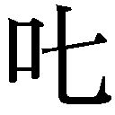

| 忍物語 <物語> (講談社ＢＯＸ) | |
| 西尾維新 | |
| 講談社 (2017) | |
本作品は、縦書き表示での閲覧を推奨いたします。横書き表示にした際には、表示が一部くずれる恐れがあります。
ご利用になるブラウザまたはビューワにより、表示が異なることがあります。
BOOK＆BOX DESIGN VEIA
ILLUSTRATION VOFAN
貼交帰依はこの春、私立直江津高校に入学したばかりの一年生で、女子バスケットボール部に所属し、もちろんのこと、その両方を途轍もなく後悔していた。直江津高校なんて偏差値の高い進学校に入学したことも後悔していたし、進学校の運動部とはとても思えないスパルタ式の女子バスケットボール部に入部したことも後悔していた。
なんでも、かつて直江津高校の女子バスケットボール部には、超高校級のスーパースターがいて、冗談でなく全国区でバリバリ戦っていたそうで、と言っても先述の通り既にその先輩は引退しているのだが、その名残で、ハードな練習だけが後進に受け継がれている。
強くもないのに練習のキツい運動部。
最悪だ。
黄金時代のイメージに引きずられた旧時代的なトレーニング、『同じ人間なんだから自分にもできるんじゃないか』なんて、肥大した自己投影のイメージ。
だいたい、そのスーパースターの先輩にしたって、最終的には左腕を怪我して早期引退したというのだから、スパルタ式のトレーニングには何の意味もないどころか逆効果であると実証されているようなものじゃないか......、なのにどうして、未だあの部では、兎跳びが採用されているのだろう。
かと言って、退部届を提出しようという気にもなれない。もしも監督やキャプテンから『才能がないからもうやめろ』と冷酷に宣告されたなら、これ幸いと喜びいさんで身を引くだろうけれど、残念ながら、スパルタ式の女子バスケットボール部は、それもどうやらスーパースター在籍時代の名残らしいのだけれど、連帯感も強かった。
連帯感が強いということは、連帯責任が重いということだ。
自分がやめることが、チームメイトにどんな影響を与えるかを想像すると、なかなか愚痴も零しづらい......、もしも『やめたい』と言ってしまったら、それが自分ひとりの問題じゃなくなってしまう。
間違っているとしか思えない頑なな伝統でも、それを途絶えさせる原因にはなりたくなかった......、願わくば自分のせいではないところで、悪しき伝統には自然消滅して欲しい。連帯責任に基づく責任転嫁。たぶん、他のチームメイトも似たような動機で、似たような縄に縛られて、ハードなトレーニングに耐えているのだと思うと、みんな揃って馬鹿みたいだ。
そんなこんなで、今日も今日とて、その日も貼交帰依は、下校時刻ぎりぎりまでおこなわれる部活動へといやいや参加し、暗い夜道を、ここ数ヵ月、ついぞ筋肉痛の途絶えたことのない両足を引きずるようにしながら、帰路についていた。
チームメイトとは帰る方向がばらばらで、クラスの友人達とは帰る時間が一致するわけもなく（正直なところ、部活動があまりにハード過ぎて、クラスの友人達とは、疎遠になりつつある）、安全とは言えない女子のひとり下校だけれど、彼女はもう、いっそ暴漢が襲ってきてくれないだろうか、などと考えている。
大怪我をすれば大手を振って退部できるのに。
思いつめ過ぎだと自分でも思うが、もう己で己の思考をコントロールできなかった......、無意味に残った負の遺産を、逆効果だと思いながらも引き継ぐことに、ほとほと疲れ果てていた。
成績も下降の一途を辿っている。
さすがに試験前は、部活動はお休みになるのだが、しかし『自主練をすること』『コソ練をすること』という無言の圧力からは逃れがたく、高校生活初めての中間考査は女子中学生の頃には考えられないほどの目をそむけたくなるような酷い結果だったし、このままだと、期末考査の順位は三ケタを記録しかねない。
まあ、すべてを部活動のせいにもできない。
ほんの数ヶ月前まで、ひょっとすると自分は神童なんじゃないかと密かに自己評価していたのが恥ずかしいくらい、私立進学校に集結された皆さんは、成績優秀でいらっしゃった......、わたしは直江津高校始まって以来の落ちこぼれになるんじゃないかと、そんな風に落ち込むほど。
ああ、だから暴漢に襲われたい。
わたしを襲って。痛めつけて。
わたしの人生を滅茶苦茶にして。
部活をやめる理由にもなるし、きっと期末試験も免除されるに違いない......、入院中に勉強して、遅れを取り戻そう。そうだ、神童ではなくとも、わたしはそこそこのお利口さんではあったはずなんだ。
今ならまだやり直せるはず。
こんな考えは現実逃避なのだろうか？
（現実逃避......、現実から逃げることを言うんだっけ？ それとも、現実に逃げ込むことを言うんだっけ？）
夢や願望を捨て、現実に集中すること。
それだって現実逃避と言えば現実逃避だろう......、どちらにしても、都合よく、彼女の頭をごつんと棍棒で殴りつけてくれる暴漢は、貼交帰依の下校道には現れてくれなかった。何度願っても、何日願い続けても。
ああ、じゃあもう暴漢じゃなくてもいい。
曲がり角でクルマに轢かれるのでもいいし、ピンポイントで飛行機が墜落してくるのでもいい......、わたしを楽にしてくれるならなんでもいい。
現実じゃなくても......、幻想でもいい。
たとえば。
そう、たとえば妖怪変化でも──
「この国に来てつくづく思うが......、『いただきます』って挨拶ほど、いただけねえ文句はねえよなあ......、ごちそうさまって挨拶なんて、まるでお粗末だぜ」
と。
三叉路に差し掛かったそのとき、背後から暴漢が襲いやすいように、あえてスマートフォンの画面を見ながら歩いていた、否、痛む両足をずるずる引きずっていた貼交帰依に、正々堂々、真正面から声がかかった。
まるでそう名乗ることが。
譲れないエチケットでもあるがごとく。
「俺様は、デストピア・ヴィルトゥオーゾ・スーサイドマスター。決死にして必死にして万死の吸血鬼だ」
希望が叶った。あるいは絶望が叶った。
そう思って、貼交帰依はようやく顔を起こした。
病院に立ち寄るのは久しぶりのことだった。
と言っても僕、阿良々木暦は、取り立てて注射が嫌いだというわけでもないし、白衣恐怖症でもない──白衣はむしろ好きだ。ここだけの話、彼女に白衣を着てもらったこともある......、シャープペンシルを用いた注射器ごっこで遊んだ。
にもかかわらず（そんな欲求不満に陥るくらいには）ここのところ、大小かかわらず病院から遠ざかっていたのは、まだ高校に通っていた頃の十七歳の春休みに、背筋も凍るほどに美しい、金髪金眼の吸血鬼に血を吸われ、ほんの二週間ほど吸血鬼と化して以来、その後遺症で、僕は怪我とも疾病ともほぼ無縁になったからだ。
嫌気が差すほどの健康優良。
むしろ、下手に病院で診察なんかされたら、常識外れの再生能力や図抜けた視力などが白日の下にさらされ、人体実験のサンプルにされてしまいかねない......、そんなわけで、大学入学にあたっての健康診断さえ口実を設けてサボったくらいである。
華やかなキャンパスライフを送るためには、用心して用心し過ぎるということはない......、にもかかわらず、このたび、こうして直江津総合病院に足を運んだ理由は、僕が実の親よりも頭の上がらない大人から、じきじきに呼び出しを受けたからだ。
臥煙伊豆湖さんである。
「どう見る？ こよみん。この患者を」
第四病棟五階の一室で、まるで医者みたいな口振りで、臥煙さんは言う──僕の見解を求めてくる。僕は理学部であって医学部ではないのだけれど、それを言うなら臥煙さんだって、医者ではない。まあ、この人なら、医師免許を何枚持っていても、おかしくはないと思うけれど......、もちろん、今はお医者さんごっこの最中であるはずもなく、ともかく、促されて僕は、ベッドの上の『患者』に目をやる。
本当は、そう広くはないこの個室に這入った時点から、その『患者』のことは視界に入っていたのだけれど、正直、直視するのが難しかった──反射的に目を逸らしてしまった。
見てはならないものを見てしまったような気分になったのだ。
寝台に横たえられていた『患者』は、
「......木乃伊」
だった。
入院用の患者衣を着せられているものの、少なくとも、生きた人間ではない──そう見えた。
「木乃伊ですよね、これ。しかも、ヒトの」
高校生の頃、猿の木乃伊というのを見たことがあったけれど、骨格や、頭部に残った髪の毛を見る限り、からからに干からびてはいても、この木乃伊が人間であることは間違いがない。
生きた人間ではなくとも。
死んだ人間ではある。
「いやいや、これが死んだ人間でもないんだよ、こよみん」
「......あの、臥煙さん。『こよみん』って呼ぶの、そろそろやめてもらってもいいですか？ 僕、もう大学生なんですけれど」
「大学一年生なんて生まれたての赤ちゃんみたいなものだよ。私もそうだった。ばぶばぶ言っていた」
取りつく島もない。
まあ、言うだけ無駄か。年齢不詳のこの人なら、たとえ僕が成人したって、親しみを込めて『こよみん』と呼び続けてくれそうだ......、ところで、『死んだ人間でもない』とは？
「生きているんだ。まだ。この状態でも」
臥煙さんはさらりと言った──専門家らしい、それも専門家の総領らしい、落ち着いた、過度に深刻ぶらない口ぶりだ。
だけれど、専門家ならざる僕としては、ちっとも看過できない台詞である。
この木乃伊が生きている？ だって？
てっきり、どこかの寺から運んできた即身仏か何かかと、当たりをつけ始めていたのだけれど......、考えてみれば、そんなものを病院のベッドに寝かせるほど、臥煙さんも悪趣味じゃないか。
「心臓も動いているし、呼吸もしている。生体反応は嫌になるほど正常だ。意識こそないが、死んではいない......、噓だと思うなら、確かめてみなよ」
「確かめてって......」
言われて、僕は、おっかなびっくり、眠れる木乃伊の心臓へと手を伸ばす──触れる直前で、「ちょい待ち、こよみん」と窘められた。
「女の子だからね。胸に触るのはＮＧだ。紳士らしく、レディの手を取って、脈を取るくらいにしておいて」
女の子？ なにぶん干からびているので、木乃伊は性別不明だったけれど──しかし、レディであることはともかくとして、女の子──女子であるとは聞き捨てならなかった。
「......じゃあ、失礼して」
僕は木乃伊の右手首に触れる。なにせ木乃伊だ、触ったらぽろっと崩れてしまうんじゃないかという不安もあるので、相当慎重な手つきを心掛けたけれど、そのかさかさの肌は、思ったよりも弾力に富んでいた。
そして確かに脈を打っていた。とくん。とくん。とくん。
「言っておくけれど、血液が流れているわけじゃない──心臓は動いているけれど、血液は流れていない」
空気が流れているだけだ──と、臥煙さんは言った。
「空気が空虚に、ね。空っぽみたいなものだ」
「............」
僕は臥煙さんの、軽口とも事実ともつかないそんな台詞を聞きながら、木乃伊の髪をそっとかき分けるようにして、慎重に『女の子』の首筋辺りを確認した──予想通り。
そこには小さな二つの穴が穿たれていた。
まるで蛇にでも嚙まれたかのような。
あるいは鬼にでも吸われたかのような。
「............」
「貼交帰依ちゃんというのが、その木乃伊の名前だ。こよみんが通っていた直江津高校の女子生徒だよ......、と言っても、今年度の新入生だから、こよみんとは面識がないと思う」
「......吸血鬼に襲われたんですか？」
思わぬところで母校の名前が出てきたことに内心面喰いつつも、僕は臥煙さんに、言わずもがなのことを確認する。言わずもがな過ぎてうんざりするが、だからと言って訊かないわけにもいかない。
徐々に、僕がここに呼び出された理由が判明してきた。
「どうやらね。部活動を終えての下校中、ばったり遭遇してしまったらしい」
「つかの間の平和でしたね」
そんなコメントしか出てこなかった。
悟った振りをしているつもりもない。
しかし、僕が吸血鬼に襲われたあの春休みから始まった一連の騒動には、どうあれ卒業式までにピリオドが打たれたはずなのに、ほんの数ヵ月後には、こんな別件が起こってしまうなんて。
いや、僕が知らないだけで、世間ではこれくらいの出来事が、頻繁に起こっているのかもしれない──そうでなければ、『なんでも知ってるおねーさん』である臥煙さんの職業が成り立つまい。
とんだビジネスチャンスもあったものだ。
隙間産業ならぬ隙間死業か。
「つまり、この子は......、貼交ちゃんでしたっけ？ 貼交ちゃんは、吸血鬼化しているということですか？」
「吸血鬼化に失敗したと見るべきだね」
臥煙さんは肩を竦めた。
「よくあることだ。こよみんみたいに、成功するほうが珍しいんだよ。もっとも、あれはあれで、きみの血を吸った吸血鬼サイドから見れば、大失敗だったわけだけどね」
言って臥煙さんは、病院独特のリノリウムの床へと......、僕の影へと目を落とす。
もちろんのこと、影から反応はなかった。
真昼間である。
「生きてはいるけれど、死んでいないだけ......、ただただ血液を吸い尽くされた木乃伊。瀕死ではない半死半生。ですか......」
あのとき僕もこうなっていたかもしれないわけだ......、とは言え、ぞっとする一方で僕は、どこかでほっとしていた。
吸血鬼に血を吸われ、生きているんだか死んでいるんだかよくわからないような木乃伊にされたことが、貼交ちゃんにとって幸運だったなんて、まったく言うつもりはないけれど、しかしそれでも、死んでいないのであれば、まだ望みはある。
それこそ、僕がそうだったように、人間に戻る方法はあるはずだ──成功しなかったことが、この場合は不幸中の幸いとさえ思える。
絶望の中の望みとさえ。
僕のときは、独力の独学でなんとかするしかなかったけれど、今回は最初から全知の専門家、臥煙さんが出張っているのである......、楽観はできないにせよ、この子を助ける方法はあるはずだ。
「『助ける』ね。うちのアロハはなんて言ってたかな？ そう言うの」
「......おたくのアロハがどう言っていたかなんてもう完全に忘れましたけれど、臥煙さん、あなたは言わないでしょう。『助けない。人はひとりで勝手に助かるだけだよ』なんて」
「憶えているじゃないか」
苦笑しながら、臥煙さんはそう受けて、
「もちろん、私はこの子を、貼交ちゃんを助けるためにここにいる。でも、こよみん。本来出不精である私が、こうして初手から出張っていることを、単純に『頼もしい』と思ってもらっちゃ、やっぱり困るんだよ」
と言った。
なんて言った？
「？ どういう意味ですか？ あなたが頼もしくないっていうんなら、他の誰が頼もしいっていうんですか、臥煙さん」
「嬉しいことを言ってくれるが、それを説明する前に、移動しようか」
「移動？ どこへですか？」
「回診だよ。お医者さんごっこが嫌いじゃないらしいこよみんに、次の患者を紹介しよう」
どうしてこの病院で、医者でも職員でもない臥煙さんが、こうも我が物顔で振る舞えるのかは謎めいていたけれど、隣の病室の寝台にも、同じように同じような木乃伊が横たえられているのを見て、どうやら専門家である彼女に今回の件を依頼したのが、この病院の院長だと解釈するのが適当であるように思われた。
体内の水分がほとんど奪われた患者が、それでもなぜか死なない患者が、二体立て続けに運び込まれてくれば、そりゃあ現代医療も匙を投げるだろう......、オカルトの出番だ。
「彼女は本能あぶりちゃん。やはり直江津高校の生徒なんだけれどね──ただし、二年生なので、ひょっとするとこの子のことは、こよみんも知っているかもしれない」
残念ながら。
高校時代の僕は、あまり後輩と交流のあるほうではなかった。
どころか、学年をまたいで生徒名を把握しているほど、学校になじんでもいなかった......、現二年生ということは、僕が三年生のときの一年生か。
だとすれば顔くらいは知っていたかもしれないけれど、木乃伊と化し、患者衣を着せられていては、人着で判別することもできない......、正直なことを言わせてもらえるなら、隣室で寝かされている木乃伊との区別さえつかなかった。
「道路に横たわる貼交ちゃんの木乃伊が、通行人に発見されたのが一昨日のこと。自宅のお布団で木乃伊化した本能ちゃんが、母親に発見されたのが昨夜のことだ」
「一日ひとりですか。かなりのハイペースですね」
「一日ひとりとは限らない。もっと多くて、単に大量の木乃伊が発見されていないだけかもしれない。今のところ、直江津高校に通う女子生徒が狙われているようにも思えるけれど、これは百人の中のふたりなのかもしれない」
百人の中のふたり。決して大袈裟ではないのだろう。
僕の知る吸血鬼は、数ヵ月にひとりを吸血するだけでも生きていけると豪語していたが、その一方で、自制心を失えば世界中の人類から吸血することだってできる食欲を有していた。
だが、基本的には今のところ、臥煙さんの推測に基づいて、ものを考えるべきだろう......、正体不明の吸血鬼によって、直江津高校に通う女子生徒が狙われている。
正体不明......、いや。
僕の知る吸血鬼。
「あの、臥煙さん。ひょっとして、忍の奴が疑われたりしています？ 確かにあいつは、かつて直江津高校の女子生徒の間で、噂になった吸血鬼ですけれど──」
「いやいや、そんなことは思ってもみなかったよ。言われて初めて気付いた。そんな理由で、大学生活を謳歌しているこよみんを呼び出したわけじゃあない。土地勘のあるきみに協力して欲しいだけなのさ、三人目の、あるいは百一人目の被害者を出さないために」
たまには縁もゆかりもない女子を助けてみるのも乙だろう──と、臥煙さんは、僕の来歴を揶揄するようなことを言ってきた。返す言葉もない......、目の前にいる、手の届く範囲の困った連中を助けることばかりに躍起になって、結果、目の届かない、手の届かない場所にいる連中を、困らせてきた僕としては。
でも、どうだろうな。
こうしていきなり木乃伊を、二体連続で見せられてしまっては、しかもそれが女子高生の木乃伊だと聞かされてしまっては、必然僕も、道義的な使命感に駆られたりはするものの、基本、臥煙さんからの要請を、すんなりと受け入れることは危険だ。
得体のしれない大人は、ある意味、吸血鬼よりも怖い。
即答しかねて、僕が黙っていると、「実は私のほうこそ、こよみんを頼りたい局面なんだよ。頼もしいこよみんを」と、臥煙さん。
「裏方に徹したい私が出張らざるを得ない状況なんだ。そう言って足りないなら、こう言ってもいい......、私は現在、余弦の奴を呼び戻すために手を打っている」
「え......、影縫さんを？」
そこまで驚くことではないのかもしれない。だが、僕はこれ以上なく驚いた──二体連続で木乃伊を見せられるよりも驚いた。少なくとも、臥煙さんが見込んだ以上の効果が、その発言にはあった。
余弦の奴を呼び戻す。
確かに影縫さん、影縫余弦さんは、不死身の怪異を専門とする陰陽師だけれど、しかし彼女は真っ当な専門家とは言い難い。どころか、この世で一番、道から外れた専門家である──以前、僕が高校生だった頃、臥煙さんと仕事をご一緒したときには、あれもあれで不死身の怪異がからむ、かなりの危機的状況だったにもかかわらず、臥煙さんは頑なに影縫さんを頼ろうとはしなかった。
すなわち今回の事態はあれ以上だと、臥煙さんは読んでいるわけだ。
となると、知らない顔もできないか？ 母校愛なんてまったくない僕だけれど（むしろ通っている当時は、あの進学校のことは嫌いだった）、無関係を装うのは気が咎める。
それに、学年をまたいだ交流はほとんどなかったとは言え、それでも下級生に、知り合いがまったくいなかったわけではないのだ......、彼女達が吸血鬼の被害に遭い、木乃伊化させられるかもしれないと思うと、やはり心穏やかではいられない。
「......でも、現実問題として、影縫さんがやって来るとなれば、僕の出る幕なんてないと思いますよ。むしろ邪魔になっちゃうかもしれないくらいです。諸事情あって、吸血鬼化の後遺症がはなはだしかった高校生の頃ならまだしも、大学生になってからの僕は、すっかり落ち着いたものですから」
「そのようだね。ハリキリボーイだったこよみんが、すっかり落ち着いてしまったみたいで、おねーさんは寂しいよ」
言う言う。
「でも、余弦は、呼べばすぐやって来てくれるほど、フットワークが軽くないからね。ほら、彼女にはご存知の通り、特殊事情があるから。どんなに急いでも、この町に到着するまでに、数日はかかる......、その数日は、ダイレクトに被害者の数に繫がりかねない」
なるほど。
そこへいくと、僕は時間のありあまった大学生だからな。フットワークの軽さは、高校生の頃よりはなはだしい。今日だってこの通り、代数の授業をさらっと自主休講して、臥煙さんからの呼び出しにほいほい応じている。
本音を言えば、影縫さんとは色々あったので、シンプルに顔を合わせづらいという気持ちもあったのだけれど、そういう話であるなら、彼女がこの町に到着する前に、この怪異現象を終わらせてしまうという筋書きもありそうだった。
言うまでもなく、臥煙さんとしても、そちらのほうが望ましいわけだ。
「そうだ。影縫さんがやって来るなら、斧乃木ちゃんに教えてあげないとな......、って言うか、臥煙さん、斧乃木ちゃんには知らせなくっていいんですか？」
「あの子はあの子で、今は別件の仕事中だからね。こよみんには内緒の仕事中」
「？」
なんだろうな。
最近の斧乃木ちゃんは、どうやら千石とツルんでいるらしいけれど、そうなると僕からは探りを入れづらい......、しかもこうしてはっきり内緒だと言われちゃうと。
「大事の前の小事も大事だからね。どちらかと言えばそれは次回作への伏線だ。とは言え、私はいつも通り、無理強いするつもりはないよ。もしもこよみんが、こんなトラウマを刺激されるような事件にかかわるのはまっぴら御免だって正論を縷々述べるのであれば、私はあっさり引く。そのときは貝木を呼ぶよ」
「僕に任せてください」
どう考えても臥煙さんが、このようなタイプの現象に対してあの詐欺師をエントリーするとは思えなかったけれど、しかしその名前を出されてしまうと、選択の余地はなかった。
あいつをこの町から遠ざけるためだったら、僕は何でもする。
この町は詐欺師出禁なのだ。
「大抵の町は、詐欺師出禁だと思うけれどね。まあ、もちろんただとは言わないさ。こよみんに、少なからずリスクを冒してもらうからには、このフレンドリーなおねーさんは、きちんとリターンを提供するつもりだよ」
少なからずリスク、か。
まあ、吸血鬼を相手取ることになりかねないとなれば、のほほんと安全地帯に留まり続けるというわけにはいくまい......、まして、死屍累生死郎の復活よりも危険値が高いと評価された今回の件にかかわるとなると、僕にもそれなりの覚悟が必要だ。
だけれど、そのリスクに見合うだけのリターンが欲しいかと言えば、欲しくないというのが正直なところだった......、はっきり言って、臥煙さんから何かをもらうのは怖い。
縁や恩が深まれば深まるほど、深みにはまる。
こんな風に都度都度呼び出されていては、いつまで経っても高校から卒業できないみたいなものだ──そんな風に思っていると、しかし僕のそんな胸中を的確に読んだかのように、
「もしもこの怪異現象の解決に協力してくれるなら、こよみん。私はこよみんが大学を卒業するまで、約四年間、きみの前に姿を現さないし、連絡も取らないと誓うよ......、怪異とも専門家とも無縁の、明るく楽しいキャンパスライフを送ってくれたまえ」
と、臥煙さんは言った。
「ほ......、本当ですか？」
「本当だとも。私は噓とツインテイルは結ったことがない」
臥煙さんのツインテイル姿なんて、見れるものならなんとしても見てみたかったけれど、しかし、それよりも更に魅力的な提案ではあった......、いや、見様によっては絶交を宣言されているようなものなので、そこまで誓われてしまうと寂しいものもあったが（我ながら勝手だ）、ことあるごとになんだかんだと、ちまちま恩着せがましいことを言われ続ける生活から、綺麗さっぱり足を洗えると言うのであれば、そんな嬉しいリターンはない。
まあ、詐欺師の先輩である臥煙さんの誓いに、果たしてどれくらいの信憑性があるのかは定かではないけれど（ツインテイルも結ったことはあるかもしれない）、まあ、そんな約束があってもなくっても、やはり知らない顔のできるシチュエーションではない。
外堀は完全に埋められているようなものだ。
そもそも、臥煙さんにとって、僕は決して動かしやすいカードではない。その点影縫さんのことを言えたものじゃない。フットワークが軽過ぎることだって問題なのだ。臥煙さんの計算通り、指揮通りに動かないことにかけては、高校三年生の阿良々木暦は、我ながら酷かった──思い出すにつけ、あの頃の振る舞いは、反省するしかない。
そんな出来損ないの手札を、臥煙さんが使わざるを得ないような事件が、地元で起こっているなら、返す返すも見過ごすわけにはいかないだろう......、そうだな。
たまには知らない人を助けるのもいい。
「わかりました。学業に支障が出ない範囲で、手伝わせてもらいます──ただし、家族に迷惑をかけたくないので、その点だけはご配慮よろしくお願いします」
「ああ。もちろん、その点は取り計らうよ。余弦と月火ちゃんの間柄についてはなんでも知ってるおねーさんはわけても熟知しているから──おっと」
首尾よく、臥煙さんが僕からの協力を取りつけたそのタイミングで、彼女の携帯電話が着信音を奏でた──いや、ここは院内なので、着信があったのは、ＰＨＳかもしれない。通信機器を常時多数、多種類、持ち歩いているおねーさんである。
「もしもし？ うん。うん。......うん」
通話しながら、頷くたびに臥煙さんのトーンが下がっていく。
基本的にシリアスの似合わないお気楽スタイルのおねーさんなのだが、どうやら、そんなおねーさんをして笑えないような情報が、電波に乗って届けられたらしい。
「残念なお知らせだ、こよみん」
電話を切って、臥煙さんは言った。
「三人目の被害者が発見された。やはり直江津高校の女子生徒だ」
私立直江津高校に通っていた頃の阿良々木暦と、国立曲直瀬大学に通い始めた今の阿良々木暦の、もっとも顕著な違い、あるいは変化を問われたならば、それは通学手段だと答えるのが適切だろう。基本的に自転車で、そうでないときは徒歩で学校に通っていた高校時代の僕が、大学に向かうにあたっては、なんと自動車のハンドルを握っている。
フォルクスワーゲンのニュービートルだ。こつこつと汗水垂らしてバイトをした末に購入した、状態のよい中古車を、更に自らレストアした一台だと言うと印象がいいだろうけれど、卒業祝いに親から贈られた新車である。
我ながら甘やかされている。
案外、そんな風な甘やかしを、反抗期らしく反抗せず、すんなり受け入れられるようになったことが、一番の違いであり、変化なのかもしれない......、さておき、病院から出た僕は、そんなニュービートルの後部座席に臥煙さんを乗せて、怪異現象の現場へと向かっていた。
どうして後部座席なのかと言えば、助手席にはチャイルドシートが常設されているからだ──僕の助手席は、幼女の指定席なのである。
「忍ちゃんって、見た目、八歳くらいじゃなかったっけ......？ 完全体モードとは比べるべくもないにしたって、チャイルドシートに座るには、ちょっと育ってるんじゃないのかい？」
「ちょっと育ってる子供が、チャイルドシートに窮屈そうにぎゅっと座っている感じが、僕は好きなんですよ」
「ふうん......、それ、あんまり人に言わないほうがいいよ、こよみん。なんでも知ってるおねーさんも知りたくはなかったよ」
そんな洒落た会話を軽やかに交わしながら、僕達が向かう先は、それもやはりと言うべきなのか、直江津高校の通学路だった──病院からそう離れた場所でもないので、すぐに到着した。
木乃伊が発見された直後となれば、野次馬で人だかりができていたり、そうでなくとも警察が駆けつけていたりするんじゃないかと思っていたけれど、その現場には、逆に驚くほど、人気がなかった......、通学時間はとっくに終わっているとはいえ、生活道路がここまで閑散とするものか？
怪訝に思った僕だけれど、それは臥煙さんの計らいだったようだ。
専門家の専門領域、結界による人払いだ。
当たり前のことだが、このたび、臥煙さんの手足として動いているのは、僕だけではないらしい──チームで動けるのが臥煙さんの強みであり、既に病院に運び込まれたふたり同様に、木乃伊化した被害者を探していた捜索隊が、早くも成果を上げたというわけか。
早くも。それとも遅まきながら、か。
三人目の被害者が発見されて、よかったとは言えない。
「人見知りするこよみんのために、捜索隊にもここを離れてもらったから、ゆっくり現場検証ができるよ」
と、臥煙さん。
その心遣いは嬉しいけれど、僕はそこまで極度の人見知りじゃない。
まあ、たぶん臥煙さんとしては、腹心の部下と言うか、『本当の協力者』には、臨時メンバーである僕を紹介したくないのだろう──気持ちはわかる。
僕は教育に悪いからな。
「とは言え、昼間の住宅街じゃあ、超常結界にも限度がある。テンポよくいこう。視覚的にインパクトが強いと思うから、こよみん、それなりの心構えをしといて頂戴」
言いながら臥煙さんは、路側帯に停めたニュービートルの後部座席から降りる......、二体も連続で女子高生の木乃伊を見せておいて、今更何を言っているのだろうと思いながら、僕はあとに続いたけれど、しかし直後に、僕はその助言のありがたさを思い知ることになる。
第三の被害者と目される『彼女』が発見されたのは、正確には、通学路脇のガードレールの向こう側にある、なんだかよくわからない掘っ立て小屋の中だった。
まあ、たぶん元々は何か目的のある木造建築だったのだろうけれど、今となっては、正体不明の積木細工みたいに見える......、中に這入っても、せいぜい日よけになるくらいで、こんな隙間だらけでは、雨どころか風さえしのげまい。
そんな中で干からびている木乃伊に、僕は絶句した。
病院のベッドの上で、患者衣を着て横たえられている木乃伊と、こんなわけのわからない謎の小屋の中で、高校の制服を着て、まるで行き倒れのごとく横臥している木乃伊とでは、まったく視覚効果が違った。
靴が脱げていたり、着衣が乱れていたり、鞄が転がっていたり。
そんなディテールが、これが現実なのだと、ねちねち思い知らせてくれる......、怪異現象だからと言って、決してファンタジーでも何でもないリアリティなのだと。
現実と妄想に区別なんてないのだと。
素人が手を出すべきでない領域に踏み込んでしまったと、素直に後悔した──約束を交わした相手が臥煙さんでなかったら、ここで尻尾を巻いていたくらいだ。
とは言え、ここで全身を駆使して、動揺を表現するのはうまくない。
むしろ専門家に対して、きっちり見栄を張っておきたいところである......、僕はできる限り冷静ぶって、その木乃伊に近付いていきつつ、
「この子も、吸血鬼化に失敗したと見えますね」
と、わかりきったことを知った風に言いながらかがんで、さっき病院でしたのと同じように、『彼女』の手首を取って、脈を調べようとした──と、そのとき。
「こよみん、危ない！」
臥煙さんの大声というのも珍しかったが、それも無理なかった。
木乃伊のそばにしゃがみ込んだ僕に対して、『彼女』が、まるで背中に発条でも仕込まれていたかのように跳ね上がり、逆に手を伸ばしてきたのだ──否、手ではなく、指。
指ではなく爪だった。
木乃伊が僕を、引っ搔きにきた──引き千切りにきた。
「う、うわっ！ と......」
女子高生に組み敷かれるというのは、状況によっちゃあエキサイティングで愉快なものなのかもしれないけれど、それが不気味な掘っ立て小屋の中で、しかも女子高生が木乃伊だという条件も付与されれば、とても嬉しがってはいられなかった──脈を取るために、不用意に木乃伊に近付いた僕だったが、違う目的──防衛目的──で、『彼女』の両手首をぎゅっとつかむことになった。
女子高生の、ネイルされていない十爪についてはなんとかそれで凌げたけれど、しかし、牙についてはそうはいかなかった──むしろ両手首をつかんだことで、僕もまた、自分の両手を封じられたようなものだった。
まさか、僕を組み敷いたままで、がぶりと嚙みついてこようとする木乃伊に、こちらからがぶりと嚙みつき返すわけにもいくまい。
ありとあらゆるキスをしてきた僕ではあるけれど、さすがに木乃伊の女の子というのは、ストライクゾーンを外れているのでね──それでも熱烈に迫ってくる木乃伊の唇を、そしてその奥にきらめく牙を封じたのは、専門家の手腕だった。
封じたと言うか、臥煙さんはむしろ解放したのだった──開放したのだった、掘っ立て小屋の窓にかかっていた、布きれのようなカーテンを。
それで室内にさあっと入ってきた日差しが、さながらスポットライトのように木乃伊を照らすことで、『彼女』は動きを止めた──まるで太陽電池で動くからくり人形とは真逆に、太陽を浴びることで、木乃伊は動作を停止した。
魂が抜かれたように──そんなものがあるとしてだが──がくんと、僕に覆いかぶさってきた。これはこれで怖かったけれど、しかしどうやら、迂闊な僕はかろうじて窮地を脱したようだった。
最小限の対処で素人大学生の尻ぬぐいをしてくれた臥煙さんにしてみれば、こんなのは窮地でもなんでもなかっただろうけれど......、なるほど、失敗しているとは言っても吸血鬼であるがゆえに、日光には弱いわけだ。
そう言えば、木乃伊が寝かされていた病室には、やはりカーテンが引かれていた......、たぶん、それ以外にも、木乃伊を封じるための策が、あの病室にはあれこれ施されていたのだろう。
たとえ意識はなくっとも、失敗していても、吸血鬼は吸血鬼。
近付くだけで危険なのだ。
「す......、すみません、臥煙さん。勝手な真似をして」
勝手な真似と言うより、見栄を張った結果がこれだ。
我ながら成長がなくて嫌になる......、吸血鬼化に失敗した木乃伊に血を吸われて、それで吸血鬼化するのかどうかは知らないけれど、危うく十七歳の春休みの、正確無比で緻密な再現をしてしまうところだった。
情けない気持ちになりつつ、僕は木乃伊の下から這い出る......、そんな僕に臥煙さんは、「いや、お手柄だったよ、こよみん」と、意味のわからない慰めを言った。
お手柄？
「この子の名前は、口本教実ちゃんというらしいね。直江津高校の一年生だ。背が高いから、三年生かもと思ったけれど、最近の子はすくすくと成長著しいねえ」
既に僕には目もくれず、臥煙さんは、木乃伊の脇に転がっていた鞄を探って、生徒手帳だったり財布だったりを物色しながら、被害者の個人情報を収集しているらしかった──一人目の木乃伊が一年生で、二人目の木乃伊が二年生だったから、三人目が三年生......、みたいな、数列のリズムは刻んでいなかったわけだ。
「あの......、臥煙さん。お手柄っていうのは？」
「口本ちゃんが、こよみんを引っ搔こうと襲いかかる際、その手に握り込んでいた単語帳を落としたらしくってね──こよみんはもう高校生じゃないけど、単語帳って、憶えてる？ 英単語を暗記するための文房具」
言いながら臥煙さんは、振り向きもせずに、僕にひょいと、その単語帳を──もちろん憶えている。受験の頃に、さんざんお世話になったものだ──放り投げてきた。
受け取る──どうやら、口本ちゃんは、あまり勉強熱心なほうではなかったようで、それはほぼ新品みたいな単語帳だった。単語帳の、一番最初の一枚しか使われていなかったし、そこに赤のボールペンで、乱暴な筆跡で記されていたのは、英単語でさえなかった。
『Ｂ７７７Ｑ』
「......？ なんですか？ これ」
「さあね。ちなみに、すぐ脇に、それを書いたと思しき筆記具も落ちていた──ペンの蓋も締められずに。まるで、吸血鬼に襲われた際、口本ちゃんが慌てて、取るものも取りあえず、そんな単語を暗記しようとしたかのように」
臥煙さんはこともなげにそう言いつつ、ストラップのついた女子高生のスマートフォンをいじっていた──残念ながらロックがかかっているようで、通信機器の扱いには長けている専門家も、その内部を分析することはできないらしかった。
さておき、単語帳。
単語を暗記しようとした......、わけはない。
それってむしろ......。
「ところで、口本ちゃんは今時感心な読書家だったみたいで、鞄の中にはエラリー・クイーンの著作が入っていたよ。『読者への挑戦』の大家である、エラリー・クイーン」
そしてダイイング・メッセージの大家であるエラリー・クイーンである──口本ちゃんは、吸血鬼化に失敗したのであって、死んだわけでも殺されたわけでもないので、この場合、ダイイング・メッセージというのは正確ではないけれど──『Ｂ７７７Ｑ』か。
「ミステリマニアの扇ちゃんが喜びそうな暗号ですね。とは言え、まさかあの子を頼るわけにはいきませんけれど」
「だね。彼女も直江津高校の生徒ではあるがね。むしろ闇を深くしかねないから......、せめて執行猶予期間中は、おとなしくしておいてもらいたい」
執行猶予期間か。うまいこと言ったもんだ。
あんまり大人しくはしていないみたいだけれど、わざわざこっちから、あの子の好奇心を刺激することはあるまい──もっとも、これ以上、直江津高校の生徒が被害に遭うようであれば、あの暗黒少女は、自ら動きかねない。
参ったな。高校生の頃ならこういうときは、迷いなく羽川を頼ったものなんだけれど......、いや、待てよ。
「臥煙さん。こよみんに名誉挽回させてもらってもいいですか」
「ん？ なんだい？」
「このダイイング・メッセージ......、リビング・メッセージと言うべきかもしれませんが、解読できる心当たりがあります。この単語帳をちょっと預からせてください」
「そこまで言うなら構わないよ。リビング・メッセージか。うまいね。ダイイング・メッセージを、ダイニング・メッセージと言い間違える洒落はよくあるけれど、リビングというのは新しい。その証拠物件を早期発見できたのは、こよみんの功績だからね──私はこっちを担当するさ」
あっけなく任せてくれた臥煙さんだったけれど、それは僕にリベンジの機会をくれようというよりも、鑑識中に、もっと重要な手がかりを発見したからのようだった──臥煙さんはなおも、口本ちゃんのスマートフォンに視線を向けていた。
厳密には、専門家が鋭い目を向けていたのは、ロックのかかったスマートフォン本体ではなく。
それに文字通り紐づけられた、ストラップだ。
「......ストラップがどうかしたんですか？ 臥煙さん」
素人目には、何の変哲もないストラップにしか見えない。レタリングされたアルファベットの『Ｋ』を象ったアクセサリーが、ふたつぶら下がっている──もしかするまでもなく、それは口本教実（ＫＵＣＨＩＭＯＴＯ・ＫＹＯＵＭＩ）のイニシャルだろう。
携帯電話にロックをかけていても、そんな個人情報をぶら下げていたんじゃ意味がないような気もするが......
「もちろん、これだけなら、ただのよくある可愛らしいアクセサリーだよ。だけど、二人目の被害者である本能あぶりちゃんも、これと同じようなストラップを、スマートフォンに括りつけていたとなると、話は違ってこないかい？」
「え？ ......同じようなって？」
「イニシャルのアクセサリー。本能あぶりちゃんだから、『Ａ・Ｈ』だったが......、レタリングは同じだった。もちろん、ただの偶然かもしれない。薹が立ったおねーさんが知らないだけの、単なるブームなのかもしれない」
一人目の被害者である貼交ちゃんのスマートフォンには、何の装飾も施されていなかったわけだしね──と、臥煙さんは慎重に、そんなエクスキューズをつけた上で、「しかし」と続けた。
「もしかすると、直江津高校の女子生徒だという以外にも、被害者には共通点があるのだとしたら──そのミッシング・リンクを特定することが、同時に正体不明の吸血鬼の特定にも繫がる可能性はあるね」
臥煙さんが手配した救急車で、第三の木乃伊である口本教実ちゃんが、前の二体の木乃伊と同じく、直江津総合病院に運ばれていくのを後目に、僕は単身、曲直瀬大学へと向けてニュービートルを走らせた。
せめて午後からの講義だけでも受けようという、大学生として殊勝な心掛けではなく、残されていたリビング・メッセージの解読、その心当たりを訪ねるためだ。
都合よく、本日の五時限目は、意中の暗号学だった──なので、間違いなく命日子は出席しているはずだ。
食飼命日子。
大学でできた新しい友人である。なにぶん僕の友人なので、ご多分に漏れず変人でもあるのだが、重要なのは、食飼命日子が、僕にとっては何年振りになるかわからない、妖怪変化や魑魅魍魎、都市伝説や怪異譚とは関係のないところでできた友人だということだ──正直、これだけでも大学に入学した甲斐があったと言っていい。
頑張って勉強して本当によかった。
さて、曲直瀬大学に到着し、暗号学の教室へ、やや遅刻気味に入室してみると、例によっていいニュースと悪いニュースがあった。
悪いニュース。休講だった。
大学はこれがあるからな。
しかしいいニュース──がらんどうの教室の中に、たったひとり、本を読むでもなくスマートフォンをいじるでもなく、机に突っ伏して眠るでもなく、ただぼんやーりと座っている、目的の学生がいた。
「よう、命日子」
「あ。阿良々木ちゃん。おっらー。休講だよ？」
「おっらー。みたいだな。なのにどうしてお前はここにいるんだ」
「ここで過ごす予定だったから──かな？」
訊かれて初めて、なぜ自分が休講の教室に座っているのかを疑問に思ったようで、そんなとぼけた返答をしてくる命日子。
思えば、こいつと最初に口をきいたときも、確かこんな感じだったように思う──休講の授業に僕が遅刻して、ひとり、何をするでもなく座っている命日子と出会うというような。
要は命日子は、決定したスケジュールを変更することが決定的に苦手なのだ──たとえ休講になろうとも、この一時間をこの教室で過ごすと決めれば、その時間割通りに行動する。
変な奴だ。僕ほどじゃないが。
それに、おかげでこうして会えた──こういう性格の友人だから、携帯電話でアポイントメントを取り付けることがなかなか難しいのだ。
「ちょっと見てほしいものがあるんだ」
誰もいない教室を、僕はこれ幸いと、命日子の隣に座りながら、早速切り出す。
「いいよー。何でも見るよー。阿良々木ちゃんの頼みならー」
「この単語帳なんだけれど」
久し振りの怪異絡みではない友人なので、老倉に対してそうしているのと同じように、できるだけ怪異絡みのあれこれに巻き込まないよう気を配りつつ、命日子とはじわじわ友達付き合いを続けているわけだけれど、まあ、このくらいなら問題なかろう──と言うより、やはり大学に来るといろんな奴がいるもので、まるで違う時間の流れを生きているような、こののんびりとした雰囲気の女子大生は、ミステリマニアでもないのに暗号を解くのが趣味という、結構な変わり者である。
暗号マニアが高じて数学科に入学したような奴で、今日は休講になってしまっているが、この暗号学の講義を担当する教授からも評価の高い、一年生の希望の星だ。
なんでも将来は、警視庁のサイバー犯罪対策課への就職を目指しているとか......、なので、羽川にも扇ちゃんにも頼れない現状、相談を持ちかける相手としては、命日子以上の知り合いを、僕は思いつかなかった──もちろん、これが吸血鬼になり損なった木乃伊が残した、ダイイング・メッセージならぬリビング・メッセージであることまでは、公開しない。
臥煙さんにも絶対紹介しない。
貴重な友情を守りたければ、線引きは大切だ。
「『Ｂ７７７Ｑ』......、ふうん？」
興味をそそられたようだった。表情からはわかりにくいけれど、しかし基本的に命日子は、興味のないものは、あたかも見えていないかのように、無視をする。
うっかり『何でも見るよー』なんて安請け合いを鵜吞みにしていると、話がぜんぜん嚙み合わなかったりするので、どうやら見てもらえたようでよかった。
「単語帳なー。懐かしいなー。ん？ これ、裏にも何か書いてあるねえ」
「え？ 裏？」
あの掘っ立て小屋では、僕はぱらぱらめくっただけで、それでほぼ白紙だと判断したけれど、そうか、単語帳なのだから、裏面にも筆記スペースはあるのだった......。
やはり僕は探偵役には向いていない。
隙と見落としが多過ぎる。
とは言え、白紙に近いと思われた口本ちゃんの単語帳の、裏面のほうはみっちり使い込まれているなんて奇妙なことはなく、裏も表と同様にほぼ白紙で──ただし、命日子の指摘通り、『Ｂ７７７Ｑ』と記された最初の一枚の裏面にだけは、表面よりも更に乱れた筆致で、『２３１』と記されていた──『２３１』？
『Ｂ７７７Ｑ』と『２３１』？
まったくピンと来ないけれど──暗号マニアはどうかな？
「うん。わかんない」
「わかんないのかよ」
「そうだね。わかんない。わたしより賢い阿良々木ちゃんが、どうしてこの程度の暗号を解けないのか、わかんない」
それはつまり、解けたという意味だろうか？
命日子に、お礼にお茶でもおごろうかと言ったのだけれど、次の講義があるからと丁重に断られた──次の講義があるのは僕も同じだったが、しかし僕は命日子と違って、フレキシブルだ。講義をサボることにまったく抵抗がないのは、高校時代と同じである。
単純に時間がないというのもあった。
吸血鬼が絡んだ怪異現象なのだから、日が沈むまでに、できる限りのことはしておきたい──備えあれば憂いなし。
生きているのか死んでいるのかわからない、生死の境界線上にいる木乃伊相手にも、危うく引きちぎられかけた僕である。
吸血鬼そのものを相手にするとなると──まあ、臥煙さんの仕切りなのだから、バトル展開にはならないと思うのだが、それも影縫さんが到着するまでに物事が解決すればの話だ。
そんなわけで僕は、曲直瀬大学の駐車場から直江津総合病院へと、ナビに従って最短距離で移動した。到着したところで、別行動の際に聞いていた、臥煙さんのＰＨＳの番号に連絡し、口本ちゃんが運び込まれた病室の場所を教えてもらう──三人目の木乃伊なのだから、もうみんな同じ大部屋に入院させてしまえばいいんじゃないかと僕は愚考したけれど、どうやら臥煙さんとしては、むしろバラバラにしておきたいらしかった。
まあ、女子生徒達の関係者（主に家族か）が、変に情報を共有してしまえば、それが大騒ぎに繫がりかねない──あくまでそれぞれを『原因不明の奇病』として、個別に扱うことで、プライバシー保護の名目で、総毛立つほど恐るべき怪奇現象を、パニックを避けて秘密裏に処理できるわけだ。
むろん、それにも限度はあるだろうが......。
「やあ、こよみん。お早いお帰りだったね」
前のふたり同様に、患者衣を着せられ、ベッドに横たえられた口本ちゃんのかたわらで、何らかのまじないを施していた（吸血鬼封じ？）らしい臥煙さんが、僕を振り向いた。
「暗号は解けたのかい？ 解けたと言ってくれたら嬉しいね。こちらではひとつ不都合が起こったので、朗報が欲しい」
「へえ。僕がいない間に不都合が起こるなんて、珍しいですね」
「まったくだよ」
軽口に応じてくれない辺り、本当に不都合な不都合が起こったらしい──それに見合うだけの朗報を、僕は残念ながら持って帰って来られていないのだけれど。
命日子のおかげで、問題の暗号は、確かに解けたは解けたのだが、しかし、それでも意味がわからないことに違いはなかったのだ──もっとも、これもまた素人判断である。
専門家である臥煙さんに、命日子の解答（解読）を提示すれば、ひょっとするとそれですんなり意味が通るのかもしれない。
「暗号学を専攻する予定の大学の友達が、十秒で解いてくれました。あっけないっちゃあっけないんですが、まあ、高校生の考える暗号ですから」
あっちゃいけない解読ではない。
僕は単語帳を、ベッドサイドの棚に置いて、手短に説明する。
「『Ｂ７７７Ｑ』。分解すると、『Ｂ』と『Ｑ』に、スリーセブンが挟まれているという構造なわけですが、では、このアルファベットの『Ｂ』と『Ｑ』に共通する特徴はなんでしょうか──なんて、臥煙さん相手に勿体ぶっても始まりませんよね」
「いや、楽しんでいるよ。そのまま続けて」
促されてもね。
お気付きでしょうに、僕の名誉回復に付き合ってくれて嬉しいものだ。話してみると、意外といいところがあるじゃないか。
「まあ、要するに大文字で書いたらまったく違う『Ｂ』と『Ｑ』は、しかしながら、小文字で書けば『ｂ』と『ｑ』、逆さになってるだけで、おんなじ形だってことです──そして、同じ形と言えば、アラビア数字でも、同じ形のペアがありますよね」
「そうだね。ウノでおなじみ」
「ウノでおなじみかどうかはわかりませんが」
『６』と『９』だ。
で、ご覧の通り、『６』と『９』は、『ｂ』と『ｑ』と、やはり同じ形である──つまり、代入に代入を重ねれば、『Ｂ７７７Ｑ』は、イコールで『６７７７９』と、表現することができる。
『Ｂ７７７Ｑ』＝『６７７７９』。
「ふむ。なるほどね、そこまでは納得した。けれど、『６７７７９』という数字は、何を意味するんだい？ そこから先の解釈は？」
「暗号学の専攻を希望していると言っても、あくまでその友人は、僕と同じ数学科の大学生ですから、こうした数字の並びを見てみれば、素因数分解したくなるのが性だそうでしてね」
「厄介な性だね」
「ええ。ただ、素因数分解するまでもなく、『６７７７９』は、三つの素数に分割できることは、火を見るよりも明らかですよね。つまり『67／７／79』です」
「火を見るよりも明らかなわけがないじゃん。幽霊を見るよりも仄暗き闇だよ」
呆れたように臥煙さんは肩を竦める。
なんでも知ってるおねーさんも、暗号マニアで素数マニアの性まで、知り尽くしているとは言えないようだ。
「で？ 次は『67／７／79』をどう解釈するかだよね？」
さすがに素数が何かを、いちいち説明するまでもないらしく、臥煙さんは解読の続きを求めてくる──人を使うのがうまい人だ。
「アルファベットをアラビア数字に変換するくだりがありましたからね。今度は逆の手順で、アラビア数字をアルファベットに戻すのが、オーソドックスな解読だそうです」
「ん......、つまり、『Ｓ／Ｄ／Ｖ』かい？」
鋭いな。
そう......、『67』は、『２』から数えて十九番目の素数。同様に『７』は、四番目の素数で、『79』は二十二番目の素数。
十九番目のアルファベットは、『Ａ』から数えて、『Ｓ』。四番目のアルファベットは『Ｄ』で、二十二番目のアルファベットは『Ｖ』。
『67／７／79』＝『Ｓ／Ｄ／Ｖ』。
「そこまで十秒で解読したと言うのなら、最近の大学生も侮れないね。今のところ、文句のつけようはないけれど、しかし『Ｓ／Ｄ／Ｖ』が何を意味しているかは、まだわからないね。なおも続きはあるんだろう？」
「ええ......、臥煙さんはお気付きだったでしょうが、単語帳の該当の紙片には、裏面にも記載がありまして......、表面と同じ筆跡で、『２３１』と書かれていました」
「気付いてなかったよ。あまりおねーさんを買い被らないでくれるかな、若者に失望されるのは辛いんだ。『２３１』？ さくっと『３』で割り切れるから、当然、素数じゃないよね。モーリス・ルブランの小説のタイトルは、確か『３１３』だったかな」
「わざわざ裏面に書かれていることから、暗号ではなく、ヒントとなるサブキーだと解釈すべきだそうです......、単純に、順番を示しているんじゃないかと」
「順番。つまり、表面の暗号から導かれた三つのアルファベットを、『２・３・１』の順番に並べ変えろって、アナグラムかい？ つまり、『Ｓ／Ｄ／Ｖ』は、『Ｄ／Ｖ／Ｓ』......」
『Ｓ／Ｄ／Ｖ』＝『Ｄ／Ｖ／Ｓ』。
おそらく、これは完成形の見栄えをよくするために、スリーセブンの『７７７』を表現するために並べ替えていた暗号を、元に戻すための工程なのだろう。
僕だって、『７７ＱＢ７』よりは『Ｂ７７７Ｑ』のほうが、見栄えがいいとは思う。
まとめると、
『Ｂ７７７Ｑ』＝『ｂ７７７ｑ』＝『６７７７９』＝『67／７／79』＝『Ｓ／Ｄ／Ｖ』＝『Ｄ／Ｖ／Ｓ』
である──『わたしより賢い阿良々木ちゃん』と、僕のことを過大評価してくれていることは素直に嬉しいけれど、いやいや命日子、ここまで辿り着くのは僕じゃあ無理だ。
ただ、暗号マニアの命日子をして、解読できたのはここまでだった──『Ｓ／Ｄ／Ｖ』が、『Ｄ／Ｖ／Ｓ』だったからと言って、やはり意味が通らないことに違いはない。
現時点で解読できるのはここまで。
だから、ここでもしも臥煙さんに、更に『まだわからないね。なおも続きはあるんだろう？』と訊かれれば、お手上げするしかなかったのだが、しかしなんでも知ってるおねーさんは、
「............」
と、更なる追及をするでもなく、しかして感想を述べるでもなく、口元に手を当て、静かに考え込むような仕草を見せた。
期待していた通り、専門家ならではの解釈があるのだろうか？ 『Ｄ／Ｖ／Ｓ』は、ひょっとして専門家の使う専門用語なのだろうか......、たとえば『ドラキュラ・ヴァンパイア・死なない』の略とか......、そんな馬鹿なことを考えた僕を窘めるように、
「略語は略語でも、これはイニシャルだよ、こよみん」
と、臥煙さんは言った。
「たとえば──『デストピア・ヴィルトゥオーゾ・スーサイドマスター』のような名前の、イニシャルだ」
『Ｄ／Ｖ／Ｓ』＝『ＤＥＡＴＨＴＯＰＩＡ・ＶＩＲＴＵＯＳＯ・ＳＵＩＣＩＤＥＭＡＳＴＥＲ』。
たとえ話にしては、嫌に具体的な名前だったが、しかし臥煙さんはそれ以上説明してくれるつもりはないらしく、「ありがとう、こよみん。おかげで指針が立てられそうだよ」と、お礼を言うことですっぱり話を切り上げた。
「ご友人にもありがとうと伝えてくれ」
「はあ......」
主導権のあるリーダーにそうまとめられてしまうと、しつこく食い下がることもできない......、まあ、臥煙さんが説明しないということは、僕が知らないほうがいいことなのかもしれない。少なくとも、今のところは......。
ともあれ、第三の木乃伊、口本教実ちゃんが残したリビング・メッセージについての解読作業は、いったんここで脇に置いて......、僕としては、この病室に這入ったとき、臥煙さんが浮かない顔をしていたことのほうが気にかかっていた。
不都合が起こった。そう言っていた。
だから朗報が欲しいと。
お礼は言いつつも、決して臥煙さんの表情から憂いが払拭されたわけではなかったので、僕がもたらしたのは、朗報ではなく凶報だったかもしれないけれど、しかし、僕の不在中に起こった不都合については、興味を示さないわけにはいかなかった。
「不都合と言うのは大袈裟だったかな。むしろ、こうなるとこよみんにあらかじめ声をかけておいてよかったと言うべきだろうね......、これはこれで巡り合わせだ。いや、私はストラップの件から、被害者同士に、同じ学校に通っているという以上の共通点があるんじゃないかと思い、改めて女子高生のプライバシーを探っていたんだけれど」
「それだけ聞くと臥煙さんがいったい何の専門家だかわからなくなりますね」
「結果、思わぬ事実が判明した。三人とも、同じ部活動に所属していたんだ」
「同じ部活動？」
ああ、それなら学年が違っても、同じ種類のストラップをつけるような繫がりがあっておかしくはないか......、僕は部活動には参加していなかったから、学年をまたいだ付き合いというものをほとんどしていなかったわけだけれど。
じゃあ、口本ちゃんと本能ちゃんだけでなく、第一の木乃伊である貼交ちゃんも、共通のストラップこそつけていなくとも、共通のミッシングリンクが繫っていたわけだ──けれど、それのどこが不都合なんだ？
むしろ万々歳じゃないか。
僕が遥々大学まで出向いて、友人を煩わせてまで得てきた情報よりも、よっぽど具体的で、よっぽど事件解決への道しるべとなりそうな手がかりなのだが......。
「ちなみにその部活動は、女子バスケットボール部だ」
「ああ」
納得。大納得。
それは、妖怪変化全般を専門としながら怖いものなしの臥煙さんが、唯一苦手意識を持つ、実姉の影を感じさせる組織なのだった......、直江津高校女子バスケットボール部。
臥煙遠江。
臥煙さんのお姉さん、おねーさんのお姉さんの名前であり、そのおねーさんのお姉さんのお嬢さんの名前が神原駿河──現直江津高校三年生の女子高生であり、女子バスケットボール部の元キャプテンでもある。
僕にとって数少ない、交流のあった後輩だ──正確に言うと、僕の恋人の後輩という繫がりなのだが、まあ、神原に対して木乃伊というキーワードは、実際、相性が悪い。
そしてそうでなくとも、直江津高校の女子バスケットボール部というのは、やや特殊だ......、あの四角四面の進学校において、ちょっとばかし異質な存在である。
怪異抜きでも、特異な組織だ。
被害者の女子高生が、三人ともその女子バスケットボール部のメンバーだったというのなら、それを単なる偶然で片付けるのは無理がありそうだった......、そこに原因があると頑強に決めつけるのも危険だが。
いつだったか、専門家が言っていた。
怪異にはそれに相応しい理由がある──そう。
僕が十七歳の春休み、吸血鬼に血液を吸い尽くされたのにも、必然的な理由があった。
今回のケースに、必然があるとすれば。
「探りを入れざるを得ませんよね。えーっと、つまり......、それを僕がやったほうがいいわけですよね？」
「うん。私は駿河には、もう関わるべきじゃあないからね」
それがつまり、『こよみんにあらかじめ声をかけておいてよかった』という前言の意味だろう......、以前、怪異絡み、それも吸血鬼絡みの事件で、神原の『左腕』の力を借りざるを得なかったときも、臥煙さんは偽名を名乗っていたくらいだ。
そのくらい、臥煙さんは己の姉の影を踏むことを、タブーとしている。
忍野と違ってファジーなこの人が、それについてだけは厳格だ。
「まして今の駿河は、『左腕』を失っているからね──否、『取り戻した』のか。まったく、貝木も余計なことをしてくれる。おかげで私は、後継者をひとり失ったよ」
「......前のときのことを思うと、あんまりあいつを巻き込みたくないのは、僕も同じなんですがね。でもまあ」
僕はベッドのほうへと目をやる......、木乃伊化した女子高生、三人目の口本教実。
干からびたその姿を再確認すると、そうも言っていられない。
「もっとも、神原も女子バスケットボール部を引退して久しいですから、生きた情報を持っているかどうかは怪しいかもしれませんよ」
「それでも頼むよ。母親に似て社交的なあの子なら、現役の後輩をまさかひとりも知らないってことはないだろう──できれば、全部員のリストが欲しいところだね」
「了解です」
と、請け合ったものの、気が重いのは否めなかった。こちらがいくら注意を払ったところで、変なアプローチをしたら、神原は自分から首を突っ込んできかねない向こう見ずなところがある......、前回の繰り返しだけは、御免こうむる。
僕は右手首に巻いた腕時計を確認し、現在時刻が高校の六時間目、その最中であることを確認する──この分なら日が暮れる前に、神原と会うことも可能か。
命日子と違って、受験生の神原が相手なら、電話でアポを取ってから向かうほうがいいだろう......、いっそ電話で済ませられるか？ しかしやっぱり、事情が事情だけに、直接会って話したほうがいいかな......。
「他にも、手荷物を物色した結果、判明したことをこよみんと共有しておこうかな。現場検証をした段階では、三人目の木乃伊であるこの子は、今日の早朝辺りに吸血鬼に襲われたんじゃないかと類推していたけれど、どうやら被害にあったのは、昨日の未明のようだ」
「昨日？ えっと、じゃあ......、発見されたのは三人目でも、口本ちゃんは被害者としては二人目ってことですか？」
「うん。そういうことになる。丸一日以上、彼女は行方不明になっていたってわけさ──家族に連絡して、それが判明した。整理すると、直江津高校一年生の貼交帰依ちゃんが襲われたのは、一昨日の夜──そして吸血鬼は、その夜が明けないうちに、おなじく直江津高校一年生の、口本教実ちゃんを襲った。掘っ立て小屋に連れ込んで血を吸ったのか、それとも血を吸ってから掘っ立て小屋に木乃伊を運び込んだのかは不明だけれど、どちらにしても凶行は夜のことだ──吸血鬼らしく、太陽が昇ってからの日中は休憩して、また夜が訪れたら、今度は自宅の自室にいた、直江津高校二年生、本能あぶりちゃんの首筋に嚙みついた」
順列は入れ替わったが、しかし、どちらにせよ、一日あたりひとりの被害者という、それでもハイペースだと考えられていた仮説は、もろくも崩壊したわけだ──今更ながら、うん、あまりいい情報ではない。
健啖家の吸血鬼なんて。
「そう言えば、吸血鬼って、他人の家や他人の部屋に這入るとき、許可が必要なんじゃありませんでしたっけ？ 二人目......、三人目の被害者である、本能ちゃんは、自分の部屋のお布団で発見されたとのことですが」
「その点はヴァリエーションがあるし、状況にもよるとしか答えられないね。そういうときもあれば、そうでないときもある──ただし、吸血鬼が死屍累生死郎みたいな、超イケメンの八頭身で年収五億円だったら、入室を拒否できる女子高生はいないだろう」
死屍累生死郎の年収が五億円だったかどうかは定かではないが、まあ、それもまた真理であり、摂理か......、あるいは口本教実ちゃんに対する推測と同じで、正体不明の吸血鬼は、路地で吸血した女子高生が、木乃伊化したのちに、彼女を自室へと運び込んだのかもしれない......、やはりどうしてそんなことをしたのかは、謎のままだが。
「もちろん、他にも被害者はいるかもしれないので、直江津高校の女子生徒に限らず、干からびた木乃伊を探して町中に目を光らせているよ──まったく、怪異譚どころか、古代文明でも探っている気分だ。今のところ、捜索範囲はこの町内に限っているけれど、場合によっては、更に広げる必要もあるかもしれないね」
「......八九寺に助力を求めたほうがいいでしょうか？」
町と言うなら、今や町神と化したあの迷子なら、町内トラブルに通じているだろう......、何か知っているかもしれない。
「んー。どうだろうねえ。確かに、その可能性は高いんだけれど、神様ということは、あの子は今となっては、はっきり怪異の側ということだからね」
「ふむ」
旧縁を頼って、あいつを人間と怪異の板挟みにするのも忍びないか。
神様にも立場ってものがあるからな──友情に訴えて、もしもあいつが神の座から転落すると、あの迷子は迷うことなく、そのまま地獄に直行してしまうのだ。
北白蛇神社の参道には、地獄への直通道路が敷かれている。
それは心苦しい、どころじゃない。
「じゃあ、なんにせよ僕は、これから神原と会うよう、手筈を整えますよ。ついでに、ぱぱっとあいつの部屋を片付けてきます」
「とんだついでもあったもんだ。私の姪っ子が迷惑をかけるね」
あなたほどじゃありませんけれどね。
まあ、そういう一族なのだろう。
「臥煙さんはこれから、どうするんですか？」
「こよみんや捜索隊のみんなが働いてくれているところに申しわけないけれど、私は病院の空きベッドを使わせてもらって、午睡をむさぼるよ──夜に活動しなくちゃならないからね。いくら若作りしていても、この歳になると、徹夜はきつい」
そりゃそうか。
吸血鬼が夜行性である以上、その活動に対処するためには、こちらも体内時計をアジャストせざるを得ない──寝るのも仕事なのだろう。
ちなみに、後遺症の賜物で、僕は臥煙さんみたいに計画的に睡眠を取らなくても、一徹や二徹くらいでは、そんなにこたえない。受験期にはささやかながら役に立った、吸血鬼体質である。
「そうだ。ところで臥煙さん、今回の件、忍にはどう伝えましょう？ まさしく、夜になったら、あいつも起きてくると思うんですが」
神原と同様に、死屍累生死郎の復活に際しては、忍野忍にも働いてもらったものだけれど、しかしながら、あのメンタルの弱い幼女は、とても役に立ったとは言えなかった。
とても足を引っ張ったと言ってもいい。
まあ、汲むべき事情もあるから、一概にそれを批難するわけにもいかないし、そのつもりもないのだけれど、あのときの反省を賢実に生かすなら、あいつのことはあらかじめハブっておくべきかもしれない。
僕の影に封じられて、半吸血鬼化ならぬ半奴隷化しているとは言え、土台、こちらの思う通りに働いてくれる奴じゃないのだ。
「ほら、吸血鬼同士、また知り合いかもしれないじゃないですか。それこそ、板挟みになっちゃうかもしれませんし」
「だね。また知り合いかもしれないね。板挟みになっちゃうかもしれないね」
意味深に、臥煙さんはそう頷いた。
「まあ、それは寝てる間に考えるよ。とりあえず、夜までは情報収集に集中してくれ」
「わかりました」
神原の家に向けてアクセルを踏み込みつつ、僕は、あの単語帳に記されていた文言は、リビング・メッセージではなかったんじゃないかという可能性について考えていた。
『Ｂ７７７Ｑ』＝『Ｄ／Ｖ／Ｓ』。
臥煙さんには何やら仮説もあるようだし、命日子の解読そのものは、僕もこれであっていると思う──ただ、被害者が木乃伊化する直前に、咄嗟に遺した暗号とするなら、ちょっと込み入り過ぎているように感じるのも事実だ。
暗号学としては正しくても、やっぱりミステリ小説じゃないんだから......、扇ちゃんならそれで納得するだろうけれど、吸血鬼に、そうでなくとも暴漢に襲われている最中に、二十二番目の素数が何かとか、『７７７』とスリーセブンになったほうが見栄えがいいとか、そんなあれこれに思考を巡らす余裕が果たしてあるだろうか？
いくら学業を本分とする女子高生と言えど......、である。
はっきり言って、数学力だけで大学に入ったことを認めざるを得ない数学科の僕でも、素数を頭の中だけで、正確に数え上げることなど、こうした運転中では難しい......、まして襲われてパニックになっている最中となれば、不可能に近い。
まあ、羽川ならできるだろうし、命日子もできるだろう......、口本教実ちゃんが、古今まれに見る天才児だった線は一応残すにしても、しかし、あの白紙の単語帳を見る限り、やっぱり勉強熱心な優等生だったとは思いにくい......。
ハードな練習で知られる女子バスケットボール部員だったとなれば、尚更だ......、これから会う神原もそうだったけれど、あの部活動は相当、本分をないがしろにしないと成り立たないシステムになっていた。
となると、あれはリビング・メッセージでも、ましてダイイング・メッセージでもなく──『犯人』である吸血鬼からの署名だと推理するのが、実は適当なんじゃないのか？
署名、犯行声明、宣戦布告、自己表現。
なんでもいいけれど、それなら、臥煙さんがぽつりと、あるいはうっかりと漏らしていた、『イニシャル』という仮説とも合致する──被害者が『犯人』のイニシャルを残したのではなく、『犯人』が被害者の手の内に、自身のイニシャルを残したのでは？
まるで──己を顕示するように。
......とすると、（今のところ）一番目の被害者である貼交帰依ちゃんや、（発見されたのは）二番目の被害者である本能あぶりちゃんの所持品の中にも、そんな自意識の肥大化した署名が、見つかるかもしれない。
臥煙さんにそう伝えたほうがいいだろうか？ いや、僕が考えつく程度の、その程度の可能性に、あの臥煙さんが思い至っていないはずもない......、たとえそうでなくとも、夜に向けて英気を養っているあの人を、叩き起こしてまで検討すべき仮説ではないだろう。
今は自分の任務に集中しよう。
しているうちに、ニュービートルは神原の住まう日本屋敷に到着......、自転車の魅力から、未だ自由になったわけではない僕だけれど、やはり自動車の機動力は桁が違う──移動中に推理推測をする暇もない。
駐車の誘導員を務めてくれるつもりらしく、開かれた門扉の前で、学校帰りで制服姿の後輩は、僕を出迎えてくれた──と、おや、後輩はひとりではなかった。
やはり直江津高校の制服を着た女子生徒が、神原の隣に立っていた──ネクタイの色からして三年生のようだけれど、はて、誰だ？
「紹介しよう、阿良々木先輩。バスケ部時代の同期の、日傘だ。私が引退したあと、部のキャプテンを務めていた」
挨拶もそこそこに、クルマから降りた僕に、神原は同じクラスの友人を紹介してくれた──ついこのあいだまで、女子バスケットボール部のキャプテンを務めていた、同じクラスの友人を。なるほど、事前に電話で用件のあらましを告げていたから、手回しをしてくれていたらしい。
つくづくできた後輩だ。僕には勿体ない。
「初めまして、阿良々木先輩。日傘星雨です。お噂はかねがね」
「はは。どうせ、ろくな噂じゃないんだろう？」
「あははははははははは」
不自然なくらい笑われた。ろくな噂じゃないらしい。
「上がってくれ、阿良々木先輩。立ち話もなんだろう。お祖父ちゃんとお祖母ちゃんは旅行中で、明後日まで留守だけれど、私でもお茶くらいは入れられる」
「え。いや、でも、お前の部屋......」
「大丈夫でーす。知ってますから」
慌てる僕に、委細承知とばかりに、日傘ちゃんはそう言った──できた後輩に、できた友人がいるようだ。あの散らかった部屋を許容してくれる、同格の友人が神原にいることを知って、僕としてもひと安心だった──さて、とは言え長居は無用だ。
左腕に抱えていた問題も解決し、神原の奴は元気潑剌絶好調みたいだし、ならばさっさと用件を片付けて、お暇しよう──先輩が親戚の叔母さんと遊んでいることがバレる前に。
「さあお茶だぞ、阿良々木先輩。怪しいものは混入させていないから、安心して飲んでくれ」
「その注釈はいらないだろう」
「あははははははははは」
単なる笑い上戸なのかもしれない日傘ちゃんは、噓みたいに散らかった部屋で、初対面の先輩と卓を囲んでくつろぐことに、さほど抵抗がないようだった──さすがは神原の友人、さばさばしている。
「いえいえ、全然人見知りですよ、私は。ガサツなるがーと違って」
そうは思えないけれど。
あと、神原は友人から『るがー』と呼ばれているのか......。
可愛い後輩がガサツ呼ばわりされたことに一瞬身を乗り出しかけた僕だけれど、いや、関係性を思えば、僕より神原と親しい日傘ちゃんがそう形容するのを、僕が止めるのもおかしな話だ。
「でも、阿良々木先輩とは、昔っからの知り合いみたいに感じていまして、初めて会った気がしないんですよ」
「本当にどんな噂が流れているんだ......？」
刑事コロンボみたいなことを言いおる。
「直江津高校を卒業した唯一の不良生徒でしたからね」
それは羽川ひとりの誤解ではなかったのか。
参ったね。
「と言っても、噂を聞いているだけに、私、ぶるっちゃってます。恐れ多くて、もしも緊張のあまり、失礼があったとしても何卒堪忍してください。あ、友達に自慢したいんで、ケー番教えてもらってもいいです？」
おめず臆せず。
一方で、無遠慮にも人懐っこく、差し出された携帯電話のストラップが、レタリングされた『Ｓ・Ｈ』のアクセサリーであることを、僕はチェックする......、ふうむ、引退後もつけっぱなしにしているようだ。
神原はどうだっけ？
ああ、そうだこいつが携帯電話を持つようになったのは、僕と出会ってからあとの出来事である──そんなお話があった。
「で......、女子バスケットボール部のことなんだけれど」
「はいはい。こちらに資料を用意しております」
日傘ちゃんがスクールバッグから、表紙の硬そうなファイルを手際よく取り出した──まるでクラスの出席簿みたいだけれど、文脈から考えて、それは部活動の名簿なのだろう。
「私が在籍していた頃から、部活を仕切っていたのは日傘みたいなものだからな。私だったら、そんな名簿なんて作ろうとも思わなかったし、作ってもどこかになくしてしまっていただろう」
と、神原。
うん、つい先日掃除したはずのこの部屋の惨憺たる現状を見れば、それが友人を立てるための謙遜じゃないってわかるよ。
日傘ちゃんも、三年生になって引退しているとは言え、四月の勧誘会辺りまでは立ち会ったらしく、現二年生、現一年生のことを、ちゃんと把握しているらしい──が、反射的に手を伸ばした僕に対して、彼女はひょいと万歳をして、名簿を遠ざけた。
まるでスティールを避けようとするバスケットプレイヤーのように──でもないか。
「なんだ。誰も『put your hands up!』とは言っていないぞ、日傘ちゃん」
「うん。えーっと、阿良々木先輩。言うまでもないことですけれど、これって、女子高生百人分の個人情報なんですよね」
名簿を掲げたままで、日傘ちゃんは笑顔で言う。
百人？
僕は神原のほうを向いた──神原はこくりと頷く。
マジか、百人もいるのか、女子バスケットボール部。
一年生と二年生だけで百人って......、一学年あたり、五十人も部員がいるの？ 数字が具体的に示されたことで、不特定多数の被害者を想定していたときよりも、途方に暮れたくなった。
百人の中のふたり、なんて臥煙さんは言っていたけれど、あれはあくまでたとえ話だったはずで......。
まあ、でも、全国大会に出場するような運動部となると、それでも少ないほうなのかな......。
「厳密に言うと、一学年につき五十人ずつじゃなくって、二年生が七十六人、一年生が二十四人で、計百人なのです」
と、日傘ちゃん。
「なので、私が個人的に作ったものとは言っても、こんな資料を流出させたと知られたら、我が身はただでは済みません」
「うん。まあ、だろうね」
同意せざるを得ない──既に卒業した、しかも女子バスケットボール部とは縁もゆかりもない帰宅部だった僕が、女子高生百人分の、名前と住所と連絡先を取得しようだなんて、土台、虫のいい頼みである。
「ええ。そのときは私の血液が流出します」
冗談で言っているのだろうけれど、今日だけで血液を吸い尽くされた木乃伊を三体、目にしている僕としては、とても『あははははははははは』とは、笑えない。
「ええ。笑いごとじゃありません。名前と住所と連絡先だけでなく、身長と体重とスリーサイズとパートナーの有無まで記録されています」
「手間をかけさせてしまって申し訳ないけれど、日傘ちゃん、その部分は黒塗りにしておいてもらっていいかな？」
「ただでさえただでは済まないのに、ましてその記録を変態と名高き阿良々木先輩に手渡すとなると......」
「変態と名高き？」
「いえ、先輩と名高き阿良々木変態と言ったのです」
そう言ったんだとしたら、そっちのほうが酷い。
今からでも直江津高校に乗り込んで、悪評を訂正してこようか。
「日傘。変態は私の領分だぞ。そして私の阿良々木先輩と、あんまり仲良く楽しそうに話すな」
横合いから『るがー』が器量の狭さを発揮した。
まったくスター感のない奴だ......、これでバスケットボール部の、伝説的エースだったっていうんだから。
ただし、元キャプテンとして個人情報を保護するつもりならば、日傘ちゃんはそもそも神原からの要請に応じて、この屋敷に名簿を持ってきたりはしないだろう。
「なるほど。わかったぜ、日傘ちゃん。その名簿が欲しければ、ストリートバスケで勝負だって言うんだな？」
「いえ、言いませんけれど」
言わないのかよ。上着を脱いじゃったよ。
「それなのに、私が血みどろのリスクを冒してまで、阿良々木先輩にこのマル秘の名簿をお貸しするのは、直江津高校女子バスケットボール部の現状を、あなたなら打破してくれるんじゃないかと期待しているからです」
「......？ 女子バスケットボール部の現状？」
「日傘。阿良々木変態にそこまで求めるのは......」
なんだか不穏な文言に僕が首を傾げたところ、神原が友人を窘めるように言った──お前も僕を阿良々木変態って言ってるぞ。
そんな奴に絶対に、女子高生百人分の個人情報をお貸ししちゃあ駄目だろ。
「いやいや。でも、るがーだって、責任は感じてるでしょ。今の女バスには。ひょっとすると、私よりも」
「それは......、ああ、阿良々木変態。女バスというのは女子バスケットボール部の略であって、断固として、女風呂という意味ではないぞ」
「僕の悪評を流布しているのはお前じゃないのか、神原後輩？」
ともあれ、どうやらふたりの元キャプテンの間でも、意見は一致していないようだけれど、そこまで聞いてしまって、むざむざ引き下がれる阿良々木変態ではない。
それに、もしも女子バスケットボール部が今、何かトラブルを抱えているのだとすれば、それが案外、今回の連続木乃伊事件の原因に直結している可能性だってある。
「聞かせてくれよ。僕だって、何もなしで助けを求めようなんて思っていない。困ってるんなら力になるぜ」
「気持ちは嬉しいが、毎週のように部屋を片付けに来てくれるだけで十分だぞ、阿良々木先輩」
「それは本当に十分なんじゃない、るがー......？」
私が阿良々木先輩を頼りにくくなるようなことを言わないでよと眉をひそめてから、日傘ちゃんは、
「やばいんスよ、うちらが引退したあとの女バス」
と、砕けた口調で僕のほうを向いた。
本当に、どこが人見知りなんだ。
「具体的にどうってわけじゃないんですけど、雰囲気が最悪みたいで......、受験のストレスを発散するために先輩ヅラしようと、体育館を覗きにいったら、もう逆にストレスが溜まっちゃったくらいで」
それこそ、この場の雰囲気が重くならないように、おどけているのだろうが、それでもなかなかいい性格をしているな、この子も......、神原が、友人の振る舞いを恥ずかしく思っているような仕草を見せているけれど、いや、お前が恥じるべきは、この部屋の現状だ。
「弱小化しちゃったってことか？ 神原とか日傘ちゃんとかの、黄金世代が抜けたあと」
もうちょっと言葉を選ぶべきかもしれなかったが、しかし語彙の少ない僕には、他の表現が思いつかなかった──弱小化。
けれどまあ、それはある意味、仕方のないことではないだろうか。
ある意味、神原が特別過ぎるのだ。
スーパースターと称されていただけあって、本来、私立進学校である直江津高校には、こいつは僕以上に場違いな生徒だった......。
「そうだな。私は憧れの戦場ヶ原先輩を追って、受験勉強を頑張っただけだからな」
「ちなみに私は頑張らなくても勉強ができた体育会系女子です」
日傘ちゃんは両手を挙げたままで誇らしげに胸を張った。
そういう奴もいるよな。
「でも、弱小化したわけじゃないんです。むしろそのほうがよかったくらいなんですけれど......、だから、雰囲気が悪くなったんです」
「雰囲気が──」
「明るく楽しい、連帯感のある女子バスケットボール部じゃなくなったということだ」
神原が、彼女らしくもなく、いかにもしぶしぶ、説明した。
「連帯感は失われ──連帯責任だけが残った」
具体的なことを言うと、と。
神原駿河は続けた。
「名簿に掲載されている百人のメンバーのうち、五名が行方不明になっている」
日傘ちゃんいわく、行方不明という表現は、いかにも僕のそそっかしい後輩らしい、やや大袈裟な捉えかたのようだが、要するに、現状所在の知れない部員が、一年二年を合わせて、五人いるとのことだった。
驚いたことに、その五名のうち三名の名前を、僕は既に知っていた──驚くことでもないか。
貼交帰依。本能あぶり。口本教実。
そこまではまだ、納得できる。
臥煙さんの巧みな情報操作、そして悪巧みな情報封鎖の成果と言うべきか、木乃伊と化したそれぞれの女子生徒は『奇病』という扱いになっているので、家族としてもそれをおおっぴらにしてはいないだろう──だから、三人とも理由の曖昧な、外部からは事情のうかがいしれない、いわくありげな欠席扱いになる。
『行方不明』。
そこまではある意味で予定調和で、驚愕にも仰天にも値しない──問題は、更に追加であと二名、『行方不明』の女子生徒がいるらしいという事実なのだった。
向き合いたくない事実だった。
ここでその二名も、吸血鬼の被害に遭っているとまで考えるのはさすがに早計だけれど、しかし、たとえそうでなかったにせよ、生徒が五人も『行方不明』になっているとなれば、既に十分過ぎるほど大事件じゃないか──と、既に高校を卒業した僕辺りは思うが、しかし、在学中のあれこれを思い起こしてみれば、必ずしもそうではないと結論づけざるを得ない。
僕が高校をサボりまくっていたことは既に述べたけれど、しかし、そんな『不良生徒』が珍しかった進学校において、僕以外の全員が優等生だったかと言えば、それもちょっと違う。
授業についていけなくなって、偏差値第一主義の校風が肌に合わなくって、落ちこぼれた生徒がどうなったかを一言で言えば、『いなくなった』──である。
転校したり、退学したり。
あるいは老倉育のように、自宅に立てこもったりした──『いなくなった』。
日傘ちゃんの言うことは確かに正しくて、僕みたいに、『直江津高校を卒業した不良生徒』は、本当に珍しいのだ。
『唯一の』はさすがに大袈裟でも、大抵は卒業するまで持たない。
いなくなる──消えていなくなる。
まるで最初からいなかったかのように──だから、直江津高校において、生徒の姿を『見かけなくなる』なんてことは、取り立てて異常事態ではないのだった。
見て見ぬ振りをされるのは、落ちこぼれた生徒その人ではなく、進学校に落ちこぼれがいるという現実である──現実問題である。
まあ、直江津高校に限らず、私立高校って場所は、不祥事をとかく伏せようとするから......。
ただ、女子バスケットボール部におけるこのたびのトラブルが、そんな中でもやや異質なのは、授業や試験の強度から生じるトラブルではなく、トレーニングやチームワークから生じるトラブルという点だろう。
「るがー本人は否定するでしょうけれど、はっきり言って、直江津高校の女バスは、神原駿河による神原駿河のための神原駿河の部活動でしたのでね......、入部当初から、私が積極的にそう誘導した部分もありますし」
と、日傘ちゃんは語った。
「それ自体は今も間違ってなかったと思いますし、だからこそ、私達は全国区まで行けたんです。問題は、るがーが左腕を怪我して引退したのちも、その仕組みがそのまんま受け継がれちゃったってことで......、私がキャプテンを務めているうちは、それでもどうにかこうにか騙し騙し、うまく回っていたんですが、四月に引退した途端、一気にガタがきちゃったみたいでして」
高過ぎる目標、ハードなトレーニング、逃れられない同調圧力......。
連帯感ならぬ連帯責任。
「スポーツなんて苦しんでまでやるようなことじゃないんだから、そんなに辛いなら、いっそ辞めてしまえばいいと、私なんかは思うんだが」
なにせ自分の存在からスタートしたクラブのありかただから、完全に否定することも難しいのか、竹を割ったような性格のはずの神原が、ここは弱めの口調でそう言った。
「辞めたいって気持ちはあっても、ここは一番最初に辞めた奴にはなりたくないんでしょ」
「理解できない感覚だ」
「そりゃ、るがーには」
呆れたように、あるいはいなすように、日傘ちゃんは言う。
「辞めた子もいるよ、もちろん。退部届を出して辞めたんじゃなくって、練習中に怪我をして辞めたんだけれど」
わざと怪我をして辞めたのだろうと言いたげな日傘ちゃんだった......、その気持ちがわからないとは、僕には言えない。
決して同じようには語れないにしても、僕も受験勉強をしていた頃、故意に何時間もぶっ続けで問題集に挑むことで、身体を壊す誘惑にかられたことがある──吸血鬼体質ゆえに、成果はあがらなかったけれど、しかしあのときはどうかしていたとしか言えない。
つまり、どうかしているわけだ。
今の女子バスケットボール部は。
神原世代という支柱が抜けたことで──否、核が抜けたことで。
「それで、どうにかしなきゃって、三年のＯＧ会で集まってああでもないこうでもないと議論して、まあ、あれこれ対策を実行しないじゃなかったんですけれど、却って逆効果だったのか、櫛の歯が欠けていくように、この数日で部員が次々と学校に来なくなって──なまじ、表面上は何の問題も起きていないみたいにも見えるから、タチが悪いんです。辛いって思ってた子達も、ひと段落ついちゃうと、変な充実感って言うか、多幸感に満たされちゃったりもして、麻痺してくるし。うっかり弱音を吐いた子を、みんなでこぞって批難すると、それが変に楽しかったりもするみたいで」
「私達からその体制を変革しにくいというのもあるんだ、阿良々木先輩。と言うのも、その体制自体、私達の世代が作ったもので、彼女達がやっていることは、私達がやっていたことと、ほぼ同じなのだから」
「そう。どう感じているのかが違うだけなんです。......ううん、私達だって、やっぱり間違っていたのかもしれません。体罰や行き過ぎた上下関係が横行していた時代を経験した指導者が、『今の時代には合わないかもしれないけれど、あれはあれでよかった』って、自説を曲げられないように。いや、私は入部した日から引退する日まで、毎日楽しかったはずなんですけれどね？」
どうだろうな。
結果が出てしまうと過程を否定しづらくなるのも事実だし、同じことを言っても、同じことをやっても、実行する人間が変われば、印象が変わるというのは、否めない現実だ──けれど、そういうことなら、神原や日傘ちゃんが、自分達の真似をしているだけの後輩達を指導しにくいのはよくわかる。
「学校側には口止めされるし、いよいよ切羽詰まったって思ったタイミングで、阿良々木変態からアプローチがあったんです。これは天の恵みかと思いました」
変態からアプローチがあったことを天の恵みと思うようでは、よっぽど切羽詰まっているけれど、さて、どうだろう。
タイミングがよかったのは確かだ。
このご時世、そういうタイミングでもなければ、日傘ちゃんはそんな名簿の存在さえ、僕に教えてくれたとは思えない──けれど、これが必然なのか偶然なのかは、まだなんとも言えない。
女子バスケットボール部が抱えるそんなトラブルが、現在、この町で起こっている吸血鬼騒動にダイレクトに関係があるのか、ないのか──日傘ちゃんとて、まさか僕が、そのトラブルを解決するためにあくせく動いていると思っているわけじゃなかろうが。
「......うーん」
だけど、ちょっと考えてしまう。
去年の僕の経験に照らし合わせて、ではない......思い出すのは、僕の同級生、羽川が言っていたことだ。
やはり当時、トラブルを抱えていて、とてもそうは見えなかったけれど、追い詰められた気持ちを胸の中に抱えていた羽川翼は、十七歳の春休み、『吸血鬼に出会いたい』と思っていたそうだ。
切望していたそうだ。
絶望していたそうだ。
現実という、現実問題という、動かしがたい障壁を鎧袖一触に吹っ飛ばしてくれる、理解を超えた化物を──高校を卒業したのち、海外へと羽ばたいた羽川でもそうだったのだ。
部活で悩みを抱える女子生徒が、高校生活に苦しむ女子高生が、同じように、『いっそ吸血鬼にでも襲ってもらえれば、楽になれるのに』なんて考えたんじゃないかと推理するのは、ならば牽強付会が過ぎるのか、どうか......？
しかし、もしもそんな強い切望が──あるいは絶望が、被害者同士を繫ぐミッシングリンクだったのだとすれば。
行方不明の、残り二名の所在を突き止めないわけにはいかない──まだ木乃伊化していなければだが、否、既に吸い尽くされていたとしても。
「わかったよ、日傘ちゃん。朴念仁の僕が、そんな、女子同士のデリケートな問題に関われるとは思えないけれど──その名簿を貸してくれるなら、少なくともこれ以上、きみ達の後輩の中から行方不明のメンバーが出ないよう、全力を尽くすと約束する」
「そう言ってくれただけで十分です」
日傘ちゃんこそ、何の気休めにもならない僕の言葉にそう言ってくれて、上げっぱなしだった両腕を下ろし、名簿をこちらへと差し出した。
「ところで阿良々木先輩、彼女います？」
いないと答えていたらどうなっていたんだろうとどぎまぎしつつ、初対面の女子高生にからかわれた己を恥じながら、僕は再び、直江津総合病院へと折り返した。
卒業生としてどんより暗い気持ちにはなったものの、結果だけ見れば、とんとん拍子で女子バスケットボール部のメンバーリストを入手できたので、臥煙さんはまだ夜に向けての仮眠中じゃないかと思ったけれど、誉めてもらえるんじゃないかと期待しながら着いてみると、専門家は既に活動中だった。
三十分くらいしか寝てないんじゃないか？
徹夜が辛いなんて言っていたけれど、偉人にありがちなように、この人もショートスリーパーなのだろうか......、ともあれ僕は、今日最初に訪れた病室である、直江津高校一年生にして女子バスケットボール部員、貼交帰依ちゃんの木乃伊が安置された個室で、さながら伝書鳩のように、臥煙さんへと持って帰ってきた情報を伝えた。
「ふうん。青春しているねえ」
第一声は、そんなコメントだった。
まあ、直江津高校に通っていたわけでもない、世代も完全に違う臥煙さんから見れば、そんな感じだろう。
神原駿河がスーパースターとして八面六臂の大活躍をしていた時代をリアルに知る僕からすると、現在の女子バスケットボール部の体たらくは、正直、聞いただけでもじくじく心が痛むものがあったのだけれど、この気持ちを第三者に共有して欲しいというのは、無理な相談だろう。
ぴっかぴっかの大学一年生である僕には、勤労やら結婚やらのテーマが、正しい意味では理解できないのと、ベクトルこそ違えど、きっと似たようなものだろう。
「それはちょっと心外だな。おねーさんにだって、青春時代はあったんだよ？ 忍野や貝木、影縫と共に過ごした青春がね......、姉と過ごした青春でもあったが、うん、あれは文字通り、青ざめる春だった」
「......それは失礼しました」
でも、臥煙さん達の十代が想像できないのも、まごうことなく本当である......、まして、神原の母親、臥煙遠江さんの十代となれば。
「こよみんの言う通り、今のところ、それが少女達の木乃伊化に関係があると断じる根拠はないけれど、無関係と切って捨てるだけの根拠も、同じくらいないね。確かに、どうしてもう目指すべき先輩もいないのに、勉学を犠牲にしてまで過酷な練習に身をやつさなくちゃならないんだと、鬱屈した気持ちを抱えていた女子バスケットボール部員達の心の闇が、吸血鬼を引き寄せたという仮説には、一定の説得力がある」
「怪異にはそれに相応しい理由がある──ですか」
「まあ、駿河が在籍していた時代にしたって、必ずしも健全で美しい青春時代だったわけじゃないはずだと、なんでも知ってるおねーさんは、知ったようなことを言わせてもらおうかな？ 本人達の自省はさておき、あの姪っ子も決して、ポジティブな理由で足が速くなったわけじゃないんだから」
そうだった。
スーパースターは生まれたときからスーパースターだったわけではなく、どころか、スーパースターにならざるを得なかった少女なのだ。
猿に願ったがゆえ。
「そんな猿から解放されても、思春期らしい悩みからは解放されないわけだ。ま、後輩に煩わされるのは、先輩の宿命でもある。こよみんの安請け合いを成し遂げるためにも、ここは張り切らないとね」
まずは『行方不明』の残り二名の部員を、重点的に捜索しようか──と、臥煙さんは、僕が手渡した名簿をぱらぱらと一読してから、そんな風に方針を定めた。
「もちろん、約百名、全員の所在を確認するのは当然としてね。官宮鶚ちゃんと、木石総和ちゃん──共に二年生か」
「仮に、既にその二名が吸血鬼の被害に遭っているとするなら、五人の被害者のうち、二年生が三人、一年生が二人ということになりますね」
だから何と言うわけでもないし、木乃伊姿が発見されたわけでもないのにそこまで考えるのは先走り過ぎかもしれないが。
ただ、悲観的になるのが気が重いからと言って、嫌な可能性から目を逸らすわけにもいかない──最悪の事態にも対処できるよう、考えられることは全部考えておきたい。
３：２......、部員数の割合的にはそんなものか。
「そうだ。臥煙さん。あとから思いついたんですけれど、ひょっとしたら口本ちゃんが単語帳に書き記したと思っていたリビング・メッセージは、吸血鬼が残した署名だったってことは、あると思いますか？」
「大いにあると思うね」
やはりとっくに検討済みだった可能性のようで、臥煙さんは、僕からの提議に、あっさりとそう頷いた──イニシャルか。
『Ｄ／Ｖ／Ｓ』。
「ただ、ここにいる貼交帰依ちゃんの所持品や、隣室の本能あぶりちゃんの所持品からは、それらしき署名は見つからなかった。もちろん、リビング・メッセージもなのだけれど、しかしもしも例の単語帳に書かれていた『Ｂ７７７Ｑ』が署名なら、すべての木乃伊に、同様の暗号が残されていそうなものなのだ」
そうなのか......、既にその点も検証済みとは、本当にこの人は、僕の不在中に仮眠を取ったのだろうか？
「口本ちゃんの場合、天下の公道や民家の一室とは違って、うち捨てられた掘っ立て小屋の中だったから、吸血鬼も人目を気にせず、ゆっくりと作業ができたってことじゃないでしょうか？」
言いながら、違和感を禁じ得なかった。
人目を気にせず？ ゆっくりと作業？
人目を気にしてどたばた焦る吸血鬼なんて、まるでスラップスティック・コメディじゃないか......、だったら、暗号とわからないような暗号を、貼交ちゃんと本能ちゃんの木乃伊には残したのだと考えるほうが、まだしっくりくる。
「しっくりこない点なら他にもあるよ、こよみん。まるで芸術家が作品にサインを刻むがごとく、吸血鬼が署名を残したと解釈するのは、まあ怪異譚としてはおどろおどろしくってそれっぽいんだけれど、その場合、作品は自信作であってしかるべきだとは思わないかな？」
間違っても失敗作であっちゃあならないよね......──と、臥煙さんは名簿から顔を起こし、寝台の木乃伊へと目をやった。
そうか。
こんなむごたらしい木乃伊を見た時点で、僕のような素人は思考が停止してしまうけれど、あくまでこれらの木乃伊は、吸血鬼化に『失敗』した木乃伊なんだよな──どれだけ自己顕示欲に満ちていようとも、失敗作に、これみよがしにサインを残す芸術家がいるとは思いにくい。
やっぱりシンプルに、あれは口本ちゃんが遺したリビング・メッセージだったと解釈するべきなのかな？
「一応、筆跡鑑定をしてみた。鞄の中にあったノートの文字と、単語帳の赤ペンの文字とを照らし合わせてみた──けれど、確たる結論は出せなかったね。両者の筆跡が一致しているようには見えなかったが、吸血鬼に襲われながらの走り書きだったら、乱れていても当然だし」
「ですよね......、まあ、リビング・メッセージだったとしても、署名だったとしても、それでどうってことじゃないわけですが」
「追う側としては、自己顕示欲の強い吸血鬼のほうが、探しやすくてとても助かるんだがね。と言ったところで、私は指揮官として、こよみんに今夜のコマンドを入力したいと思う」
「あ。はい。なんでしょう」
いよいよ日没が迫ってきた。時間切れだ。
夜の世界である。
情報収集やディスカッションを終えて、どうあれついに怪異現象に、実際的な対応を起こさなくてはならない──神原や日傘ちゃんと話したことで、事件解決へのモチベーションは、気分が下がった幅と同じくらいには上がっているけれど、さて、僕は何をすればいい？
「これをきみにお願いするかどうかは、結構迷ったけれど......、どうやらそうしてもらうしかなさそうだ。こよみん。これはこよみんにしかできないことなんだけれど」
臥煙さんは真顔で言った。
「忍ちゃんを一晩、押さえつけていて欲しい」
「お前様儂になんか隠しとらんか？」
金髪金眼の幼女。
吸血鬼のなれの果てにして、吸血鬼の絞りかす──かつて、鉄血にして熱血にして冷血の吸血鬼と恐れられた怪異の王、六百年近く生きた化物の中の化物、キスショット・アセロラオリオン・ハートアンダーブレードの、変わり果てた現在の姿であるところの忍野忍は、阿良々木家の暦部屋にて、そう疑問を呈してきた。
「おいおい、出し抜けに何を言い出すんだ、忍ちゃん。そんな疑いを持たれるようじゃ、もたれあった僕達の関係も終わりだな」
「終わるか。ずぶずぶじゃ。儂はこの通り、お前様の影にがっちり強固に、釘付けのごとく縛りつけられとるっちゅうんじゃ」
「まあまあ。ほら、忍ちゃん。お前の好きなドーナツをたくさん用意したよ？ ゴールデンチョコレートだよ？」
「それが怪しさ満載じゃっちゅうんじゃ、我があるじ様。猫なで声を出すな。出し抜けに誤魔化そうとしとるじゃないか」
鋭い奴だ。牙のように。
十七歳の春休み、僕の首筋に嚙みつくことで、僕を奴隷化した伝説の吸血鬼は、その後、吸血鬼となった僕に嚙みつき返されることで、逆に奴隷化されてしまった──伝説の奴隷になった。
ただ、『我があるじ様』とか言いつつ、まったく僕の命令に従ってくれないこの奴隷は、理路整然とした非の打ちどころのない僕の態度にこれっぽっちも納得することなく、むしろ大いに疑念を深めたようだった。
くそう、臥煙さんも無茶を言ってくれる。
忍に隠しごとをするなんて、親に隠しごとをするよりも難しいぜ──こいつと僕は、切っても切れない、一心同体なのだから。
まだしも、十七歳の春休み同様、吸血鬼相手のめくるめくバトルに雪崩れ込むほうが簡単だったかもしれないが、やはり平和主義の専門家にして穏健派な戦略家の仕切りとなると、そんな王道の展開にはならないようだ。
日が昇るまで忍を押さえつける。
どうしてそんなことをしなくちゃいけないのかはわからないが──僕が昼間に訊いたところの、『忍に今回の件について、どう伝えるか』を、臥煙さんが寝ながら考えた回答が、協力を仰がないどころか、むしろ遠のけるという作戦らしい。
マジでハブられてんじゃん、こいつ。
女子バスケットボール部の話じゃあないけれど、魑魅魍魎にもいじめってあるのか......、はあ、可哀想に。
「哀れみを込めた目で儂を見るな。たっぷりと憐憫の情をかけるな。昼間にいったい何があった。いったい誰と会った」
「おいおい、忍。僕が人と会ったりすると思うのかい？」
「思うわ。人とくらい会えよ」
「まあまあ。ほら、ミスタードーナツ、ハーフ＆ハーフだよ」
「お前様よ、そんなことを言ってはぐらかそうとしても......、え？ 半分がポン・デ・リングで、もう半分がオールドファッション？ 何じゃいなこの夢のドーナツ。ぱないの！」
もぐもぐと食し始める彼女を尻目に、僕は明朝までの残り時間を計測する──今が午後十時だから、日の出まで、あと約七時間か。
頑張れるかなあ。
究極、忍は僕の影に封じられているのだから、僕が頑として移動しない限り、この幼女を監禁し続けることは可能なのだけれど、待機を無理強いするのもなんか違うし。
いくら世話になった臥煙さんからの依頼とは言え、忍との今後の関係性にヒビが入るような振る舞いはしたくない。
ずぶずぶの関係こそ、僕の続けたいものだ。
「そうだ、忍。お前との思い出深い春休みから、ずっと訊ねたいことがあったんだけれど」
「そんな一年半の長きにわたる思いがあったのなら、なぜもっと早く訊ねん......？」
眉をひそめる忍だったけれど、今さっき、時間稼ぎのために思いついたクエスチョンだからとは言うまい。
「僕ってあの春休みに、お前に血を吸われて、不死身の吸血鬼になったわけじゃん。ほら、覚えてる？ 今にも消滅しそうだったお前に、『こんな死にかたも僕らしくって悪かねえ』とニヒルに笑いながら、自ら首筋を差し出し......」
「記憶力をどうした？ 受験勉強とやらで使い果たしたか？」
実際は泣きながらでした。
そんな泣き笑いはともかくとして、あのとき、僕は吸血鬼と化した......、わけなのだけれど、しかし、それが失敗していた可能性も十分にあったという話を、病院で臥煙さんとした。
むしろ吸血鬼の眷属作りは、失敗するケースのほうが多いと──女子高生の木乃伊を、三体も検証した今となっては、背筋が冷たくなるほど痛感する事実である。
となると、俄然気になってくるのは、
「もしもあのとき、僕が吸血鬼化に失敗していたら、いったいどうなってたんだ？ そもそも、吸血鬼化の失敗は、吸血主にとっては、どういう意味を持つんだ？」
である。
「かかっ。ついにそれを語るべきときが来たか」
ハーフ＆ハーフを含め、僕が用意したドーナツをぺろりとたいらげた忍が、いかにも偉そうにどんと構えた──いや、そんな大仰な秘密に触れたつもりはない。
「成長したな、我があるじ様。って、不老不死じゃから成長はせんのじゃがな！」
「ひとりノリ突っ込みをするな。成長させろ、もう不老不死じゃないし。お前はこの一年でどんな成長を見せているんだよ」
成長どころか退行している。
まあ、見目麗しい妖女から、可愛らしい幼女に変貌している辺り、正真正銘、こいつは退行しているのだが......、けれどこの質問は、単なる時間稼ぎ以上の意味も含んでいる。
もしもあのとき吸血鬼化に失敗していたら。
僕もまた、木乃伊みたいになっていたのだろうか──そしてその場合、忍野忍と名付けられる前身の、キスショット・アセロラオリオン・ハートアンダーブレードは、死にかけたまま、生きながらえることができなかったのか。
吸血鬼にとって、人間の血液は言うならば栄養素なわけだが、吸血対象の吸血鬼化に失敗するということは、同時に、栄養摂取にも失敗したということになるのだろうか？
あの春休み、確か怪異の王はこう語っていた。
吸血鬼が血を吸えば、誰も彼も例外なく吸血鬼になる──取捨選択はなく、食べ尽くすか、食べ残すかの差だと。
逆に言うと、眷属の無駄な増殖を防ぐためには、食べ残してはならないわけだ──それは消化不良なのか？
結局のところ、女子高生達の木乃伊化は、成功なのか失敗なのか──作り手にとって、サインを残すに値しないような失敗作なのか──それが今いちわかりにくい。
今、臥煙さんが追っている吸血鬼が、果たして何を目的に──あるいは動機に──直江津高校の女子バスケットボール部員を吸血しているのか、それがわかれば、基準も設けられる。
暫定的にでも、補助線が欲しい。
単なる栄養摂取のための食欲なのだとすれば、骨と皮の木乃伊だろうと、残されているのはおかしいし、眷属を増やしたいのであれば、あまりにみっともない失敗続きだ──この吸血鬼は、果たして何がしたいんだ？
「結論から言うともしもあのときお前様が、我が眷属、我が奴隷となることに失敗しておれば、思考力を失ったゾンビと化しておったじゃろうな。ほれ、覚えておらんか？ いつじゃったか、違う時間軸で見た、生ける屍の群れを」
「ああ──あったな、そんなこと」
そうか。
むしろあれらのケースは、ぶよぶよでずるずるの、湿度の高い腐った肉塊としての不死身というイメージが強かったから、それを今回の木乃伊と連結して考えてはいなかったけれど、言われてみれば、僕はもう前例を知っていた。
あんな強烈で印象深い体験でも、意外と別角度から連想する際には、見落としてしまうものだな──じゃあ、思考力を失っているのと、意識を失っているのとは似たような感じだと仮定し、あれが失敗例、それも大量の失敗例とするならば......、あの時間軸の、『別ルートの忍野忍』は、言うなら一種の自暴自棄で、目的も動機もなかった。
このたびの吸血鬼も自暴自棄なのだろうか？ 自暴自棄に基づく暴飲暴食......、ストイックな先行思考や、スマートな目的意識からはほど遠い、やけっぱちのような大暴れ。
まあ、あれこれパターン化できるほど、僕は吸血鬼を知っているわけじゃない......、高校時代の友人の数と同じだ、片手で数えられる。
吸血鬼だったスパンが、（僕にとっては永遠のように感じたとは言え）ほんの二週間程度だった僕自身は数えないとして、まずは鉄血にして熱血にして冷血の吸血鬼、キスショット・アセロラオリオン・ハートアンダーブレード。
同属狩りの吸血鬼ハンターとして、その怪異の王を追って来日した巨漢、プロフェッショナルのドラマツルギー......、同じく吸血鬼ハンターの、白ランのプロフェッショナル、エピソードは、厳密にはヴァンパイア・ハーフだけれど、まあ、ダンピールなら数に入れてもいいだろう。
そしてキスショット・アセロラオリオン・ハートアンダーブレードの一人目の眷属である、死屍累生死郎......。
四人か。人じゃないなら、四体と言うべきか？ いずれにしても、サンプルとしては少な過ぎて、今回の吸血鬼のありかたを分析しようにも参考にならない......、まあ、普通の人間なら、一生に一回でも、吸血鬼に遭えば十分過ぎるだろうに、一年ちょいの間に四体（今回を含めれば五体）の吸血鬼とお近づきになっているだけで、阿良々木暦の吸血鬼ライフは、実に豊潤であると言っていいんじゃないだろうか。
全員、忍絡みではあるけれど──ん......、いや、待てよ。
待てよ待てよ待てよ待てよ。
そうだ、これもこれで、まごうことなき見落としだぞ......。
忍絡みと言うのであれば、直接の接点こそなくても、僕はもう一体、吸血鬼の存在を把握しているじゃないか。
会ってこそいないが。
知っている。
見落としている場合か。
大袈裟でなく、表現でさえなく、もしもその吸血鬼がいなければ、今の僕はないと言ってもいい──なぜなら。
「忍。お前を吸血鬼にした吸血鬼、僕にとっては大本となる吸血鬼について、そう言えば、まだ聞いたことがなかったな」
「かかっ。ついにそれを語るべきときが来たか」
忍はさっきと同じ演出を繰り返し、引き出しの少なさを露呈しながら、
「決死にして必死にして万死の吸血鬼──かつての儂の生みの親にして名付け親、デストピア・ヴィルトゥオーゾ・スーサイドマスターについて語るべきときが」
と言った。
なんて言った？
デストピア・ヴィルトゥオーゾ・スーサイドマスター。
意外なことに、それは初めて聞く名前ではなかった──どころか、今日の日中に聞いたばかりの名前だった。
『Ｄ／Ｖ／Ｓ』。
なんともかとも。
それですべてがわかった。いや、すべてではないにせよ、あらかたわかった。だから臥煙さんは、僕に今晩、忍をとどめておくように命じたのだ。仕事になっているのかなっていないのか、どうにもぴんとこない、そう言ってよければ疲れる割にやりがいのない役回りだと思っていたけれど、とんでもなかった。
こんな重要なミッションはない。
そもそも、かつて生き別れ、死に別れた第一の眷属である死屍累生死郎の復活に際して、忍が足を引っ張りまくったからこそ、今回の件では協力を要請するかどうか、難しい判断を迫られた臥煙さんである──それなのに、今度は眷属どころか、昔のあるじのお出ましだ。
僕に対して『我があるじ様』と、おふざけ半分、面白半分で言っているのとはわけが違う、正真正銘の『ご主人様』である。
足を引っ張るどころじゃ済まなくなりかねない──最悪の場合、無害認定されているはずの忍野忍が、積極的に、向こう側についてしまう。ドーナツを食べていればそれでご機嫌なところにまで砕けたこの幼女が、再び、人の生き血をすする、伝説の吸血鬼に......。
闇属性への回帰。
まあ、かように伝説として語られる存在だったのだから、その伝説の源泉とも言うべき吸血主の名を、専門家の元締めである臥煙さんが、知らないわけがないか──なんでも知ってるおねーさん。
それゆえに、暗号の解が『Ｄ／Ｖ／Ｓ』だと推定されたとき、瞬時にそれを、イニシャルだと直感したわけだ。
かつて、次から次に怪異譚が巻き起こっていた、神様不在だった時代ならばいざ知らず、どうしてこんな何の変哲もない地方都市に、まるでこつこつ築き上げた平和を嘲うがごとく、またしても吸血鬼が出現したのか、不思議に思っていたけれど──不思議だから怪異譚なのだと理解するしかないと思っていたけれど──そういう理由があったのだとすると、打って変わって一応の説明はつく。
デストピア・ヴィルトゥオーゾ・スーサイドマスターなる吸血鬼が、かつての眷属であるキスショット・アセロラオリオン・ハートアンダーブレードを訪ねてきたのだとしたら──妖刀『心渡』を取り返さんと、忍にアプローチを試みていた死屍累生死郎のように。
まあ、彼の場合は、元々、里帰りの意味合いもあったわけだが......。
「ん？ どうした、お前様。恐れをなしたか。儂のように、強く、美しく、しかしはかなげな吸血鬼を生んだオーナーが、果たしてどれほどのナイトウォーカーだったか、聞くのが怖くなったか。かかっ、無理もない。死体城の城主にまつわる怪談は、まさしく血も凍るようなおぞましさじゃ。儂もこの通り、ぶるぶる震えるわい」
わざとらしく鳥肌を立てる仕草をしてみせる忍は、なんだか得意げだ──付き合いの深い僕でも、あんまり見ないテンションである。
もっと付き合いの深い、関係性が密接な相手のことを話しているからだろうか──神原と日傘ちゃんがじゃれていたのを見たときと、似たような気分になる。
仲のいい後輩が、より仲のいい友達と、僕よりも腹を割って話しているのを見たときと、似たような──僕みたいな奴を、ちゃんと先輩として遇してくれた、今時珍しくも、できた後輩である日傘ちゃんに対して、僕の神原に貴様何を馴れ馴れしいと、まったく思わなかったと言えば噓になる。焼き餅とか言うのとは違うのだけれど。
今にして思えば、同じ眷属同士として、死屍累生死郎との対決に際しては、確かに嫉妬に近い感情があった──それが僕をムキにさせたし、臥煙さんに迷惑もかけた。
忍にも負けないくらい、あのときは僕も足を引っ張った──だけど、吸血主となると、もう嫉妬の対象にはならない。
そんなの、彼女の父親に嫉妬するようなものじゃないか......、むしろ、忍の人間時代の挿話なんかを聞かせて欲しいと思うくらいだし、忍にも、そういう風に語る自慢の対象がいることを、僕は嬉しく思ってもいいくらいだ──シチュエーションさえ違えば。
忍が楽しげに語る怪異譚の主人公が、直江津高校の女子生徒を次々と毒牙に──鬼牙にかけているとなると、さすがにあまり微笑ましく聞いてもいられない。
「まあ、儂も去年、お前様とのいざこざがあるまで、自分が元人間じゃったことを忘れとったくらいじゃからの──スーサイドマスターとも、六百年近く会っておらんわ。かかっ、無軌道な生きかたをしておった、あやつこそ真性の吸血鬼じゃからのう、とうに朽ち果てておるじゃろうなあ」
「......なあ。忍。無軌道な生きかたって、具体的には、どんな感じだったの？」
こわごわと訊く。
もちろん、怪談が怖いわけではない──怖いのは真実と向き合うことだ。落ち着け、すべてが僕の早とちりという可能性だってある。
よくあることだったじゃないか、僕の早とちり。
「そうじゃのう。怪異だろうと何だろうと食い散らかす悪食な儂と違って、グルメな吸血鬼じゃったな。いったんメニューをこれと決めたら、もうそれ以外の食材は口にしないというような頑固さの持ち主じゃった」
ほほう。
それはつまり、ある高校のある部活動に属する女子生徒の血しか吸わないと決めたら、他の人間には目もくれないというような？
「実際、当時、まだ人間だった頃の儂を吸血すると決意したスーサイドマスターは、そのせいで危うく餓死するところじゃったからのう。まあ、儂はそれを哀れんで血を吸わせてやったようなもんじゃ。『こんな死にかたも、儂らしくって悪くない』とニヒルに......」
「僕とおんなじこと言ってるぞ」
「血は争えんの」
どうだろう。このままだと争うどころか、血で血を洗う展開になりかねない......、それを避けるために、臥煙さんは方針転換し、僕に忍をマークさせるというフォーメーションを取ったのだろうけれど......。
ただ、だとしたら僕はその事実を知らないほうがよかった......、なんでも知ってるおねーさんがそう計らってくれたように、なんにも知らない大学生であるべきだった。
案の定、今の今までうきうき喋っていた忍が、ふと我に返ったように、
「......はて？ なぜいきなり、今になって今更みたいに、スーサイドマスターの話を、儂はしておるんじゃろう？」
と、首を傾げた──まずいぜ。
「確か、お前様から質問を受けたのが発端じゃったような......」
「やれやれ。問うに落ちず、語るにも落ちず、されど問い返すに落ちちまうとは、僕って奴はいつでも逆説的だぜ」
「いや、普通に問うに落ちとるじゃろ」
ううむ。
ピンチを切り抜けるためのミスタードーナツも、もう種切れだった（ドーナツだけに）──なんでも知ってようがなんにも知らなかろうが、阿良々木暦もさすがに大学生となってしまっては、イタリア男よろしく、キスで誤魔化す手法は使えない。高校生の頃だって、本当はあれは無理があった。
まだ夜明けまでたっぷり残り時間があるにもかかわらず、かように進退窮まったそのとき、僕に救いがもたらされた。
部屋のドアを小刻みにノックする音が聞こえたのだ。
「はいはーい、今開けるよー。火憐ちゃんかなー、月火ちゃんかなー？ 僕の子供が生まれたってニュースかなー？」
「そのノリでドアを開けて、母親だったらどうするつもりじゃ」
「妹がお母さんになったってニュースだったら、祝福しなくてどうするんだ。いらっしゃーい。あるいはハッピーバースデー」
しかしドアを開けても廊下は無人だった。
「こっちだよ、鬼のお兄ちゃん」
窓から童女が登場した。
「ハッピーバースデー」
吸血鬼とは似て非なる不死身、人形童女にして死体人形（さっきの話じゃないが、存在としてはゾンビに近い、フランケンシュタインの怪物みたいな肉感系怪異だ）、現在はるばる日本に帰国途中の専門家、影縫余弦さんの式神である斧乃木余接ちゃんは、現在、阿良々木家の月火部屋に、ぬいぐるみとして居候している。
無害認定が果たして適切だったかどうか、僕と忍を厳しく、間近から監視しているお目付役なわけだが、今このときだけは、童女の式神は、僕にとっては救いの女神だった。
「やあやあ、斧乃木ちゃんじゃないか。ちょうどいいところに来てくれたね。さあ、遠慮せずに僕の膝の上に座りなさい。僕の膝はきみのチャイルドシートだ」
「お前様、キモいことを言う前に、ドアをノックしたのに窓の外から現れた、人形娘のコント技法に突っ込めよ」
「ゆっくりくつろいでいきたまえ、斧乃木卿」
「貴族？」
忍はますますいぶかしげに僕を見たが、しかし、横合いから闖入してきた天敵に、ひとまず疑念は脇に置くことにしたようだった──しめしめ。
キモいと言われようがエモいと言われようが、この調子で、高校時代を彷彿とさせる幼女と童女とチャイルドシートの会話劇へと雪崩れ込もうと目論んだ僕だったが、
「幸いなことに、鬼のお兄ちゃんの膝の上でくつろぐほど、暇じゃなくってね」
と、斧乃木ちゃんは無表情でつれなかった──いや、この子が（『この子』と言っても、百年使われた死体の憑喪神だ）無表情なのは、いつものことなのだけれど。
死体だからね。
「おかげさまで、僕の雇用主である陰陽師のお姉ちゃんが不在でも、忙しく働かせてもらっているよ。がっぽがっぽの大儲けだよ。ウハウハだよ」
ウハウハって顔じゃないが（無表情）。
「ウハウハのノウハウだよ」
「あるなら教えて欲しいな、そんなノウハウ」
でも、臥煙さんも言っていたな......、斧乃木ちゃんは現在、別件を担当していると。
大事の前の小事も大事だとか。
ならば、たまたまタイミングがばっちりだっただけで、別段、臥煙さんの指令を受け、忍をマークする僕のサポートに来てくれたわけではないらしい──だとすると、何の用で？
「何？ 用がなくっちゃ来ちゃいけなかった感じ？」
「幼なじみか。僕の幼なじみ、そんなに甘えた感じの奴じゃないよ。羽川の擁護がなくっちゃ大学にさえ来ちゃいけなかった感じの幼なじみだよ」
「なんか急に鬼のお兄ちゃんのカオスが見たくなっちゃって」
「僕のカオスを見に来るな。来るんだったら顔を見に来い」
まったくもって、混沌そのもののタイミングだったけれどな──問題は、それがまだ、ちっとも終息の兆しを見せていないということだ。
「ひょい」
サッシをまたいで、室内に這入ってくる斧乃木ちゃん──吸血鬼ではないので、入室に許可は必要ない。
ノックは本当にどうやったんだ？ 手品か？
「いや、本当に用はないんだ。仕事でちょっと出かけていて、やっと帰ってきたら、月火のアホが在室中みたいでさ。勉強とかしてやがんの」
アホ呼ばわりされることもやむを得ない、横暴にして傍若無人な中学三年生だけれど、しかし人の見てないところじゃ、意外と真面目なんだよな、あの妹──月火は斧乃木ちゃんを、等身大のぬいぐるみだと思っているから、まさか窓から這入るわけにもいかず、働き者はやむをえず、月火の部屋の窓ではなく、僕の部屋の窓という、別ルートからの帰宅を試みたわけだ。
じゃあ本当の本当にノックはどうやったんだよ。妖怪家鳴の力でも借りたのか──ラップ現象か。
「けれど、こっちでもお邪魔だったみたいだね。まあ、暇じゃない僕は天井裏にでもおいとまするから、そのままディスカッションを続けてよ──おっと、そうそう」
そそくさ立ち去ろうとする斧乃木ちゃんを、なんとか引き留める方法はないものかと知恵を絞る暇もあらばこそ、彼女はそこでふと思い出したように、胸元を探った。
童女が胸元から何を出す気だ？
「まさか『例外のほうが多い規則』で巨乳化する気か？ やめておけやめておけ。世の中には越えちゃあならない一線ってのがあるんだよ、斧乃木ちゃん」
「人類のＫ点越えこと鬼のお兄ちゃんに諭されたくないよ。はい、これ。お土産」
「お土産？」
そんなに遠出してたの？ いくら都市伝説の東奔西走こと斧乃木余接ちゃんと言っても、影縫さんが不在である現在の行動範囲は、この界隈から逸脱しないと思っていたけれど。
しかし、差し出されたそれを受け取ってみると、何のことはない、『○○へ行ってきました』的なせんべいやクッキーではなく、極薄の、折りたたまれた和紙だった。
ありていに言うとおみくじだ。
まさか、どこかの神社でおみくじを引いてきたのを、お土産ってことにしようって算段か？ おみくじとかお守りとかって捨てづらいから？ そんなの大吉じゃなかったら承知しないぞと思いながら開いてみると、
「なんじゃ。迷子娘が神様を務める、北白蛇神社のおみくじではないか」
と、僕の手元を覗き込んだ忍が、わざわざ口に出してわかりやすく説明してくれた──ちなみに『良吉』だった。
良吉。
いいのか悪いのかよくわからんな。
「なんじゃい。仕事じゃとか言って、うぬ、迷子娘のところに遊びに行っとったのか。だったら儂も呼べよ」
「遊んでいたわけじゃないよ。新人（新神）とは言え、真宵姉さんはあれでも一応、この町を統治する迷子だからね。仕事をする上では、筋を通しておかないと酷い目に──」
忍と斧乃木ちゃんが、仲がいいんだか悪いんだか、なれ合いっぽいやり取りをしている中、僕はお土産のおみくじを検分する。
恋愛──今ノ彼女ヲ大切ニ！
学問──油断大敵、一息ツカズニ頑張ッテ！
健康──心ガ実ニ不健康デスネ！
待人──自分カラ会イニイキマショウ！
商売──言イナリハ危険デス！
なんか元気のいいご宣託だな......。
歯切れがよくって、八九寺らしいと言えば八九寺らしいけれど......、『商売』が、今僕が臥煙さんから頼まれている役目のことなのだとすれば、『言いなりは危険』は、まさに欲しかったアドバイスという気もする。
気持ちいい。
いやはや、阿良々木のための良吉だぜ、良々吉だぜ──じゃなくって。
注目すべきはそこじゃなくって、いや、そこも大事なのだけれど、より注目すべきは──
「斧乃木ちゃん。屋根裏なんて行かなくても、月火ちゃんが部屋を空けるまで、ここでのんびりしていってくれていいぜ」
僕は立ち上がった。
「チャイルドシートとチャイルドは、これから深夜のドライブに出かけてくるから」
待人に会いに行ってくる。
僕が初めて会った去年の母の日には、迷子の小学生だった八九寺真宵も、今や立派な神様であり、あまり気安く会いに行くのも立場上まずかろうと、今回の吸血鬼の件に限らず、彼女を迂闊に頼らないよう（文字通りの神頼みだ）気をつけていたのだが、しかし向こうからお呼びがかかったとなると話は別だった。
臥煙さんからは、忍を見張るように言いつけられているけれど、別段、自室で見張るように言われてはいない。前科持ちとは言え、忍は蟄居の刑に処されているわけではないのだ。
リビング・メッセージでもダイイング・メッセージでもない、暗号化されているとも言えない、おみくじを使った伝言を斧乃木ちゃんに託すというのは、なんとも神様ならではだが......。
北白蛇神社。
山の頂に建立された、僕にとっては、この町の誰にとっても、因縁深き、業深き神社。
もしも僕がルパン三世だったなら、ニュービートルに乗ったままで軽やかに山を登るところだけれど、道路交通法と常識に従わないわけにはいかなかったので、愛車は路肩に止めて、忍を肩車し（僕の肩もチャイルドシートだ）、真っ暗な山道をえっちらおっちら、登山と洒落込んだ。
吸血鬼の後遺症で、僕は夜行性とは言わないまでも、夜には強い──こういうときに、暗視ゴーグルは不要だ。
「しかし、あの迷子娘こそ、お前様に何の用じゃろうな？ そんなにみんな、我があるじ様のカオスを見たいのかのう」
そう、気にかかるのはそこだ。いや、僕のカオスじゃなくって、用件のほう──八九寺のほうも心得たもので（と言うか、臥煙さんからびしばし心得をたたき込まれて）、昔ほど自由奔放に振る舞いはしない。
用もないのに一般市民を、山頂まで呼びつけはしない──やっぱり、現在この町で密やかに起こっている連続木乃伊吸血鬼騒動について、一言、もの申したいのだろうか？
なぜ僕に、怒りやすいところに怒るなよと言いたいところだが、吸血鬼来訪の原因が、またしても忍にあるのだとすれば、管理者責任を問われても仕方がない。
善管注意義務違反だ。僕が善良な管理者かどうかはともかく。
正直なところ、八九寺からの呼び出しに応じるという形で、忍の追及から体よく逃れた感はあったのだけれど、山を登った先でその話になってしまうのでは、袋小路だ。
前門の少女、後門の幼女である。
まったくの別件であることを願うしかない。たとえば八九寺が、僕をチャイルドシートならぬ神座に任命することを決意したとか（だとしたら謹んで拝命しよう）。
本当、どうしたものか、この行き当たりばったり人生。行き当たりどころか、体当たり人生だぜ。特に妙案が思いつくこともなく、登頂完了。
八九寺が白装束で滝に打たれていた。
「おっと、これはお恥ずかしい。ついに見られてしまいましたね。わたしが陰ながら修練を積んでいる姿を」
「どこが陰ながらだ。こんなこれ見よがしは見たことがない。滝じゃなくてスポットライトを浴びているがごとしだったよ、お前」
滝なんかなかっただろ、この神社。
神の力を乱用するな、こんな出落ちに。
自由奔放が直っていない。
「いやはや、水もしたたるいい女とは、このことではありませんね」
ないのかよ。
じゃぶじゃぶと、滝壺から這い出てくる八九寺......、確かに濡れネズミで、艶っぽい感じとは無縁だった。トレードマークのツインテイルも水圧でぺちゃんこだし、白装束がぴったり身体に張り付いて単に動きにくそうだ。
まあ、元が蝸牛なのだから、それでも湿気はお手の物なのか、本人はさほど気にしていないようだった。
その器の大きさ、まさに神。
「そんなわけで、お久し振りです、アメフラシさん」
「確かにお久し振りだが、永遠の小学五年生こと八九寺よ、いくら自分がずぶ濡れだからって、友達のことを腹足綱後鰓類の軟体動物みたいに言うな。お前がびしょびしょなのは僕が雨を降らしたからじゃないよ。そう呼びたいがために滝に打たれてくれていたのだとすれば申しわけない限りだが、僕の名前は阿良々木だ」
「失礼。嚙みました」
「違う、わざとだ」
「嚙みまみた」
「わざとじゃない!?」
「たみまみ嚙」
「逆から言ってもわざとじゃない!?」
いや、それはわざとだろ。
そんなわけで、なんだかんだで本当に久し振りではあったけれど、まったくブランクを感じさせない恒例のやり取りを経て、僕と八九寺は、互いに再会を祝した。
「あなたとも会いたかったですよ、野武士さん」
「誰が野武士じゃ、アナグラムの結果、忍者がもののふになってしもうとるじゃないか。儂の名前は忍じゃ......、って、儂もやるんかい、これ」
「失礼。嚙みました」
「違う、わざとじゃ」
「嚙みまみた」
「わざとじゃなかったんか!?」
「またみ嚙み」
「アナグラムでもわざとじゃないんかい！」
幼女と少女がきゃっきゃと楽しそうだった。アニメーションの副音声の世界観とは違って、ほのぼの仲良しだ。
なんで番外編のほうでこそ不仲なんだよ、普通逆だろ。
まあ、忍もその昔、キスショット・アセロラオリオン・ハートアンダーブレード時代、いみじくも神様に祭り上げられたことがあったので、そういう意味では、幼女と少女というだけの関係性ではなく、先輩後輩にあたるふたりなのかもしれなかった。
後輩か。ふうむ。
「もとい、アナグラさん」
「引っ張られてるじゃないか。嚙んだことでまた新たな嚙みかたに繫がっていったら、永遠に終わらないぞ、このくだり」
「もといもとい、阿良々木さん。もっといい阿良々木さん。ご多忙な斧乃木さんに労を執ってもらってまで、このような深い時間に山頂までお呼び立てしたのは、他でもありません」
急にきりっとして、八九寺は言った──この流れで急に真面目ぶられても挨拶に困るが（滝行もしていないのに、冷や水を浴びせられた気分だ）、まあ、名前の嚙みかたの新ヴァリエーションが思いついたからと言って、人形童女に差し紙を託したはずもあるまい。
それは他であってもらわねば。
「実は阿良々木さんに、紹介したい幼女がいるんです」
「ほほう？ なにやら事情がありそうだな」
「事情もなく幼女を紹介されとったら、マジでやばい奴じゃろ」
登頂を終えても肩車のポジションから降りようとしない幼女から、脳天への肘鉄を食らった。
「正確には、阿良々木さんにではなく、忍さんになのですが」
「ふふっ。どうやらマジでやばいのはお前のほうだったようだぜ、忍ちゃん」
「幼女を肩車したまま得意げになるな。肩を竦めるな、しがみつくぞ。肩を竦めるなんて、お前様、やっていいことと悪いことがあるじゃろう」
「そ、そこまで言われることか？ 僕は肩を竦めただけだぞ？」
「して、迷子娘。儂に紹介したい幼女？」
「はい。こちらです」
そう言って八九寺は、境内の参道を歩み、本殿のほうへと向かった──濡れた裸足でぺたぺたと記される若輩の神様の足跡を辿るように、僕達はそのあとを追う。
「ええ。つい先日、保護した迷子なのですがね......、ちなみに裸ですよ」
「へえ、裸の幼女か。アニメ化できるかどうか、微妙なラインだな」
「余裕でアウトじゃろ。養生せい」
駄洒落で突っ込まれた。
「幼女幼女で養生せい」
要所要所で、だろうか。
要所要所で駄洒落を言われても。
「ちゅーか、本当は小説でもアウトじゃろ」
「しかし避けては通れないぜ。ほら、僕達はタブーに切り込む社会派だから」
「タブーに切り込む社会不適合派じゃろ？」
けれど真面目な話、ほっとした。
裸の幼女とやらが何かは皆目見当がつかないけれど、どうやら僕が今、臥煙さんから協力要請を受けている件とは、別件らしい──デストピア・ヴィルトゥオーゾ・スーサイドマスターの件とは、別件らしい。
迷子の保護は、その出自を思えば、八九寺にとっては神業ならぬ生業だしな。
鉄血にして熱血にして冷血の吸血鬼の生みの親にして名付け親が、実は幼女だった、しかも裸の幼女だったなんて斬新極まるアホな展開がない限り、今回の件とは無関係そうだ──山のてっぺんまで登ったところで時計の針もてっぺんを回った、夜明けまであと五時間。
八九寺の幼児が、もとい用事が、忍相手の用事だと言うのなら、うまくそれで気を引いている間に、臥煙さん（達）が、グルメな吸血鬼の件に幕を引いてくれれば理想である。
影縫さんがまだ帰国していないうちは、スーサイドマスター氏も、乱暴に退治されたりはしないだろうし......、その辺、臥煙さんの平和主義はありがたい。
「ところで、阿良々木さんのほうから、わたしに何かはないんですか？」
「ん？」
「そんなお顔をなさってますよ」
ううむ、まだまだキャリアは浅いとは言っても、さすがは神......、僕の顔から、僕のカオスを見抜いてくるか。
とは言え、この件は相談するべきではないと決めている。立場がなかった頃とは違うのだ──神様になったばかりの八九寺を、怪異と人との、板挟みになんてしたくない。
「はっはっは。案外わたしって奴がわかっていませんねえ、阿良々木さん。板挟みになんてなりませんよ。わたしは常に阿良々木さんの味方です。たとえ地獄に落ちることになろうとも。阿良々木さんと一緒なら、地獄もそう悪い場所ではありません」
そんな友情に厚いようなことを言いながら、到着した本殿の引き戸を開けた八九寺だったが、しかし僕は、そんな親友に手酷く裏切られたような気持ちになった。
本殿内部の床に、あたかも神々しいご神体のように寝かしつけられていたのは、裸の幼女は裸の幼女でも。
裸の幼女の木乃伊だった。
木乃伊であろうと木乃伊でなかろうと、裸の幼女は裸の幼女だという意見もあるに違いないし、逆に、幼女であろうと幼女でなかろうと、裸は裸だという意見もあるに違いない──むろん、服を着ていようと裸であろうと、木乃伊は木乃伊だという意見だってある。
高校の制服を着ていようと患者衣を着ていようと、木乃伊は木乃伊であるように──けれど、シチュエーションが夜の神社の境内、電灯とは縁のない伝統の本殿の中ともなると、完全にあつらえたようで、その矮軀の木乃伊は、あまりにもしっくり来過ぎていた。
舞台効果が抜群だ。
怪異現象と言うより、重要文化財でも見せられたかのようだ──そう言ってよければ、一時的にパニックに陥ってしまった僕を正気に戻したのは、
「ス──スーサイドマスター？」
という、僕の頭上からした、小さな声だった。
呟き。
そのとき僕は、斧乃木ちゃんのことを『人形娘』と呼び、八九寺のことを、町を統治する神と化したのちも『迷子娘』と呼ぶ忍野忍が、専門家でもない相手を名前で呼ぶのは、結構珍しいということに、遅まきながら気付く。
スーサイドマスター。
デストピア・ヴィルトゥオーゾ・スーサイドマスター──だって？
「な──なんちゅう変わり果てた姿に」
「お、おい。忍。お前、何を言って」
「てりゃ！」
干からびた木乃伊状態でも、かつてのあるじは、わかるものなのか？
山頂に至っても、肩から頑なに降りようとしなかった、変わり果てた姿であることにかけてはなかなか人後に落ちない忍が、僕の身体を跳び箱に見立てたように、頭部に両手をついて、左右に両足を華麗に開き、ぴょーんと大きくまたいだ。
そして中空で二回転してから着地し、裸の幼女の木乃伊に駆け寄ろうとする。幼女が幼女に駆け寄ろうとする。
「危ない！ 忍、気をつけ──」
日中の、通学路脇の掘っ立て小屋における、自分自身の苦い経験を思い起こしながら、僕は、慌てて注意を促した──が、危惧したようなことは起こらなかった。
木乃伊は身じろぎもしない。そう表記すると、そりゃそうだろうという話だが......、んん？ 服を着ているとか着ていないとか、女子高生とか幼女とかではなく、木乃伊自体として、この個体は違う摂理に基づいているのか？
僕も近寄り、この木乃伊の脈や呼吸を確かめるべきなのかもしれなかったが、うまく身体を動かせない......、自分の体が自分のものじゃないようだ。本当にチャイルドシートや、さもなくば跳び箱になったみたいな心持ちだった。
「八九寺......」
「言っておきますが、阿良々木さんのために、わたしがあらかじめ幼女を裸に剝いておいたわけではありませんよ。幼女の木乃伊は最初からはだかんぼだったのです」
いや、別にそんなことを問いただしたかったわけではないのだが......。
「そして、最初から木乃伊だったわけでもないのです」
「どういう意味じゃ。いったい何があった」
反射的に駆け寄ったものの、そこからどうするべきか決めかねているのか、忍が木乃伊の周囲を無意味にぐるぐる回りながら、八九寺を振り向いて訊いた。
「神よ。いったい今、この町で何が起こっておるのじゃ？」
僕が受けた質問ではないにしても、しかし極めて異例な忍のその口ぶりには、僕としては緊張を禁じ得ない。
こうしている今も、専門家の元締めである臥煙さんは、正体不明の吸血鬼を追って、夜の町内をほうぼう見回っているはず──なのにどうして、大量に木乃伊を生産している犯人だと目される正体不明の吸血鬼、デストピア・ヴィルトゥオーゾ・スーサイドマスターが、よりにもよって木乃伊の姿で、神社の本殿に匿われている？
匿われている──んだよな、たぶん？
「............」
いずれにしても、もう既に、臥煙さんの意図とは大きく外れたところに、僕と忍が来てしまっていることは間違いなさそうだった。
木乃伊作りの容疑者が、木乃伊として発見された──まるで木乃伊取りが木乃伊の諺のごとくだが、いやいや、この諺通りだと言うのなら、このあと木乃伊になるのは僕のほうだ。
「忍。どういう状態なんだ、その木乃伊は。裸の幼女は。お前の生みの親でもあり名付け親でもあるスーサイドマスターが、そもそも幼女だったってのにも驚愕しているけれど、その形状は、吸血鬼になり損なっている──ゾンビみたいなコンディションなのか？」
一番の容疑者が次の被害者となった。
ミステリ小説風に言うなら、そういうことなのか？
「否。言うならこれは、乾眠じゃ」
忍は慎重な、そして神妙な口調で答えた。
妙な神ならそこにいるのだが。
乾眠。
またはクリプトビオシス。
まさしく吸血鬼並みの不死身と称される現実の生物、化物ならぬ生物であるところのクマムシが、生命保全のための緊急措置としておこなう究極の仮死状態のことだったか──ものの本で読んだことがある。
「生ける屍ではなく、危篤状態みたいなもんじゃのう......、じゃから儂らを呼んだのじゃろう、迷子娘？」
「ええ。海外からのお客様に客死されるのは、統治者として、寝覚めが悪いですからね──この町で今、いったい何が起きているのか知りたいのは、わたしも同じです」
ですから、ことの真相を知るためにも。
阿良々木さんには、このかたを回復させるためのお薬を調達していただきたいのですよ──と、八九寺は言った。
「お薬って──何？ 調達って──どこに？」
元より不老不死である吸血鬼に対する薬効成分を含む特効薬を処方する薬局なんて、この世にあるのか？
「この世にはありません。でも、あの世にあります。ご存知の通り」
「あ、あの世？ ご存知って言われても、そんなの、知らないぞ？」
「ご存知のはずですよ、阿良々木さんは。だってこないだ、旅したばかりじゃないですか──地獄ですよ」
血の池地獄です。
八九寺は言った──血の池地獄。
確かにそれは、お医者様でも草津の湯でも治せない吸血鬼の病状には、なんともおあつらえむきの薬効成分だった。
阿良々木さんと一緒に落ちるなら地獄もそう悪い場所ではありませんという、八九寺が発したさっきの言葉は、どうやらまったくの比喩ではなかったらしい──どうやら僕は、再び地獄に向かうことになりそうだった。
木乃伊状態、乾眠状態の吸血鬼を、回復させるために──ついさっきまで直江津高校女子バスケットボール部員を狙う悪鬼羅刹だと思っていた相手の健康のために働くというのは、認知的不協和を禁じ得ないが、しかし真相追究のためだった。
あの春休みをあれだけ悔いた僕が、またしても死にかけみたいな吸血鬼を救うために行動しようとは......、えらく血にまみれた皮肉もあったものだ。
そもそも、女子高生と同じ（ではないにせよ）、木乃伊として発見されたからと言って、彼女──返す返すも、『Ｄ／Ｖ／Ｓ』が幼女だったとは──の疑いが払拭されたわけではないけれど、どうも事態が混迷を極めていることは間違いない。
僕のそれはもちろんのこと、臥煙さんの想定をも超えてきている──さきほど忍が口にした疑問は、そのまま全員の疑問でもあった。
今、この町で何が起こっている？
果たしてどんな怪異現象が？
......『本人』に訊くのが一番手っ取り早いことくらい、油断した大学一年生であるところの、僕にもわかる。
そうでなくっても、たとえ、忍の親代わりが女子高生を木乃伊化させた張本人だったとしても、このままはだかんぼの幼女をほうっておけばいいとは、僕にはどうしても思えない......、はっきりさせなければ、直江津高校女子バスケットボール部の名簿を提供してくれた日傘ちゃんにも、申しわけが立たないし。
イタコみたいな名探偵が被害者の霊を自分に降ろして謎を解くタイプのミステリのような話だけれど、もちろん、そんないいものじゃない。
だって、またしても、幼女のために地獄に行くのだ......、しかも今度は、裸の幼女のために、血の池地獄に。
「けれど、地獄に落ちるったって、どうすればいいんだ？ 聖人君子である僕には方法が皆目わからないぜ」
「普段通り幼女や妹といかがわしく遊んどれば、普通に地獄行きなんじゃないのか？」
現状封印されているとは言え、怪異であるがゆえに地獄へまでは同行できない忍は、そんなことを言った。
他人事だと思って軽く言ってくれるぜ。
いや、他人事ではないか。
自分の親代わりみたいな吸血鬼が、生きるか死ぬかの瀬戸際なんだものな──まだ彼女も状況についていけていないようで、そこまで重い雰囲気を発してこそいないものの、おどけてばかりはいられないようだ。
でも、八九寺はどうなんだろう？
元々は迷子の子供だったけれど、今や八九寺は神様なのだから、前みたいに、地獄に同行二人はできないように思われる。
つまり、あんな風に嬉しいことを言ってくれてはいたけれど、結局のところ、今回はガイドもナビもなく、僕はひとりで地獄に落ちることになる──なんだその、おかしなことが何もない、ごくごく当たり前の事態は。
「とは言えやれやれ、仕方ねえ。どうやら行くしかなさそうだな。僕の第二のふるさと、地獄へ」
「危うく惚れ直すところじゃが、格好いいだけのことを言うな。うぬが前回地獄におったの、ほんの一時間くらいじゃろ」
「季節外れの里帰りだ」
「実家住まいの大学生が何を仰っているのですか」
幼女と少女が辛辣だ。これから地獄に落ちようとする男に。
「まあ、滞在時間はともかく、二度目なら阿良々木さんも、慣れたものですよね」
「慣れたものとは言わないが......、確かに、好き勝手に行き来している専門家もいたしな」
でも、真面目な話、具体的にはどんな交通手段で？ 一時間とは言わないまでも、夜明けまでには帰ってきたいんだけど。
「そんな気楽なテンションで地獄に落ちようっていうんだから、閻魔大王も形無しですね」
と、八九寺。
発案者の癖に、僕をずけずけバッシングしてくれるぜ。
「まあ、芸がありませんけれど、前と同じ方法を使うのがいいんじゃないですか？」
「前と同じって......」
僕は記憶を探る。そう、あれは昨年度の、受験日当日の早朝だった。
奇しくも、今僕がいる、この北白蛇神社の境内でのことだった──あのときは臥煙さんに、不意打ち気味に、ほぼ何の説明もなく、地獄送りにされたのだ。
彼女が提げていた妖刀『心渡』で、五体をばらばらに、切り刻まれることによって──そんな交通手段。
そうか、それで言うなら、『怪異殺し』とも称されるあの妖刀の本来の持ち主が、今ここにいるわけで──
「え？ あれ？ じゃあ、僕、これから忍に切り刻まれるの？ 十七歳の春休みにもされたことがない、そんなびっくり展開？」
「展開と言うより展開図ですね。人体の。忍さん、お願いします」
「ほいきた」
とんとん拍子で僕をなます斬りにする段取りが組まれていく──忍はあーんと大きく口を開けて、自分の手のひらを喉の奥の奥へと突っ込んだ。
芸がないと言いつつも、その曲芸は久し振りだ──種も仕掛けもない奇術のように、音もなく幼女の体内から抜刀された、妖しく光る大太刀。
妖刀『心渡』。怪異殺し。
「ふふふのふ。こんな風にお前様を無礼打ちにする機会をずっと待っておった。よくも儂をチャイルドシートになど座らせて辱めてくれおったな」
「よ、喜んでくれているとばかり！ なぜ今になって辛かったなんて言うんだ！ ふふふのふって！ いつもの笑いかたはどうした！」
「復讐は冷めてこそ美味なるスープじゃ」
「てっきり、スープの冷めない距離で付き合っているつもりだった！ ......ところで、なんだかんだでお前が実際に刀を振るうところって、あんまり見ないんだけれど......、今のところこそこそせざるを得ないから臥煙さんに頼むわけにはいかないけれど、あの人みたいに、きちんと上首尾に僕の五臓六腑をバラバラにできるのか？」
「かかっ。儂をなめるな。確かにこれまで、劇場版でさえその機会には恵まれんかったが、今こそ儂の奥義を見せてやるわい。すべては今のためにあった。お前様を地獄に送るためだけに」
「情念が深過ぎないか？」
「四百年間研鑽し続けた剣術をとくと味わえ。言っておくが、五臓六腑をバラバラにどころではないぞ。我が生死流には七つの奥義がある──」
一の奥義・『鏡花水月』。
二の奥義・『花鳥風月』。
三の奥義・『百花繚乱』。
四の奥義・『柳緑花紅』。
五の奥義・『飛花落葉』。
六の奥義・『錦上添花』。
七の奥義・『落花狼藉』。
「──そして七つの奥義を同時に繰り出す、生死流の最終奥義、『七花八裂』！」
全部フルコーラスで言っちゃった、と突っ込む頃には、ただし僕は八つ裂きになっていたかもしれなかった。
吸血鬼化の後遺症と闘っていた、言うならば闘病生活を送っていたとも言える高校三年生の頃、僕はうつけたことに、死ぬことに慣れてしまっていた節があった。
人間に戻っても色濃く残った吸血鬼の不死身性に、今から思えばあまりにも僕は頼り過ぎた。言いかたを変えれば、依存した。
死亡中毒になった。
結果、九死に一生どころではなく万が一の確率で人間に戻れたはずの僕は、今度は誰に血を吸われることもなく、自然発生的に、またしても吸血鬼になりかけた──それをリバウンドと言ってもいいし、単に懲りない馬鹿と言ってもいい。
臥煙さんが五体をあますところなく切り刻んで、僕を地獄に落としたのは、その不死身性、怪異性を僕の魂から分離するためだったわけだが、思えば僕は、またしても同じ轍を踏もうとしているのかもしれなかった。
死に慣れてしまったのと同じように。
地獄に落ち慣れてしまおうとしているのだとしたら──二度目だから安心とか、もう慣れたものだとか、そんな失言はない。
扇ちゃんなら『愚かですねえ』と笑うだろうし、老倉だったら『死ねばいいのに』と怒るだろう。
いずれにしても、かくして僕こと懲りない馬鹿は、人類の生死観を根底からぶっ壊しかねない地獄巡りに、再び手を出し、足を踏み入れ──
「......あれ？」
覚醒したとき、あるいは永眠したとき、僕がいたのは天国だった。
天国。
あるいは極楽なのか、むしろ浄土なのか、もしくは楽園なのか、それともヘヴンなのか。
表現は多々あるとしても、とにかく、前に輪切りに刻まれたときとはまったく違う、そしてこれまで一度だって見たこともないような、原風景ならぬ幻風景が、僕の眼前には広がっていた......、何だこれは？
一般的に、絵にも描けない美しさと言うけれど、しかしまるで、絵の中に飛び込んでしまったかのような光景だった──光に満ちた景色、言いかたを変えれば、こんな光景は、絵画でしか見たことがなかった。
貧困な語彙を用いて形容するなら、まあ、美しい大自然という奴なのだろうが......、けれど受ける印象は、『自分みたいな奴がここにいていいのか？』という場違い感だった。
場違いであり、間違いであるような。
デパートの中をうろついていたらジュエリーエリアに迷い込んでしまったかのような。
緑いっぱいの大草原に、遥か遠く特徴的な稜線を描く山脈、雲一つない透き通るような綺麗な空──たわわに実をなす青々とした木々、色とりどりに咲き乱れる花。
心なし空気もおいしい。
霞を食って生きる仙人じゃないが、呼吸をするだけで、百年は寿命が延びそうだった......、けれど、寿命が延びるどころか、僕は五体を切り刻まれて、絶命したはずでは？
地獄に落ちたはずでは？
「くっ......、つまり、地獄に落ちるはずが、間違って天国に昇っちまったってことか？ あー、もう、なんてこった。見てる奴は見てるんだな、僕の普段からの行いを」
「その通りです。あなたさまは自分で思っているほど、悪い人間ではないのですよ」
混乱から脱し、現状を打破するために、とりあえずすっとぼけたことを呟いて心を落ちつけようとしたら（僕のセルフコントロール術だ。意外と効果はある）、あにはからんや、そばには誰もいないと思っていたのに、背後から声をかけられた。
独り言に反応されてしまった！
普通なら羞恥に悶えるところだったが、しかし、周囲の空気と同じくらい、あるいはそれ以上に澄んだ優しい声は、僕をふっと平静にさせこそすれ、動揺させるようなことはなかった──振り向いて。
そこにいたのが裸の美女だったことにも、僕は取り乱さなかった。
裸の幼女に続いて裸の美女。
なんて立て続けだ。
だが、裸の幼女が木乃伊だったように、裸の美女にも第三の要件はあった──と言うより、より厳密に言うならば、裸の美女が真実美女かどうかは、断定のしようがなかった。
美女は鬼面をかぶっていたから。
鬼面......、二字熟語を開いて言うならば、鬼のお面。
惜しげなく全裸でありながら、顔だけは鬼面によって、完全に隠している成人女性......、高校生活を終えて、大学に入学し、十八禁ならぬ十八解禁な僕の私生活もこれからはアダルトになるんじゃないかとほのかに期待していたけれど、なんだかおかしな方向へのアダルト化が進んでいた。
エッチスケッチワンタッチではなく、江戸川乱歩的なエログロにまっしぐらだ。
「............」
しかし、気のせいか。
僕はその成人女性に......、その鬼面で全裸の美女に、見覚えがあるように感じた。顔はわからなくっても、しかし鬼面の後部からはみ出す、長い長いブロンドを、そしてその何も着ていなくとも薄衣をまとっているかのような麗しのボディラインを、僕はどこかで見たような......。
「このような格好で失礼します、阿良々木さま」
まったくだ。
とは言わなかった。
お面の向こうから発せられる、その優しく穏やかな声に、パニックにこそなっていないけれど、正直、反応に困っている......、この人が僕の知り合いってことはあるのか？
ここがどこだとしたら、そんなことがありえる？
鬼面ってことは、やっぱり地獄か？ 獄卒か？ 書物を紐解いてみれば、地獄ってのは本当に多様性に満ちていて、ありとあらゆるヴァリエーションを網羅していると言っていい......、中には、裸でブロンドでぼいんぼいんの長身セクシーな美女が鬼面を装着して、亡者をしばき倒す地獄もあるかもしれないじゃないか。
「お面をつけているなんて、お恥ずかしいです」
全裸を晒していることではなく、顔を隠していることのほうを恥じているらしかった──いや、獄卒なんじゃないかと疑ってしまっておいてなんだけれど、この美女も、一面に広がる風景と同じく、芸術的絵画の中で描かれている美女のようで、その裸には、疾しさやいかがわしさが、全身のどこを探しても、ひと欠片もない。
と言うより......、一面の風景は、この鬼面の美女のための背景であるようにさえ感じた──それほどまでに、彼女の全裸は輝いていた。
いや、実際、もしも鬼面をかぶっていなければ、その眩しさに、僕あたりの目は、潰れてしまっているんじゃ......、ああ、だから彼女は、こんな風に顔を隠しているのだろうか？
その美しさで僕を傷つけないために──美しさ？
「う──うつくし姫？」
「そう。わたくしをそう呼ぶかたもいます。しかしどうかここ、天国では、アセロラ姫とお呼びください」
彼女は言った。
忍野忍となる前の、キスショット・アセロラオリオン・ハートアンダーブレードとなる更に前の──その類まれなる心身の美しさで国を滅ぼした、字義通りの傾国の美女、アセロラ姫は言った。
天国の美女は言った。
「ここは天国なのですから、裸であることのほうが自然ですよ。自然の中の自然ですよ──差し出がましいようなことを申し上げますと、阿良々木さまのように、服を着ているほうが不自然なのです。どうでしょう、阿良々木さまもお脱ぎになれば」
「そうですか？ わかりました」
「即決即断で脱がないでくださいませ」
どっちだよ。
ただ、そんなに堂々とすっぱだかでいられると、こっちが間違っているような気分にさせられるのも事実だった──『うつくし姫』、アセロラ姫か。
それで思い出した。
厳密には、僕はこの女神に、会ったことがあるわけではない......、少なくとも現世では、現実世界では。
実際にあったことではないので詳細は省くにしても、直江津高校を卒業し、曲直瀬大学に入学するまでの端境期に、鏡の国に建立されたお城で、僕は光栄にも『うつくし姫』に謁見したのだった。
向き合っているだけで死にたくなる美しさだった──あのときでも、カーテンを挟んでの会話だったというのに、僕は危うく自殺するところだった、彼女が滅ぼした王国の国民と同じように。
「まあ......、納得と言えば納得ですよね。『うつくし姫』......、アセロラ姫が、天国の住人であることに、どうして文句がつけられましょう」
いかんぞ。早くも僕の口調がおかしくなりつつある。
さもありなん。
天国の住人どころか、天国の女王様と言われても納得できる。
こうして見る限り、こんな見晴らしのいい大草原であるにもかかわらず、他に誰も見当たらないことを思うと、既に女王様は、天国さえも滅ぼしてしまっているのかもしれない......、まあ、それは冗談だが。
さておき、アセロラ姫がここにいることはなんら不思議じゃない......、不思議なのは、阿良々木暦がここにいることだ。
八九寺や忍が明に暗に断定していたように、僕自身、僕が死んだら地獄に落ちると決めつけていた──なのに、どうして僕が昇天しているのだ？
「それは、わたくしが阿良々木さまを招いたからです」
「ああ、なるほど。そういうことでしたか。だとしたらむしろ当然」
「くすっ。そんな素早く得心できるわけがありませんよ、阿良々木さまったら」
ころころ笑いながら、なんとも上品に突っ込んでくれた。
ちゃんと付き合ってくれる辺り、美しくて優しいだけでなく、いい人である──くすっ、て。
かかっ、と笑う幼女とは大違いで段違いだ。
本当にこの人が、あの傍若無人な幼女の、あるいは極悪非道な妖女の前身なのか？
「......僕が数ヵ月前、吸血鬼性から分離されて地獄に落ちたように、アセロラ姫は、六百年前、キスショット・アセロラオリオン・ハートアンダーブレードと化したとき、そのとき『死んだ』美しき魂が、分離されて天国に昇ったというわけですか？」
無理矢理類推すれば、そういうことになる。
鬼面で表情はわからないけれど、偉いもので裸の人体というのは意外と雄弁なものだった──アセロラ姫は言外に、身体をしならせることで、僕の当てずっぽうを肯定してくれた。
て言うか、この女神、何気にポージングしながら喋ってる──本人はそれがさぞかし嫌だったらしいけれど、しかし否応なくその美しき所作が、骨の髄までならぬ魂の髄まで、染み込んでいるらしい。
僕も負けていられないな。
一風変わった会話劇だ。
「だけど、そんなあなたさまが、どうして恐れ多くもこの僕ごときを......」
「......どうやら鬼面だけでは、足りないようですね。阿良々木さま、靴をお借りしますよ」
「はい。仰せのままに」
言われるがままに恭しく差し出した僕のスニーカーを、アセロラ姫はそのおみ足に履いた......、裸の美女が男物のスニーカーを履いて鬼面を装着している。
わずかにいかがわしさが生じたことで、僕はにわかに我に返った。
俄に我に。
人偏をつけるにしては、人としてどうかと思う場面だが。
少なくとも天国からビザが発行されるとは思えない。
「どうしてアセロラ姫は、僕を天国に呼んだんですか？ 僕は血の池地獄の水を、じゃなくって血を、採取して持って帰らなくっちゃならないんですが......」
「そうつれないことを言わず、どうぞこの世間知らずにお付き合いくださいませ、阿良々木さま。ここはわたくしの故郷を模しているのですよ」
いい人ではあるのだろうが、やはりお姫さまというだけあって、マイペースだった......、風景の論評に入った。
美しい姫が美しい風景の論評に。
「わたくしの故郷ということは、即ち、わたくしが滅ぼした国々の、最初のひとつであるということです」
「............」
国々。
そして最初のひとつ──というのが重い発言だった。
傾国の美女としても、空前絶後である。
「空前絶後と言われてしまうと、返す言葉もありませんね。甘んじて受け入れるしかないでしょう──もっとも、いずれ阿良々木さまの友人が、似たようなことをなさるのかもしれませんが」
？ 誰のことを言っているのだろう。
国家レベルの影響力を持つ友人なんて、せいぜい羽川くらいしか思いつかないけれど......。
「......美しさで国が滅ぶっていうのが、いまひとつ、僕なんかにはぴんと来ないんですよね......、それは、アセロラ姫、あなたがいなくても、いつかは滅ぶ国だったんじゃありませんか？」
気回しになっていないような物言いだったが、そう言わずにはいられなかった......、そんな風に、何もかもを自己責任として、それも無限責任として背負い込むことはない。
女子バスケットボール部の連帯責任じゃないが、すべてを背負うには、プリンセスのその背中は、あまりにも華奢だった──ただし、華奢でありながら、触れたら壊れてしまいそうな脆弱さとは無縁だ。
全裸だからこそわかる。
その背中には、一本筋が通っている。
「盛者必衰。いえ、どんな美しいものもいつかは滅ぶ──そう仰りたいのでしょうか？ 阿良々木さまは。だとすれば、スーサイドマスターに吸血されたことで、永遠を獲得してしまったわたくしは、あまりにも貪欲と言わざるを得ないでしょうね」
アセロラ姫は肩を落とした。美しい肩を。
そうだ──忍が語ったデストピア・ヴィルトゥオーゾ・スーサイドマスターの伝説は結構偏っていて、吸血主の人品骨柄をあれこれ、五月雨式に語ってくれてはいたものの、どうして『うつくし姫』が『キスショット・アセロラオリオン・ハートアンダーブレード』になったのか、どうして『うつくし姫』が『鉄血にして熱血にして冷血の吸血鬼』になったのか、その具体的な点についてはほとんど触れていなかった。
わざと触れなかったのか。
それとも、六百年前の出来事ゆえ、忘れてしまったのか──普通、そんな重大な出来事を忘れるわけがないので、語りづらかったと解釈すべきだろうが、なにせ忍のことだから、後者の可能性もぜんぜんあるんだよな。
自分が元人間だったことも、その長大な人生の中で、生の中で、失念してしまっていたくらいのいい加減さだ──人間に戻りたいと願う僕を見て、久し振りに思い出したみたいなことを言っていた。
......そのときは、どうだったんだろう？
八九寺が今そうされているように、あるいは千石がそうされていたように、かつて、神の座に祭り上げられそうになった際、キスショット・アセロラオリオン・ハートアンダーブレードは、それを断った、鬼は鬼であり続けたという話があったが、人間から吸血鬼になったそのとき、あいつの心境はどうだったんだろう？
人間に戻りたいと思ったのだろうか。
それともすぐに──人間だったことを忘れたのだろうか。
先述の通り、早く用事を済ませて生き返らないとならない都合上、はっきり言って裸の美女とピクニック気分で話し込んでいる場合ではなかったけれど、こうして出し抜けに、質疑応答の機会を得てしまうと、ついついあれこれ訊きたくなってしまうな。
ひとつだけ訊いてみるか。中でも重要なことを。
「すみません。その豊潤なバストのサイズを教えていただいてもよろしいでしょうか。あ、いかがわしい意味じゃありませんよ。是非ランジェリーを贈らせていただきたくて」
「阿良々木さま。初対面の女性に対してそのような質問をするのは、あまり褒められたことではありませんよ。場をなごませるための悪ふざけのつもりだと承知はしておりますが、十年後、二十年後、生きながらえた際に後悔するような発言は、控えるべきかと」
普通にめっちゃられた。姫に。裸の姫に。
己の矮小さを知ることで自殺したくなってしまうレベルのプリンセスを前にすると、場をなごませるためと言うより、不敬な軽口は生存手段なのだが──しかし、天国で自殺しないように気をつけなきゃいけない奴なんて、僕くらいのもんだろうな。
「わたくしは──後悔しました。生きながらえたことを」
「............」
「死んでおくべきでした。スーサイドマスターと出会う前に」
その言葉は、吸血鬼になんてなりたくなかった、僕と同じように人間に戻りたいと願っていたと、そういう意味かと思ったけれど、続く言葉を聞いて、まったく正反対の意味だったことがわかった。
「そのせいで、わたくしはスーサイドマスターに、重い重い業を背負わせてしまいました」
この姫、血を吸われたことでなく。
血を吸わせたことを後悔している。
......僕は十七歳の春休みのことを、吸血鬼と助け合い、吸血鬼と殺し合った春休みのことを、今日の今日まで、一日だって後悔しない日はなかったけれど、しかしそんな風に後悔したことは、一度もなかったように思う。
「ですから──出過ぎた真似とは思いながら、あのかたのために地獄に落ちんとするあなたさまを、引き上げずにはいられませんでした」
話は繫がっていたらしい。
まあ、見目のみならず頭の中まで美しいプリンセスは、マイペースであろうとも、自分本位のトーク術なんてお披露目するわけがないか。
「もしも、あなたさまのパートナーとなった今のわたくし、あなたさまの知るところのわたくしが、ここにいるわたくしのことを忘れているのだとしたら、それは六百年の命の中で記憶が摩耗していったからではなく、このようなわたくしが、嫌いで嫌いで仕方がなかったからでしょうね」
「......後悔、ですか。それも」
いや。
後悔することさえも忌避した。
だから──なかったことにした。
生まれついての吸血鬼だと思い込んだ。
......脳をいじくり回して忘れた知識を呼び出す驚愕の記憶術を持つ吸血鬼である、その逆だって、もしかしたらできるのかもしれない。
「そうですね。わたくしがこの身がはち切れんばかりに後悔したのは、吸血鬼になったことではなく、それ以前に、人間だったこと。お姫さまだったこと──わたくし自身だったことなのだとしか言えません」
「その胸がはち切れんばかりに──」
「阿良々木さま」
名前を呼ばれるだけでしゅんとなってしまった──無礼を装ったジョークも、これはこれで、自殺の危険がありそうだ。
とは言え、僕も大学一年生となった今、婦女子の裸体でそこまでおたおたしたりはしないのだけれども、しかしここで、凜然と振る舞う全裸の女性に泰然と揺るがずどんと構えるのも、却って失礼な気がしてしまうから難しいところだ。
なにげに紳士のエチケットが試されているように思う。
「だから、わたくしは本人の魂から切り離され、ひとり、いいえ半人前の魂で、天国送りにされたのでしょう──わたくしには相応しい罰です」
天国すら罰になる魂か。
その感覚を理解することは、凡俗には難しいけれど、僕が忍野忍と切っても切れない関係にあるよう、アセロラ姫とスーサイドマスターにも、切っても切れない関係があったようだ──切り離すしかないほどに。
いざ思い出した忍は、そこまで壮烈な関係性があったとは思えない気楽さで、まるで地元の先輩のことを語る大学生みたいに（よくいる。羨ましい）、吸血主のことを語っていたけれど──あれは要するに、どうして忘れてしまったか、どうして忘れたかったのかさえ、全部ひっくるめて忘れてしまったわけか。
そんな言いかたをすると間抜けみたいだけれど、切り離されたアセロラ姫を、こうして目前にすると、笑ってもいられない。
「納得してここにいらっしゃるんでしょうから、慰めるつもりは、その資格も、ありませんけれど、でもやっぱり、それってあなたが気に病むことじゃないんじゃないですか......？ 吸血鬼は血を吸う宿命なんですから──」
「わたくし自身が吸血鬼になったから言えることですが、吸血鬼が血を吸うことは、ライオンさんやクマさんが人を襲うのとは、やっぱり意味合いが違うのですよ」
ライオンさんやクマさんって。
なぜそこだけ、子供向けのプリンセスっぽく。
「人間を捕食する吸血鬼を、肉食動物と同じように語って相対化するのは、やはり無理があると思いますよ。お言葉だけは嬉しく受け取らせていただきますが」
「いえ......、言葉足らずで、申しわけありません」
いや、言い過ぎたくらいだ。
たぶん、僕にアセロラ姫を慰めるつもりは本当になくって、相手に言っているようで、僕は自分に言っていたのかもしれない。
気に病むことではない、と。
だけど気に病むべきなのだろう。一生。ともすると、永遠に。
「しかし」
と、アセロラ姫。
「もしもその点が同じなのだとしたら──わたくしは、絶滅危惧種の生態系を変えてしまったことになりますね。そのほうが、罪としては重いかもしれません」
「............？」
どういう意味だ？ 生態系？
一応理系としては、聞き捨てならないその独白の意味を問いただす前に、彼女は、「今となってはもう遅いかもしれませんが、絶滅危惧種を保護する意味でも、わたくしはスーサイドマスターを助けたいのです」と、強く宣言した。
美しく宣言した。
「それでわたくしの罪が軽くなることはありませんし、ひょっとすると後悔はより強くなるかもしれません。それでも、わたくしはわたくしのするべきことをするのです」
するべきことを。
後悔するべきことを。
「このまま事態を看過して、スーサイドマスターをあのようなありさまのまま放置するという選択肢は、わたくしの前にはありません」
裸の幼女。
いや、裸は関係ない──木乃伊の幼女。
からからに干からびた──目も当てられない木乃伊。
「──つまり、お姫さまは、決して特効薬を求めての僕の地獄巡りを妨げようとしたわけではなく、まして地獄に落ちそうな僕を、『あの男はそんなに悪い奴じゃない』と、蜘蛛の糸で一本釣りしてくれたわけでもなく、スーサイドマスター氏を......、スーサイドマスター女史を救うために、僕を引き上げたということなんですね？」
「はい。あなたさまをそんなに悪い奴じゃないとは、実は思っていません」
正直も美徳らしい。
こないだ仲良くなった美少年探偵団のメンバーに、紹介してあげたいくらいだった。
「もしもわたくしがあなたさまのお友達だったなら、地獄には別の機会に長期滞在したほうがいいと、お勧めすると思います」
国を滅ぼしたお姫さまにそんなバカンスを推奨されては、僕も自身の生きかたを再評価せざるを得ないが、そういうことなら、助力はありがたく頂戴したい。
借りれるものなら猫の手でも借りたいところである（阿良々木流に言えば、『猫の手こそを借りたいところ』だが）、お姫さまからその手を差し出されれば、額ずかないまでもひざまずいて、キスをしないわけにはいかない。
「この風景は、アセロラ姫の故郷を模したものとのことですが──えっと、天国にも血の池地獄ってあるんですか？ そちらのほうが近くて、調達しやすいとか......」
「天国に血の池地獄はありません。この世界における、わたくしや阿良々木さまの居場所と同じくらいありません」
ひでえこと言われたぞ。
でもまあ、そりゃそうか......、それだと、血の池天国になっちゃうもんな。血の池天国は、酒池肉林みたいな背徳的なイメージを禁じ得ない。
天国らしくない。
じゃあ、そんなある種の、効果は同じでも価格設定の、お安いジェネリック医薬品をお勧めするような呼び込みで、僕を居場所のない天国へと招致したのではないとすれば......。
「ひょっとして、僕達のやっていることが、まったく的外れだっていう忠告でしょうか？ 血の池地獄からコップ一杯分、飲み薬を掬ってきたとしても、それはスーサイドマスター女史を回復させる特効薬たり得ないと？」
考えてみれば、『家庭の医学』に書かれているような治療法ではない......、神様であり、また地獄の経験者でもある八九寺真宵の発案である。
言うなら、民間伝承が考えた民間伝承みたいなもので、更に言うなら、僕は雨乞いのために地獄に落ちようとしていたみたいな感じなのかもしれない。
意味のない生贄とか、くじで選ばれる人柱みたいな......。
「いえいえ、そうではありません。あんな有様のスーサイドマスターに対する療法としては......、そう、ウルトラＣです」
姫が僕のような若者に言葉遣いを合わせてくれた......、生憎、かなりの誤差は出ているが、その心配りだけで嬉しい。
「そう言ってよければ、人々の業が煮込まれたスープとも言える血の池地獄は、スーサイドマスターにとってのみならず、あらゆる吸血鬼にとっての健康飲料となるでしょう......、しかし」
あのかたはそれを口にしないでしょう。
受け入れることはないでしょう。
アセロラ姫はそう断言した。
「あのかたはグルメですから。一端の、そして一流の食道楽として──意に沿わないメニューは摂取しません。食べません」
そう言い切られて、僕は忍から聞いていた、スーサイドマスターの個性を思い出した。
自分で殺した命しか食べない。
そういうストイックな吸血鬼だったと。
「言うなら、血の池地獄は、ありとあらゆるヴァリエーションの人々の血が詰め込まれた、よりどりみどりのブッフェです。阿良々木さまはブッフェはお好きですか？」
「え。まあ、そりゃあ」
僕の知るブッフェは、恋人に付き合わされるスイーツブッフェが主なのだが、華やかなパーティっぽさにはテンションが上がる。
なんなら血の池地獄には、そんなプラシーボ効果も期待できるのじゃないかという読みもあったわけだけれど、
「デストピア・ヴィルトゥオーゾ・スーサイドマスターは、一品料理を好むのです」
と、お姫様はたとえ話を続けた。
「新しい神様のアイディアは、さすがに柔軟で、それ自体は創見であると評価できます。ですが世の中には、合理的な治療を拒む患者もいるのです──治療はおろか、医者にかかること自体を拒絶するかたも」
自然に死にたい、という奴か。
運命に逆らってまで長生きしたくない──まあ、突き詰めると安楽死や尊厳死の問題にもなるだろうから、僕みたいな若造が軽々に口を出せることではないけれど、そういう考えかたも、確かにある。
「若造だなんて。そう投げ出さずに、考え続けてください。もう選挙権はお持ちでしょう」
なんで日本の政治形態に詳しいんだ。
今回のことも含めて、僕達の動向って、天国にそこまで筒抜けなのか？ だったら、今回の事件の裏側も、プリンセスは把握しているということなのだろうか──僕はさりげなく、水を向けてみる。
「そんなグルメな、と言うより偏食なスーサイドマスター女史だから、吸血鬼として襲う対象も、偏ってしまうということなのでしょうか」
たとえば女子高生とかに。特定の高校の女子バスケットボール部員とかに。
「わたくしに探りを入れないでくださいまし。こうしてあなたさまと接点を持っていること自体、本来、あまり褒められたことではないのです」
うう。正面からそう言われてしまうと、追及しにくいな。
と言うか、探りを入れようとしたことがバレて恥ずかしい。
「わたくしはどうしてもスーサイドマスターの味方をしてしまいますからね。言うなら身内の証言みたいなものです──わたくしの言葉は、アテにならないとお考えください」
「............」
「もっとも、すべてを知っているわけではありません......、わたくしが、阿良々木さまにできるアドバイスは、スーサイドマスターにとって甘露となる特効薬があるとするなら、それはヴァリエーションに富んだ血液のドリンク・バーではなく、選りすぐった誰かひとりの、抽出された血液だということです」
たとえば。
たとえばこのわたくしの血液のような。
そう言って『うつくし姫』は、全裸のお姫様は、唯一、その身につけていた鬼の仮面へと、手をやった。
？ 面を外そうというのか？
ここにきて、どうして？
「目を瞑ってください」
そう促され、僕は今更のように（本来、成人女性が全裸で出現したときは、まずそうするべきだったように）、両目を閉じた。
あまりの輝きに、その御尊顔を直視すれば、吸血鬼ならぬ常人の目でも潰れてしまう──それほどに『うつくし姫』の美しさは、見ること自体が危険なのだ。
それは最初からわかっていたこと。
だからこそ、裸を晒すことが基本の、ドレスコードが全裸であるこの天国においても、彼女は鬼面をかぶった姿で、僕の前に現れたわけだし──なのにどうして、今更、何の脈絡もなく唐突に、その面を外そうとする？
「それはもちろん」
と、お姫さまは言った。
視界を閉ざしているので断定はできないが、おそらく既に面を外しているようで、その声は美しさを更に増していた──面でどうしても生じていたくぐもりがなくなっていた。
そしてその声はとても近かった。
いつの間にそんな距離まで近付いて来たのか、呼吸が触れ合わんばかりの。
唇が触れ合わんばかりの距離から、その美声は発せられていた。
「面をかけたままでは、接吻ができませんから」
「は？」
「目を瞑ってくださいとお願いしたのは、そういう意味ですよ──」
アセロラ姫に、諭すようにそう言われても意味がわからず、口うるさくも真意を問おうとした僕だったけれど。
キスで黙らされた。
自分のおこないはいずれに自分に返ってくる。
今となっては思い出の中にしかない学習塾跡の廃ビルで、忍野忍をキスで黙らせたことのある僕が、時を経て、天国で、彼女の前身であるアセロラ姫から、キスで黙らされてしまったという因縁は、巡り巡った自業自得みたいなものだった。
江戸の仇を長崎で討たれた。
面だけに、面食らったと言うしかない場面だけれど、しかしそれでも、光栄に思うべきかもしれない......、あらゆる国々を滅ぼして回った、伝説と言うより神話の、もっと言うなら童話の中の登場人物のようなお姫さまとて、そんな美しき口づけで、国民を殺したことはなかっただろう。
手の甲にするそれではなく、唇と唇のキス。
もっとも、天国での出来事である。
あるいは僕の妄想の中での出来事という可能性もあるが（だとしたら、吸血鬼体質がバレるかもしれないなんて眠たいことを言っていないで、一刻も早く病院に駆け込んだほうがいい。鬼面で全裸のお姫さまを妄想するなんて、僕の精神は相当深刻な状態にある）、地獄においてそうだったように、天国においては、死ぬも生きるも、殺すもない。
あるとすれば。
生き返らせる──である。
「............」
気がついたとき、僕は北白蛇神社の本殿の中にいた──先ほどまで見ていた風景とは打って変わって、真っ暗な室内である。中世の大自然ではなく、どう見ても現在の日本建築だ。
お馴染みの光景。
だが、周囲の環境がお馴染みではなかった。
地獄巡りならぬ天国巡りから、どうやら早期帰還したらしい僕を出迎えたのは、パートナーの鬼・忍野忍と、友人の神・八九寺真宵の涙だった。
「お、お前様！ お前様、お前様！ お前様！ 生き返ったか！」
「あ、あらっ......、あららっ......阿良々木しゃん......！」
泣きわめく幼女と少女に抱きつかれとる。
なんだこの状況。八九寺が普通に、僕の名前を嚙んでいるとは......。
「こよみんがぜんぜん蘇生する様子を見せないから、うっかり失敗して相棒ないしは友達を殺しちゃったんじゃないかって、この子達は自責の念にかられていたんだよ、今の今まで」
と。
号泣するふたりの向こうに、呆れたようにたたずむ誰かの影があった──その誰かは、抜き身の大太刀ならぬ抜き身の小太刀を、ぶっきらぼうにも不作法にも、気軽に肩に抱えている。
臥煙伊豆湖さんだった。
僕をこよみんと呼ぶのは、この人しかいない──かつて妖刀『心渡』と対になる妖刀『夢渡』で、僕を生き返らせてくれたのも。
「実際、失敗したんだけどね。封印されている立場である忍ちゃんじゃあ自身とこよみんとの間にあるペアリングを切れなかったから、中途半端な臨死体験をさせることになったというわけさ」
つまり──僕を八つ裂きにするところまではよかったものの、その後、まったく僕が地獄から帰ってこないので、忍と八九寺は、慌てて臥煙さんに助けを求めたということか？
「厳密には、この子達が助けを求めた相手は余接だけれどね。あいつから私に連絡が来た──暇で暇で暇で暇で暇で暇で暇で暇でしょうがなかった、暇な私に連絡が来た」
臥煙さん、まさか怒ってます？
いや、そりゃあ怒るか。なりふり構わず助けを求めたからには、忍も八九寺も、持っている限りの情報を、斧乃木ちゃん、ひいては臥煙さんに話したはずである。
少なくとも、この神社の本殿に、幼女の木乃伊が──デストピア・ヴィルトゥオーゾ・スーサイドマスターが匿われていたことも、臥煙さんには伝わった。
臥煙さんが今夜、夜っぴて捕獲しようとしていた、太古の吸血鬼が......、ついでに言うなら、僕は臥煙さんから託されていた任務を、まったく全うできないままに、勝手に地獄に落ちようとしていたのだから、言葉もない。
大学を卒業するまでは、もう関わらないというあの約束はもう無効だろう......、いやむしろ、一生にわたって絶交されても仕方ないくらいの背信行為である。
怒って当然だ。
「怒っているんじゃなくて、私は傷ついているんだよ。もう少し信頼してもらえていると思ってた」
臥煙さんはそう言って、なお泣きじゃくる忍へと、妖刀『夢渡』を返却した──怪異を殺す刀と対になる、蘇生の刀。
当然、忍や八九寺も、その小太刀で僕を蘇生させるつもりだったのだろうけれど、地獄送りにしたときとは違って、それが上首尾には運ばなかったわけだ──さもありなん。
そもそも僕は地獄に落ちていなかったのだから。
横合いから横槍が入って、地獄ではなく天国へと、大幅な路線変更をしていた──八九寺の計画は、その時点で破綻していた。
それでもこうして生き返れたってことは、臥煙さんは、なんでも知ってるおねーさんは、僕がどんな体験をしてきたのか、把握しているのだろうか──少女と幼女に童女を通じて助力を乞われ、綿密な計画に基づく徹夜仕事を緊急的に中断したであろう臥煙さんの心中は、測りにくい。
立案した作戦を投げ出したなんて、指揮官としての面目も丸潰れだろう。
傷ついているなんて言われてしまったら、さすがに心苦しい──そうだ、学校がほとんどすべてだった高校生の頃はまだしも、大学一年生になって、多少ながらも世間を広げてみれば、子供だけじゃなくて、大人だって傷つくという事実を知る。
なんでも知ってるおねーさんとて、スーパーマンじゃないのだから──大人を傷つけ、少女を悲しませ、幼女を泣かせてしまったとなると、もう罪悪感で、今度こそ地獄に落ちたいくらいだった。
果たしてどんな気持ちで僕のバラバラ死体を見ていたのだろうと思うと、天国で鬼面をかぶった裸の美女と会話していたなんて、このふたりには絶対に言えない。
落差と温度差が半端じゃない。
天国と地獄くらいの落差。
血の池と唇くらいの温度差だ。
「どうしたんだい？ こよみん。おねーさんは、謝罪の言葉を待っているんだよ？ 許す準備はできてるから、こういうのはさっさと仲直りしてすっきりしようよ」
内心どう思っているかはともかく、その辺は大人らしく、あるいはおねーさんらしく、度量の広いところを見せてくれたが、しかし。
しかし僕は謝罪の言葉を口にするわけにはいかなかったし、忍や八九寺に、優しい言葉をかけてあげるわけにもいかなかった──いや、当然あとでするんだけれども、その前に、最優先で、やらなければならないことがあった。
やらなければならないこと。
それをしないことには、僕は何も喋れない。
僕は横たえられていた身体を起こし、新たなる神と古い鬼との間をかき分けるようにして、専門家の元締めに背を向けるようにして、この本殿に匿われていた、話題の中心であり、問題の中心である木乃伊へと這い寄った。
裸の幼女の木乃伊。
グルメな吸血鬼。
デストピア・ヴィルトゥオーゾ・スーサイドマスターの木乃伊──僕はその頭部を、壊してしまわないようにそっと捉えて、しかし駆け寄った勢いのままに口づけした。
木乃伊への口づけ。
大学編はとかくアダルトだぜ。
口づけではなく、正しくは口移しである。
僕は天国で、ほとんどいきなり、前振りなしでアセロラ姫からキスされたとき、いったい何事かと思った──自分では自分の魅力に気付いていなかっただけで、僕にはお姫さまをも魅了するエレガンスが身についていたのかとさえ思ったが、そうではなかった。
地獄に落ちようとしていた僕を、無理矢理招いた僕を、生き返らせるための算段、テーゼとしてのベーゼだったことは確かなのだろうが（妖刀『夢渡』で生き返らせたというのはあくまで現世側での解釈であって、あちら側での解釈も必要になるのは、地獄で手折正弦がそうしたのと、まあ同じだろう）しかし他にも意味はあった。
お姫さまは僕に、あろうことか口移しで託したのだ──特効薬を。
血の池地獄のスープに代わるお薬を。
更に言うなら──食材を。
美食を旨とする吸血鬼が、そのためには治療すら拒否するであろう吸血鬼が、しかし間違いなく口にするであろう食材。
それはたとえば。
アセロラ姫の血液が代表例である。
なにせ既に一度、食しているのだから──もっとも、天国には血の池地獄がないのと同様（あるいは、僕の居場所がないのと同様）、天国での流血沙汰だって、あってはならない。
だから血液に代わる、更なるジェネリック医薬品として、『うつくし姫』が僕に託した『お持たせ』は唾液だった。
血液ならぬ唾液。
しかし血液同様に、そこには個性が詰め込まれていて、実際僕は過去に、羽川翼や老倉育に対して、吸血鬼の回復力に基づいた、唾液による治療法を施術したことがある。
もっとも口移しがたやすい飲み薬とも言える......、そんなわけで僕は、少女にすがりつかれても、幼女に涙ながらに訴えられても、大人からられても、まずはその口の中にたぷたぷ詰め込まれた液体をはき出さないと、慰めることさえ、謝ることさえできなかったわけである。
口移しから口移し。
アセロラ姫とスーサイドマスターの間接キスを仲介しているようで、なんだか複雑な気分もないではなかったけれど、ともかく、僕はストライクゾーンを外れた木乃伊にキスをした。
まったく、こんな損な三枚目の役回り、救命措置でもなければ絶対に御免だ。
「お、お前様......、とうとう、そこまで見境がなく......」
生き返るや否や実行された僕の行為を崇高な医療措置だと理解できないらしく、ショックで泣き止んだらしい忍が愕然としているが、僕は口の中にずっと溜めていた唾液を、一滴残らずはき出すことに躍起だった。
頰袋にドングリをため込むリスの気持ちを味わった......、まあ、本当に味わったのはお姫様の唾液だった。
僕にもわずかながら、吸血鬼成分は残されているわけで、だからそれを飲み込まないようにするのには、かなりの精神力を要求された。
自分の自制心を褒めてあげたい。
味見の役得を務めさせていただいた僕に言わせれば（だから生き返ることができたのか）、えり好みの激しいグルメな吸血鬼にも、これならご満足いただけるであろうことは必至のスープだった......、まあ、結果として、わずかに僕の唾液も混じってしまったかもしれないけれど、そこはそれ、僕は『うつくし姫』ののちの姿であるところの、キスショット・アセロラオリオン・ハートアンダーブレードの眷属だった男である。
味を引き立たせるための、あえてのスパイスだと思っていただければ。
かくして、僕から口移しでお薬を投与させられた木乃伊は、飲まされたそれを、はき出そうとはしなかった。
文字通り──『口にした』。
そして、
「お──おお、なんかあれみたいですね、乾燥ワカメを戻すみたいな奴──」
という、まだ涙声な八九寺真宵のコメントが、さすが表現力に定評がある彼女らしく、実に的を射ていた。
木乃伊がみるみる、復元した。
からからだった骨と皮が、瑞々しく潤った、肌と肉へと戻っていく──ＣＧを駆使してやり過ぎたトリートメントのコマーシャルのように、その髪も、張りと艶のあるものへと。
金髪金眼のキスショット・アセロラオリオン・ハートアンダーブレードの生みの親にして名付け親だからというわけじゃないのだろうけれど、目もくらむような金髪だった。
「こりゃあ見事だ──けれど、女子高生達の木乃伊に、同じことはできないな。要するに、この『戻し』こそが、吸血鬼化なんだから」
臥煙さんが専門家らしい批評をした──それもまた、的を射ている。確かに、同じ治療を事件の被害者に施せば、吸血鬼化に失敗して木乃伊と化している彼女達を、言うなら『成功例』として、完成させてしまう羽目になる。
それじゃあ本末転倒だ。
「──スーサイドマスター。じゃったか、やはり」
超回復を遂げていく木乃伊に対し、忍が呟いた──とりあえず僕の治療行為へのショックは、いったん脇に置くことにしたらしい。そのまま忘れてくれたら助かる、過去の自分の有様のように。
ひと目見てその名を呼んでいたとは言え、やはりあの木乃伊状態では百パーセントの断言ができていたわけではないようで、修繕されていく姿に、それがかつての吸血主だったと、ようやく確信を持てたようだった。
「変わり果てた姿──であることに変わりはないが、の」
......？ どういう意味だろう？
見る限り、不具合もなく、裸の幼女の木乃伊は、裸の幼女への『戻し』を終えたようだけれど──吸血鬼ってのはみんなそうなのか、さっきまでの木乃伊姿が噓であったかのような、可愛らしい幼女である。裸の幼女である。
さすがに目のやり場に困ったので、僕は上着を脱いで、彼女の上にかぶせた。
ここは楽園ではないのだ。神聖な境内である。
「六歳──くらいか？ 見た目。子供の吸血鬼っているんだな」
チャイルドシートにぴったりはまりそうなサイズ感だ。
まあ、忍の話から類推すると、この吸血鬼は現代まで、およそ千年近く生きていることになるので、見た目通りの年齢なはずもない。
犬でいう年齢と人間でいう年齢が違うよう、吸血鬼でいう年齢と人間でいう年齢も違うわけで──でも、吸血鬼の成長は早いイメージなんだけれど。
見た目通りじゃないと言えば、ヴァンパイア・ハーフの吸血鬼狩りであるエピソードは、中高生くらいの年齢感でありながら、それこそ弱冠六歳だったそうだ。
「チビキョンみたいな感じなのですかねえ」
これまた、見た目通りの年齢ではない八九寺の、今回の表現には、「うんにゃ」と、忍は厳しく首を振った。
評価も厳しければ、表情も厳しかった。
「この幼女姿は、儂が出会ったときのスーサイドマスターではない、ということじゃ──ふん。幼女姿はお互いさまじゃがの」
「......？ それって、どういう」
忍がそれ以上語ろうとしないので、本人に問いただすしかない場面だったが──そのために復活させたのだ──しかし、肉体こそ潤いを取り戻しても、今のところ、目を覚ます気配はなかった。
治療失敗か？
「水分が毛細血管に、なかんずく脳に行き渡るまでには、少々時間を要するということだろうよ。この調子なら、丸一日はかからないだろうがね。ふむ──こよみん側の事情は、おおむね把握したよ」
臥煙さんが言った。いつも通り、恐ろしい把握力だ──さしものおねーさんも、僕が天国で鬼面をつけた裸の美女と、光栄にも意に沿わずキスしてきたことまでは把握していないと思うが、油断はできない。
丸一日はかからない。
つまり、明日の夜あたりまで......、ってことか。
「じゃあ、その吸血鬼──私が捜索していた筆頭の容疑者であるところの、デストピア・ヴィルトゥオーゾ・スーサイドマスターが覚醒する前に、私の側の事情も把握してもらおうか。もう後戻りはできないほどに」
「え......、ちょっと待ってください。ってことは、僕はまだ、クビじゃないんですか？」
「こよみんが思っている以上に、私はきみのことを信頼しているものでね。一回や二回裏切られた程度で、その信頼は揺るがないよ」
褒めているようで、皮肉を言われてしまった。
甘んじて受け入れるしかあるまい......、その皮肉も、そして重いとも感じる信頼も。
「ちょっと待てい。容疑者とはどういうことじゃ？ 儂の昔のツレが」
忍はまたも驚いたようだった──まずいな、蚊帳の外においていたことがバレる。
と言うか、臥煙さんはその辺、まだ説明してなかったんだ。それどころじゃなかったとは言え、ならば、なんとか木乃伊状態、つまりは危篤状態からは脱した旧友（昔のツレ？）が、怪異現象の容疑者と言われれば、内心穏やかではあるまい。
「ふっ」
八九寺が、まるで自分は最初からすべてを理解していたかのような鷹揚な態度で、腕を組んでうんうんと頷いていたが、どうだろう、怪しいものだ。
こいつはこいつで、現在、神の座から失墜する危機にある──今一番、この町でピンチにあるのは、案外、八九寺なのかもしれない。
八九寺のピンチは、イコールでこの町のピンチなのだが......。
「八九寺ちゃんに頼るまいとしたこよみんの心意気も、忍ちゃんを遠ざけようとした私の企みも、どうやらぽいするしかなさそうだね。ここから先は一致団結し、みんなで仲良く談論風発しよう──そう、みんなで。眠れる吸血鬼・スーサイドマスターちゃんも含めて」
スーサイドマスターも含めて？
思わせぶりかつ想定外の発言の、その心を問いただそうとする僕をやんわり制して、臥煙さんは、「まず、報告」と口火を切った。
「ここで匿われていた以上、当然私は、町中のどこを探しても、探索対象の容疑者、スーサイドマスターを発見することはできなかったけれど......、余接からアプローチを受けるまでに、発見が何もなかったわけじゃない」
第四の木乃伊が発見された。
女子高生の木乃伊が。
それが成果ではなく失点であることを含めて、臥煙さんはそう告げた。
第四の木乃伊──スーサイドマスター女史の木乃伊を含めて数えるなら、第五の木乃伊ということになるのだろうか。いや、やはりここは第四の木乃伊と数えるべきだ。
臥煙さんは不本意そうだけれど、冷たいことを言うなら、これは事件の進展と言うより、捜査の進展であることに間違いはなかった──見つけようが見つけまいが、その子がとっくに木乃伊化していたことに、変わりはないのだから。
もっとも、発見された状況から犯行時刻が今夜のうちと絞り込めるなら、スーサイドマスターにはアリバイが成立することになるのだろうか？
この神域で匿われていたということは、彼女はこの神域で見張られていたも同然なのだから。
「第四の被害者、第四の木乃伊は、官宮鶚ちゃん。言うまでもなく直江津高校の女子バスケットボール部員で、『行方不明』になっていた二名のうちのひとりだ──だからこそ遅かりし早期発見に繫がったという意味では、こよみんの情報収集は無駄ではなかった」
それもある意味、予定調和とも言える。慰めになるとは言えないにせよ──行方知れずだったひとりの行方が知れた、木乃伊という形で。
「どこで発見されたんですか？ 第三の木乃伊であり、第二の被害者だった口本ちゃんが発見された掘っ立て小屋より見つけにくい場所だったんでしょうか」
仮にそうでないなら、犯行が今夜あったと推測することができる──前日夜の時点までは、まだ生存していて、ひいては今夜、スーサイドマスターにアリバイがある期間に木乃伊化したというのであれば。
なにぶん木乃伊は、吸血鬼化に失敗した木乃伊なので、死亡推定時刻なんて立てられない──生きてもいない代わりに、死んでもいないのだから。
ただ、それを残念がるのもなんだかおかしな話だけれど、第四の木乃伊である官宮ちゃんが発見されたのは、『掘っ立て小屋より見つけにくい場所』だった。
「貯水湖の底だ。水底に重りをつけて沈められていた。見つかっていない被害者がいる蓋然性が高いという前提で捜索しない限り、まあ見つかりっこない場所だよ」
見つかりっこない場所だし──酷い場所だ。
悪意さえ感じる。
と、言うか......、ならばアリバイは成立しないかもしれないけれど、『女子高生を襲って貯水湖に沈める』というあらましには、吸血鬼らしからぬ事件性を感じる。
自室に侵入し寝込みを襲う、とか、署名を残す、とか、そういうのならまだ怪異らしさがふんだんに発揮されていると言えなくもなかったが......、貯水湖の底？
そんなの、人間を血の池地獄に放り込むようなものじゃないか。
しかも──生きたまま。
忍や、『うつくし姫』が語ったスーサイドマスター像からは、大きく逸脱する──陰湿で矮小な、そしてかなり一般的な、人間性を感じる。
それとも、これは感化されているだけか？
僕みたいな天下の大逆人を、あろうことか天国に招いてまで、スーサイドマスターを復活させようとしたアセロラ姫に影響されて、決死にして必死にして万死の吸血鬼が犯人でない仮説をひねり出そうとしているだけか？
「もちろん、水に浸かっていたからと言って、『戻されて』はいなかったがね」
臥煙さんはそう言って、スーサイドマスターの寝かされている方向を一瞥した──復活したその裸体には、今は僕の上着ではなく、八九寺が押し入れから引っ張り出してきた白装束がかけられていて、なんだか、それはそれで死体感が増していた。
まあ、目覚めたときいきなり暴れだしたりしないようにという、臥煙さんなりの簡素な封印なのかもしれない......、だとすると、『昔のツレ』が簡素とは言え封印されるのを、忍が取り立てて何も言わず、スルーしていたのが不可解だが。
「......こうなると、もうひとりの行方不明の部員も、どこかでひっそり木乃伊化していると考えるべきでしょうか」
「少なくとも、楽観できる要素はなさそうだね。五人目で終わりとも限らないし」
五人目──木石総和ちゃん。
今頃、全力を挙げて捜索されていることだろうが......。
「わたしだったら土に埋めますね。より見つかりにくいでしょう」
なにげに八九寺が、えぐい推理を披露した──どんなにえぐかろうが、考えなければならない可能性だ。
「はい。高い可能性だと思いますよ。と言いますのも、わたしがスーサイドマスターさんを保護したときの状況が、およそそんな感じでしたから」
「......土に埋められとったのか？ スーサイドマスターが？」
忍が怪訝そうに問うと、「土に、と言うより、山に、ですが」と、八九寺は答えた。
「この山に、です。埋められていたと言うのは一面的な見方で、自分で潜ったのかもしれません。木乃伊って、そういうところもありますから」
ふうむ......、まあ、自分から土に埋まって木乃伊化するみたいな儀式は、古来より各地で、見受けられるものではあるか。
「そんな理屈では納得はできんの。そもそも、吸血鬼が証拠隠滅のために死体を隠そうとするなら、己の腹の中以上の隠し場所はあるまいに」
忍にしては冷静な意見だった。
マジで忍にしては。
いや、多少不機嫌そうではあるものの、それはこれまで蚊帳の外に置かれていたことに対して気分を害しているのであって、特段、スーサイドマスターを庇おうとしているようにも見えない。
忍が今回、蚊帳の外に置かれたのは、メンタルが不安定な元怪異の王が、己の生みの親にして名付け親の来日を知ったとき、どう動くか読めないから──と言うのがあったはずなのだが、こうしてみると、特に、そんな不安が的中した様子はない。
最悪の可能性──スーサイドマスターの側に立って、臥煙さん達専門家と、再び激裂に対立するという展開になりそうな気配は、今のところ、皆無だ......なぜ？
知っているからか？
庇う必要なんてないと──彼女の前身であるアセロラ姫と同様に、スーサイドマスターの無罪を確信している？
「ま、八九寺ちゃんと、スーサイドマスターの関わりについてはあとで改めて聞かせてもらうとして、先にこよみんに伝えておきたいことがある」
段取りを重んじる臥煙さんが、すんなりと話を戻した──僕のようなとっちらかりやすい人間にはありがたいＭＣだ。
まあ、八九寺の意見だけでなく、忍の意見も、当然あとで聞くことにはなるだろうけれど、だからと言ってそれだけではスーサイドマスターの無罪を立証はできない。
そもそも吸血鬼にとって吸血は罪ではないという前提はいったん置くとしても、目下行方のしれない女子高生が、血を飲まれるにあたって丸吞みされていない保証もないのだから。
そんなことを考えつつ、
「僕に伝えておきたいこと？」
と、復唱するように訊き返した。そう言われてもとんと思い当たる節がなかったからだが、臥煙さんにしてみれば至極当然の流れだったようで、
「暗号だ」
と言った。
「第四の木乃伊、官宮鶚ちゃんが発見された現場には、第三の木乃伊だった口本教実ちゃんのとき同様に、暗号が残されていた──それがこよみんが命名したところのリビング・メッセージなのか、それとも吸血鬼のサインなのかは、定かではないがね」
なるほど、僕がクビにならなかった理由がわかった。情緒的な理由として述べられた、信頼という言葉に偽りはないだろうけれど、実際的な理由として、暗号解読班として、僕は捜査陣への残留を認可されたわけだ。
ありがとう、命日子！ 友情万歳！
友達を作ったら人間強度が上がったぜ！
......こんな手のひら返しにも等しき方針転換があっていいのかどうかのほうこそ定かではないけれど、ともあれ、官宮ちゃんが残した（か、吸血鬼が残した）メッセージ（か、サイン）は、次のようなものだった。
『８２０／２８０／６１０／１６０』
数学科にはおあつらえ向き。
いや、僕にではなく、命日子にはという意味なのだが、今回はアルファベットが混じっていない、数字のみの暗号である。
数字が四つ。
現在発見されている女子高生の木乃伊の数と同じなのは、何かキーになるのだろうか？
今回も素数絡みか？ いや、偶数である時点で、それに下一桁がゼロである時点で、素数は絶対にありえないか......。
「ちゅーか、サインとして考えるなら、スーサイドマスターは、素数が何かも知らんと思うぞ」
儂も知らんし、と忍が横合いからぶっきらぼうに言った──そのおざなりな態度はいただけないけれど、議論の輪にさえ入ってこようとしなかった、死屍累生死郎のときとは、えらい違いである。
これはこれで方針転換か？
思えば、今や純然たる怪異とは言えない忍には、変化や変心が許されている──それで消滅してしまうということはない。
因縁あった死屍累生死郎との、妖刀『心渡』を巡っての攻防を経て、幼女にも何らかの成長があったと見るのは、そうおかしくもないのか──僕がそう思ったことを、専門家の臥煙さんがどう思ったかはわからないけれど、
「うん。実のところ、私も、言うほどスーサイドマスターを疑っていたわけじゃあないんだよ。あんな暗号が発見された以上、無視できない筆頭の容疑者であったことは確かだがね」
と、賛意を示すようなことを言った。
臥煙さんにはあり得ない前言撤回──ではないのか、そもそも臥煙さんは、スーサイドマスターが容疑者として浮上したこと自体、僕には伏せていた。
確信がなかったと言うなら、そうなのだろう。
「じゃあ、他の容疑者としては、どんな吸血鬼を想定していたんですか？」
犯人が吸血鬼であることは間違いないのだ。
元であり、絞りかすであるとは言っても、そういう意味では忍も、一応は容疑者候補である。
「具体的な言及は避けるけれど、スーサイドマスターに罪をなすりつけようとしている吸血鬼の存在は、想定できるよね」
「罪を──なすりつけ」
いや。
だから、吸血鬼が血を吸うことを罪とするかどうかは、また別の議論になってしまう──ライオンが人を食うことは悪か？
アセロラ姫とも、少しだけ交わしたテーマだ。
「名の通ったスーサイドマスターを、仮想犯としてでっち上げれば、自分は安全に吸血行為ができる──そう考えた吸血鬼がいたとするなら」
そのためにスーサイドマスター本人を、木乃伊化させた？
じゃあ、『Ｂ７７７Ｑ』が署名だったとして、その署名はニセの署名だったということか？ だったらスーサイドマスターが素数が何かを知らなくても、ありえる署名だ。
別人の残したニセの署名なのだから。
「リビング・メッセージだったとしても、だよ。もしも吸血鬼が女子高生に対して、『我こそは決死にして必死にして万死の吸血鬼、デストピア・ヴィルトゥオーゾ・スーサイドマスターなり』って名乗りをあげたら、それを鵜吞みにした被害者は、その名を残す公算が高いだろう？」
「うーん......」
確かに、暗号を解くだけで満足せず、そこまで頭を回すべきだった......、そもそも、僕は自力で暗号を解いたわけでさえない。
ただ、そう言われてしまうと、肩透かしであることも否めない。僕はいったい、何のために忍を見張っていたんだということになる。
「結果、地獄に落ちることになったからよかったようなものの」
「そんなよかったようなもののがあるかい」
忍に突っ込まれた。
まあ、より正確には昇天することになったのだが、それを話し出すとますます話が逸れる──『うつくし姫』との邂逅を、忍にどう話したものかというのは難しい。
なので現状、僕は口の中に血の池地獄のスープを含んで、二度目の復活を遂げたのだという設定になっている──お姫様の唾液ではなく。
まあ、天国だろうと地獄だろうと、忍や八九寺をあんな風に悲しませてしまったことを思うと、やっぱり気軽に、ではなくとも、安易に死ぬのは、人として許されざることだった。
扇ちゃんにも散々指摘されたことだ──死んだり生き返ったりは、やはりリスクなのだ。リスク以上であり、リスク以前なのだ。
またしても道を踏み外すところだった。
自分に科す罰として、老倉の新しい下宿先に遊びに行くことをここに誓おう。
「ただし、スーサイドマスターは、忍ちゃんと違って無害認定されていない吸血鬼だから、たとえこの件に関して無罪だったとしても、専門家にとって退治の対象にはなるんだよ。まあ、私達は穏健派だから、そんなことはしないけれど──こうなると、今回の件にエピソードを呼んでなかったのは僥倖だった」
エピソードね。
確かに、死屍累生死郎のときのように、エピソードをこの町に招致していたならば、春休みの再現になりかねなかった──そういう意味では臥煙さんの、いつもの先見の明と言えなくはないが、ただし、忘れてはならないことがある。
その先見の明で、臥煙さんは影縫さんを呼んでいる。
穏健という言葉が、ゴスロリよりも似合わないあの暴力陰陽師を──不死身の怪異を、殴り殺すことができる、業界唯一の人間兵器を。
「その点についてはあんまり考えたくないなあ」
臥煙さんが手を頭の後ろで組んで、現実逃避みたいなことを言った。
「けれど、いざというときにあいつの力が──あいつの暴力が必要なのも確かだし。今からでも正弦を呼ぶことができたら、相殺できるかもしれないんだが、あいつは独立独歩だからなあ」
いずれにせよ、影縫さんの到着までに事態を収拾できたらそれに越したことはないという事情に、変化はないようだった。
それにしても......、暗号か。
残したのが被害者だったとして、ならば官宮ちゃんも、エラリー・クイーンの愛読者だったのだろうか？ まあ、ありうるか。同じ部活動に属す者同士、連体意識を持って同じ推理作家を愛読することも......。
相当惑溺しないと、なかなか凝りに凝ったダイイング・メッセージ（リビング・メッセージ）を残そうなんて、思えないだろうが──解いていけば、また『Ｄ／Ｖ／Ｓ』、ないしは『デストピア・ヴィルトゥオーゾ・スーサイドマスター』を意味する単語になるのだろうか？
それとも、まったく別の答が導かれるのか......、これだけではなんとも言えない。僕には。ただ、命日子にもう一度頼るとしても、もう少し解読のための材料が欲しいな。
「どういう状況で、この暗号は発見されたんですか？ 官宮ちゃんの木乃伊は貯水湖に沈められていたって仰いましたよね......、なんて言うか、淀んだ水の中で、どうやって暗号を残すんですか？」
水底の泥に、指で書いたとか？ そんなの、木乃伊を水中から引き上げる作業の際に、ぐちゃぐちゃになってしまいそうだ......。
水の中でも書ける筆記具というのも存在するけれど、それを単語帳みたいに、女子高生が普段使いしているとは思えない。
「さすがこよみん、ご明察。さすが女子高生のプロだ」
「女子高生のプロではありません。え、何がご明察なんですか？」
「女子高生が普段使いしているツールに、メッセージは残されていた......、携帯電話だよ」
「携帯電話？ いや、それこそ水中で──」
違うか。
僕の使っている携帯電話はそうじゃないけれど、ものによっては完全防水の、タフな機種も存在する──防水防塵、水没しても問題ないし、水圧にさえ問題がなければ、水中でも陸上と同じように使えるような。
「画面に表示されていた番号だ。最初は、水底で助けを求めるための電話をかけようとして、発信前に力尽きたのかと思ったけれど、桁数が足りないし、局番にもなっていないしね──だから、これはメッセージなんじゃないかと解釈した。暗号なんじゃないかと」
『８２０／２８０／６１０／１６０』
まあ、電話番号よりは、暗号っぽくあるか。
八九寺が、携帯電話から連想したのか、
「臥煙さんの世代でしたら、ポケットベルでこういう暗号を、友人と送りあってらしたんじゃないですか？」
と言った。
余計なことを言った。
年齢不詳の臥煙さんに対して、僕もそう思ったけれど、黙っていたのに。
「はっはっは。私の世代でもポケットベルは、もう使われていなかったよ。八九寺ちゃん、失態を続けたきみが神様であり続けられるかどうかは、現状、私の胸三寸にかかっているということを、ゆめゆめお忘れなきよう」
「ひいっ」
権力者に権力を振るわれそうになって、八九寺が青ざめた。逆境に弱い。
この辺が八九寺の、地濃ちゃんになりきれないところだ。
「ちょっ、ちょっと待ってください、阿良々木さん。その言いかただと、わたしのほうがあのクズより後発みたいになってますけれど......」
「先輩風を吹かせたいなら、そろそろ後進の行進に道を譲れよ。いつまで老害が居座ってるんだ」
「老害って。世界中の誰よりもあなたにだけは言われたくありませんよ、阿良々木さん。少しは戯言遣いやりすかちゃんの潔さを見習ってください」
「りすかちゃん、まだやり切ってないだろ」
「噂では十七年後に最終巻が出るらしいですよ」
じゃあまだ結構先なんじゃね？
ともあれ、先発後発の是々非々はさておき、でもまあ、ポケットベルの暗号っぽいのも事実である──そうなると数学の出番はなくなる。語呂合わせの出番だ。
命日子は語呂合わせも得意だから、それで苦戦するということはなかろうが、問題があるとすると、その命日子こそ、僕世代でありながら、携帯電話やスマートフォンを、連絡ツールとして活用できていない奴だということだ。
もしもあいつに助けを求めるなら、明日の一限まで待たねばならない──直接会うしかないと言っても、老倉の下宿と違って、夜中に押しかけるわけにはいかない。
いいお友達でいたいので、男女の友情を成立させるためにも、男女の一線はきっちり引いておきたいところだ。
「わかりました、臥煙さん。僕も一応、するだけ挑戦してみますけれど、こういうのは、同じ人物が解読したほうが、答に統一性が出ると思いますので、明日の午前中まで、解答を待っていただいてもいいでしょうか」
曲直瀬大学の一限目は八時から始まるので、命日子はその十五分前に教室に座るはずだ。僕が講義をサボる前提で行動すれば、午前中と言わず、朝の九時までには、進展が見込める。
「きみの新しいご学友は、時計か何かかい？ しかし、その辺は任せるよ。私はなんでも知っているけれど暗号は苦手だ。怪異譚には、それっぽいのも結構登場するにしても、そういうのは忍野くんのほうが得意だったな──もっとも、暗号を残していたことよりも、暗号を携帯電話に残していたことのほうが、材料としては強い」
これまでの被害者のそれと違い、ロックが解けているということだからね──と、臥煙さんは含み笑いを見せた。ポケベルならぬ携帯電話のオーソリティの、本領発揮というスマイルである。
「これで被害者の個人情報は私に筒抜けってわけだ──こよみんを助けるために文字通りのおっとり刀でこちらに来たので、まだ分析は始めていないけれど、かなりの情報が期待できる」
都度都度プレッシャーをかけてくれる。
なんだろうな、必要なことなんだろうけれど、勝手に携帯電話を探るのは合法的とも倫理的とも言えないし、これ以上覗きたくない、女子バスケットボール部の闇を覗くことになりそうで、素直に喜べない。
「さてと、私からのつまびらかな情報公開はこれでおしまいだから、次はお待ちかね、八九寺ちゃんのお話を聞こうか」
臥煙さんの抱える情報が、これですべてつまびらかになったわけがないけれども、そこは聞き流して、僕は八九寺のほうに向き直った。
暗号も気になるが、それ以上に気になるところだ──この町神が、いったい木乃伊の幼女を、どういった経緯で保護したのか。
スーサイドマスターの木乃伊が山に埋まっていたというのはどういうことなのか──呼び出された直後は、まずは緊急救命を優先したけれど、わからないことだらけだ。
そこを説明してくれなければ、僕も天国に行った甲斐がない。
「緊急事態だというのもありましたけれど、口止めされていたから、その辺の説明を阿良々木さん達には後回しにしていたのですが......、でもまあ、かような容疑をかけられているとなっては、そうも言ってられませんね」
黙秘権を放棄し、言いふらし権を活用します。
嘆息混じりに、新しい神様はそう言った──そんな権利があってたまるか。
「あれは今から一週間前のことでした。わたしがいつも通り、日課の滝行をしておりますと......。
「一言目から噓をつくな、ですって？
「失礼ですね、阿良々木さん。わたしは噓とツインテイルは結ったことがありませんよ。
「ツインテイルですけれど。
「確かに日課の滝行というのは噓であるにしても、しかし一言目の、一週間前というのは噓ではありません。
「実際は境内でぼんやりしていたときです。ぼんやりするのは日課ですとも。
「町を保護する結界を通過する怪異を、わたしは気取りました──説明は不要かと存じますが、一応お忘れかもしれないぼんやりした設定をお話ししておきますと、この結界は、かつて忍野扇さんが、忍野メメさんや影縫余弦さんをはじき出すために張っていた結界の、再利用ですね。
「今から思えば、結界を張るのを得意とするおふたりをはじき出すのに結界を使っていたというのは、忍野扇さんらしい皮肉ですが、それを再利用、そして平和利用できるというのは、いいものです──もちろん、わたしじゃなくて、そこにおわす偉大なる専門家、臥煙伊豆湖さまの才覚ですが。
「権力者に媚びるなと言われましても。
「命がかかっていますからねえ、わたしの場合──命ではなく使命ですか。で、結論から申し上げますと、そのときやってきた怪異が、他ならぬ、決死にして必死にして万死の吸血鬼、デストピア・ヴィルトゥオーゾ・スーサイドマスターさんだったというわけです。
「少しは嚙めよって顔をしないでください。失礼、嚙みませんでしたとでも言うとお思いですか？
「まあ、六歳児の見た目に油断したつもりはありませんけれど、脅威は感じませんでした。と言うのも、スーサイドマスターさんは境内に着地するにあたって、わざわざわたしを避けてくださるような、そんな気遣いを見せてくれましたからね。
「わざわざわたしを避けたせいで着地に失敗し、木っ端微塵の粉々になっちゃいましたけれど──あははは。
「笑いごとじゃありませんか。ええ。実際、それで一回、あのかた、死んじゃってますから。
「吸血鬼なので、すぐ復活しましたけれど。
「どうやら、また死んでしまったらしい──なんて仰ってましたよ、口癖なんですかね、決め台詞なんですかね？
「はったりでも伊達でもなく、本当に万死の吸血鬼なのかもしれません、慣れた死にざまでした──吸血鬼の不死身性ですか。
「で、復活した彼女は、わたしに来訪の目的を告げました──ひょっとすると、わたしを入国管理官か何かと誤解したのかもしれません。ほら、わたしってそういうところあるじゃないですか。
「なので鹿爪らしく来日の目的を訊いてみますと、『かつての友であるキスショット・アセロラオリオン・ハートアンダーブレードを訪ねてきた』なんて仰る──まあ、仰られるまでもなく、その見事な金髪を見れば、鋭いわたしは忍さんの関係者なんだろうなあと察していましたが。
「でも、それこそ死屍累生死郎さんの件もありましたからね、関係者というだけで、優遇はできません──臥煙さまの仰る通り、吸血鬼は、それ自体で脅威な怪異であるわけですし。
「ただ、元々蝸牛の迷子だったわたしが、怪異だからという理由だけで、彼女を入国拒否するのもおかしな話です。
「『昔のツレ』に会いに来たスーサイドマスターさんを、門前払いする口実も、特にありませんでしたしね。
「噓をついているようには見えませんでした。
「何より、わたしは道を訊かれて、教えないわけにはいきませんでした。そういう神様ですから──迷子を導くのが役目です。
「忍さんの現状にはあえて触れず、彼女を送り出しました──なので、てっきりわたしは、その後、感動の再会を果たされているとばかり思っていましたが。
「一週間後、つまり今日。
「もう昨日ですかね。
「無残にもこの山に埋められていた、木乃伊化した来訪者を、わたしは発見したのです」
そして、慌てて斧乃木ちゃんを頼り、僕達を呼んだという流れに繫がるらしい。
どうしてそこで斧乃木ちゃんが出てくるのかは謎だったが、どうも以前、斧乃木ちゃんがミスってピンチのときに、助けたという貸しがあるらしい......、斧乃木ちゃんのミスというのが僕には信じられないけれど、まあ、そう言われると、臥煙さんの前では掘り下げにくかった。
「なるほどねえ。太古の吸血鬼は、一週間前には、もうこの町に来ていたわけだ。結界を突破して......、ふむ」
臥煙さんは、八九寺の話をゆっくりと咀嚼するようにそう言った。
「はい。詳しくは短々編『まよいウェルカム』をお読みください。中でも入手困難な一篇ですが、短々編も十七年後くらいには本にまとまると思いますので、お待ちいただければ」
「そんなに待てるか」
今日明日で解決したい事件なんだよ。
と言うか、十七年後に僕達、まだこんなことをしていたら、そっちのほうが問題である。真剣に進退を考える必要がある。
「まあ、想定の範囲内ではある。渡航の目的も含めてね」
そうである。
忍が原因、あるいは誘因という意味では、階級の差こそあれ、スーサイドマスターと死屍累生死郎は、やはり同じと言うことができる──いや。
そうとも言えないか。
死屍累生死郎の場合は、忍に会いに来た理由に妖刀『心渡』が絡んでいた──スーサイドマスターが、どうして忍に会いに来たのかは、今の話からだけでははっきりしない。
六百年間、一度も会わなかったのに、どうして今──どうして今更。
そこがはっきりしないことには、決して油断はならない......、アセロラ姫との対話を思い出す限り、死屍累生死郎のときのような、歪んだ因縁はなさそうではあるものの......。
ただ、忍を害するつもりではなくても、忍を再び仲間に引き入れ、よからぬことを企んでいるという可能性は、ないとは言えない。
おそらく、その辺も含めて「想定の範囲内」と言った臥煙さんだが、しかしこうも続けた。
「ただし、結界を突破して──というくだりは気になったね。いや、八九寺ちゃんに知られずにこの町に来ることは不可能だとは思っていたけれど、しかし......、何と言うか、そんな真っ正面から来たとは、あんまり思っていなかった」
吸血鬼なのだから、身体を霧にするなり影に潜るなり、方法はいくらでもあるだろうにね──と臥煙さん。
「確かに、そんな大ジャンプで山頂に着地するなど、目立ちたがり屋の悪ふざけ、愚の骨頂じゃな」
どの口が言っている。どの口が。
ふさがれてえか。
まだしもスーサイドマスターは、八九寺を避けただけ、賢明であるとも言える（その結果、一度死んでいるらしいことをどう捉えるかは置いておくとして）──八九寺はその回避行為をもって、一定の信を置き、町への入場を許可したようだが。
「しかし忍ちゃんに言わせれば、そんな派手派手な登場の仕方こそ、スーサイドマスターのスーサイドマスターらしさなのだろうし、私も噂レベルではそう聞いている。ただ、結界を通り抜けられた理由がね──」
？ それはつまり彼女が、強力な吸血鬼だからなのじゃないだろうか──結界だろうと魔界だろうと、力尽くで突破することは、無理な相談ではないはずだ。
「まあ、そうだね。そこは本人を尋問すればわかることだしね──こよみんが折角、孤軍奮闘の果てにあの世から持ち帰ってきた特効薬を、無駄にはできない。ちゃんと事情聴取をしよう」
『地獄』ではなく『あの世』と、天国を含む形で言うのが、なんだか見透かされているみたいな気分になる──いかにも見透かしの達人だった、忍野の先輩って感じだ。
「もしも今の時点で、一番可能性の高い材料ばかりで仮説を立てるなら、八九寺ちゃんに見送られ、町に繰り出したスーサイドマスターが、忍ちゃんに会う前に、なぜか事件を起こしまくっているってことになる──そしてなぜか木乃伊化してしまったってことになる。意味不明だね」
「意味不明ですね」
意味不明だ。
もっとも、そのふたつの『なぜか』は、ちゃんと分割して考えなくてはならない──前者は単なる生態であり、確かに女子バスケットボール部員ばかりが狙われていることは不合理ではあるけれど、そこを吸血鬼の偏食として考えるなら、その『なぜか』は無視していい。
問題は後者の『なぜか』だ。
なぜ、忍に会いに来たはずの元ご主人様が、土に埋まった状態で発見される？ それこそ、町を統べる神である八九寺でもなければ、その山に住まう八九寺でもなければ、そう簡単には見つけられなかったであろう隠蔽工作だ。
罪をなすりつける──
そのために、本人には死んでもらう──
ミステリマニアの興味をそそるであろうダイイング・メッセージと言い、その場合、真犯人は推理小説ファンの吸血鬼なのだろうか？
それはそれで偏食であり、偏愛だが。
「本人に話を聞くしかないというのは、まさしくじゃの。儂も少なからず気になってきた。生きていただけでも驚きじゃがな──じゃが、お前様よ。そのミステリドラマの筋を法廷ものに変えてくれるのなら、儂はやっぱり、被告人の弁護に立つよ」
幼女が、最近覚えた言葉を並べた。
弁護に立つ──忍野忍が、スーサイドマスターの側に立つ。
それは想定の範囲内というより、恐れていた事態のはずだったが、僕が、あるいは臥煙さんが何かを言う前に、「だって、こやつが犯人なわけがないんじゃ。お前様には、さっき言いかけたと思うんじゃが」と忍は続けた。
「今のこやつは、儂という食材以外は、食べられないんじゃから」
ブッフェではなく一品料理を好むというグルメな吸血鬼の偏食は、しかし、忍が仄めかしていた以上の重みと、アセロラ姫が教えてくれた以上の悲惨さを備えていたらしかった。
おいしい食材しか食べない、のではなく。
おいしい食材しか食べられない。
ストイックを完全に通り越したその習性は、修正不可能なほどに徹底されていて、実際、『うつくし姫』をこれと見込んだスーサイドマスターは、そのために幾度となく餓死さえしたと言っていた。
「儂も、もうその頃の記憶もおぼろげじゃが、儂の前でスーサイドマスターは、みるみる弱体化していったよ──幼女化していったよ。可愛らしい幼女へと退行した──元々の姿は、儂の完全体よりも年上の、壮烈で妖艶な熟女じゃったと言うのに」
「熟女──」
「こよみん、熟女というワードに反応して私のほうを見たことを、おねーさんは熟女になるまで忘れないからね」
さばさばした性格のおねーさんから、情念に満ちたリアクションがあった。
「なんだったら、こよみんも十九歳になったことだし、おねーさんがおねーさんの手練手管で、骨抜きにしてやろうか。今のこよみんの人間関係を全部ぶち壊しにしてやろうか」
こわっ。そこまで怒らなくても。
いいじゃないか、熟女も。
壮烈で妖艶な熟女も。
「見る限り、あの頃よりも更に、退行したようじゃの──さもありなん。『うつくし姫』の血液を口にしてしまえば、他の人間の血など、水よりも薄かろう」
忍の記憶がおぼろげなのは、『うつくし姫』を天国に切り離したからだと推察できるが──まあ、言っていることはわかる。
僕は血液ならぬ唾液を含まされただけだが、それだって、飲み込んでいたらどうなっていたかわからない──
「霊験あらたかな血の池地獄の血とて、スーサイドマスターに意識があれば、絶対に飲まんかったじゃろう」
忍は、そのアセロラ姫と同じことを言ったが、実際はそれどころか、血の池地獄の飲み薬では、効果さえなかったとさえ思われる。
少なくともお姫さまはそう読んだ。
彼女を、偏食の偏愛の、拒食症に追い込んでしまったお姫さまは──生態系を変質させてしまった、と言っていた。
生態系──死体系。
本来肉食動物であるの犬が、人と共にあるうちに、雑食になってしまったようなものか──毒性のあるユーカリを食べるようになったコアラとか、栄養価の低い笹しか食べないパンダとか。
「ん......？ いや、でも待てよ？ 地獄の血の池とて、意識がなかったとて、スーサイドマスターの口に合うか......？ 我があるじ様がスーサイドマスターに飲ませたのは、もしかして......？」
やばい。
忍がかつてない勘の良さを発揮し始めた──その治療法の発案者である八九寺もその自問に、『そう言えばそうですね』みたいな顔をしている。
しかたない、タイミングを計っている場合じゃないか、忍の説を補強するためにも、ここで僕の死後体験を、横入りで語らせてもらおう。
「何を言ってるんだい、忍ちゃん！ こよみんがそんな噓をつくはずがないじゃないか、永遠のパートナー関係である忍ちゃんと、大親友である八九寺ちゃんに！ それともこよみんがきみ達を騙しているって言うのかい？」
臥煙さんが不必要なくらい大仰なフォローを入れてくれた──超然としていてくださいよ、お願いですから。
時機を逸して黙っていただけなのに、意図的に騙したみたいな既成事実ができあがっていくじゃないか。
無理矢理恩に着せるな。
「それもそうじゃな」「それはそうですね」
なにげに僕の信頼が厚かった。
全方位から。
まあ、八九寺の失敗を問う形になるし、忍の前身に会ったなんて話は、たとえ絶好のタイミングが訪れたところで、上手に語れるようなものじゃないけれど......。
忍が話を戻した。
「それゆえに、もうとっくに滅しておると思っておったが、しかし、さすがは美味なる儂の血じゃの。更にちっちゃく幼女化はしておるとは言え、まだ健在じゃったとは驚きじゃ──そんなわけで、ゆえに、スーサイドマスターが町ゆく女子高生を襲うなど、そんな暴飲暴食に打って出るとは儂には思われん」
この世でもっともアテにならないものを決めるとすれば、それは忍の断言だけれど、しかしこのたびの断言に限っては、一定の説得力があった。
六百年前の出来事を証言できる証人など、そうはいないというのっぴきならない事情もあるにしても、臥煙さんも、
「ふむ。まあ、取り入れる価値のある証言だ」
と頷いた。
私怨を匂わせずに頷いた......、さばさばしたおねーさんだ。
「『死体城』の城主、デストピア・ヴィルトゥオーゾ・スーサイドマスターは、その悪名高さとは対照的に、実際の被害は風聞でさえも、ほとんど聞こえてこない奇妙な吸血鬼なんだけれど──そのアンバランスな奇妙さが、また悪名を高くしていたわけだけれど──理由がわかったような気がするよ。彼女の眼鏡にかなう──彼女の毒牙にかかる食材が、レア過ぎたってわけだ」
そのレアな食材が今回、たまさか日本の女子高生達だったという可能性を否定する材料はない以上、スーサイドマスターの容疑が完全に晴れたわけではない。
やはり本人から話を聞くまでは。
「『食べられないには二種類ある。好きだから食べられない。嫌いだから食べられない』──って奴ですね」
「奴ですねって、クリシェみたいに言ってるけれど、誰の言葉だ、八九寺？」
「わたしの言葉です」
「だろうよ」
それ、『わたしの言葉です』のほうを、むしろ言いたがってるだろ。
「同じことが逆からも言えるね。『食べたいには二種類ある。好きだから食べたい。嫌いだから食べたい』──八九寺ちゃんの言葉だ」
「なんと！ 手柄をわたしに譲っていただけるのですか！ 臥煙さま、あなたは神です！」
お前が神だ。
さすがは奇人変人揃いの専門家集団のトップに立っているだけあって、人心掌握のテクが、神を掌握できるレベルに達していた。
ただ、そんな格言と同じく、スーサイドマスターが連続吸血犯にでっち上げられようとしているのだとしても、そうでないのだとしても、忍のその証言は、期せずしてひとつ、新たな可能性を生み出している。
生みの親にして名付け親──決死にして必死にして万死の吸血鬼が、どうして今、どうして今更、約六百年ぶりに、鉄血にして熱血にして冷血の吸血鬼を訪ねてきたのか。
飢えて弱って幼女となった末に。
限界まで幼女となった末に。
唯一食べることのできる『昔のツレ』を、食しに来たのではないか。
その後、事態は特に進展のないまま、日の出を迎えた──第五の被害者と目される木石総和ちゃんの木乃伊が発見されたという報告は、臥煙さんの元には届かなかったし、また、スーサイドマスターではない『真犯人』が発見されたという報告も届かなかった。
救いがあるとすれば、まだ見ぬ他の、思いもよらない被害者が発見されたり、臥煙さんの協力者が返り討ちにあったなんて報告も、同じように届かなかったということか──というわけで、捜査は仕切り直しだった。
「太陽が昇った以上、スーサイドマスターが完全復活し目覚めるのは、読み通り夜になるだろう。それまでに、新たに判明した事実を取り込んで、新しい方針を立てようと、おねーさんは思う......、と言っても、日中にやることは、昨日と同じ。できる限りの情報収集だ」
「僕は官宮ちゃんの残したリビング・メッセージ担当ですね」
「官宮ちゃんが残したかもしれないリビング・メッセージ、犯人が記したかもしれない署名、犯人がスーサイドマスターの犯行に見せかけるために施したかもしれない偽装工作担当、さ。まとめて暗号担当──おねーさんは、まずはその暗号が記録されていた携帯電話の解析。女子高生の部活動の闇を覗いてくる」
「吞み込まれないように気をつけてください」
人生の酸いも甘いも嚙みわけた大人にする忠告でもなかったが、そう言わずにはいられなかった──まあ、臥煙さんが、『子供はみんな、可愛くて純粋』なんて、それこそ可愛くて純粋なことを思っているはずもないが。
「わたしは、遅ればせながら町内の見回りでもさせていただきましょうかね。そもそもわたし、迷子の神であり、お散歩の神ですから」
神の視点から捜査協力をさせていただきましょう、と八九寺──それも『神の視点』と言いたかっただけかもしれないが、自分が入国させた海外からの怪異が、町で被害を出している可能性を示唆されれば、中立を気取ってもいられないのだろう。
人と怪異との板挟みと言うより、こうなると八九寺には、怪異と人との渡し板を務めてもらわなくてはなるまい。
そこまでは、ある意味予定調和の人員配置だったが、
「日中は儂も寝とるがの」
と、忍が言った。
「夜になったら、儂も協力するよ。スーサイドマスターから話を聞くとき、儂がおったほうがよいじゃろ──なんなら、儂が聴取を担当してもよい」
「──じゃ、お願いできるかな」
どうして封印された怪異がそんな協力的なことを言い出すのか、ここであえて疑問を呈さなかった臥煙さんは、さすがと言えるだろう。
むしろ忍の気が変わらないうちにと、ふたつ返事で、その人事を承認した──確かに、容疑者の吸血鬼と話すにあたって、旧知の吸血鬼の同席は願ってもない。
ただ、先ほど僕が思い当たった可能性──スーサイドマスターは忍を食べに来たんじゃないかという可能性を考えると、その同席は、忍にとって危険なのでは......？
いずれにしても、リーダーの決断には逆らえない。忘れてはならない、僕と忍と八九寺は、『チーム失敗』なのである。
これ以上の失点を重ねると、無害認定が解かれたり、神の座から引きずり下ろされたりされかねない──『チーム失敗』と言って聞こえが悪ければ、『チーム保護観察』なのだ。
できるところを見せないと、同じくらい危険だ。
もっとも、忍は、そんなこせこせした計算で、臥煙さんに協力を申し出たわけではないだろうが（忍は計算ができない）......。
デリケートな問題だし、それはふたりになったときに話すとするか。
「じゃあ、僕はこのまま、家に戻らずに大学に向かいますけれど、どこで落ち合いましょうか？ ものが暗号の解読ですから、昨日みたいに、直に説明したほうがいいと思うんですが」
図や式に書いて説明しなくちゃならない暗号だと、やはり電話越しの口頭では伝わりにくくもあるだろう。
「じゃあ、直江津総合病院で落ち合おう。第四の木乃伊、官宮鶚ちゃんを紹介するよ」
紹介されても、まさか握手を交わすわけにもいくまいが、しかしまあ、それこそ直に、見ておいたほうがいいか......。
怪異現象の被害者を、数字でしか認識できなくなったら、金勘定でしか生きていない詐欺師を批難できなくなる。
「発見された被害者も四人目となれば、さすがに情報操作も情報分断も限界だ。なんでも知ってるおねーさんの、なんでも隠せる結界の効果にも限りがある。事件は複雑化してしまったけれど、真相がどうあれ、今夜で決着をつけないとね」
上を下への大騒ぎになってしまうよ──と臥煙さん。
ただ、解決を急ぎたい理由は、大騒ぎになるからというだけではないだろう......、これ以上の被害者は出したくないという正義感もあるだろうが、それだけでもない。
もしも明朝に至っても、一連の事件が解決を見ていなければ。
影縫さんが間に合ってしまう。
呼んでおいてこんなことを言うのもなんだけれど、もしも有名なデストピア・ヴィルトゥオーゾ・スーサイドマスターが関わっていると事前にわかっていたら、私はあんな生きた爆弾を呼び戻したりはしなかったよ──という臥煙さんの嘆き節を思い出しながら、僕が曲直瀬大学に向かってニュービートルのハンドルを切っていると、
「あの先輩キャラとしては、手の焼ける可愛い後輩を、北極から呼び戻す機会を、ずっと探っておったという感じなのかもしれんのう」
と、忍が助手席に出現した。
設置されたチャイルドシートに出現した。
忍は吸血鬼のなれの果てなので、日光が大の得意というわけではないけれど、昼間だからまったく活動できないというわけではない......、厳密には夜行性ではなく、夜型なのだ。
強い意志を持ってすれば、昼間にも出現できる......逆に言うと、昼間に起きているときは、強い意志があるということだ。
「なんだ。忍。寝たんじゃなかったのか？」
僕が探りを入れてみると、
「すぐ寝るわい。その前に、お前様が、儂に聞きたいことがあるんじゃないかと思うてのう」
と、臥煙さんの向こうを張るかのように、お見通しだった。
いや、これは以心伝心と言うべきだろう──主従関係。
ずぶずぶの。
「まあ、いやに協力的だなって思っただけだよ。僕にならともかく、臥煙さんに対して。前のときは、あれだけ協力を拒んでたのに」
協力を拒んでいたどころか、逃げ回っていた。反抗的でさえあった──あの二の舞二の轍を警戒されて、今回は蚊帳の外に置かれたのは、既に説明した通りだ。
「どういう心境の変化なんだ？ 単純に、お前もあの件を経て、成長したんだって捉えていいのか？ そのチャイルドシートを新調しなきゃならない程度に」
「元よりサイズは合っとらんちゅうんじゃ。全身を纏足されとる気分じゃわ。うん、まあ、それでいいわい。成長したんじゃ、儂も。あのときは、最初から素直に、お前様やあの元締めの言うことを聞いておれば良かったと、儂も学んだ」
本当なら嬉しいし、すべてが噓でもないのだろうが、なんだかすっとは腑に落ちないなあ。
「儂とお前様は一蓮托生の一心同体じゃからの。お前様が変わった分、儂も変わるわけじゃ。高校生のパートナーじゃった儂と、大学生のパートナーである儂は、もはや別人と言ってもよかろう」
「確かに、自転車の前かごに座っていたお前が、もはやチャイルドシートに座ってるんだもんな」
「これは成長では......、いや、まあ、これもそれでいいわい」
いいのか。
こういう局面で、変に意地を張って突っ張らなくなった辺り、確かに丸くなったとも言えるけれど、しかし、むしろ扱いにくくはなったな。
はいはい、で流されているようでもある。
雑に。
「なあ、忍。変なこと考えてないよな？」
「変なこと？ 考えとる考えとる。五百九十九歳なのにチャイルドシートに座らされて、正気を保てる奴がおるか」
「スーサイドマスターに食われてやろうなんて、そんな殊勝なことを考えてはないよな？」
十七歳の春休みに、僕がそうしたように。
あるいは六百年前、アセロラ姫が当時のスーサイドマスターにそうしたように──
「かかっ。何を言われるかと思ったら、びっくりしたぞ。そんな発想は、今の今までまったくなかった──変なことを考えておるのは、お前様ではないか。儂が考えておったのは、お前様を女装させて食わせたらスーサイドマスターは元気になるのか、それともより退行して四歳児くらいになるのかということじゃった」
「なんで僕を食ったら四歳児になるんだよ。そして僕を女装させるな。一回やったら十分だろ」
「癖になるには十分か」
「あれ以来一度もしていない」
仕切りのおねーさんがいなくなると、話が飛ぶ飛ぶ。
雑な雑談だ。
「その暗号とやらでスーサイドマスターの関与が疑われたとき、最初から素直に、儂に頼っておけばよかったんじゃよ。そうすれば、案外、昨晩のうちに決着がついとったやもしれんぞ。自省せい、怪異のことで秘密は持たないという、儂との約束を忘れたか」
「僕の記憶が正しければ、その約束を、僕は恋人と交わしたはずなんだが......」
ふうむ。
しかし、一笑に付されてしまっては、スムーズに話が続けられないな......、むろん、これは忍だけの責任とは言えない。
口も利かなかった頃よりはマシとは言え、普段、忍とは砕けた会話をし過ぎていて、なかなかシリアスに話し合うということが難しかった。
誤解を恐れずに言えば、もしも忍が、僕という前例にならうかのように、限界幼女となりつつあるスーサイドマスターに、自ら食われようという判断をするくらいなら、人間を裏切り、連続吸血魔の一味となってくれたほうがいいくらいだと言いたいのだが、それを誤解を恐れずに言うことは不可能に近い。
僕も高校生の頃ほど潔癖にはなれない。
吸血鬼が人を襲って血を吸うことを、単純に悪だと決めつけられない──あの頃のように、死にかけの吸血鬼に対して、『人を食うから死ね』とは、もう言えない。
斧乃木ちゃんの存在を許容できてしまった時点で、そんな台詞は、舌を抜かれないまでも、歯が浮くことになる。
あれはあのとき、あのタイミングでしか言えなかった、十七歳の青年の主張だ──じゃあ、今はもう違う答が出せたのかと言えば、そんなこともない。
当時、それこそ十七歳の羽川は、吸血鬼が人間を食べることを怖がるのは、牛さんや豚さんが可哀想と言うのと同じだと言った──中年の忍野は、猫ちゃんがネズミを食べるのに幻滅するのと同じだと言った。
まあ、そうなんだろう。
しかし、天国で会ったアセロラ姫の意見は、更に高次にあるようだった──吸血鬼をライオンさんやクマさんと同じに語る相対化が、正しいわけではないと。
僕がそんな境地に辿り着くには、大学一年生じゃあ無理だ。
あの頃に比べれば、良くも悪くもめっきり大人にはなったけれど、しかし賢人や超人にはなれっこない。
一生かかっても無理かもしれない。
「まあ、そう思い詰めるなよ、忍。スーサイドマスターちゃんが目を覚ましたら、とりあえず、ミスタードーナツを勧めてみようぜ。案外、スイーツに目覚めるかも」
「それはそれで生態系の破壊じゃの」
「そうだ、老倉に頼んで手料理でも作ってもらうか。あいつ、一人暮らしが長いだけあって、実は料理がびっくりするほどうまいんだよ。あのひたぎさんが嫉妬するほど」
「あのツンデレ娘が嫉妬しとるのは、別のことじゃないのか？」
鋭い指摘だ。突きささる。
まあ、忍がミスタードーナツで籠絡されたのは、あくまで吸血鬼でなくなったあとの話である......、でも、たとえ駄目元でも、アプローチしてみる価値はあるのでは。
コアラが毒性の高いユーカリを食うのだって、生きる知恵だ──人間が河豚を食べるのとはわけが違う。
「河豚もびっくりしたじゃろうけどな。『え？ 俺を食う奴、いるの!?』みたいな。......まあ、あのぷっつん娘の手料理は、いつか儂も食べてみたいと思っておった。事実上化物の作る料理は、怪異の口に合うかもしれん」
ひでえこと言われてるな、僕の幼なじみ。
事実上化物と、怪異の王から認定されている。
「......仮に、スーサイドマスターが今回の連続吸血魔でなかったとしても、今晩、首尾よく意識を取り戻したとしても、結局、専門家に退治されちゃうことになるのか？ 無害認定されてないってだけで、昔のお前みたいに、賞金首ってわけじゃないんだろう？」
「そうじゃが、あの暴力陰陽師が出張ってくるとなると、事情は違ってくるのう。あやつは正義を拳に乗せてくるじゃろう」
「......お前がどうしてもって言うなら、スーサイドマスターを無害認定する方向に、僕が話を持っていってもいいんだぜ？」
大学卒業まで不干渉を貫いてもらうという約束を放棄すれば、臥煙さんもその程度の無茶は聞いてくれるだろう──むろん、今回の件について、彼女が完全に無罪だった場合に限るが。
怪異の無害認定が簡単でないことは承知しているが、聞いてみれば、今回はその余地がある──なにせスーサイドマスターは、六百年前、『うつくし姫』を眷属としたとき以来、ほとんど被害を出していないというじゃないか。
リアルタイムで町に実際的な被害を出していた死屍累生死郎とは、そこが違う......、あれはもう、ライオンさんやクマさんや、牛さんや豚さんや猫ちゃんの話と、アセロラ姫に指摘されるまでもなく、リスクのレベルが違った。
言わばバイオハザード級のウイルスみたいなものだった。
議論の前に対応が必要だった。
比べて、それ以前にグルメな吸血鬼が、果たしてどれほどの被害を出してきたかは定かではないけれど、しかしなにせ、六百年前だ。
日本の刑事訴訟法から殺人事件の時効が撤廃されたとは言っても、六百年前の犯罪行為を裁ける法など、世界中のどこにもない。
退治するしかない、という状況ではない。
これは単なる偶然だが、現在幼女化しているという条件も、忍と同様である──無害認定の要件は、少なくとも表面上は、満たしているんじゃないだろうか。
「かかっ。スーサイドマスターも、うぬの影に封印してみるか？ 影でふたりの幼女を飼育するとは、いよいようぬ念願のハーレムの形成が、夢でなくなってきたのう」
念願のハーレムって言うな。
阿良々木ハーレムなんて、今も昔も、これからもねえんだよ──そして幼女を飼育って言うな。
言葉を選ばなければ、寄生に近いんだぜ、この状況。
「やめておけ。あやつは儂のようななりきりと違って、モノホンの、生まれついての吸血鬼じゃからな。うぬが人間であり続けようとしたように、吸血鬼であり続けようとするじゃろう──無害認定なんて、真性の吸血鬼にとって、侮辱にしかならん」
怖がられ、疎まれ、恐れられてこそ──怪異。
怪しくて異なる。
「そんなことより、どうしてもと言いたいことなら、他にあるのじゃ、我があるじ様。そのために、眠いのを我慢して、儂はこうしてチャイルドシートにぎゅうぎゅうに収まっておる」
「考えたら、嫌なら別に、後部座席に出現すればいいだけの話なんだけどな。なんだよ、どうしても言いたい他のことって」
「うん」
と、忍はいったん間を置いた。
それから意を決したように言った。
「スーサイドマスターに事情聴取をする際、六百年ぶりに再会する昔のツレに対して見栄を張りたいから、今夜だけは儂がお前様の奴隷なんじゃなくって、お前様が儂の奴隷って設定にしておいてくれんかの？」
「神原。悪いんだけど、ちょっと奴隷になってくれない？ あと、一晩家を貸して」
「わかった」
二匹目の奴隷、確保。
「老倉。今夜、僕の奴隷になって、手料理を作ってくれ」
「今夜まで生きられると思うな」
三匹目の奴隷、確保失敗。
失敗の理由は、早まって『僕の奴隷』と言ってしまったことだろう......、まあ、金髪金眼の幼女の奴隷になってくれとは言えない。
臥煙さんとの絡みを思えば、神原にしても、まさか本格的に巻き込むわけにはいかないので、家を間借りするだけで十分だ。
怪異の王の『城砦』として。
お祖父ちゃんお祖母ちゃんが旅行中だという話は昨日聞いていたし、じゃあ、神原には日傘ちゃんの家ででも、なんなら阿良々木家の火憐ルームででもパジャマパーティでも開催していただいて、その間、好き勝手やらせてもらおう。
無法者みたいなことを言っているが、やむにやまれぬ決断である──吸血鬼が、文字通りの根城とするような建築物を、僕はこの町で、神原の屋敷くらいしか思いつかなかった。
かつて決死にして必死にして万死の吸血鬼、デストピア・ヴィルトゥオーゾ・スーサイドマスターが『死体城』に居を構えていたように、鉄血にして熱血にして冷血の吸血鬼、キスショット・アセロラオリオン・ハートアンダーブレードが居を構えるなら、それなりの風格と由緒のある建築物でなければならないのだ。
かなり和風なお城ではあるが、と言うか日本屋敷だが、おそらく初来日であろうスーサイドマスター女史には、日本における城と屋敷の厳密な区別はつくまい......、日本人の僕にだって、つかない。
「いや、儂の格好つけだけで言っておるわけではないぞ。はるばる会いに来た昔の眷属が、無害化されて幼女になって変態の、もとい人間の影に封じられとるなんて知ったら、スーサイドマスターは心を閉ざすかもしれんぞ。一言も事情を聞けなくなるぞ。最悪の場合、ぶっ殺されかねんぞ。それでもよいのか？」
「いや、よくはないが......」
「では、去年の春休み以来久方ぶりに、儂の奴隷となって、城とご馳走を用意せい。儂の君臨に説得力が出るように。ついでにニセ眷属を他にも二、三匹確保してくれれば言うことはない」
胸を張って、影に封じられた奴隷は、チャイルドシートにてそう命令した。
えーっと......。
「そんなファッション主従関係で、昔のツレを出迎えようっていうのか？」
「おもてなしにファッションは大切じゃろうが。儂はファッションには厳しいのじゃ。パリジェンヌくらい」
「いや、お前パリジェンヌじゃなくて、見栄ッパリジェンヌだよ。僭越ながら言わせてもらうけれど、忍。そんな小細工、たぶんすぐにバレると......」
「お、早速役に入っておるではないか。『僭越ながら』と来たか。かかっ、なかなか堂に入った奴隷っぷりではないか。昔奴隷やっとったんじゃないのか？ って、やっとったな！ かかっ、本番もその調子で頼むぞ」
それこそ、板についたあるじっぷりで高らかに笑い、忍は影の中へと沈んでいったのだった......、まるでチャイルドシートと同化していくかのような絵面だった。
なんて奴だ。僕からの質問を受け付けるみたいな感じで出現した癖に、言いたいことだけ言って──しかし、僕は駐車場にニュービートルを停めてからすぐに、まだ登校前で、早朝のランニング中だった神原と、下宿で惰眠を貪っていた老倉へと連絡を取ったのだった。
神原は快諾してくれたが（快諾過ぎて怖かったので、あとでかけ直して、ちゃんと話そう。他にもいろいろ）、老倉には断られてしまった（ほっといたらかけ直してきてくれるはずなので、そのとき、心から適当に謝っておこう。手料理は別に頼もう）。
まあ、忍の見栄坊はいつものことだ。
僕に対してもっと見栄を張れよと言いたくもなるが、今回、彼女がしてくれる協力を思えば、あのあけすけを無下にはできない......、臥煙さんにも、ちゃんと話を通しておかないとな。
思えば、神原は『あの臥煙さんの姪っ子』だけれど、逆から見れば臥煙さんは『あの神原の叔母さん』なわけで、こんな話を持っていって、『じゃあおねーさんも！ なるなる、奴隷になる！』と、ノリノリだったらどうしよう......、そんな臥煙さんは見たくない。
返す返すも奇矯な一族だ。
逆に言えば、うちの親は普通のまともな公務員なんだけど、どうして子供達はこんな風になってしまったのだろう。
してみると、直江津高校の女子バスケットボール部員ばかりが狙われているという状況は、『神原の後輩が狙われている』とも言い換えられるわけで、あいつを軸にして考えてみるのも一計なのかもしれない。
美食家・スーサイドマスターは『うつくし姫』しか食べられないのが基本だとしても、今やほとんど伝説のように語られる臥煙遠江の実の娘であるところの神原駿河の、ある意味で眷属と言っていいほどに、影響下にあるメンバーとなると、狙われる資質は......。
じゃあ神原本人を狙えばいいという話になるか？ いや、その可能性だって十分ある──ならば、神原の家を面会の場とする発想は、反応を見る意味でも悪くなさそうだが、くれぐれも神原は遠ざけておかないと。
そんなことを考えながら曲直瀬大学の構内を、予定より早く到着してしまったので時間潰しにぶらぶら散策し（結構広い大学なので、まだ僕は構内のすべてを見切れていない。話によると、すべての設備を見て回るには四年以上かかるらしい──大英博物館か）、七時四十五分が近付いたところで、国際言語学の講義の教室のドアをノックした。
言語学とついていてもいわゆる語学の授業と違い、有名無名を問わずに古今東西、世界中の言語を同等に扱い、詳細に比較検討するという、最終的な着地点の見えない不毛な授業だ──大学にはわけのわからない授業がたくさんある。
そして僕はわけのわからないものが好きだった。これは扇ちゃんの影響かね。
数学科には珍しい文系寄りの授業で、早朝の講義であることを差し引いても人気があるとは言いがたいのだが、将来、暗号畑で働きたいと目標を定めている命日子が、この授業を取っていないわけがなかった──まあ、あいつにとっては、国際言語学は『わけのわからない授業』じゃないんだけれど（その代わり、命日子は普通の語学が苦手だ）。
「おっらー。阿良々木ちゃん、早いねー。真面目だねー」
「僕より早く着席していた奴に、早いねと言われてもな。おっらー」
しかも僕はこのあとサボるつもりなのだった。残念ながら（ではないが）、本日の講義は休講ではなかった。
後日、命日子にノートを見せてもらうことになりそうだ──頼みごとが増えていくな。いつか、何かお返しをしないと。
拳をこつんとぶつけあってから、命日子の隣に座り、「暗号の解読、またお願いしてもいいか？」と、僕は自分の携帯電話に表示させた数字の並びを、命日子に見せた。
『８２０／２８０／６１０／１６０』
別に紙にペンで書いてもよかったのだけれど、できる限り、メッセージのありかたを再現したかった──どの道、僕の携帯電話は防水仕様ではないので正確な再現にはならないのだが。
「んー。んー、んー？」
普通なら、二日連続で出し抜けに、こんな解読を依頼されたら、不審に思い、トライする前にその意図を問いただしたくなるだろうが、そこはそれ、食飼命日子である──目の前に暗号があれば解かずにはいられない。
難儀な性格であるが、そういうところが好ましい......、それが一概に悪いってわけじゃなかったんだろうけれど、僕とか、僕の高校時代の誇るべき人脈は、とかく理屈や目的がなければ動けなかった。
羽川や忍野でさえそうだった。
今この町に向かっている、暴力陰陽師の影縫さんも、実は理屈の人である──独自の理屈に縛られて動いていた。
なので、漠然と、人間はそういうものなんだと思っていた節があったけれど、そうじゃない人間もいるんだと、命日子と友達になることで、僕は知った──蒙を啓かれた思いだった。
命日子のほうも、僕のおおざっぱな割に理屈っぽいところを興味深く思ってくれているようなので、そこはお互いさまでもあるのだろう。
この関係性を維持するためにも、やはり間違っても、命日子には僕の人脈、たとえば老倉は紹介できない──もちろん、大学に入学してまた繫がった老倉との腐れ縁も、絶対に手放さんつもりなのだが、あいつは縁が切れると言うより、あいつ自身が何でキレるかわからん。
「携帯電話かー。携帯電話に記録されていた暗号なの？」
「うん、そう。まあ、それに意味があるかどうかはわからないけれど......」
「そうだねー。今はもう、携帯電話は、脳の一部みたいなものだもんねー。旅行に行っても、風景を見るのは結局スマホの小さい画面を通してじゃんって批判もあるけれど、もうスマホのカメラで見るのと、自分の目で見るのって、おんなじようなものだよねー。電車の中で携帯電話をいじる乗客に文句を言うのは、スマホを自分とペアリングできていない証拠なのかも？」
僕も使いこなせているわけではないので、諸手をあげて同意しづらいところではあるが、まあ、言っていることはわからないでもないな。
「ほんで、今回は数字だけなんだねー。うん。解けたっちゃー、解けたけど」
「もうかよ。早いのはやっぱお前じゃん。正直、僕には見当もつかないぜ」
丸投げの構造に、無力感に苛まれないわけではないので、できれば自力で解きたかったというのもあって、隙間時間でチャレンジしてみようとも思っていたのだが、道中のほとんどを忍との対話に費やしてしまった。
「やっぱり記録媒体が、紙じゃなくて携帯なのは、関係ないみたいだよ？ 数字は暗号にしやすいよねー。言語はどうしても地域ごとの、文法や文化でバラついちゃうけれど、数字は万国共通だもんねー。宇宙のどの星でも、１＋１は２だし、素数は素数なんだって言うもんねー」
「実はそうでもないんだけどな。たとえばネパール語じゃあ、アラビア数字でいう『１』が『９』みたいな形で表現されてるから、日本人から見ると、ぱっと見、計算が成り立たない。違う理論に見える。逆に、『正』って書いて『５』って数えるのは日本ならではだし、僕なんかは『７』を『１』と区別するために、横棒をちょんと引かれるだけで、逆にそれを『７』だと思えなくなるし」
「そっかー。わたしなんかは、ちょんがついている『７』は、ひっくり返せば漢字の『七』に見えちゃうから、却って混同しちゃうけどねー。阿良々木ちゃんのそういうとこが、わたしより上だよねー」
こんなやりとりに上も下もないだろうが、ああ、こういう会話がしたかった。
ふと気付く。
『うつくし姫』として、国々を滅ぼしまくっていた時代の忍は──アセロラ姫は、しかしそれでも人間として、吸血鬼に出会ったとき、これと同じような気持ちになったのだろうか。
食うか食われるかの関係性だったとは言え。
ご主人様と眷属、あるじと奴隷だったみたいな解釈は、当人が口にした『昔のツレ』なんて、あえての軽妙な言い草とは、相反する。
死屍累生死郎のときの反省を活かしたみたいなことを言っていたし、あのときとは主従関係が逆だからと解釈していたけれど、そうじゃなくって、忍にとってスーサイドマスターは、純粋に『友達』みたいなものだったんじゃないだろうか？
あるいは神原と日傘ちゃんのような。
八九寺の話じゃ、スーサイドマスターのほうは、忍を友と呼んでいた。
友──友達、か。
......『相手のために死ねないのなら、私はその人のことを友達とは呼ばない』とまで言い切った、壮絶な覚悟の委員長もいたけれど、もしも忍が、そんなつもりで面会するのなら。
止める資格が僕にあるか？
ここで資格とか言ってるから、僕は僕なんだろう──後悔は先に立たねども、理屈が先に立つ。最終的に感情で動く頃には、嫌になるほど手遅れになっている。
少しは新しい友人から学ばないと。
求められるのは資格ではなく資質なのだ。
「んー。阿良々木ちゃん、どうしたの？ 考えごと？」
「いや、考えないように努力している。で、暗号の答は？」
「昨日のあれとおんなじで、解いたところで、すっきりとしない袋小路だねー。折角解読したのに、ストレス溜め子ちゃんだよー。今度のもアルファベットだったー」
「アルファベット──じゃあ、また『Ｄ／Ｖ／Ｓ』？」
「ううん。今回は、『Ｆ／Ｃ』」
『Ｆ／Ｃ』？
「『Ｆ／Ｃ』もイニシャルなんだとすれば、女子バスケットボール部員の中に、そのイニシャルの持ち主がいるかどうかだね」
理屈の人代表、臥煙さんは僕からの報告を受けて、そう言った。
直江津総合病院の、昨日の三つとはまた違う病室──官宮鶚ちゃんの木乃伊に、あてがわれた病室である。
「携帯電話にメッセージを残したのは、そういう仄めかしもあったのかな。ほら、おそろいのイニシャルのストラップをつけてたじゃない」
「ああ......、そう言えば、そうでしたね」
その意味では、僕は命日子より解読の材料が多かったのに。
別に勝負ではないけれど、ちょっと悔しい。
「ちなみに官宮ちゃんもストラップをつけていたよ。官宮鶚だから、『Ｍ・Ｋ』だった」
「え。でも、ちょっと待ってくださいよ、臥煙さん。それじゃあ、僕達の探している吸血鬼は、まさか女子バスケットボール部員の中にいるって言うんですか？」
ダイイング・メッセージならぬリビング・メッセージで示されていたのが、特定のメンバーのイニシャルだったのだとすれば、そしてスーサイドマスターが濡れ衣を着せられているのだとすれば、そういうことになる。
『Ｆ・Ｃ』。
「ならないよ。朦朧とした意識で、思いついただけの仲間の名前を書こうとしただけかもしれないし、これもそう思わせるための偽装かもしれない。スーサイドマスターの偽装工作という可能性だってあるさ」
吸血行為を人間のせいにしようとする吸血鬼──なんだかせせこましくって、いじらしくさえあって、吸血鬼のイメージとそぐわないことこの上ないが、まあ、スーサイドマスターがでっちあげの罪を着せられようとしている可能性を考慮するなら、その逆も考慮しないわけにはいかないか。
極論、でっち上げられていると思わせようとしての偽装工作という、実に本格ミステリ的な推理だって、今のところは可能なのだ。
理屈の人。
「ですよね。部員の中に吸血鬼がいるだなんて、意外な真相過ぎますよね」
「その可能性を否定した覚えもない。こよみんみたいに、何食わぬ顔をして学校に通っている怪異が、他にもいないなんて言えないだろう？」
「またまた」
悪い冗談だなあ。
何食わぬ顔、という言いかたも棘がある。
「あながち冗談でもないんだがね。ま、今のところは可能性の総当たりだよ。人海戦術のローラー作戦だ。昨晩の出来事で、スーサイドマスターの容疑がやや薄らいだのも事実だしね。『Ｆ・Ｃ』なんてイニシャルは珍しそうだから、百名いる女子バスケットボール部員の中でも、数人に絞り込めるんじゃないのかな......」
言いながら臥煙さんは、日傘ちゃんから借りている名簿をぱらぱらとめくり、チェックを開始した。コピーは取らない約束なので、原本である。
「参考までに、聞かせてもらっていいかい？ こよみん。暗号解読の手順を。その手順の中に、更なるヒントがあるかもしれない」
「わかりました。でも、あまり関係ないと思いますよ」
「関係なくても聞きたいさ。おねーさんは理系じゃないけれど、数字パズルが嫌いってわけじゃない。頭の運動にも、気晴らしにもなるしね」
気晴らし？
頭の運動はともかく......、そうは見えないけれど、臥煙さんは今、気が沈んでいるのだろうか？ 予定以上に長引いていることや、影縫さんが刻一刻とこの町に近付いていること、忘れちゃならない僕の裏切り、そりゃあ、悩みの種は尽きないだろうが。
まあ、伝聞の種明かしで、少しでも気が晴れるなら、務めさせてもらおう。
背信の償いである。
「と言っても、今回の暗号は数字パズルではありません。素数も絡んでいませんでした──理系は理系でも、数学ではなく、理科の分野です」
「理科。理科の分野と言えば、中学校で、一分野二分野って言うよね」
「それで言うなら、一分野のほうです。自然科学──摂氏と華氏でした」
いわゆる温度表記だ。
数字と同じで、世界中どこでも、あるいは宇宙のどこでも、高温は高温だし低温は低温、絶対零度は絶対零度のはずなのに、それでも温度は同様には表記されない──単位でズレる。
そのズレが摂氏であり、華氏である。
「ああ──だから、『Ｆ』と『Ｃ』？」
やはり理屈の人は理解が早く、臥煙さんはそう言って、名簿をぱたんと閉じた──どうやらチェックが終わったらしい。
読むのも速い。
「だけど『８２０／２８０／６１０／１６０』が、どうすれば摂氏と華氏になるんだい？ 正しくは、摂氏は『Ｃ』で華氏は『Ｆ』だから、『どうすれば華氏と摂氏になるんだい？』かな」
「摂氏の場合も華氏の場合も、斜め上に『度』を表す『°』がつきます。そう、乗数を書くのと同じ位置に」
「そういうたとえ話は理系同士でしてちょ。斜め上、だけで通じるよ──私の斜め上を行かないでくれ、こよみん。それで？」
「その『°』を『０』と解釈する──つまり、暗号文にある、すべての数字の下一桁、『８２０』の『０』、『２８０』の『０』、『６１０』の『０』、『１６０』の『０』を、数字ではなく記号だと判断する。すると、『８２０／２８０／６１０／１６０』は、『／／／』となる」
「ははあ。最高気温と最低気温か」
そういうことだった。
残されていた暗号は、昨日の気温を、摂氏と華氏、両方の表記で記したものだった──暗号解読の元祖とも言える、ロゼッタ・ストーンのごとく。
ただし、だとすれば肝心のアルファベットが省かれている──『Ｆ』と『Ｃ』が。
「だから、『Ｆ／Ｃ』が暗号文に対する解答文ってわけだ。おっと、イニシャルじゃ文とは言えないのか。しかし、なるほどね。よくこんなことを思いつくな」
「ええ。日ごとにの最高気温と最低気温をチェックするのは、運動部なら当然かもしれませんけれど、でも、朦朧とした意識で思いつくことじゃないですよね」
「いや、私はこよみんのご学友を褒めたつもりだけどね」
あまり興味を示されると困るな。
食指を動かされてしまうと。
これは完全に私情になってしまうけれど、三度目の解読を依頼することになる前に、事件を解決しないと......。
八九寺に頼ったり忍に協力してもらうことになったり、神原の家を借りたりで、なんだかんだとだいぶ初志もぶれてきたし、諦めて次からの暗号解読は扇ちゃんに頼もうかな......、でも、あの子は謎めかすばかりで、命日子みたいにすっと答を教えてはくれないからなあ。
あの子も理屈の人だ、謎の理屈の。
何にせよ、話を戻そう。
命日子を守るためにも、事件を解決するためにも、戻そう。
「それより、女子バスケットボール部の部員の中に、イニシャル『Ｆ・Ｃ』の女子高生は何人いました？ その子がストラップをつけているかどうかは、また調べなきゃいけないとして......」
第一の木乃伊、貼交帰依ちゃんがストラップをつけていなかったところを見ると、必ずしも全員が装着しているわけじゃないのだろう。同調圧力に対する、その程度のささやかな反抗は、部内でも許されているのかもしれない。
「ゼロ人いたよ」
「え？ なんですって？」
「ごめん、変な言いかたをして。ゼロ人。いなかった、という意味だ。イニシャル『Ｆ・Ｃ』の女子高生は」
「逆の場合も調べたんですか？ ほら、日本人の名前をイニシャルで表記するときって、『名前／名字』のパターンと、『名字／名前』のパターンがあるじゃないですか」
「もちろん。それでもいなかった」
命日子の解読が間違っていたのだろうか。
いや、それはない。
「検索範囲を広げたほうがいいかな。引退した三年生も、候補に含めてみようか？」
「うーん......」
神原を通じて日傘ちゃんに頼めば、ＯＧのリストを入手することも不可能じゃないだろうけれど、どうだろう、そこまで手を広げると、キリがないという気もする。
無理矢理こじつけてまでイニシャル『Ｆ・Ｃ』の人物を探すのも、あまり生産的じゃないし......、珍しそうと言っても、探していないイニシャルでもないだろう。
「ストラップを手がかりに女子バスケットボール部員だと当たりをつけましたけれど、『Ｄ／Ｖ／Ｓ』のときみたいに、思い当たる有名な吸血鬼のイニシャルってことはないんですか？」
「この場合の吸血鬼は、海外の怪異だからねえ。通例はミドルネームが含まれる......、アルファベット二文字じゃ、やや不自然だ」
「そうですか......」
命日子を煩わせ（喜んでいたが）、授業をサボった割に（そうじゃなくてもサボっていたかもしれないけれど）、あまりヒントにならなかったな......、まあ、フィールドワークは無駄の繰り返しだと、忍野も言っていた。
くよくよしない切り替えも大切である。
「ところで、臥煙さん。あんまりご機嫌が芳しくないみたいですけれど、またぞろ、僕がいない間に、不都合なニュースでもありましたか？」
「ん？ そんな風に見えちゃってたかい？ 平然を装っているつもりだったけれど、こよみんに心配されるようじゃ、なんでも知ってるおねーさんも形無しだね。きみにとって、私はいつまでも、頼れるおねーさんでいてあげたいのに」
「いえいえ、臥煙さんだったら、きっと頼れる熟女に......」
「私は頼れる熟女になりたいわけじゃないんだよ。いや、それこそ、こよみんの心配がずばり的中でね。女子高生の携帯電話の中身なんて、見るんじゃなかった」
その割に、今のところ大した成果もないってんだから心が折れるところだったよ、と言いながら、臥煙さんはベッドの上の木乃伊──話題の携帯電話の持ち主である官宮鶚ちゃんへと目をやった。
患者衣を着せられ、ベッドに寝かされたさまは、見慣れるということはなくっても、さすがにお馴染みだった。
人間、骨と皮になってしまえば、区別がつかないとも言える──寝かせてしまうと身長差も曖昧だし、運動部の女子らしく、髪も短めに揃っているので、そこでの区別もできないし。
神原も現役時代はショートカットだったけれど、運動部だからじゃなくて、まさか神原の真似をして、みんな似たような髪型ってことはないよな......？
みんな似たような......、ん？
「そうだとしても、おねーさんはもう驚かないがね。ったく、あんなどろどろした人間関係を見せられれば、もう吸血鬼なんて怖くもなんともないな」
「見せられればって。臥煙さんが勝手に見たんじゃないですか」
「返す言葉もないよ。パートナーの携帯チェックなんてするもんじゃないと言うけれど、ありゃ本当だね。深淵を覗く者はまた深淵から覗かれているようなものだ」
どんな中身だったのだろう。
正直、そこまで言われると、逆に興味もわいてくるが......、でも、触れないほうがいいんだろうな。プライバシーの尊重以上に、僕自身の健康のために......、臥煙さんでそれなら、僕なんて入院することになりかねない。
それで成果が芳しくないというのであれば、尚更である。
「まあ、女子バスケットボール部が特殊だってのもあるんだろうけれどね。これが一般例だとは、さすがに思いたくない、大人として。不思議な部活動だね。自分達で自分達をいじめているようなものだった」
「でも、体育会系の運動部って、多かれ少なかれ、そういうところはあるんじゃないですか？ 強豪ともなれば尚のこと」
元、強豪か。直江津高校の場合。
ただ、そのほうが体育会系が加速しそうなニュアンスもある......。
「うーん。私は女子高生の頃からリーダー体質の指揮官タイプではあったけれど、確かに体育会系のみんなとは、なかなか相容れなかったなー」
「臥煙さんにも女子高生だった頃があるんですね」
「おねーさんは生まれたときからおねーさんだったわけじゃないよ。まして熟女だったわけでも」
「そんなつもりで言ったわけでは......、それを言ったら、女子高生だった頃が一番イメージできないのって、影縫さんですけれどね」
文系でも理系でも、文化系でも体育会系でもなさそうだ......、いったいどんな女子高生だったのだろう。
「あいつは意外と真面目な学生だったよ。私が知っているのは女子高生時代じゃなくって女子大生時代だけれど。あの時代の三羽がらすで、唯一、中退せずに卒業しているしさ」
そうでしたね。
つくづく人間って、一面的には語れないな。
「まずいなー。女子高生のコロニーに覚悟もなく踏み入って、どろどろの底なし沼に足を取られている間に、影縫が来ちゃうよー」
来ちゃうよー、って、可愛く嘆かれても、そちらのほうが嘆かわしい。
頼れる熟女でいてほしい。
「僕がそう思うのは仕方ないとして、臥煙さん、臥煙さんは後輩を警戒し過ぎじゃないですか？ アンコントローラブルとは言っても、あの人、まるっきりあなたの言うことに従わないってわけでもないんでしょう？」
実際、今回だって基本的に、影縫さんは臥煙さんに呼ばれたから、北極からはるばる帰って来ようとしているわけだし、また、本当にアンコントローラブルなら、無害認定も何もぶっちぎって、あの人は僕や忍を、退治してしまっているだろう。
無限に暴力的であろうと、それは手段の問題であって、話せばわかるはずなのだ──理屈の人。
「さて、そこだ。確かに事情を説明すれば、スーサイドマスターを退治する必要はないという理屈は、立つかもしれない。ああまで幼女化したスーサイドマスターなら、無害認定も可能かも」
女子高生達の底なし沼に絡め取られつつも、しかしそこは元締め、僕が考えつくようなことは、とっくに考慮済みだったらしく、そんなことを言ってくる。
「うん。実際、スーサイドマスターが、八九寺ちゃんの迷い牛結界を突破したと聞いた時点で、もうその考えは私の頭を過っていたんだよ。スーサイドマスターは、結界を力尽くで突破したんじゃなくて、単に、結界が反応しないほど、もう弱体化していたんじゃないかって」
「............」
ありえるか。
伝説の怪異の生みの親にして名付け親であることを考慮すれば、あまりに痛ましく、いたわしい現状と言えるが。
「そんな現状でも、女子高生の血を吸うことくらいはできるだろうから、この町にいるってだけで、スーサイドマスターが筆頭の容疑者であることに違いはないんだがね。しかし、木乃伊化していた理由は、何者かに襲撃を受けたからではなく、いよいよ弱体化に限界が来て、自ら乾眠に入ったという見方もできる」
「その場合、山に潜ったのは、自ら潜ったっていうんですか？」
「うん、土の中のほうが安全だろうしね。乾眠にして冬眠にして仮眠の吸血鬼だ。だとすると、入国管理官の八九寺ちゃんのところに戻ろうとし、行き倒れになったという線かな。まあ、これも総当たりの可能性だが──実際のところ、飢えに負けて女子高生を襲ったって線が一番強いとしても、今のところは、推定無罪の原則が適用される。だが、影縫に関しては、そうはいかない」
「......なんでですか？」
変に頑なだな。
僕のことさえ信用していたという、ある意味で能天気なおねーさんが、今回、影縫さんに対してだけは、妙に頑固だ。
「と言うのも、ここだけの話、ちょっとした縁があるんだよ。問題のスーサイドマスターと、大問題の影縫には」
「問題──と、大問題」
「たとえスーサイドマスターが今回の犯人でなくっても、スーサイドマスターがここ六百年、事実上人間に害を及ぼしておらず、無害認定を取り付けることができたとしても──それでも影縫を止めることはできない縁が。正義を標榜することが、唯一、歯止めとなっているあの外道の陰陽師が、今回だけは私怨で動きかねない」
し──私怨？
あの正義感の塊が？
「打つ手を間違えると、私はまたしても、後輩を破門しなくちゃならない羽目になる。それが嫌なんだよね」
影縫さんの私怨というだけで、およそ余人には立ち入りがたいものを感じたので、閑話休題。閑話どころか締め付けの強い怪談だったが、とにもかくにも閑話休題。
プライベートに踏み込むリスクはまざまざと示されたところだし、仄めかした臥煙さんも、あえてその縁とやらの詳細を語ろうとはしなかった──むしろ女子高生の闇にとらわれての失言だったのかもしれない。
とらわれたと言えば、臥煙さんが『Ｆ・Ｃ』のイニシャルから、すぐに女子バスケットボール部のメンバーを連想したのは、例のアルファベット・ストラップの件があったからというだけではなく、官宮鶚ちゃんの携帯電話に表示された、部内の闇を覗いてしまったため、それに引きずられたためということもあるらしかったけれど（朦朧とした意識の中、官宮ちゃんが軋轢のあるメンバーに吸血罪をなすりつけてやれと思った可能性すら検討したらしい）、名簿にはそんなイニシャルの持ち主はいなかった──そしてミドルネームの頭文字が含まれていない以上、吸血鬼の署名でもないとして。
僕はＯＧに手を広げる前に、もうひとつの可能性に思い至った。
「これ、イニシャルじゃなくって、英単語の略称って線はありませんか？」
「略称？ ......つまり、人名以外の英単語ってことかい？」
普段の臥煙さんなら、瞬時に発想できただろうが、なにせ今は、女子高生のどろどろの泥にとらわれている......、大人のほうがダメージがキツいかもしれない泥に。
つくづく、他人のプライベートなんて毒にしかならないな。
「フランチャイズ（ＦＣ）ってことはないだろうから──たとえば、フットボール・クラブ（ＦＣ）とか？」
妥当な線だ。
バスケットボール部に対してフットボール・クラブ──サッカー部。
吸血鬼の眷属作りをフランチャイズと読み解くのも、強引ながらできないこともないけれど、そこまでひねくれなくてもいい。
ただし、直江津高校のサッカー部を当たる前に、考慮すべき組織が、あの高校には存在していたことを忘れてはならない。
「ファンクラブ（ＦＣ）」
「ん？」
「あったんですよ、そういうのが。その昔──ってほど昔じゃありませんけれど、スーパースター、神原駿河の非公式ファンクラブが」
女子バスケットボール部とは別の組織で、しかし女子バスケットボール部とは違う意味で、神原の影響が強い組織だ。
さっき、木乃伊の髪型がみんな、ほとんど同じだと思ったときに、思い出した──えっと、確かあのファンクラブ、『神原スール』なんて名称だったっけ？
「それはなんだい。流川楓親衛隊みたいな感じかい？」
「まさに。ただ、何を考えたのか、僕に絡んできたので解散に追い込みましたが──」
「ほんの前置きみたいな感じでめっちゃ怖いこと言ってるよ、こよみん。解散に追い込んだって。噂通りの不良じゃないか」
「その残党が、今回の事件に関わっている可能性もありますね」
女子バスケットボール部員の中に吸血鬼がいたという仮説に信憑性がないのと同じくらい、神原駿河のファンクラブに吸血鬼が混じっていたという可能性は馬鹿馬鹿しい。
だけど馬鹿馬鹿しい可能性を馬鹿馬鹿しいという理由で検討せずにいられるほど、余裕のある状況でもない。
「なんでも知ってるおねーさんをして、知りたくもなかった現実だなあ。ああ、でも、うちの愛すべきお姉ちゃんも、女子高生時代、そんな応援団を持っていたよ」
「あんまり関連がありそうにもないですけれど、思いついちゃった以上は仕方ありません。ファンクラブの会員でこそありませんでしたが、うちの妹がその組織に近い場所にいましたから、ちょっくら探りを入れてみますよ」
「妹？」
臥煙さんの表情が曇ったのを見て、
「うちの妹（おっきいほう）です」
と、僕は言い直した。
それを受けてほっとしたように、「ああ」と臥煙さんは微笑んだ。
「火憐ちゃんのほうだね。了解了解、よしなに頼むよ。老婆心ながら──熟女心ながら言っておくと、月火ちゃんを巻き込むことだけは勘弁してくれ。家族に迷惑をかけたくないというのは、元々はこよみんから頼まれたことではあるけれど、余弦のことを差し引いても、あの子が絡むとうまくいくものもうまくいかなくなる」
すげえこと言われてるな、うちの妹（ちっちゃいほう）。
「それと、これは事後報告になって申し訳ないんですが、あのあと、忍から、スーサイドマスターの事情聴取に協力するにあたっての、条件を出されまして」
僕は主従関係ごっこの概略を、臥煙さんにプレゼンした。話していると、ＴＰＯも弁えずに笑ってしまいそうなプランではあったものの、
「うん、いいんじゃないの？」
と、指揮官から認可をいただけた。
当たり前だが、『なるなる、奴隷になる！』と、そんな申し出こそなかったものの。
「事情聴取というより、ほとんど囮捜査じみちゃうけれどね──忍ちゃんがこの国でうまくやっていると勘違いしたら、スーサイドマスターも警戒せずに、ぺらぺらと喋ってくれるかもしれない」
勘違い。まあ、勘違いだな。
実際にはうまくやっているどころか、退治されかかって、殺されかかって死にかかって、挙げ句の果てに死に損ねて、幼女化した上に、その辺のティーンエージャーの影に封じられているっていうんだから。
なんにせよ、作戦実行の許可が得られたのであれば、是非もない──僕なんかに奴隷役が務まるかどうかはわからないけれど、やるだけのことはやってみよう。
「そうなると、ファンクラブのことがなくっても、神原とは一度、会ってちゃんと話を通しておいたほうがよさそうなんですが、その際、気をつけておくことってありますか？ シチュエーションは、昨日とはまた違うわけですが」
「気をつけておくこと......、嵐をきちんと避けてほしいかなあ。そりゃあ責任を感じてはいるだろうけれど、後輩達のどろどろに、変に介入しようとしないこと」
専門家じゃなくて人生の先輩としてのアドバイスになっているが、まあ、いろんな曲者から先輩と呼ばれている臥煙さんの助言には、神原も従っておくべきだろう。
名前を出すわけにいかないにしても。
従うとは思えないにしても。
「私はこのまま、この病院で携帯電話の分析を根性で続けながら、捜索隊の報告を待って、夜に備えるよ」
「僕は、火憐ちゃんと神原に会って話を聞いて、あとは暇だったら老倉と遊んできます」
「幼なじみちゃんのことはともかく、妹ちゃんと駿河に関しては、ふたりとも高校からの下校を待たなきゃならないだろう。こよみんも、そろそろ一回、帰宅して仮眠を取ったほうがいいよ？ 徹夜が辛くない吸血鬼体質にも、限界はあるだろう」
それもそうか。
考えたら吸血鬼だって、夜行性ってだけで、昼間は寝ているわけだもんな......、今の忍がそうであるように。
本当は、その下校時刻までに、老倉の下宿に遊びに行こうという腹案を練っていたのだが、どうやら放棄せざるを得ないようだ。
練るのではなく、寝るのも仕事か。
まあどうせ、これくらいの時間になったら、あの朝の弱い数学マニアも大学だし......。
「あ、そうだ。間を取って、老倉の下宿に行って寝ようかな。合鍵は預かってるし」
「幼なじみ関係ってのも、およそ余人には立ち入りがたいものがあるね」
やっぱり普通に自宅に帰って寝ることにした。睡眠の摂取もさることながら、そろそろお風呂に入りたかった。老倉の下宿に、さすがに着替えは置いていない。今度なんとかしよう。
あとは、斧乃木ちゃんに昨夜のお礼を言っておこうかと思ったのだ──どたばたと出かけてしまったので、八九寺からの伝言を取り持ってくれたことについて、その後臥煙さんを連れて来てくれたことについて、ちゃんと話せていない。
斧乃木ちゃんから見ればおみくじを受け取って、いきなり出かけていって、勝手に地獄に落ちたらしい、変な奴だろう......、斧乃木ちゃんに変な奴と思われることは耐えがたい。
両親が共働き、長女が高校生、次女が中学生の阿良々木家なので、基本的に昼間は無人だ──ぬいぐるみとして潜入している斧乃木ちゃんと、はばかることなくおしゃべりできる。
お礼と言ってはなんだが、影縫さんが現在、さながら猛威を振るうハリケーンのように、この町に刻一刻と近付いていることを教えてあげるのもいいだろう──僕や臥煙さんにとっては、それは今となっては不都合なばかりの接近だが、影縫さんを『お姉ちゃん』と慕う（？）式神童女にとっては、いいニュースかもしれない。
何かと忙しい斧乃木ちゃんは、今回の仕事に参加していないけれど、バレるまでの忍と違って、蚊帳の外に置かれているわけじゃない──会話が弾めば、なんとなく聞きそびれてしまった、と言うか、聞きたいようで聞きたくない、スーサイドマスターと影縫さんの縁とやらも、やんわりと教えてもらえるかもしれない。
そんな下心が災いしたのか、帰宅してみると、両親＆姉妹のみならず、無表情でフリフリドレスなぬいぐるみも不在だった。
大学生は言うまでもなく、公務員や中高生よりも忙しいようだ、あの童女は。
まあ、向こうから話してくれる分には聞きたいけれど、こちらから進んで聞きたい縁だとは思えないしな......、どちらかと言うと、その縁が明らかにならないよう、伏線を死なせるのが僕のやるべきことなのか。
阿良々木暦の伏線殺しだ。
そんなわけで、拍子抜けした気持ちと胸を撫で下ろす気持ちがない交ぜな感じで、僕はシャワーを浴びて、ベッドに這入った。
何気に疲れていたようで（心労もあったのだと思われる）、僕は午後までぐっすりと眠り、火憐が帰宅した音で目を覚ました──武道を志している割に、あいつの所作はがちゃがちゃうるさいので、すぐにわかる。
「よう、火憐ちゃん。ところで神原のファンクラブについて聞きたいことがあるんだが」
「単刀直入過ぎんだろ。まだあたし靴も脱いでねーよ。お帰りくらい言え。ところでから始まる本題があるか、枕がねえじゃねえか。何があった」
阿良々木火憐。十六歳。
身長すげー高い。おっきいほうの妹。
私立栂の木高校一年生。部活動には所属しておらず、今も打撃系の格闘技道場に通っている──そんな感じ。
あと、髪型がポニーテイルに戻っている。
「神原先生のファンクラブ？ あー、あー。兄ちゃんがぶっ潰したあれな」
「潰さなきゃこっちが潰されてたんだよ。思い出すだけでも超怖え」
今でも神原先生と言っている辺り、こいつも相当なのだが、しかし火憐の神原への憧れかたは、またちょっと特殊だった。
事情を懇切丁寧に説明するわけにもいかないので、僕は、「最近活動を再開したとか、そういう話は聞かないか？」と、理由を説明しないままに、話を進めた。
「んー。いや、そういうのはないと思うぜ。あの手の組織は、いったんバラけちゃうと、なかなか再結集はしねーし」
「そんなもんなのか？」
「肝心の神原先生が引退しているわけだし。ファンは熱しやすく冷めやすいもんだ」
ふうむ......、そう言われれば、そんなもんか。
火憐の言う通り、神原が現役選手であり続けているときなら、ファンクラブの世代交代もあり得ただろうが、崇拝の対象が引退選手では、なかなか新規会員は集まるまい。
神原自身、そんな形で衆目を集めるのを好む人間ではなかったしな──解読された暗号『Ｆ／Ｃ』が、ファンクラブと読めると気付いたときは、正直、少しは閃きを得たみたいな高揚した気持ちになったものだが......、そんなに甘くなかったか。
神原自身がメンバーだった女子バスケットボール部と、あくまで非公認であり、外部だったファンクラブとじゃあ、やっぱり質が違ってくるか──本人抜きで鉄の掟を貫けるような、ストイシズムに満ちたファンクラブとなれば、日本有数のレベルになろう。
せめてこれが『Ｃ／Ｆ』だったら、『センターフォワード』で、バスケットボールのポジションのひとつと読み解くこともできるんだけれど......。
まあ、犯人が女子バスケットボール部の中にいようと、ファンクラブの中にいようと、吸血鬼が何食わぬ顔をして直江津高校に通っているかもしれないという現実に変わりはない──そんなことがあるのかね。
もっとも、臥煙さんが仄めかした僕のことはさておいても、戦場ヶ原ひたぎや羽川翼、神原駿河に忍野扇と、怪異が絡んでいた生徒は少なからずいたわけか。
まあ、女子高生が吸血鬼というのは、男子高校生が吸血鬼というより、絵になったりするのかな──そうだ。
「火憐ちゃん。お前も今や女子高生だよな」
「なんだよいきなり。だが、そうだぜ。結婚できる立場になった」
「それは女子高生だから結婚できるんじゃなくて十六歳だから結婚できるだけだろ。立場的には、むしろ結婚しにくくなってるぞ。特に僕とは」
「兄ちゃんとは常に世界一結婚しにくい立場だろ、妹なんだから」
「女子高生になってみてどうだ。新しい仲間とはうまくやっているのか」
遺憾ながら、僕は過保護な兄の振りをして、生きた声を拾ってみるため、アンケートに乗り出した──お気楽な臥煙さんをして、ダウナーにさせるようなどろどろを、火憐もまた、体験しているのだろうか。
「うまくやってるってのがどういう学校生活を指すのかはしらねーけど、まあ新天地も楽しいぜ。土日も学校に通いたいくらいだ」
それもすげーな。
しかしそうだな、女子高生のすべてがどろどろしているわけじゃないよな。個人差があるし、環境や状況にもよるだろうし。
火憐の性格が、よく言えば底抜けに明るいから、悪く言えば底抜けの馬鹿だからというだけではあるまい──周りがみんなぎすぎすしていたら、いかに明るい馬鹿でも、テンションは下がるだろう。ただ、火憐は神原を信奉しているだけあって──
「──そうだ。もう一個いいか、火憐ちゃん」
「なんだよ、今日は質問ばっかで、ぜんぜんおっぱい触ってこねーな」
「いつもはものも言わずにおっぱい触りにいくみたいなことを言うな。触ってねえだろ。今年度は」
「前年度まで触ってた時点で問題だろ。人のおっぱいを粘土みてーにこねやがって。で、もう一個の質問って何？」
「火憐ちゃんが月火ちゃんと共に活動していたファイヤーシスターズって、お前の卒業と同時に解散したじゃん？ あれって、そのあと、どうなったんだっけ？」
「どうなったもこうなったも。前に言ったろ。今は月火ちゃんがひとりでムーンファイヤーだったかなんだったかで頑張ってるよ」
聞いたような気もするけれど、如何せん、妹の情報が曖昧だな。
人のことは言えないが、まあ、僕もあの妹に関しては似たようなものだ。
聞きたかったのは、女子バスケットボール部と同じように、主軸であり核であった火憐が抜けたあとの、栂の木二中のコミュニティが、その後、どんな変遷を辿ったかなのだが──月火のパートナーという後釜を狙っての抗争が起きたり、派閥争いがあったりはしなかったのだろうか？
「その辺は参謀担当の月火ちゃんがうまくやってたみたいだぜ。月火ちゃんは、よくも悪くも、自分を特別だと思ってるから、あたしも含めて他の奴に、自分の真似ができるなんて思っちゃいなかったんだろーな」
ふむ。末の妹のその自意識と自意識過剰はよっぽど心配だけれど、しかしそれは見識だ。
神原は努力家のスーパースターにありがちなように、自己評価がかなり低いから、『自分にできることは、頑張れば誰にでもできる』と信じている節がある──人間的にはそちらのほうが評価できるのだけれど、しかし、『一生懸命努力すれば夢は必ず叶う』みたいなお題目を、全国レベルのカリスマが本気で語れば、それを鵜吞みにしてしまう後進も生まれよう。
神原が悪いわけじゃないとわかってはいても、今の女子バスケットボール部の現状は、そんな努力信仰で形成された風土なのだろう。
強いて言うなら、神原は左腕のことで部活動を引退する際、日傘ちゃんに任せっきりにせず、きちんと後継者を作っておくべきだったんだろうな──今更言っても仕方のないことだが。
「月火ちゃんは、基本的に『無駄な努力は無駄』派だったからなー。『努力じゃなくて、必要なことをしろ』『無駄な努力をすれば夢はむしろ遠ざかる』って言ってたぜ」
「やっぱり印象がいいとは言えないよな......」
「『自分がラッキーボーイ・シンデレラガールになれる道を探れ』と、常々主張していた」
「月火ちゃんだけは、ビジネス書を出しちゃ駄目だな。そう言えば、高校生の火憐ちゃんより、中学生の月火ちゃんの帰りが遅いのは心配だな。もみもみ。ムーンファイヤーって、あいつはあいつで独立後、いったい何をしているんだ？」
「それもあたしにはよくわかんねー。独立っつーか、月火ちゃんは昔から、独立精神を持つ依存派だから。兄ちゃん、今、どさくさに紛れようともせず、今年度初となる何を揉んだ効果音が混ざったんだ？ 魔法少女のお手伝いみたいなことをしているって噂もあったけれど、真偽のほどは」
「ふうむ」
影縫さんの再訪のこともあるし、あいつにはおとなしくしておいてほしいのだが、兄の言うことを聞く妹ではない。
斧乃木ちゃんと話すことができていれば、その辺への配慮もお願いできたんだけれど......、心配っつーか、心労が多いぜ。
お兄ちゃんは一生仕事だ。
「じゃ、火憐ちゃん。僕、ちょっとこれから出かけてきて、今日はそのまま帰ってこないと思うけど、その間、月火ちゃんをよく見張っといてくれ」
「今日も、だろ？ 大学生は夜遊びが派手でいけねえぜ。新生活は兄ちゃんも同じで、大事な時期なんだから、それこそ兄ちゃんが高校生になったときみてーに、やさぐれんのは勘弁だぞ」
「ためになる言葉だね。胸に刻むよ」
「あたしの胸に刻むな」
八九寺をチャイルドシートに座らせようという神をも恐れぬ策謀は失敗に終わった。
北白蛇神社から神原の家まで、まだ目覚めのとき（日没）を待つ太古の吸血鬼を運搬するにあたって、ニュービートルの助手席に責任者である八九寺、後部座席にスーサイドマスターを安置するというフォーメーションを提案したのだが、運搬対象のサイズから考えて、六歳サイズの幼女であるスーサイドマスターをチャイルドシートに固定したほうが法規上安全であるとの理屈の前に、僕は敗北した。
まあ、外見年齢が小学五年生の十歳児で固定されている八九寺を、チャイルドシートに座らせるのは元よりさすがに無理があった──八九寺は十歳児にしては育っているほうだ。去年さんざん、この手でじかに採寸したから、これは確かである。それでチャイルドシートのほうが壊れてしまっては元も子も、元よりも子供もない。
末永く使っていきたいチャイルドシートだ。
もっとも、神域から外へ出し、霊山から降ろして、スーサイドマスターが日中にもかかわらず急に暴れ出すという不安もあったので、そこは臥煙さんに電話で相談し、更なる封印を施した上で、チャイルドシートに固定することになった。
八九寺が臥煙さんの指示通りに施した封印は、わかりやすく言うと目隠しと手枷足枷なのだが、白装束の幼女が目隠しをされて手枷足枷、その上でチャイルドシートに縛り付けられている図は、正直、法規上の安全を微塵も感じさせなかった。
今職務質問をされたら、免停では済まない。
人生が停止する。社会的に。
「いやー、自転車好きだった阿良々木さんが自動車を乗り回すというのは賛否両論ありましたけれども、確かに機動力が違うことは認めざるを得ませんね。あっちこっちに、縦横無尽じゃないですか」
八九寺は後部座席で暢気なものだった──ちなみにお出かけモードなので、彼女は白装束から市井のお出かけ着に着替え、リュックサックを背負っている。
後ろ向きに座って、リアガラスから後方を見て、浮かせた足をばたばたさせていやがる──遠足気分か。
「八九寺。お前の日中のお散歩は、成果が上がったのか？ お前が探して見つからないんだったら、第五の木乃伊は、まだ作られてないってことになる──のかな？」
「どうでしょうね。神様になりたてのわたしの目が、この町の隅々まで滞りなく行き届いているようなら、そもそもこんな事件は起こっていないとも言えます。ノンセキュリティでスーサイドマスターさんを通過させたことを、後悔しているわけではありませんが」
「まあ、そりゃな」
八九寺にしてみれば、命の恩人に近いところもある──スーサイドマスターちゃんの来日時、八九寺は彼女に、山ごと踏み潰されていてもおかしくなかったのだ。
神と言っても、我らが八九神は強大なわけじゃないからな──弱体化したスーサイドマスターにとっても、ひょっとしたら体育会系の女子高生以上に、鎧袖一触に出来る怪異かもしれない。
「八九神って。やめてください、わたしに変なニックネームをつけるのは。神に対して敬意が足りませんよ？」
八九寺は、くるりと半回転し、通常の姿勢で着席した。
「死屍累生死郎さんのことで、忍さんが二度にわたりしくじったのは、窺い知っていましたからね。その取り返しのつかないトラウマを、払拭できる機会になればいいのにという気持ちもありました──もっとも、現在、事実上人間の奴隷化している忍さんに、スーサイドマスターさんを会わせることに不安がなかったかと言えば、噓になりますが」
なので主従関係ごっこには、さしあたり賛成ですと、八九寺は言った。
「あとでちゃんと、正直に話したほうがいいとは思いますがね。見栄で友情を失うのも寂しいものです。わたしも生前、クラスに仲良くしていた男子がいたんですけれど、変に見栄を張ったため──」
「その話はまた今度聞くとして、八九寺、さっき臥煙さんに電話して、封印術を教えてもらったとき、ちょいと探りを入れてみたんだけれど、向こうでもまだ、第五の木乃伊は見つかっていないみたいなんだよ」
「私の回想シーンに興味なさ過ぎでしょう、阿良々木さん」
「携帯電話の分析も続けているけれど、行方不明になって以降、電話もメールもアプリも、使用された形跡はなかったから、吸血時刻の絞り込みは難しいってさ。つまり、スーサイドマスターのアリバイは、まだ立証されていない」
僕は助手席の幼女を見る。
チャイルドシートに固定された、白装束、目隠し、手枷足枷、そして金髪の幼女を。
「そうですか。ま、わたしも信用がかかっていますからね。死力を尽くして協力しますよ。私も奴隷の振りをすればいいですか？ うへへへ」
「吸血鬼の奴隷じゃなくて、金の奴隷みたいなキャラになってるぞ。うーん、それも考えたけど」
「考えましたか。八九寺真宵の奴隷化を」
「でも、やっぱり吸血鬼の奴隷に吸血鬼性がないと、噓がバレそうだから。斧乃木ちゃんにならギリ頼めたかもしれないが、あいつは忍と不仲だし、そして不在となれば、ここは僕ひとりで務めるしかないだろう。むしろ八九寺には現地の神として、忍と僕との関係の保証人になってもらえれば」
保証人ならぬ保証神かな。
時の氏神っぽい。
そんなことを考えていた、そろそろ神原の家に到着しそうなタイミングで、運転席と助手席の間のジュースホルダーに差し込むような形で置いてあった僕の携帯電話に、今度は臥煙さんのほうから着信があった──第五の木乃伊、木石ちゃんの木乃伊が発見されたんだろうか？
にわかに緊張したが、何せ運転中だ、僕が出るわけにはいかない。
ここは秘書に任せよう。
「誰が秘書ですか。どうも、もしもし、八九神です」
気に入ってんじゃねえか。
「阿良々木は運転中でして。はい。はい。──はい、なるほど。わかりました、そうお伝えします」
手短に通話を終えて、八九寺は携帯電話を元の位置へと戻した。
「なんだ。進展があったか？」
おっかなびっくり聞くと、
「進展ではなく、後退でしょうか」
と、八九寺は答えた。
「『Ｆ・Ｃ』のイニシャルのことは置いておいて、リストに載っていた女子バスケットボール部の残るメンバーを対象におこなった総当たりローラー調査が、終わったらしいんですが、しかし、全員の無事が確認されたそうです」
全員の無事が確認された？
「結構なことじゃないか。ようやく飛び込んできたいいニュースだぜ。その言祝ぐべき朗報のどこが後退なんだ」
「無事ということは、無罪という意味でもあるんですよ──調査の結果、バスケットボール部員の中に吸血鬼なんていないということが、はっきりしたわけですから」
振り出しに戻る。
女子バスケットボール部員の容疑が晴れ、ファンクラブの容疑も晴れ、『Ｆ／Ｃ』から連想されるような別の吸血鬼の動きも見えず。
こうなると、デストピア・ヴィルトゥオーゾ・スーサイドマスターは、容疑者筆頭と言うより、唯一の容疑者になってしまう──彼女を無実だと信じるすべは、『偏食を通り越して拒食のスーサイドマスターは、未成熟な女子高生の血など吸わない』という、忍の証言だけだ。
ますます、今夜の事情聴取が重要性を帯びてくる──僕の奴隷ごっこに、すべてがかかっていると言っても過言ではない。
幼女の奴隷となって幼女を騙すなんて、そんな機会が僕の人生に訪れようとは、つくづく、人生ってのはわからない。
いろいろあって、高校時代が僕の人生のピークなんじゃないかと思ったこともあったけれど、生きていると、面白いことってまだまだいっぱいあるんだね。
そんなわけで、スポンサーの神原にご挨拶。
封印された幼女と神格化された少女を、神原家の駐車場に停めたニュービートルの中に残して──もちろん、クーラーをがんがんに効かせたままで。車の中にチャイルドを放置して、帰ってきたら木乃伊がふたつできているなんて展開は、御免被る。
「やあ、阿良々木先輩。昨日会ったばかりなのに、もう遥か昔のことのようだな」
「そこまで昔じゃねえよ」
「はい、じゃあこれ、家の鍵。なんでも自由に使ってくれ」
改めて、この気さくさを模倣するのは、常人には不可能だと思った──無理をして天真爛漫を気取れば、ストレスでぶっ壊れる。
しかし、人間は鍵の数だけ不幸になると言うが、僕はいったい、生涯でいくつの鍵を持つことになるんだろうな。
「今夜は日傘の家で、パジャマパーティを開催することにしたよ。もしも、昨日のことで何か進展があるなら、伝えておくが」
進展ではなく後退があった。
とは言いにくい。
ただ、乗りかかった船だし、毒を食らわば皿までだ──女子バスケットボール部について、僕も今更、知らぬ存ぜぬを通す気はない。
今回の件がどういう決着を見るとしても、その後、神原と日傘ちゃんと協力して、現状の改革、あるいは打破のためのプランを考えよう。臥煙さんの意に反しない程度に。パジャマパーティなんて言いかたをしているが、その実体は、どうやら女子バスケットボール部のＯＧが集まって、後輩達の現状をブレストするというもののようだし......。
火憐の言い草じゃあないが、かつてあの高校で落ちこぼれたものとして、落ちこぼれようとしている生徒達を見殺しにはできない。勝手に落ちこぼれた僕と、部活動でがんじがらめになって落ちこぼれようとしている現部員達とを、同日に語るのは無理があるとしても。
「そうだ、神原。お前って、憧れの先輩であるひたぎさんと、直江津高校で再会するときって、どんな見栄を張った？」
「見栄？ 見栄とはなんだ」
ですよね。
たとえ相手が敬愛する先輩でも、自分を偽るタイプじゃない──あるがままの自分で突撃するタイプだ。どちらかと言えば、そのとき見栄を張ったのは、ひたぎさんのほうではなかろうか。
張ったのは見栄じゃなくて意地かな。
そのせいで、結局、戦場ヶ原ひたぎと神原駿河の、ヴァルハラコンビが再結成されるまでには、一年以上の時間がかかってしまったわけだが。
「なんだ。まるで忍ちゃんが昔の知り合いと再会するにあたって、知恵を求めているかのような物言いじゃないか」
「そんな物言いしてねえよ」
忍ちゃんの名前なんて出してねえ。
やはり臥煙さんの姪っ子だけあって、油断ならない──迂闊なことを言うと、このできた後輩は、自ら絡んできかねない。
自ら奴隷ごっこに乗り出しかねない。
死屍累生死郎のとき、僕の個人的な事情で巻き込んでしまったことを心苦しく思っている身としては、それは避けたい事態だった。
用事をでっち上げてでも話を逸らして、さっさと追い出さなければ。ここは彼女の家なのに、追い出さなければ。
「そうだ、神原」
「阿良々木先輩は頻繁に何かを思いつくな。なんだ？」
「もう一個、頼まれて欲しいことがあるんだけれど──」
ロケ地に神原家を選んだと言っても、壊滅的に散らかっている後輩の部屋を、日没までに片付けるのは事実上不可能だし、かと言って、いくら好きに使ってくれていいと言われたところで、お祖父ちゃんお祖母ちゃんの領地を侵犯するのはありえないので、デストピア・ヴィルトゥオーゾ・スーサイドマスター復活の地には、日本屋敷の庭を使わせてもらうことにした。
龍安寺もかくやという枯山水である。
まあ、苦肉の策ではあるのだが、中に這入るより外から眺めるほうが、屋敷の城っぽさは伝わるだろうということで。
しかし、昨日は、やることをやりきれずに時間切れで夜を迎えた感じだったが、今日は、やることは全部やって、言うならネタ切れで夜を迎えることになってしまったわけであり、さて、どうなることやら。
「お待たせ。んじゃ、始めよっか」
太陽が半分くらい沈んだタイミングで、臥煙さんが一升瓶を片手に現れた──それを出迎えるは、僕と、早起きして影から這い出てきた忍、立会人の八九神、そして横たえられたスーサイドマスター──さすがに地べたに拘束された幼女を寝転がすと痛々しいので、茣蓙を敷いた（茣蓙は神原の部屋から見つけてきた──なんでそんなものが？）。
役者は揃ったわけだ。
ショー・マスト・ゴー・オン。
「ぐるっと一周、この屋敷の周りに結界を張ってきたから、万が一、バトル展開になったとしても大丈夫だよ」
「その万が一だけは避けたいですね......、して、臥煙さん。その一升瓶は？」
「一応、これでも専門家なんでね。吸血鬼にはワインのほうがいいんだけれど、ここは日本式に、鬼には御神酒といこうかと」
まあ、神社の神様が立ち会う日本屋敷で、十字架や聖水をよりどころにするわけにもいかないか......、まるで深夜の酒盛りに来たかのような振る舞いだが、日本屋敷じゃそれも粋だ。
「いっそ正装してくれてもよかったのに」
「こよみんはおねーさんの巫女姿が見たかったかい？ あいにく、私はメメの奴ほど、形式や儀式を重んじないものでね。平和主義であると同時に合理主義なのさ」
確かに、今から思うと、あのいい加減そうな中年アロハは、意外なほど段取りやら何やらに非合理なほどうるさかった......、臥煙さんの一升瓶も、よく見たらディスカウントストアで買ったような安酒だし......、それをもって御神酒というのは無理があるだろう。
無理を通すのが臥煙流か。
「まったく、私の自慢の姉を拒絶した神原の家に、私がこうしてお邪魔することがあろうとはね──因果ってのは、巡る巡る」
面白がるように言いながら、臥煙さんは一升瓶を無造作にひっくり返し、白装束の幼女の全身に浴びせた。
オカルティックな儀式と言うより、あれだ、どちらかと言うと、ラグビー部の魔法のヤカンみたいだった。
よかった、その泰然とした振る舞いを見る限り、女子高生のどろどろの泥沼からは、臥煙さんは無事に脱け出したらしかった。
「おお。白装束が濡れて幼女の身体にぴっちり張り付いて、なんかエロいですね」
八九寺が神様とは思えない低俗な発言をした──言っとくけど、優しさで触れなかっただけで（ダブルミーニング）、昨日ギャグで滝行してたお前も、おんなじ感じになってたからな？
それはともかく。
「なあ、忍さま」
「............。ん？ あ、儂のことか、我があるじ様？」
ぜんぜん役に入ってねえじゃねえか。
奴隷根性が染みついちまってる。
「じゃなくて、我が従僕よ。なんじゃ」
「咄嗟に取り繕っても......、まあいいや、なあ、忍さま。我があるじ様。わたくしめからお尋ねしてもよろしいでございましょうか」
「本番もそのクオリティの演技じゃったら、バレたときはお前様......、うぬのせいじゃぞ？」
お互いさまだと思うが。
しかし時間がないので突っ込みもせず、僕は続けた。
「これまであんまり深く考えてこなかったけれど......、六百年生きるって、どんな感じなんだ？」
「うん？」
「いや、わたくしめ自身のお話をさせていただきますと、この一年を振り返るだけでも、変遷があったと思うわけでございますよ」
「普通に話せ。何を言うておるのか、さっぱりわからん」
うん。
僕も自分が何を言っているのか、さっぱりわからなかった。
「生きているうちに、意見が変わったり、気持ちが変わったり、間違いに気付いたり、正しさを知ったり、するわけじゃないか。友達は作らない、人間強度が下がるから──なんて言ってた頃は、それを僕は本気で信じていたわけだし、大学で普通に友達ができることなんて、その頃は信じられなかったと思うんだよ」
たった一年でそれだ。
もしもそれが六百年だったとしたら──過去を振り返るとき、どんな気持ちになるのだろうと、ふと、そう思ったのだ。
「普通に話されても、何を言っておるのか、さっぱりわからんの──儂は覚えきれん過去を、ずばずば切り捨ててきたからな」
覚えきれなかったからか、覚えていたくなかったからか──それすらも覚えていないのだろうか。
まあいい。僕もぎりぎりで何を言おうとしているのだ──僕もまた、普通に話しても、自分が何を言っているのか、さっぱりわからない。
六百年ぶりに再会するからって、六百年前と同じ決断をする必要はないと、そう言いたいのか？ だけど──僕は、もしもまた、キスショット・アセロラオリオン・ハートアンダーブレードが、路地で死にかけていたなら、一年前と変わることなく、首筋を差し出すつもりでは？
「そもそも怪異は不死身である以前に不変で、普遍じゃ。人間みたいに、ころころ変遷したりはせんわい」
「じゃあ、あの春休みに訊いたことを、もう一度訊くぜ。忍、お前にとって」
お前にとって、人間ってなんだ？
かつて、まだ忍野忍じゃなかった頃の忍野忍は、まだ吸血鬼だった頃のキスショット・アセロラオリオン・ハートアンダーブレードは、この質問に、即答した。
『食料』と即答した。
今の忍にとって、それは正解ではない。
封印されているからという前提はあるにせよ、それを差し引いても、正解ではない。
だが、何と答えるかはまた別問題であり──と、忍が不意をつかれたように、一瞬、押し黙ったタイミングを見据えたかのように、
「食らう者よ、啜る者よ、這う者よ！ 聖なる日が没した今こそ、棺桶を引き裂き蘇らん！ 肉を血で煮込み、骨でかき回せ！」
と、臥煙さんが、数十年前に一世を風靡した魔法の呪文みたいなものを詠唱し始めた──ギャグっぽいけど、マジなんだよな？
「夜と共に来たれ！ デストピア・ヴィルトゥオーゾ・スーサイドマスター！」
なんちゃって、と最後につけられたら納得してしまいそうなベタな呪文だったけれど、その瞬間、安酒でびしょびしょになった、横たわる幼女の身体が金色に発光した──気がした。
それは気のせいで、勘違いだった。
実際には、死んだように眠っていた彼女が、突如、その両目をかっと開いただけだった──目隠しがはじけ飛びあらわになった、髪と同じ金色の両眼が、光を放ったように感じたのだ。
これまで、斧乃木ちゃんばりの無表情に見えていたスーサイドマスター女史の目鼻立ちが、開眼したことで明らかになる──同じ金髪金眼でも、忍とはだいぶん、趣が違った。
先ほど振りかけられた酒が、一瞬で蒸発する──手枷足枷のみならず、白装束の帯までが、目隠し布と同じように弾け飛んだ。
臥煙さんが封印を解いたのか、それとも、幼女自身が封印を解いたのか、遠目には判断できない──だが、僕の感想はどちらかと言えば後者寄りで、『どこが弱体化しているんだ』と、そう思わずにはいられなかった。
あのまま木乃伊のままにしておいたほうがよかったんじゃないかと、かつての春休みを想起せざるを得ない軽はずみな治療行為を後悔する気持ちが生じたところで、
『ぐるりっ！』
と、幼女の顔がこちらを向いた。
横たわったまま、首だけが回転し、僕のほうを──違う。
僕ではなく、その金眼は、僕の影の上に立つ、この庭に居るもうひとりの幼女を見据えていた──目覚めて一瞬で、太古の吸血鬼は、かつての眷属を感知した。
そして。
「は」
と。
「は「は」
と。
「は「は「は」
と。
「は！ はは！ ははは！ はははは！ はははははは！ 「はははははははははは！ 「ははははははははははははははは！」
と──寝そべったままで、これ以上なく低い位置から、これ以上なく高らかに笑った。
その高笑いを受けて忍は──かつての『あるじ』の、復活のさまをまざまざと見ていた忍は、
「は」
と。
「は「は」
と。
「は「は「は」
と。
「は！ はは！ ははは！ はははは！ はははははは！ 「はははははははははは！ 「ははははははははははははははは！」
と──笑い返した。
「はははははははははははははははははははははははははははははははは「はははははははははははははははははははははははははははははははは「はははははははははははははははははははははははははははははははは「ははははははははははははははははははははははははははははははははははははははははは！」
結界を張っていなければ、さぞかし近所迷惑になったであろう高笑いの応酬──まるでマイクのハウリングのような笑い合いが、どれほど続いただろうか。
六百年ほど、千年ほど。
永遠に続いただろうか。
あたかも僕や臥煙さんや八九寺なんて、この庭にはいないかのような、傍若無人でご挨拶な爆笑に終止符を打ったのは、
「どうやら、また死んでしまったらしい」
という、横たわる幼女の一言だった。
それを聞いて忍は、肩を竦め、
「お互い、歳を取ったもんじゃの」
と言った。
ふたりの幼女は、六百年ぶりに再会した。
結局、忍は見栄を張るのをやめたらしく、阿良々木暦の役者としての実力を発揮する機会は失われたようだった。
実際に会ってしまえば、そんなコントみたいな企みが、馬鹿馬鹿しくなったのだろう──思えばスーサイドマスターのほうも、簡易的とは言え、幼女化した状態で封印されていたわけで、吸血鬼的なみっともなさで言えば同レベルである。
ちなみに『らしく』とか『ようだった』などと、ややあやふやな表記になっているのは、途中からふたりの幼女が、人間達（元人間の神様を含む）をそっちのけで、異国の言葉で話し始めてしまったからだ──それ、いったい何語だ？
『うつくし姫』が滅ぼしたいずれかの国で使用されていた言語だろうか──なんにせよ、完全に置いてけぼりである。
ただ、幼女ふたりがじゃれている様子は、単純に見ていて微笑ましく、大して腹も立たなかった。初めて見る忍の表情というのもあるし、スーサイドマスターのほうも、こうして見る限り、久闊を叙している風だ。まだ木乃伊化の影響が残っているのか、茣蓙から起き上がることはできないようだが、その表情は豊かで、忍との再会を、彼女が本当に喜んでいることがわかる。
その様子に、いろんな苦労が報われていくようだ──まあ、そのほとんどが取り越し苦労だっただけだけれど。
しかも、これはこれで、計画通りとも言える。
事情聴取。連続吸血事件の。
忍がその、なんと言うか、本来の目的を見失っていなければだが......。
「和気藹々と、うまく話は転がっているようだし、ここは八九寺ちゃんに立ち会いを任せて、しばらく人間は席を外そうか。こよみん、こっちに」
「え？ いや、でも、僕は忍と影で繫がってるから......」
「この結界の中ならペアリングを維持したままでも別行動が可能なようにしておいてあげたから、大丈夫。八九寺ちゃん、よろしくね」
「はい、お任せあれ！」
ん？ 八九寺が神でありながら、権力者の忠実なる部下となりつつあることはさておき、どういうことだ？
別行動が可能？
そんなことをしていいのか、僕と忍とのペアリングが、地域限定的とはいえ切断されたようなものじゃないかと疑問を覚えた──つまり、最初から再会自体はうまくいくと、臥煙さんは見込んでいたということか？ そんな手間のかかりそうな結界を張るなんて──いや、じゃなくて。
うまくいこうとうまくいくまいと、臥煙さんの中では最初から、僕と忍とに、別行動を取らせる段取りになっていたということか？
ちょっと意図がわからないにしても──しかし、忍が奴隷として紹介してくれなかった以上、あいつとスーサイドマスターとの会話に割って入るわけにもいかないので（僕が選択している外国語の授業は、英語とスペイン語だ。おっらー）、ここはすごすごついて行くしかなかろう。女子高生の心の闇ならぬ心の泥から回復した臥煙さんがたとえ何を企んでいるにしても、僕はその企みを聞かなければ話にならない──
「死屍累生死郎とも、あんな感じに再会させてあげたかったよねえ」
なまじ軽口でもなさそうに、臥煙さんがそんな風に呟きつつ、僕を連れて行ったのは、神原の部屋だった──勝手知ったる他人の家と言うが、さすがなんでも知ってるおねーさん。
姪っ子の部屋の位置も先刻承知か。
「建築の知識があれば間取りは外からでもわかるんだよ──酷いな、こりゃ。お姉ちゃんと同じで、駿河は片付けられない女なんだ」
とは言え、散らかり具合には驚いたようで、入室一番、呆れたようにそんな感想を漏らす。
「すみません、本当なら昨日僕が片付けるはずだったんですけれど、日傘ちゃんがいたので、さすがに友人の前で僕が掃除をするのも、神原の面目を潰すかと思って」
「そんな本当ならもはずもないし、どうしてこよみんがそこまで駿河を気遣わなくちゃならないのか、はなはだ不思議だけれどね。きみは駿河の先輩どころか、お母さんになりつつあるよ」
実の母よりよっぽど母性的だ、と臥煙さん。
いろんな風に形容されてきた僕だけれど、母性的ってのは初めて言われたな。比べる相手が噂に名高き臥煙遠江さんじゃ、あんまり素直に喜べないが。
「で、何用ですか？ 臥煙さん。八九寺が見てくれているとは言え、忍とスーサイドマスター女史──スーサイドマスター女子、ですかね？ まあ、なんでもいいんですけれど、幼女をふたりで話させるのは、不安もあるんですが」
あの雰囲気を見る限り、すぐに『忍を食いに来た』『食われてやろう』と、修羅場に発展することはなさそうだが、あまり楽観もできない──はっきり言って、怪異は次の瞬間にどう動くか、まるで予測できないから怪異なのだ。
できれば早く戻りたいところに、
「悪いニュースがふたつある」
臥煙さんは言った──これは僕の人生なので、いいニュースがないことには今更驚かないけれど、しかし悪いニュースがふたつとは。
嫌な予感がふたつするぜ。
「手短に行くよ。ひとつは、目下行方不明の女子バスケットボール部員の最後のひとり、木石総和ちゃんの、所持品が発見された」
「所持品......、所持品、だけですか？」
「そう。携帯電話やスクールバッグのみならず、制服とユニフォーム、バッシュもだ。ああ、バッシュって言うのは......」
「バスケットシューズですよね。『スラムダンク』は僕も愛読していますから、知っています。ただ......、本人不在で所持品だけが発見って......」
なんだか、木乃伊となった姿が発見されていないのは、よかったのか悪かったのか評価の割れるところだが、所持品だけが発見されたというのは、確かに悪いニュースだ──悪いと言うか、不吉なニュースだ。
道ばたに放置されたランドセルから、微笑ましい物語が展開するはずもないように──木石ちゃんのその身に何かがあったとしか思えない。
「どこで発見されたんですか？ 自室とか......」
第二の木乃伊、本能あぶりちゃんの木乃伊が自室で発見されたことを想起しつつ、なんとか、所持品が発見されても、違和感のない場所を提案した僕だった。
臥煙さんは「いい線いってる」と言った。
「発見されたのは、直江津高校の体育館、その女子更衣室のロッカーの中だ」
「女子更衣室......？」
「女子更衣室に反応しない。心配しなくとも、女性の捜査陣を回したよ」
「なぜその任務を僕に回してくれなかったのかを怪訝に思ったわけではありません」
そもそも女性であろうと男性であろうと、部外者を高校の中に侵入させている時点で、臥煙さんはまたしても一線を越えている──こういう人だったなあ。
あるいは、去年までの僕がそうだったように、直江津高校の現役の生徒の中に、臥煙さんと繫がっている者がいるのかもしれない──ありえる話だ。
「細かく言うと、女子バスケットボール部が専用で使っている女子更衣室だ。メンバー個々人に専用のロッカーが貸与されている」
優遇されているな、女子バスケットボール部。
そういうのがあるから、辞めにくいというのもあるわけか。
神原の功績だし、他の運動部がいくらかだらしないというのも否めないけれど──でも、それなら、自室ほどではないにしても、所持品が発見される場所として、違和感は少ないのではないか？
僕がある時期まで、教科書やらノートやらを、教室の机の中におきっぱにしていたように、木石ちゃんも、所持品を自分のロッカーにおきっぱにしていただけでは？
「そもそも、女子更衣室に侵入まではできるにしたって、その個人ロッカーの鍵を、どうやって開けたんですか？」
「女子更衣室に侵入まではできると当たり前みたいに考えているこよみんを愛しているよ。個人ロッカーはダイヤル錠だったのでね。こよみんが先代の主将から借り受けたくれた名簿、個人情報の宝庫から、暗証番号を類推した」
さすがにまんま生年月日とかではなかったけれど、キャッシュカードの番号でもないんだから、どうしても日常使いには、個人情報に紐づけた番号を選んじゃうもんなんだよね──と、臥煙さんはあっけらかんと言った。
個人情報の漏洩、こえー。
「同じアプローチで、第一から第三までの木乃伊が所有していた携帯電話の暗証番号を解読しようと全力で頑張っているけれど、そっちはさすがに難しそうだね」
「まあ、ロッカーよりはガードが堅いでしょうね。あんまり間違うと、中身のデータが消去されちゃうかもしれませんし──じゃあ、それはいいとして、どう評価すればいいんでしょう。ロッカーから、制服やユニフォームが発見されるのは、当然なのでは？」
「『制服やユニフォーム』ならね」
と、臥煙さん。
「『制服とユニフォーム』じゃあ、如何にも変だ。木石ちゃんは裸で下校して、行方不明になったのかい？ 木乃伊化していなくても、大騒動だろう」
大騒動......だ。
いくら神原を崇敬していたとしても、ストリーキングの真似事まではするまい（神原だってしていない。口ばっかりで）。
「予備の制服やユニフォームという線もない。この部屋ほどじゃないにしても、かなりぐちゃぐちゃに詰め込まれていたからね──まるで、邪魔なものを適当に押し込んだかのごとく」
木石ちゃんが整理整頓の苦手なタイプだったのかもしれないが、それについては別のとらえかたもできる──彼女を襲った犯人が、証拠となるような木石ちゃんの所持品を、隠匿するために粗雑に押し込んだ。
それは犯人ではなく。
犯鬼──かもしれない。
「こよみんの諜報活動のおかげで、結果として順序は逆になってしまったが、もしも先に、木石総和ちゃんの木乃伊が発見されていて、こうまで所持品をはぎ取られていたら、個人を特定するのは結構難航しただろうね......、それはつまり、事件の解決が難航していたというのとイコールだ」
「推理小説で、被害者の指紋や顔を潰すのと、おんなじような隠蔽工作ですか」
木乃伊化していちゃあ、区別はつかない。
忍とスーサイドマスターのような血の繫がりでもない限り......、あるいは、六百年経っても切れない絆でもない限り。
「ただ、妙ですね。どうして木石ちゃんに限って、そんな拙い隠蔽工作を？」
「拙くないよ、悪質だよ。携帯電話の電源は、当然オフになっていたし、乱暴に押し込んでいる割には、気配りも細やかだった──しかも、吸血鬼が学校の中にまで踏み込んでいるという事態は、女子バスケットボール部員にとって危険過ぎる」
「............」
それはそうか──由々しき事態だ。
同じように侵入した専門家達の言うことでもないだろうが。
「だけど、その隠蔽工作をするためには、侵入するだけじゃなくて、木石ちゃんの個人ロッカーを、まず開けなきゃいけませんよね？ 同じ更衣室を使っている女子バスケットボール部員ならいざ知らず、部外者の吸血鬼には、ロッカーを開けることもできないんじゃないですか？」
女子バスケットボール部員の容疑は既に晴れている──どうやって『気配りも細やか』に、吸血犯はロッカーを開け、そして閉めたのだ？
ダイヤル錠。暗証番号。
壊さずにどう開け閉てする？
これに対する臥煙さんの答は明瞭だった。
「ロッカーの持ち主と接触しているんだ。聞き出せるだろう」
聞き出せるだろう。
手段を選ばなければ。
「そして、木石ちゃんに限って隠蔽工作をした理由を推定すると、結構嫌な結論に辿り着いちゃうんだよ、こよみん。つまり私達が、木乃伊の所持品から個人を特定しているという捜査情報が、相手にバレたということだから」
「あ」
「私達の捜査情報が、吸血犯側に漏れている可能性が高い」
悪いニュースどころか。
それは最悪のニュースだった。
個人情報の漏洩を危ぶんでいた、僕達の捜査情報のほうが漏洩している可能性を示唆され愕然としたけれど、しかし最悪のニュースは、むしろこのあとに待ち構えていた。
推理小説で言う指紋や顔を潰すのと同じ──と、さっき僕は言ったけれど、そもそも木乃伊から指紋を採ることはできるのだろうか？ と、そう思いつき、僕は訊いてみた。
答はシンプルにノーだった。
「顔が判別できないのと同じで、骨と皮だけになっちゃうとね。もしも指紋が正確に採取できるなら、それで外せる携帯電話のロックもあったんだけれどね」
そうだ、現代じゃあ、指紋はそういう意味でも、個人情報の塊だったのだった──けれど、偶然だったが、僕のこの疑問は、臥煙さんが、僕と忍のペアリングを一時的に切り離してまで伝えようとした、凶報その二に連結していた。
「個人情報の塊と言えば、ＤＮＡ鑑定」
と、臥煙さん。
「だけれど、それも、するわけにはいかないよね──吸血鬼化した遺伝子を病院で解析されちゃあ、それこそ奇病なんだからさ。パニックを回避できない」
「ええ、そりゃそうでしょうね。だから僕も、病院や健康診断を避けているわけですし」
「だけど、裏を返せば、吸血鬼化した遺伝子の解析自体は、不可能じゃないって話でね。これまで発見された四体の木乃伊のＤＮＡを、簡易ながら分析した」
「？ はあ......、それは、何の意味があるんですか？」
「同一犯の犯行であることを特定するためだったんだよ、本来は。可能性を網羅するなら、四人の女子高生を襲った吸血鬼が、同じ吸血鬼であるとは限らないだろう？ この町には、四体、あるいは五体の吸血鬼が来訪している仮説もあった」
とんでもない仮説だ。
神様不在の儀によって、既に十分、怪異過多だったこの町に。
「ど、どうだったんですか？ まさか......」
「いや、結論から言うと、四人とも同一の吸血犯に血を吸われた木乃伊だったよ──同一の吸血鬼の、そう言ってよければ、眷属だった」
ＤＮＡ鑑定による親子判定みたいなものか。
企業努力のたまものなのか、怪異の世界も進んでいる。
おもし蟹の怪異の症状で、病院に通い続けていたひたぎさんのように、いつか怪異現象も、本当に稀有なる奇病として、治療が可能になる日も来るのかもしれない。
「じゃあ、方針は変えなくていいわけですね」
「変えなくていいどころか、このままだと原点に返ることになる」
臥煙さんはそこで腕を組んで、言った。
「問題はその吸血鬼遺伝子が、昨夜私が採取したスーサイドマスターの遺伝子と、ほぼほぼ一致したことだ」
ＤＮＡ鑑定による親子判定。
企業努力による証拠能力。
「............」
それは──まずい。否、まずくはないのだが、これまで、デストピア・ヴィルトゥオーゾ・スーサイドマスターが筆頭の容疑者であった理由は、あくまでも状況証拠と消去法だった──現場に残された暗号のメッセージ、この絶妙のタイミングでこの町を来訪していたこと。
だけど、ＤＮＡ鑑定となると、エビデンスとしての値打ちがまったく変わってくる。現代の司法制度じゃあ、伝家の宝刀みたいに取り扱われる、いわば証拠の王様だ。
「それも危うい考えかたなんだけどね。ＤＮＡ鑑定の失敗なんて、いくらでも例があるし、まだまだ発展の余地がある分野だ。それに、どうしたってヒューマンエラーは避けられない──なまじ証拠の王様みたいに扱われるから、イコールで冤罪の温床にもなりうる」
そうだ。まだ決めつけるには早い。
臥煙さんも、『ほぼほぼ一致』なんて、慎重な言いかたをしていた──それに、もしもスーサイドマスター女史と四体の木乃伊の吸血鬼遺伝子が一致していたとしても、理屈から言えば、僕や忍の吸血鬼遺伝子だって、それと『ほぼほぼ一致』するはずなのである。
親子関係──僕はスーサイドマスターから見れば、『孫』に当たるわけで......、もっとも、今の僕と忍に、吸血能力はないみたいなものだが......。
「うん、だから、スーサイドマスターの容疑が濃くなったことは事実で、今夜の事情聴取の意味合いも変わってくる──あの幼女が何と言おうと、確保せざるを得なくなっている。だから、特別な結界を張ったものの、バトル展開を避けたいのは、私も同じだよ。私の平和主義はさておいても、飢えて幼女化、弱体化している今のスーサイドマスターを退治することはたやすいかもしれないが、それをすると、今は協力的な忍ちゃんが連鎖してどう動くかわからない──忍ちゃんがどう動くかわからないということは、こよみんがどう動くがかわからない」
「いや、僕は別に──」
と言えるほど、僕も自分のことがわかっているわけでもない。昨夜、大幅に信用を失ったところなので、尚更、何を言おうと説得力がない。
「......仮に、スーサイドマスターが、拒食症の吸血鬼が、飢えに負けて、その辺の女子高生に手当たり次第手を出したのだとしても、もしも木乃伊化した彼女たちを元通りに戻せたなら、今回の件で裁かれることはなくなりますか？」
元より、人の法では裁けない怪異だ。無害認定は望めないとしても、こっそり逃がしてあげるくらいの融通は利かせられないのだろうか......放置できない問題は残るにしても......。
「一度人の味を覚えたクマは、殺すしかないみたいな意見を、どれくらい採用するかにもよるだろうね──いわばスーサイドマスターは、六百年間、ダイエットを続けてきたようなものだ。こよみんは吸血鬼化して以来、ダイエットとは無縁だろうけれど、断食系は一度決壊すると、ものすごい勢いでリバウンドするからねえ──暴飲暴食、鯨飲馬食だ」
「でも──」
「まあそう急くなよ、こよみん。結論から言いはしたものの、結論を急がないでくれ。スーサイドマスターの犯行を否定する材料だってあるんだ──忍ちゃんの証言をどれくらい採用するかは置いておくにしたって、千年生きた太古の吸血鬼が、女子更衣室にこそこそ忍び込んでこそこそロッカーに細工したなんて珍説に、どれほどの蓋然性があるって言うんだい？」
仰る通りである──それを言ったら、第四の木乃伊の官宮ちゃんを、貯水湖に沈めて発見を遅らせようとする細工も、やはり伝統的な怪異にはあるまじきせせこましい小細工なのだ。
スーサイドマスター自身が木乃伊化していた理由も、その仮説（珍説？）では、今のところ説明がつかない。
乾眠に到る筋道がないのだ。
どうもちぐはぐである。嚙み合わない。
容疑が濃くなる一方で、信憑性は薄くなる。
結局のところ、緊張感が俄然増しただけで、本人から話を聞くしかない状況に変わりはなさそうだと、僕がそう思ったときに、
「お前様」
と、先ほど閉じた障子の向こうから、忍の声がした。
「スーサイドマスターが、お前様と話がしたいそうじゃ。会ってやってくれるか？」
「俺様が決死にして必死にして万死の吸血鬼、デストピア・ヴィルトゥオーゾ・スーサイドマスターだぜ。近うよれ」
どうやら起き上がれるようになったらしく、日本屋敷の枯山水、庭石の上に片膝を立てて腰掛けた幼女は、封印解除の際にはだけた白装束を気にもせず、凄惨な笑みと共に僕を出迎えた──さっきの高笑いの応酬でも思ったことだけれど、忍の、またはキスショット・アセロラオリオン・ハートアンダーブレードの特徴的な笑みは、どうやら生みの親にして名付け親譲りのものだったらしい。
金髪金眼だから、印象が近いというのがあるのだろうが......、しかし、同じ幼女でも、同じ表情でも、それでも忍とあまり似ていないと感じるのは、たぶん、気のせいではない。
忍に似ていないと言うより。
昔の忍に似ていると感じるのだ。
それだけ、この一年であの吸血鬼が、砕けて世間ずれしたってことでもある──それをスーサイドマスターも、感じてはいるに違いないが。
「は、初めまして。阿良々木暦です。えーっと......」
どう自己紹介すればいいのだろう。
奴隷の振りはしなくていいとは言っても、正直に、ありのままに事情を話せばいいというものではない──忍を影に封じて半奴隷化している事情を話せば、ぶっ殺されかねないという忍の危惧は、見栄を張るための方便とばかりは言えまい。
その辺、忍は異国語で、どう説明したのかな......、そもそも、日本語での自己紹介は通じるのか？ あちらの自己紹介を聞く限り、堪能みたいだけれど......。
「伊達に長生きしてねえよ。大抵の言語は習得してるさ」
おお。
命日子に話してあげたい生きかただな。
「食材との対話は、食事の基本だぜ」
......絶対に話せない。
そして容疑が濃くなるようなことを言わないで──距離を置いているとはいえ、屋敷の縁側に、八九寺と一緒に腰掛けるようにして、臥煙さん、専門家の元締めがそこにいるんだから。
食の価値観か。
まあ、植物だけを食べていたって十分生きられる人間が、わざわざ手塩にかけて育ててまで肉を食べている理由は、『生きるため』じゃなくって『おいしいから』としか言えないのだから、偉そうなことも、同様に言えない。
ロジックの持っていきかたを間違うと、日光と水で光合成をすることで生きる植物こそが、倫理的にもっとも上等なライフスタイルを送っているという結論に落ち着きかねない。
しかしなんか、幼女の外観に比して、粋な感じのキャラクターだ。白装束を、まるでガウンかローブのごとく、鯔背に着こなしているというのもあるけれど、まあ、幼女も六歳くらいまでくれば、男女の区別もなく。
真性の吸血鬼、太古の吸血鬼か。
なんともダンディなものだ。
そう見ると、はだけた白装束は、ローブやガウンというより、マントのようにも見えてくる──『アセロラ姫』とは別の意味で、跪きたくなるカリスマ性を持つ幼女だった。
「そうかしこまるな。何も貴様を取って食おうってわけじゃねえよ」
洒落にならん慣用句だな。
そしてついでに言うと、貴様呼ばわりが様になる。まったく癪に障らない──ダンディズムの塊みたいな幼女だ。僕も幼女には詳しいつもりでいたけれど、こういうタイプもいるんだな。
「俺様は貴様に、礼を言いたくて呼んだんだからよ──まあ、それだけってわけでもねえが、まずは礼だ」
「れ、礼......ですか？」
「いくつかある。まずは、どうやらまた死んでしまったらしい俺様を蘇らせてくれたこと──そして、それよりも、俺様の眷属だったキスショット・アセロラオリオン・ハートアンダーブレードを、蘇らせてくれたこと」
礼を言う。
と、幼女は頭を下げた──なんだか、頭を下げる仕草も格好いい。幼女姿でこれなのだから、全盛期の頃は、どんなカリスマ性だったのだろうか。
と言うか、まっすぐに礼を言われてしまうと、先手を打たれたような気分になるな──見事に機先を制されてしまった。
こっちは、疑いのまなざしをもって、吸血鬼ならぬ疑心暗鬼で、面会に応じているというのに──助けを求めるように忍を見てみると、
「ま、あらかた話しておる」
と、素っ気ない返事だった。
否、素っ気ないと言うより、彼女も彼女で、困惑しているようだった。
「じゃが、いまいち要領を得んでの。儂も、現状を完全に把握しておるわけでもないし。こうなると、もうふたりで話すよりも、お前様に参加してもらったほうがよかろうと思って」
とりあえず連続吸血犯じゃという疑いについては否定しておるぞ、と、ついでに付け加えるように、忍は言った──それ、ついでに付け加えるような情報か？
肝中の肝だろう。
そんな戸惑いを覚えている僕をよそに、スーサイドマスターは続けた。
「眷属っつっても、アセロラ姫──キスショットにはすぐに暖簾分けして、独立させたからな。保護者面をしてしゃしゃり出るのもだせえんだが、この国で退治されたなんて噂を聞いちゃ、隠居してもいられなかった。一応、無事を確認しておきたくてよ──あんまり無事とは言えなかったみてえだが、生きてるだけでめっけもんだ。なんにせよ、会えてよかったぜ」
「はあ──」
六百年間音信不通だったのに、このタイミングで会いに来た理由としては、しっくりくるものだった──質問する前に答えられてしまい、これもまた、先手を打たれた気分だった。
先手先手って。
将棋でも囲碁でも反則じゃないのか？
ともかく、スーサイドマスターは、忍の身を案じて、様子を見るためにはるばる、老骨にむち打ち、この国へやってきたと言う。
あくまでも美食としての忍を食べに来たわけではなく──
「ふん。死んだと思うとったのは、こっちも同じじゃがの」
と、忍は毒づいてみせたが、意外と満更でもなさそうだった。
暖簾分け（無理に日本語を使っているから違和感のある言葉になっているが、まあ誤訳ではあるまい）されていると言うのが本当なら、それこそ、このふたりの間にあるのは、主従関係ではなく、友情関係なのかもしれない。
対等に話し合い、笑い合える友達か。
それがどれだけ大事なのかは、僕と命日子との関係を思えば、なんとなくわかる──羽川や八九寺、神原との間に友情があることに疑いを挟む余地はないけれど、あいつらとの間には、どうしても恩讐やら利害やら浮き世の義理やらが挟まってしまっているからなあ。
なんと言うか、これは案外幼なじみの老倉あたりが代表例になるけれど、たとえ友情がなくなっても、絶交はできないずぶずぶ感があった。
だからと言って、千石みたいに本当に絶交してしまったのが、望ましいわけでもないのが人間関係の妙だ。
「ま、それだけが理由ってわけでもねえさ。日本語は覚えたが、日本に来たことはなかったんで。ほら、富士山とか見たくてよ」
「そんな見え見えの噓をよくつくわい」
忍が呆れたように言ったが、その噓は去年、お前もついていた。
親子関係──親子判定。
「............」
「で、お願いのほうなんだがよ、元ハートアンダーブレードの、元眷属くん。キスショットの無事も確認できたし、俺様としてはさっさとアジトに帰りてえんだが、なんだかキナ臭えことになってるらしいじゃねえか。ものは相談なんだが、これもよしみだ、俺様の出国を手伝ってくれねえか？」
現状を、旅行先の出国手続きでしくじったみたいに思っているのだろうか、この幼女は。まあ、それも相当に深刻な状況ではあるのだが。
「どうも怖いお嬢ちゃんに睨まれちゃってるみてーだしよ」
と、スーサイドマスターは、臥煙さんのほうをちらりと見た──怖いお嬢ちゃんではなく、なんでも知ってるおねーさんなのだが。
とんだ取り調べの可視化もあったもんだ。
「そうそう、この国で怖いお嬢ちゃんと言えば──いや、それはまあいいぜ。で、どうなんだ。元ハートアンダーブレードの、元眷属くん」
その呼ばれかたもどうなんだ。
参ったな、こちらが国外逃亡の相談を持ちかけられるとは思わなかった......、臥煙さんが静観しているということは、このまま手探りのトークを続けろということか？
「言っちまえば、俺様は嬉しいわけよ。あの『うつくし姫』が、どうやら理想の王子様を見つけたらしいってオチを知ることができて。だが、折角だから、その王子様のお手並みを拝見させて欲しいって気持ちもある──どうだ。ここはひとつ、俺様を助けちゃくれねえか？」
助けちゃくれねえか？
その言葉に弱い阿良々木くんである。
高校時代の悲劇は、すべてはその一言から始まったとも言えるし、最終的には扇ちゃんにもつけ込まれたもんだ。
ただ、その頃より少しは、具体的には一年分、大人になっている──自分には、できることとできないことがあるのを知っている。
たとえ恋人からそう呼ばれたところで、僕は自分が王子様じゃないことを知っている。
「恥ずかしいこと言うなよー」
忍がわけのわからんテンションで照れていた。なんだそのタメ語。
お前のキャラはどこへお出かけだ。
「......忍の類縁は僕の類縁ですから、やぶさかじゃありませんが──その前に、はっきりさせたいことがあります。はっきりさせなくちゃいけないことが──」
きな臭い、なんて言っていたが、そんな風に言えるほど、無関係であるはずもない──どう訊けばいいんだろう。
忍に対して、既に容疑を否認しているというのなら、僕から同じことを訊いても無意味だ──アプローチを変えるべきか？
これももう、忍と話しているのかもしれないけれど......。
「スーサイドマスター。あなたはどうして、木乃伊になって、地中に埋まっていたんですか？ あなたほどの存在が」
あなたほどの存在と言えるほど、僕はスーサイドマスターを知らないけれど（昨日まで知らなかった）、しかし怪異の王の生みの親にして名付け親というだけで、畏敬するには十分だ。
基本的には......。
「かかっ。地中に埋まってたってのは、俺様のあずかり知るところじゃねえな。誰かが勝手に埋めたんだろ」
「誰か......」
「木乃伊化？ した理由のほうは、もう少し簡単に説明がつくぜ。キスショットにはまだ、その辺話してなかったが」
そうなのか？ と、目顔で確認すると、忍は、「ああ、そう言えば、それはまだ」と返答してきた──テンションが上がっていたのか知らないが、当初の約束である取り調べを、そんないい加減にしてもらっても困る。
でもまあ、これは仕方ないか。
死ぬことが日常的で、自他共に命が大して重要視されない吸血鬼同士じゃあ、『なぜ死んでいたのか』という疑問は、根本的過ぎて話柄に上りにくいものなのかもしれない。
どうやらまた死んでしまったらしい、との決まり文句通り、あるいは決死にして必死にして万死の吸血鬼という通り名通り、スーサイドマスターにとって、死ぬことは決して一大事ではないのだ。
と、納得しかけた僕だったが、
「千年生きたこの俺様も、あんな死にかたをしたのは覚えている限り初めてだったな」
とのコメントに、反応しないわけにはいかなかった──それこそ一大事だ。
「ど、どういうことですか？ 死因は──死因は、なんだったんですか？」
被害者に直接死因を訊くという、イタコ系ミステリを地で行く僕の問いかけに、スーサイドマスターは尊大に答えた。
「食中毒だぜ」
「しょ──食中毒？」
「ああ。変なもん食った。ええと、日本語では」
と、スーサイドマスター。
「女子高生って言うんだっけ、あの食材？」
「ありゃあそう、一週間前のことか？
「時間の単位って奴も、地域ごとによって違うし、太古の吸血鬼である俺様にとっちゃ、一週間前も一千年前も、似たり寄ったりなんだがね。
「あれは一週間前だったんだか、一千年前だったんだか──とにかく、一週間前。
「俺様はこの町にやってきたわけだ。噂には聞いていた極東の島国、日本──極東の島国ってのは褒め言葉じゃねえのか？
「どんなもんでも、極めるってのは大したもんだと思うんだがな、俺様は。
「俺様の生んだ伝説、キスショット・アセロラオリオン・ハートアンダーブレードの安否を確認しようって腹だったわけだが、到着早々、俺様の安否がしれなくなったってんだから心底笑える。
「着陸に失敗し、粉々になって。
「どうやらまた、死んでしまったらしい。
「けれど、俺様としてはあのとき、死んだことよりもよっぽどショックなことがあった──そこの神様が、俺様を出迎えてくれたわけだが、聞くところによると、結界なんつーもんが張ってあったそうじゃねえか。
「町を守る結界。
「この国の文化伝統に則って言うなら、『鬼は外、福は内』って奴か？ かかっ、『鬼は外』か──吸血鬼にとっちゃあ、きっついご挨拶だぜ。
「その結界のせいで粉々の木っ端微塵になったってえ話じゃねえぜ？ 俺様の万死、一万回目か一億回目か一兆回目かの死は、あくまで着陸失敗による自滅だ。
「よくあることさ。
「そこの神様が仕掛けた結界は、誰から引き継いだものか知らねーが、そんな攻撃的なもんじゃねえ──そっと迷わす、進路妨害の結界。
「ある意味積極的な結界のほうがわかりやすくって助かるくらいタチの悪い結界なんだが、問題は、そのタチの悪さが、俺様にはまったく作動しなかったって点なんだ。
「セキュリティが。
「言うなら入国ゲートの金属探知機が。
「このデストピア・ヴィルトゥオーゾ・スーサイドマスター様々には、まるっきり反応しなかった──つまり、俺様を脅威と見なさなかった。
「そう。
「俺様は強力な結界を、すさまじいパワーで突破して入国してきたわけじゃねえ──そのすさまじいパワーがなかったからこそ、すんなり入国できたってわけだ。
「ここまで弱体化しているとは、我ながら愕然としたね。
「歳は取りたくねえもんだな。
「もっとも、すぐにそれに気付いたわけでもない。自覚症状がないってのは厄介だぜ──自分が老骨だと気付かない老骨は厄介だぜ。ましてそれが老害ともなれば。
「そこの神様から入国審査を受けているうちに、俺様は遅まきながら、自分が今、どんな格好をしているか気付いた。
「日本の人間は歳を重ねてもベビーフェイスだって噂は聞いていたが、この国の神はこんなに幼いのかと、エキゾチックな文化の違いに、年甲斐もなくわくわくしていたんだが、どうも何やら、様子がおかしい。
「幼い神様よりも。
「俺様のほうが幼いらしい──ハードでクールな、この俺様のほうが、背が低く、胴体が薄く、手が小さく、腕が細く、足が短く、身体が軽い。
「長いものと言えば髪くらいだぜ。
「へえ、なるほど。
「自身の変化ってのは、誰かを鏡にしてみねーと、話してみねーと気付けないもんだ──隠居生活が長かったからな。
「吸血鬼ゆえに鏡には写らねーんだが、それもよくなかった。
「無節操に死を繰り返しているうちに、凶悪な吸血鬼ハンターから逃げ回っているうちに、俺様は完全体を、見かけだけでも維持できないところまで追い詰められていたようだ。
「どうやら、幼体化してしまったらしい。
「何のことはない、キスショットのことを心配する前に、まず自分のことを心配しろって話だ──死にかけてんのは、元より俺様のほうじゃねえか。
「どうやら神様の思わせぶりなナビによりゃあ、伝説の吸血鬼、俺様が名付けたところのキスショット・アセロラオリオン・ハートアンダーブレードは、確かにこの町にいるらしかったが、こんな状態で会いに行っても、旧交を温めるどころか、心配をかけることしかできねえだろう。
「トラウマがある。
「俺様にはかつて、愛する眷属にさんざ心配をかけた挙句、頓死させちまったってトラウマが──あのときも幼体化していたみてーだし。
「かかっ。
「吸血鬼の癖に、ふてぶてしくも自殺もせず、しぶとく生き続けてきた老体が幼体になるってのは、なんとも皮肉なもんだが、いくら千年生きて、歴史が繰り返す様を見てきた俺様も、己の失態を繰り返したいとは思えない。
「ってのは、格好つけだな。
「この国の言葉で言うなら、『見栄』って奴だ。
「俺様にも千年生きた誇りってもんがあった──生みの親にして名付け親のプライドがあった。心配させたくねえなんてのは、表現力を駆使しているだけだ。
「要は。
「見栄を張りたかったのさ。
「六百年ぶりに再会するダチに、失望されたくなかった──『こいつ、変わったな』と思われたくもなかったし、『こいつ、相変わらずだな』と思われたくもなかった。
「ただこう思われたかった。
「『これでこそ、我が友』と。
「思ってほしかった。
「こうして実際に会ってみりゃあ、お互いに幼体化していたってオチだし、そんなもんがいかに余計な試行錯誤だったのかは瞭然なんだが、当時の俺様は大真面目だった。
「ハードでクールな、シリアスだった。
「当時、なんてすげー昔のことみてえに語っちまったが、だから一週間前だ──一千年前と区別のつかない一週間前。
「せめて俺様は、再会に際して、表面上だけでも正装しようと思った──完全体になるのは無理でも、せめて上っ面だけでも着飾ろうと思った。
「だから。
「現地の食材に手を出した。
「毒牙にかけた──女子高生を」
話が違うじゃないか、スーサイドマスターは、自身が連続吸血犯であることを否定したんじゃなかったのか？
それに、スーサイドマスターは、六百年前に『うつくし姫』を食して以来、その美味にとらわれて、他の『食材』を吞み込むことのできない、拒食症になったんじゃなかったのか？
歳を取ったから幼体化した、なんて話じゃなくって、あくまで栄養失調で、熟女から幼女になったんじゃなかったのか？ ──なんて、様々な疑問符が、僕の脳裏を駆け巡る。
だが、何も言えない。
スーサイドマスターの語りに、口を挟めない──忍もまた、押し黙っていた。
何を考えている。何を決断している？
人間の側につくのか、怪異の側につくのか。
そんなことを考えている？
それとも、こんな堂々とした自白があっても、まだ友人の無罪を信じている？
無垢に？
中立であり、仲立ちの神として八九寺が、ここで口を挟まないのはやはり当然としても、臥煙さんが縁側に座ったまま、動こうとしないのは少し意外だった──この自供をもってして、スーサイドマスターの有罪を確定し、速攻、具体的な処断に入ってもよさそうなものなのに。
結局、素数がらしくないとか、吸血鬼が隠蔽工作をするものだろうかとか、あれこれ考えはしたものの、つまるところはオッカムの剃刀で、普通に太古の吸血鬼が犯人だった──が、面白くもない真相なのか？
疑問符がいくら多量に乱舞したところで、特筆に値するような大した疑問点なんて、今の自供の前には残ってはいないのか？ ＤＮＡ鑑定の結果や『Ｂ７７７Ｑ』のメッセージは、素直にそのまま受け取ってしまってよかったのか？
女子高生を毒牙にかけた。
見栄を張るために。
そう語るスーサイドマスターの、悪びれない態度には覚えがあった──言うまでもなく、僕が過ごした地獄のような春休みにおける、キスショット・アセロラオリオン・ハートアンダーブレードの態度である。
お互いに見栄を張ろうとしていたなんてのは、まるで道徳的な教訓を含むおとぎ話のようであり、その辺、類は友を呼んだという気もするにはするのだけれど、悪びれなさの類似に関して言えば、そんな微笑ましいものじゃない。
あの春休みにおいて、怪異の王は、人間を糧とすることに、それこそ何の疑問も持っていなかった──人間は、吸血鬼に食べられるために生まれてきたのだとさえ思っていた。
食物連鎖の頂点。
遥か高みの絶巓。
僕を前に臆面もなくそんな話をすることを、無神経だと思えない無神経さ──もっとも、スーサイドマスターについて言うなら、ここで僕達を前に自白という名の演説を打つことは、無神経であるばかりか、自殺行為でもある。
自殺行為。
自殺志願の吸血鬼。
それもまた、覚えがある。
記憶に新しい──古びない。
一年くらいじゃ、千年経っても、古びない。
悪びれることもなく、恥じることもなく、むしろ誇らしげに──デストピア・ヴィルトゥオーゾ・スーサイドマスターの語りは続いた。
「神様の暮らす山を下りて、夜道をひとり歩く女子高生に、俺様は目星をつけた──はっきり言って、誰でもよかった。
「非常食だ。
「ああ、ああ、もちろんわかっている。こんな発想こそ日和っていた──本当、歳は取りたくないもんだ。そうやって黙っちまうのもわかるぜ、キスショット──そんな発想のほうに失望するよな？
「美食家としてのポリシーを曲げてまで、見栄を張りたかったのかって訊かれりゃあ、そのときはそうだったと答えるしかねえ。
「だから罰があたった。
「ポリシーを捨てるならいっそ捨て切っちまえばよかったのに、俺様にはグルメとしての矜恃も、こびりついていた。
「あくまで緊急措置としての非常食だって考えが強く念頭にあったから、あえて食材の吟味をしなかった。
「適当に、いい加減に、選別することなく食べようと思った──選別したら、その食材が、まるで俺様にとって『特別』だったみたいになるだろう？
「それが嫌だった。
「嫌だからと言って、嫌々食べるのもどうかだしな──理想的には、俺様が口を開けているところに、食材のほうから飛び込んできてくれれば、意に沿わず、眼鏡に適わない、信念に反する食材を食べる言い訳にもなる。
「そう、元ハートアンダーブレードの元眷属くん、貴様が俺様に、血の池地獄のスープをご馳走してくれたときのように──そうやって俺様を『戻し』てくれたと聞いたが、違うのかい？ なんか微妙な表情だな。
「ま、土台、六百年前のような甘露を、一度でも味わっちまえば、もうそれ以上の食材なんて望めねえ──何を食っても味気ねえに決まってるんだ。
「最高の美食を知っちまったら、あとはそれ以下に甘んじるしかねえ──わかってはいるんだが、それでもこだわり続けちまうのは、どうしようもない俺様のサガだわな。
「でも、たとえドレスアップのためとは言え、ここで選別するような真似をしたら、その食材が『うつくし姫』に並んじまうことになる。
「ポリシーを曲げる角度を最小限にしたいと願うのも、やっぱり見栄なのかね？ 歳を取って、曲がった腰を、しゃんと伸ばしたいみたいなものなのかねえ？
「まあ、なんにしても今から思えば、食材に対する敬意がねーよな。
「この国のテーブルマナーに、『いただきます』と『ごちそうさま』ってのがあるだろう？ あれが俺様には、よくわかんなくてよ。
「『いただきます』って挨拶ほど、いただけねえ文句はねえよなあ──『ごちそうさま』って挨拶なんて、まるでお粗末だぜ。
「そんな風に思っていた。
「食材への感謝って、なんだそりゃ、わけがわからんと──感謝しながら食ったら偉いとか、食べ残しは礼を失しているとか、食べる以外の理由で生き物を殺すべきじゃねえとか。
「食べるってのは、元々、最高に、命をおもちゃにする行為のはずなんだがね──娯楽だよ。
「しかし、だからこそ俺様にとって。
「食べることは、生きることではなく。
「食べることは、愛することだった。
「あのとき俺様は、『いただきます』を言うべきだったんだろう、郷に入っては郷に従って──それが俺様の業だったはずだ。
「にもかかわらず無節操に。
「試食みてーな、『これは食べたうちに入らないから』なんていうダイエッターみたいなノリで、女子高生に食らいついた──罰があたった。
「その結果が食中毒だ。
「女子高生の毒にあたって。
「俺様は──どうやら、また死んでしまったらしい」
......ん？ どういうことだ？
唐突に語りが終わってしまって、僕の理解は咄嗟には追いつかなかった──今、その重厚なテーマ性のある、それゆえにぐったりしてしまうダウナーな話に、どんなオチがついたんだ？
食中毒？
日本の女子高生の血液が、体質に合わなかったって話か？ ちょうどそれは、渡航先で、水を飲んでいいかどうかがガイドブックには必ず記してあるみたいに──軟水だからどうとか硬水だからどうとか、生水とか飲み水とか......。
単純に、飢えた直後にいきなり何かを食べると、それで体調を崩してしまうこともある。ダイエットの直後に、いきなり重い肉なんかを食べて、おなかを壊す──最悪のケースでは胃が破れる──なんてのもあって──
あるいは。
女子高生の毒。泥。どろどろ。
百戦錬磨の臥煙さんをして、一時はローテンションに陥らせてしまった、直江津高校女子バスケットボール部内のどろどろを、血液という、これまた個人情報の塊を吞み込むことで、体感してしまったのか？ まさにそれを、日本の言葉で、『毒気にあてられた』というのだが──どろどろなのは。
血液でもあったのか。
どれも推測の域を出ないし、おそらくは、複合的な理由で生じた合併症でもあるのだろう──忘れてはならない解釈は、たとえどんな国のどんな形状のどんな無毒の食材であれ、血であれ肉であれ、『うつくし姫』以外の人間は、スーサイドマスターの身体が受け付けなかっただけというものだ。
拒絶反応。拒食反応。
それ自体はいい。
それ自体は、倫理観と一緒に、無理矢理いったん脇に置くとしても──その話だとスーサイドマスターは、女子高生を毒牙にかけた直後に、あのように、からからに干からびてしまったということになってしまう。
乾眠に陥り。
木乃伊化したということになってしまう。
ダンディな自分語りに多少の尾鰭がついているにしても、噓をついているようには見えないが、しかしそれはおかしくないか？
被害者は四人、ないしは五人の女子高生だ。
それなのに、最初の時点で木乃伊化していては、連続性が断たれる──連続性？
連続性？
スーサイドマスターが忍に対して否定したのは、自分が『連続吸血犯』じゃあないってことだったよな──つまり？
「......あっちゃあ。なんでも知ってるおねーさんも、ヤキが回ったな」
縁側から臥煙さんの、それこそダウナーな声が聞こえてきた。
「こんなザマじゃ、私こそ、後輩達に格好がつかないよ。もう二度と、『臥煙・ＴＨＥなんでも知ってる・伊豆湖』とは名乗らないと誓おう」
いや、そんなけったいな名乗りかたしたことないだろ。
ＴＨＥって。
「吸血鬼化に失敗して木乃伊になるって線を基調にするんだったら、吸血に失敗して木乃伊化するって線も、念頭に置くべきだった──知っちゃあいたんだが、そんな例は貴重だから」
基調と貴重。
その同音異義語に、海外からのお客様は不思議そうに金色の眉を動かしたが、僕もそれと似たような気持ちではあった──どういうことだ？
ひとり先に察せられても困る。
木乃伊化の原因が、なんであれ食中毒だったとしても、むしろ謎は増大したじゃないか......、どういうことだ？
なるほど、木乃伊化した経緯はわかった。
食べたいには二種類ある。好きだから食べたい、嫌いだから食べたい──食べたくないにも二種類ある。好きだから食べたくない、嫌いだから食べたくない。
どちらも八九寺真宵の名言だが、しかし、だからこそ、スーサイドマスターはえり好みなく、好き嫌いなく、手当たり次第に。
グルメがまさかそんなことをするわけないと思われていた、手当たり次第に手を出した──そうすることで、食事を『一食』に勘定しない、ダイエッターの知恵。
まあ、そんな小狡い知恵が代償を食らうのも、ダイエットと同じだというのは、ある種教訓めいているにしても──食中毒に陥り、緊急避難的な乾眠としての木乃伊になったスーサイドマスターを、じゃあ山に埋めたのは誰なんだという謎については、まるっきり解決していない。
穴があったら入りたい気分だったであろう、吸血に失敗した吸血鬼を、文字通り地下に潜らせたのは誰なんだ？
生き埋めにしたのは誰なんだ？
「吸血鬼化に失敗して木乃伊になった女子高生──吸血に失敗して木乃伊化した吸血鬼──ここにもうひとパターン付け加えるとすれば」
吸血鬼化に成功した女子高生だね。
専門家の元締めは、縁側から立ち上がり、そう言った。
「一連の犯行がどうにもちぐはぐで嚙み合わなかった理由が、やっとわかった──吸血主はひとりじゃなかった。吸血鬼が途中から入れ替わっていた」
「い──入れ替わり？」
ミステリでは、エラリー・クイーンに限らず、王道のトリックではあるが......、しかし、複数犯はありえないんじゃなかったか？
吸血鬼がそんなぞろぞろこの町に来ているわけがなく、それに、さっき聞いたＤＮＡ鑑定の結果もあるし──ああ。
遅まきながら、僕の理解もようやく追いついた。
そういうことかと思えば、そういうことでしかない──入れ替わり、立ち替わり。
つい一昨日まで、もしも自分が吸血鬼化に失敗していたらと、深く考えていなかった反動なのか、なぜか僕はどこかの時点から、このたびの怪事件において、吸血鬼化はすべて失敗すると思い込んでしまっていたけれど、もちろん、そうでないケースだってあるのだ。
成功するケースだって。
たとえ、その結果吸血主のほうが木乃伊化することになっても──眷属のほうが健在のケースだってあるのだ。
つまり、スーサイドマスターが、適当に、出会い頭そのものに嚙みついた女子高生が、その後の女子高生に嚙みつき続けたと考えれば、ちぐはぐな嚙み合わなさも得心である。
ＤＮＡ鑑定が『ほぼほぼ一致』するのも当然だ──親子関係であり、子孫関係であるなら、吸血鬼遺伝子は一致する。
天国なのか楽園なのか、とにかくそんな場所で、アセロラ姫の唾液を味わった身から言わせてもらえれば、あの味を基準に置く美食の吸血鬼が、日本の未成年ばかりを連続で狙うなんてエチケットのなさは不自然極まりなかったけれど、しかしそれが、女子高生が女子高生を狙っていたのだとすれば、むしろしっくりくる──否。
女子高生が女子高生ではなく。
女子バスケットボール部員が、女子バスケットボール部員を狙っているのだとすれば、もっとしっくりくる。
動機はいくらでも考えつく──どろどろ。
スパルタ。同調圧力。フラストレーション。嫉妬。足の引っ張り合い。体罰。不和。連帯責任。仲違い。猜疑心。プレッシャー。被害妄想。故障。ストレス。不安。学力低下──
「え。でも、ちょっと待ってくださいよ、阿良々木さん。女バスの疑いは晴れたんじゃなかったんでしたっけ？ まさか電話を取り次いだ、わたしの功績をお忘れですか？」
「八九神、電話を取り次いだくらいでそこまで重責を担われても困るんだが」
そう。それはそう。
例のリストを参考に、既に女子バスケットボール部員の、無事と無罪を、臥煙さんが確認している──百名いる部員の、身柄の保護は、同時に監視でもあるのだから。
ただし。
たったひとりだけ、監視されていない女子バスケットボール部員がいることに、こんな状況になるまで気付かないなんて、僕は本当にどうかしている──木石総和。
神原が言うところの『行方不明者』が、吸血鬼の被害に遭っていると、今となってはほとんど決めつけていたけれど、そしてそれが、たとえ真実を言い当てていたところで。
木乃伊化しているとは限らなかった。
彼女は、吸血鬼化に成功しているのかも──そして夜の闇に紛れて、人間だった頃の仲間に、復讐をしているのかも。
今の今まで、その身を案じていた婦女子を、今度はチームメイトを襲う凶悪な犯人と見なさなければならないというアップダウンは、僕の軟弱な精神にはなかなか応える砂利道だったが、しかしここですべてを投げ出すようでは、十七歳の春休みや十八歳のゴールデンウィークから、成長を遂げているとは言えない。
ぐるりと一回転するようなジェットコースターだって乗りこなせるタフな男の振りをして、いったん整理しよう。
木石総和。
確か、二年生だったか──もちろん名簿にその名は載っていようと、既に行方不明になっていたのだから、他の部員と違って、安否確認はされておらず、どちらかと言うとその木乃伊を探されていた。
見つかるわけがない。
そんな木乃伊が存在していないのであれば。
直江津高校の体育館、その女子更衣室の個人ロッカーで見つかった、制服やユニフォーム、その他携帯電話やスクールバッグなどには、どう説明をつける？
そのロッカーにそれを押し込んだのが本人であるなら、学校への侵入も、女子更衣室への侵入も、お茶の子さいさいだろう──本人が本人のルートを使い、本人の手で本人の鍵を開けただけだ。
こちら側の捜査情報が漏れていたとして、臥煙さんのチームが木石ちゃんの木乃伊を探していることを知ったなら、自身のロッカーに、そんな私物を押し込んでおくことで、推理の攪乱を狙った──木乃伊そのものは、ないんだから見つけようがないにしても、制服とユニフォームを同時に押し込んでおくことで、捜索対象は、既に被害に遭ったかのように装った。
木乃伊化したような既成事実をでっち上げて、その間、好きに動こうとした──それを言うなら、命日子に解いてもらったふたつのリビング・メッセージ、あるいは署名にしたってそうだ。
『Ｄ／Ｖ／Ｓ』。『Ｆ／Ｃ』。
デストピア・ヴィルトゥオーゾ・スーサイドマスター、ファンクラブ──暗号の解釈は、ここまで来たらたぶんそれで大当たりなんだろうけれど、しかしそれは、木石ちゃんが仕掛けたフェイクの結果だった。
スーサイドマスターが木石ちゃんを、飛んで火に入る夏の虫ならぬ飛んで口に入る日本の女子高生とばかりに吸血する際、当然彼女は、名乗っただろう──僕に対してそうしたように、『デストピア・ヴィルトゥオーゾ・スーサイドマスター』と己の名前を名乗っただろう。
つまり、自分を襲った吸血鬼の名を、木石ちゃんは把握していて──しかも、彼女の木乃伊を山に埋め、隠したことから考えて。
その後の自分の吸血活動を、スーサイドマスターのせいにしようと目論んだ。
人間らしく。
忍がそうであるように、どうやらスーサイドマスターに吸血されると、金髪金眼が『遺伝』するようだし、見た目も雰囲気も、人間時代とは大きく変化しているだろうことは想像がつく。
僕がキスショット・アセロラオリオン・ハートアンダーブレードから吸血された際は、金髪金眼にこそならなかったけれど、鍛えてもないのに筋肉質になったものだ。
制服とユニフォームを両方ロッカーに押し込んで、じゃあ女子高生が半裸で下校したのかなんて話もあったけれど、もしも木石ちゃんがスーサイドマスターの木乃伊を山に埋めたのなら、その点もぬかりなく説明できる。
裸の幼女、の木乃伊。
幼女の木乃伊は最初からはだかんぼだったと八九寺は言っていた。
木乃伊になる前はスーサイドマスターだったとして、じゃあ、裸になる前は何を着ていて──その衣装は、どこに行ってしまったのだ？
一緒に埋められていなかったのなら、今頃、誰かがサイズを手直しして着ているのかもしれない──スーサイドマスターを埋めた誰かが。
決死にして必死にして万死の吸血鬼を名乗って、振りをして、着飾って、仲間達を襲った──単語帳にダイイング・メッセージを残した口本教実ちゃんは、自分を襲った吸血鬼がかつての仲間だと気付けずに、フェイクに引っかかって、『Ｂ７７７Ｑ』というメッセージを残してしまったのかもしれない。
あるいはメッセージ自体、木石ちゃんが捜査陣に仕掛けたフェイクだったのか──少なくとも、『Ｆ／Ｃ』のほうは、間違いなくそうだろう。
どういった経緯でかは想像もつかないが、女子バスケットボール部員に疑いが向いていることを知った木石ちゃんが、捜査陣の目を、もうひとつ違う方向に向けさせようとした。
それが神原駿河のファンクラブ。
神原の影響が強い女子バスケットボール部の部員だったなら、知らないはずのない組織だ──もっとも、跡形もなく解散していることまでは、さすがに知らなかったようだが。
いずれにしても、身を隠そうとしたり、罪を隠そうとしたり、責任をおしつけようとしたり、証拠をでっち上げたり──
いかにもすべて、吸血鬼がやりそうにないことばかりで、新機軸と言うより新奇性に満ちたそんな不自然さは、彼女が吸血鬼に成り立てだからと考えれば腑に落ちる。
証拠隠滅、アリバイ工作、でっち上げ、攪乱──人間味に満ちた吸血鬼の、人間らしい犯罪。
こうなると、スーサイドマスターの木乃伊化はともかく、女子高生達の木乃伊化は、失敗とは言えないのかもしれない。
むしろ、生きてもいないし死んでもいない、半死半生の生殺し状態に追いやることが、木石ちゃんの復讐なんじゃないかとさえ思わされる──スーサイドマスターの木乃伊を埋める際、その質感やらを、十分参考にできただろうしな。
人間だった頃の仲間を、殺し切るのは無理だったと、いいように捉えてあげることも、やってできなくはないのだが......。
「こんがらがっていた部分を解きほぐすと、要するに順序の問題か。発見された第二の木乃伊と第三の木乃伊は、実際に吸血鬼に襲われた順序が逆だったように、第五の木乃伊と化していることが確実視されていた木石総和ちゃんは、実は第一の被害者だった──いや、第ゼロの被害者だったわけだね」
つまり、こういうこと。
木乃伊が発見された順序は、
一番目の木乃伊────貼交帰依
二番目の木乃伊────本能あぶり
三番目の木乃伊────口本教実
（幼女の木乃伊─────ＤＶＳ）
四番目の木乃伊────官宮鶚
五番目の木乃伊（仮）─木石総和
だったが、実際に被害にあった時系列は、
第ゼロの被害者──木石総和（吸血主・ＤＶＳ）
（第〇・五の被害者─ＤＶＳ｟食中毒・自滅｠）
第一の被害者───貼交帰依（吸血主・木石）
第二の被害者───口本教実（吸血主・木石）
第三の被害者───本能あぶり（吸血主・木石）
第四の被害者───官宮鶚（吸血主・木石）
だったわけだ。
どの木乃伊も、吸血鬼の木乃伊ゆえに、死亡推定時刻なんて出ないから、貯水湖に沈められていた官宮ちゃんあたりの細かい犯行時刻の推定も難しいが......、これが一昨々日の夜から昨夜にかけて、おこった連続吸血の真相だ。
「へえー、そうなんだ。小利口なことを、あれこれ考えるねえ、あの女子高生も、貴様達も」
スーサイドマスターが、心から感心したように言った──響きとしては、あるいは、心底小馬鹿にしているようでもあったけれども。
まあ、一国の衰亡をじかに見て、『死体城』なんて城から生まれ、数々の戦争の目撃者でもある太古の吸血鬼からしてみれば、高校生の部活動のメンバー五人がどうのこうのというディスカッションは、ちまちましたミリ単位の手作業にしか見えないかもしれない......。
しかも、なるほどスーサイドマスターは連続吸血犯ではなかったようだが、しかし、少なくともことの発端であることは、自白通りだ──最初のひとりの血液は、彼女が吸っている。
またしても、吸血鬼の生みの親だ。
あたかも司法取引のように、出国手続きを手伝って欲しいという申し出があったけれど、残念ながらこれではとても無罪放免にはできない。
できないが──こういうケースでは、どういう沙汰が下されるものなのだ？ 僕には皆目見当がつかない。
最初の時点では被害者だった木石ちゃんが、しかしその後の主犯となれば──被害者が加害者に切り替わる構図。
「ちょっぴり千石さんのケースに似てますかね」
八九寺が言った。余計なことを。
「千石と木石で、字面も似てますしね」
それは本当に余計なことだ。
しかし、千石のときとも、また違うのだ。
字面ほども似ていない。
期せずして吸血鬼のスーパーパワーを得た女子高生が、『生前』の鬱憤晴らしのために、その持てる力をフル活用する──どちらかと言えば、吸血鬼が血を吸う、食欲同様の生理現象よりも、そちらのほうが由々しき問題である。
言うなら、人間だった頃の価値観のままで、吸血鬼の猛威を振るっているわけで......、下手をすれば、それは『くらやみ』案件である。
「誰が悪いのか、よくわからなくなってきましたね」
八九寺が困ったように呟いたけれど、それは元々、あやふやだった──高校時代によくやっていたように、僕がひとりで汚名をひっかぶって、どうにかなるようなことでもない。
あれをやるには、さすがに他人事過ぎる。
僕は政治家じゃない、知らない人間のためにはそこまでは働けない。
会ったことも、袖がすり合ったこともない──縁もゆかりもない女子を助けるってのは、なるほど、簡単じゃあないな。
「あとのことはあとで考えるとして、今やるべきことがあるとすれば」
と、構図がネガポジ反転したかのようなどんでん返しに、膠着状態に陥った場に、どうあれ方針を与えてくれたのは、あろうことかあるまいことか、忍だった。
「儂から見れば遠い妹にあたる、吸血鬼化した女子高生を止めることではないのか？ 構図がひっくり返っても、やること自体はさして変わらんとも言えるが」
確かに──ただ、からからに干からびた木乃伊を探すのと、金髪金眼の輝かしい吸血鬼を探すのとでは、探しかたは変わってこよう。
「怪異の王に指揮を執られちゃ、私も商売あがったりだね。では、現在、木乃伊探しに当てていた人員を、そのまま木石ちゃん探しに当てるとして──次に彼女が狙うのは誰だと思う、こよみん？」
「え......、えっと、そりゃあ、やっぱり、軋轢のあった女子バスケットボール部員......、ですよね？ だから、そこを先回りすれば──」
違うか。
先回りは、結果的に、もうしているようなものだ──リストに載っていたメンバーは、全員、保護済みである。
どうにかしてこちらの捜査情報を得ているらしい木石ちゃんが、それを知らないわけがない──網に自ら飛び込む愚は犯すまい。
「復讐ってのをすっぱり諦めて、家で寝るんじゃねーの？ 俺様ならそうする」
スーサイドマスターが、真面目な顔で、かなり大雑把なことを言った──今となっては、なぜこの尊大幼女が、あれこれ画策する、計算高い犯人だと疑ったのかが不思議だ。
高いのではなく高らかなのだ。
「まあ、確かに、木石ちゃんが私達を避けているのは確かだ。偽装工作や隠蔽工作がいい証拠で──となると、監視の目を突破してまで、女子バスケットボール部員を襲おうとは思わないだろう。そもそも、全員をフルコンプリートで木乃伊化させるほどの鬱憤が溜まっているかどうかと言えば、怪しいものだ──普通に仲のいい友達もいたはずだしね」
現在木乃伊が発見されている四人は、中でも恨みが深かった四人なのか、それともたまたま、ひとりで下校していたとか、隙が多かったとか、そんな理由で狙いやすかった四人なのか──案外、その四人を襲うことで、彼女のフラストレーションはすっきりしていたりして？
ただ、楽観は出来ない。むしろ捜査陣の一員としては、犯行はエスカレートする前提で考えるべきだ──無理なダイエットはリバウンドを招くように、ストイックな部活動を強いられていた十代が、漫画みたいなスーパーパワーを手に入れたのだから、エスカレーター式にエスカレート──
「！ やばいでやんす、臥煙さん！」
僕は、かつてしたことのない口調になってしまった──構わず、そのまま続ける。
「神原が今夜、日傘ちゃんの家で同級生を集めて、パジャマパーティを開催しています！」
この言いかただと、まるで神原がパジャマパーティを催していることが不健全かつ不道徳でけしからん風になってしまっているが、趣旨はもちろんそうではなく。
直江津高校女子バスケットボール部の引退した三年生、黄金世代のＯＧが、いかにも一網打尽にしてくれとばかりに、一堂に会しているのがまずいのだった。
現在の部活動のありかたの。
元凶とも言うべき黄金世代。
格好の獲物であり──メインディッシュ。
自動車に乗るようになって機動力が増したと、八九寺は評価してくれたけれど、こうなるとどうして高校を卒業したとき、親にＦ１カーをねだらなかったのかと、僕はつくづく後悔した──じゃなくて、アルバイトでこつこつ貯めた資金でＦ１カーを買っていればと、つくづく後悔した。
しかしそれでも、冷静に計算して、日傘ちゃんの家までは、神原家の日本屋敷から僕が自動車を走らせるのが、一番早いのだった。
動かせる限りの人員を、臥煙さんは現役部員の保護・監視に割いていて、いくら自身の親類が嚙んでいるからと言って、そのセキュリティを外すわけにはいかない──否、自身の身内が嚙んでいるからこそ、か。
それでも臥煙さんは、神原をノーガードにしていたことを悔いているようで、ニュービートルの後部座席で、
「ああ、もう。姉貴に呪い殺されちゃうよ」
などと言う。
まあ、姉貴はそんな殊勝な姉貴ではなかったし、どちらかと言えば、その姉貴によって、神原はほぼ呪い殺されかかったこともあるくらいなんだけれど......。
そもそも、その神原遠江さんの件があるせいで（あとは貝木のせいで）、臥煙さんは神原に近付きにくいという点は、考慮すべきだろう。
臥煙さんとて、別に好きで神原をノーガードにしていたわけではない......、反省するとしたら、むしろ僕か。
神原を神原家から遠のけて、それであいつの安全を確保したつもりになっていたけれど、実際のところは逆効果とまでは言わないにしても、狙いやすい機会を作ってしまった。
吸血鬼がＯＧを狙うことはないと、これまた決めつけてしまっていた──視野の狭さは高校時代と変わらないとも言えるが、どうも現在の女子バスケットボール部と、去年までの女子バスケットボール部を、うまく連結させて考えることができなかったというのも一因だろう。
そのズレこそが、そのまま動機に繫がりかねないことに、気付いてさえいれば......。
「まあ、これもこれで決めつけだけれどね。神原駿河・日傘星雨体制の集結を、木石ちゃんが知っているとは限らないし、知っていても、あくまで狙いは現役部員に限っているかもしれないわけで」
その通りだ。だから人員は動かせない。
僕と臥煙さんが動くしかない──神原家の周りに張られた結界から外に出たので、忍も一緒だが、事実上、この先は忍の協力は求められない。
チャイルドシートに座ることもなく、あいつはあっさり影に引っ込んでしまった......、まあ、協力はスーサイドマスターの事情聴取までって約束だったからな。
「八九寺とスーサイドマスターをふたりきりにして残してきたのが、若干不安なんですが......、大丈夫ですかね？」
「拒食症ってのは本当みたいだから、八九寺ちゃんが食べられるってことはないよ。逃げられることもない──八九寺ちゃんの結界とは違って、私が張ったあの結界は、檻に近い。神と鬼で楽しくトークしておいてもらおう」
そんなことを言っているが、要は八九寺にスーサイドマスターを見張っておいてもらおうという算段なのだろう──神原の件で焦りつつも、その辺りの手はずはぬかりない。
スーサイドマスターが無罪でないことを忘れていない。
「だけど......、吸血鬼にとって吸血は悪ではないってことは、さておくとしても──吸血鬼にとって眷属を作ることも、やっぱり悪じゃないわけですよね。しかも、今回のケースでは、木石ちゃんは明らかに、吸血鬼化を利用して、私的に、恣意的に動いている。被害者本人にとってプラスになっているんなら、人間から見ても......、専門家から見ても、それは悪ではないってことになるんですか？」
「その辺の難しい問題は、忍ちゃんの方針に従って、あとで考えるってことにしただろう？ まあ、更に付け加えると、スーサイドマスターは、木石ちゃんから吸血することにも、眷属化することにも失敗している。言うなら未遂だ」
「未遂......？ それはどうでしょう。吸血鬼化には成功しているはずでは？」
「失敗したのは眷属化だよ。忠実なる奴隷が、あるじの木乃伊を山に埋めたりするかい？」
しないな。
その山が八九寺の住まう山だったことが、まあ、今回の件における数少ない僥倖とも言える──そうでなければ、スーサイドマスターの木乃伊はもっと長期間、見つからなかったかもしれない。
「子供の育てかたを間違ったようなものだけれどね。いや、たぶんスーサイドマスターは、眷属にするつもりで木石ちゃんに嚙みついたわけじゃないだろうから──本人の弁を信じるなら、ただの、再会の場で着飾るための栄養素のつもりだったはずだ。意図せず吸血鬼にしてしまったという意味では、やはり吸血鬼化も失敗なんだろうな」
どこもかしこも失敗だらけだ。
かと思えば、失敗だと思っていたことが成功だったりもする。
「......『吸血鬼化に失敗した木乃伊』にされた女子高生達が、まだ元通りの人間に戻れる余地があるっていうのは、なんとなくイメージできるんですけれど。平行世界で、僕は似たような可能性を見てきましたし」
失敗だからこそ人間に戻れる。
奇妙な論法ではあるが、元通りになれるのなら、それに越したことはない──ただ。
「たとえスーサイドマスターにそのつもりはなくっても、成功例である、木石ちゃんはどうなんです？ 人間に戻れるんですか？」
「まず、本人に戻りたいと思う気持ちがあるかどうかだよねえ。まあ、専門家の世界も日進月歩だから、こよみんが経験した春休みよりも、技術が躍進しているのも確かだ。本人を見てみないとなんとも言えないけれど──金髪金眼の女子高生か。グレたもんだね」
こんな感じになると思う──と、もどかしくも信号で一旦停止した僕に、臥煙さんがいじっていたタブレットを差し出してきた。
「木石ちゃんの顔写真を加工して、金髪金眼にしたものだ。もう全人員にメールしたけど、こよみんも参考までに頭に入れておいて」
今はこんなことができちゃうんだね。
日進月歩。
テキストオンリーだったリストには載っていなかった、元々の顔写真の入手経路については、今は問うまい──緊急事態のまっただ中だ。
「私は駿河には近付けないから、日傘ちゃんとやらのお宅の前までは同行するけれど、駿河と、そのお友達達のダイレクトな保護はこよみんに任せるよ。私はこのままこよみんの愛車を拝借して、別角度からのアプローチを探ってみる」
「別角度からのアプローチとは？」
「これから考えるに決まっているだろう。ともあれ、こよみんは良識のある大学一年生として、女子高生のパジャマパーティに潜入してくれ」
「ハードでクールな任務になりそうですね。まったく、僕はいつもこういう損な役回りだ。これだけはいくつになっても変わりそうにないな」
まあいいさ。
十九年もやってりゃ、すっかり慣れたもんだ。僕の人生って奴にもな。
「駿河をノーガードにしてしまったこの私が言うのもなんだけれど、こよみんに失念して欲しくないのは」
と、臥煙さんはタブレットを手元にしまいながら言う。
「スーサイドマスターの沙汰はともかく──彼女がどうして忍ちゃんに会いに来たのか、その問いもいまだ解決していないということだ。見栄を張ってまで会おうとした理由、六百年近く続けてきた断食を、こじつけてまで取りやめて、会おうとした理由は、本当に心配だったからなのかな？」
本人の弁は。
どこまで信じていいんだろう。
「阿良々木先輩だ！」「噓、阿良々木先輩!?」「本当だ、阿良々木先輩だ！」「阿良々木先輩って、あの阿良々木先輩！」「そうだよ、あの阿良々木先輩だよ！ 他にどの阿良々木先輩がいるっていうんだい！」「羽川先輩の友達の！」「戦場ヶ原先輩の彼氏さんの！」「老倉先輩の幼なじみの！」「そして何より神原のご主人様の！」「直江津高校を卒業した唯一の不良生徒、阿良々木先輩！」「阿良々木先輩！」「阿良々木先輩！」「阿良々木先輩！」
大人気だった。僕が。
未だかつて無い阿良々木コールが起こってしまっている──女子高生のパジャマパーティに乱入して、まさかこんな手厚いもてなしを受けることになるとは思わなかった。
阿良々木先輩も堕落したものだ。
「あーららぎ！ それ、あーららぎ！ どしたあーららぎ！」
「神原、お前が音頭を執るな」
ぜんぜん元気じゃねえか。
お前がどうした。
まあ、ニュービートルに飛び乗る前、電話して無事を確認するくらいには、現代科学の恩恵にはあずかっていたけれどな。
「そしてなんだ、お前のそのパジャマは」
「なんだ、阿良々木先輩。阿良々木先輩ともあろうおかたが、常時情事の邪魔にならないパジャマこと、ネグリジェを知らんのか」
「お前みたいな後輩を知らないよ。初めまして」
こんな挨拶代わりの掛け合いが、女子高生に大受けだった──日傘家の二階、その一室である。本来はそう狭くはないはずの八畳間に、しかし所狭しと、女子高生がひしめいていた。
ぎゅうぎゅうにひしめいていた。
犇くだからぎゅうぎゅうかな。
直江津高校女子バスケットボール部ＯＧの皆さんである──神原のネグリジェは（なぜボーイッシュな彼女が、そんな女性的な寝間着を身にまとっているのかを問い詰めてみると、『普段は裸だから、今日のために借りた』とのことだった。誰だ、貸したの）極端にしても、みな一様に、マジでパジャマ姿だった。
そんなところに乗り込んでしまった。
ただでさえ、昨日会ったばかりの日傘ちゃんの家に乗り込むのには、ちっちゃいほうの妹を見習わなきゃならないほどの精神的タフネスが必要だったというのに、なぜこのような事態に。
さっきまでのクライマックス感はどこへ行ったと言いたくなるような落差だった──何？ この本、あと５００ページくらいあるの？
そういう風にはなるまいと自制していたはずなのに、これじゃあ、受験勉強の箍が外れて合コン三昧の大学一年生と何が違うんだよ。
まあ、何にしても、無事でよかったとだけは言えるか......、臥煙さんに報告しておかないとな。
「ところで阿良々木先輩」
と、八畳間の主である日傘ちゃんが挙手をした。
「女子バスケットボール部の現状について、どうしても緊急に話さなくちゃいけないことがあると仰るので、本女子会への乱入を例外的に許可しましたけれど、いかに阿良々木先輩と言いましても、ドレスコードは守っていただかないと」
「ドレスコード？」
「パジャマですとも。パジャマパーティなのですから」
安心してください、お持ちでないようでしたらレンタルも受け付けておりますと、立て板に水のごとく、矢継早に日傘ちゃんは言う──いや、お持ちなわけがないだろう。
まあでも、その辺は電話をかけた時点で、神原から言われていたことでもあった──承諾せざるを得なかったから適当に頷いておいたけれど、あれは冗談じゃなかったのか。
「ええ。当ＯＧ会は厳格なエチケットに基づき運営されております。たとえ老倉先輩の幼なじみであろうとも」
「そうね、老倉先輩の幼なじみであろうとも」
日傘ちゃんの物言いに、他の会員（？）も同意した──なんで老倉の知名度も高いんだよ。
あいつが直江津高校に登校していた期間って、合計してもそんなに長くないだろ。
「わかったよ──でも、挨拶もまだのご父兄のパジャマを借りるなんて、さすがに気が咎めるな......」
ずかずか上がり込んでおいて、ルールには従えないとは言えない......、さりとて、帰るわけにもいかない。
ここは流儀に従おう。
臨機応変、阿良々木暦だ。
と思った矢先、神原から註釈が入った。
「阿良々木先輩、日傘に父兄はいないぞ」
「え？」
「昨日言いませんでしたっけ？ 私のママ、シングルマザーなんです。母ひとり、子ひとりです。女手ひとつで私を大事に育ててくれました。今も私の大学進学費用をまかなうために、仕事に出てくれています」
僕、そんなご家庭に踏み込んでるの？
マジで？
死んで詫びてもまだ足りなくない？
「というわけで、我が家には今現在、女物のパジャマしかありませんが、ご心配なく！ 女子バスケットボール部ＯＧ会はご覧の通り、身長には自信があるのです！」
うんうん。あるから何？ あるから何かな？
女装は一回きりの約束だったはずという苦情はけんもほろろに、お客様サポートセンターに受理されることなく、僕はお召し物をはぎ取られ、お色直しをさせられた。
誰のものかもわからないシルクのパジャマを着せられ、とどめとばかりに、十七歳の春休みから伸ばしっぱなしだった髪を、ツインテイルに結ばれた──僕がツインテイルを結ってどうするんだよ。
なんとも無惨な陵辱である。
ややあって、
「なんかイメージしてたより可愛くならなくて、思っていたのと違う感じですけれど、まあまあ、よしとしましょう！」
と、日傘ちゃんがパジャマパーティの参加許可を出してくれた。
寛容なのか不寛容なのかよくわからん。
「ふふん、去年までは運動一筋、今年からは受験一筋の我々も高校生のうちに、理系の大学生とちゃらちゃら遊んだという実績を獲得しておきたいのでね！」
僕に女物のパジャマを着せることを、女子高生のアチーブメントみたいに言ってくれてんじゃねえよ。
貪欲な子だ。
こんな愉快な子と高校時代に絡んでなかったというのも、なかなか不覚である。
「ったく。僕としたことが、なんてザマだ。こんなの、アメリカの小学校のパジャマデー以来だぜ」
「阿良々木先輩、アメリカの小学校のパジャマデーに参加したことがあるのか......？ それは私から見ても問題だぞ。国際問題だぞ」
神原が眉を顰めたが、その口許は緩んでいた。そんな有様なのか、今の僕。
言っておくが、僕はお前のために駆けつけたんだぞ？
「と言うわけで、新しいメンバーのために自己紹介します！ ロンＴの日傘星雨！ 五月三日生まれ、十八歳！ 身長１６５センチ、ポジションはスモールフォワード、好きなプレイはスティールです！」
「甚兵衛の樟脳水戸乃！ 四月九日生まれ、十八歳！ 身長１７０センチ、ポジションはポイントガード、好きなプレイはダブルチームです！」
「ワイシャツオーバーサイズの真横礼香！ 十二月十二日生まれ、十七歳！ 身長１６９センチ、ポジションはシューティングガード、好きなプレイはランアンドガンです！」
「ショートパンツの海川にかわ！ 一月十八日生まれ、十七歳！ 身長１６４センチ、ポジションはパワーフォワード、好きなプレイはアリウープです！ うぷぷ！」
「ジャージのシルビア・シビア！ 九月十九日生まれ、十七歳！ 身長１８５センチ、ポジションはセンター、好きなプレイはブロックです！」
「ベビードールの大城誠子！ 八月一日生まれ、十七歳、身長１８０センチ、ポジションは控えのシックスマン、好きなプレイは応援です！」
「そして私が神原駿河！ 阿良々木先輩のエロ奴隷、好きなプレイは放置プレイだ！」
「お前だけ趣旨変わってんじゃねえか。エースがオチを担当するな。永遠に放置するぞ」
ここに来てなんで押しの強い連中の自己紹介を聞かなきゃなんねーんだよ。
フルネームまで名乗って、新シーズンからレギュラーになる気満々じゃねえか。
こんなテンション高い新キャラ、六人もいるか。一、二年生の、合わせて百人に比べたら、三年生のＯＧが、全員集合で十人足らずというのは、いささか少ない気もするけれど──いや、そんなものか。
神原が入部するまでは女子バスケットボール部は、普通の、進学校における普通の運動部だったのだから──しかし、たった七人とは思えないかしましさである。
なんでそんな元気なんだ。
「いえ、お酒なんて飲んでいません！」
「猥談なんてしていません！」
「いけない本なんて持ち込んでいません！」
「映像なんてもっての外です！」
「闇のコレクションの品評会ではありません！」
闇のコレクションってなんだよ。
元気と言うか、明るいんだな、こいつら。
神原みたいなのが、たまたま同時期に揃ったというよりは（そんなたまたまがあってたまるか）、スーパースター神原の影響を、いい意味で一番受けたメンバーというのか。
今の女子バスケットボール部のありかたと真逆というのか──こいつらを目指せと言われたら、そりゃあ辛いわ。
やってられんわ。
ぐれて当然。
吸血鬼化も当然──とまでは言わないにせよ。
「で？ 阿良々木先輩。さっき家の前でされた頼まれごとは、当然ながら、まだ実現できていないのだけれど、にもかかわらずこうして押しかけて来ざるをえなかった女子バスケットボール部についての緊急動議とはなんだ。ちょうど私達も、今、そのことを話していたところなのだ」
噓をつけ。
噓なら僕もついているが、後輩を憂う集まりとは思えない華やかさである──神原の影響云々はさておくとしても、なんて言うか、全国レベルで結果を出した高校生の、『私達、認められている感』って奴は、圧倒されるものがあるな。
女子高生の闇に毒された臥煙さんだったけれど、僕は僕で、女子高生の光に毒されそうだった。
僕が陰々滅々とした高校生活を送っているかたわらで、かようなグループが形成されていたとは......、いかん、落ち込んでいる場合ではない。
僕はボディーガードとして、一晩、なんとしてもここにとどまらねばならないのだ......、恐ろしいことに。無事を確認したからすぐ帰るというわけにいかないのは、礼儀上のことだけではない。
今はよくても、僕が帰った途端、木石ちゃんがここを襲撃する可能性は残されている──僕にセキュリティが務まるのかという疑問はあるにしても、判明した事実を見る限り、木石ちゃんは臥煙さんの捜査チームをとことん回避しようと動いている。
一応は、捜査チームの末端に籍を置く僕がこの日傘家のパジャマルームに居座り続ける限り、少なくとも今夜は、生まれたての吸血鬼は、この家に近寄ろうとはしないはずだ。
最悪の場合、忍もいる。
神原や日傘ちゃん達はともかく、僕の命が危険に晒されたときまで、不干渉を決め込む奴じゃない──と信じる。
本音を言えば、僕も臥煙さんと一緒に、木石ちゃんを捜し回りたいところではあるのだが、僕には僕にしかできない、末端には末端にしかできない仕事がある──女子高生のパジャマパーティに参加するとか。
さてと、じゃあどう話を転がそう。
ツインテイルも結ったことだし、更なる噓も言わないとな──神原にはともかく、女子バスケットボール部ＯＧ会の皆さんには、本当のことは何一つ話せないにしても、話さなくちゃいけないことがあると大見得を切って乗り込んできてしまった手前、だんまりを決め込むわけにはいかない。
ただ、誤魔化して座を持たすのではなく、まして場を盛り上げるためのゲストとしての道化役に徹するのでもなく、ここにいるならここにいるで、役割を果たすべきだろう。
「木石ちゃん──木石総和ちゃんについて、話したいことがあるんだけれど」
否。実際には訊きたいことがあるのだ。
「その子って、どんな子？」
「おや、これは奇態な。私がリストをお貸ししたじゃないですか、阿良々木先輩」
「いや、じゃなくて──プロフィールじゃなくて、パーソナリティを知りたいんだ」
それがわかれば、傾向と対策が構築しやすくなる──今、どこで何をしていて、いったい何を考えているのか、予想が立てられる。
行方不明者として考えるなら、それは後回しにしてもいいような、いわば二次的な情報だったかもしれないが、犯人として追うならば、最重要の情報価値を持つ。
「うーん。よく言えば自分に厳しくて、悪く言っても自分に厳しい子だったかな」
と、甚兵衛パジャマの樟脳ちゃんが、言葉を選びながら言った──言葉を選びながらと言うより、言葉を選びきれなかったというような印象だ。
「自分を追い詰め過ぎて、それが時にはいい結果を生みもするんだけれど、うまくいかなかったときに、ヒステリーを起こしちゃって──そういうときは荒れに荒れて、仲間にまで当たり散らしちゃったりしてました」
「仮想敵がいるとやる気を出すってタイプだったから、うまくいかないときに、負けたみたいな気分になっちゃうんだろうね。そういうことじゃないのにね」
と、ロンＴ寝間着の日傘ちゃんが付け加える──ふうむ、まあ、今回の事件の犯人像と矛盾しないパーソナリティというようにも思えるが、ただ、落ち着いてみると、そういう性格は誰も彼も、多少は持ち合わせているとも言えよう。
他のメンバーに訊いてみても、これといった特徴──追跡に役立ちそうな個性──を、聞くことはできなかった。
ちなみに神原からは、
「滅茶苦茶可愛い後輩だった！ 裸でプレイすればいいのにと、常々思っていた！」
という、彼女の個性的な個性のほうがより強く伝わるコメントしか収集できなかった......、お前が犯人だったら、待ち伏せするのも簡単そうだな。
......実際、猿の木乃伊のときは、もっと直線的だったものだ。猿と鬼で、いかほどの違いがあるかってことになるが、あのとき、猿に願った女子高生が標的にしたのは──
「じゃあ、ちょっと質問を変えるよ。現在、失踪しちゃってる五人のメンバーなんだけれど......」
貼交帰依。本能あぶり。口本教実。官宮鶚。
そして木石総和。
「この五人の共通点って、何かある？ ちょうど五人──バスケットボールのプレイヤーの数と、一緒なんだけれど、たとえば五人一緒に試合に出たことがあるとか？」
このパジャマパーティに参加しなければ出てこなかった発想だが、先ほどの自己紹介の際、大城誠子ちゃんが、ポジションを控えだと言っていた。
もしもこの五人が、公式戦じゃなくて練習試合でも、あるいは紅白戦でも、チームメイトとしてプレイしたことがあるのなら、その際、ベンチには控え選手もいたんじゃないか？
そして僕は、神原やＯＧ会の三年生が狙われると危惧したけれど、木石ちゃんが次に狙うのが、あるいは既に毒牙にかけているのが、その控え選手だという可能性もあるわけで──保護されていると言っても、ターゲットがひとりに特定できれば、逆に罠をしかけることもできよう。臥煙さんなら。
だが、この推理、あるいは希望的観測に対し、日傘ちゃんは首を振った。
「共通点ってのは、ないですねー。一緒に試合に出たこともないと思います──こう言っちゃなんですけれど、さっき言った木石ちゃんはまだしも、貼交ちゃんや口本ちゃんは、運動が苦手で、とてもまだ試合に出られるレベルじゃありませんでしたし......」
「ＢＬの好みもぜんぜん違ったしねー」
ふうむ......、当たり前だが、木石ちゃん以外の失踪者にも、それぞれの個性があって、五人をチームとしてひとくくりにはしにくいか。シビアちゃんの発言からして、ＢＬ好きという個性でくくれないものかとも思ったが、それはまあ、『酸素を吸って二酸化炭素を吐く』みたいな共通点ということなのだろう。
国語の試験で言うところの、『次に並べられたいつつの単語に、共通する特徴は？』みたいな感じにはいかないみたいだ。
僕は続いて、『じゃあ、四人だったらどうか』という質問を、彼女達に投げかけようとした──つまり、木石ちゃんを除く四人、発見された被害者の四人に、直江津高校の女子バスケットボール部員だったという以外の共通点があるかどうかを、携帯電話からの情報収集ではなく、生の意見として聞いてみたかった。
この陽気なエブリバディから収集するのであれば、女子高生の泥に引き込まれ、ダウナーになってしまうことはないだろう──ただでさえ使えない僕が、使い物にならなくなることはないだろうと思ってのことだったが。
そこで僕ははたと気付いた。
共通点？ 四人？ 携帯電話？ 使い物に──
「あ──いや」
もしかすると。だとすると。ひょっとすると。
いつつから、共通点を探すのではなく。
仲間だと仮定するのでもなく。
これが、並べられたいつつから、仲間外れを探す国語の問題だとするのなら──間違い。
間違い探し。
あるいは、こうして女子高生のパジャマパーティに参加している大学一年生のごとく、場違いな──違い。
ああ。そうか。そういうことか。
神原にした頼みごとを思い出す。命日子と交わした会話も。
僕達の捜査情報はそうやって漏れたのか──だとしたら、僕がいるべき場所は、ここじゃあなかった。女子高生が集う母子家庭に潜入している場合じゃあ、絶対になかった。
ちやほやおもちゃにされるのも名残惜しいけれど、今すぐにおいとましなければ──だが、まずい。致命的にまずい。ニュービートルは臥煙さんが乗っていってしまった。
ここから徒歩で、いや走ったとしても、間に合うか？
「ひ、日傘ちゃん──」
「ここに」
「忍者かよ。いるのは知ってる」
むしろその性格でどうやって二年間、直江津高校で僕の目をかいくぐっていたかのほうが気になるわな。
そうじゃなくて......、日傘ちゃん。
「自転車、持ってる？」
阿良々木暦が日傘星雨から、自転車は持ってませんけれど一輪車なら持っていますという、如何ともしがたい絶望的な面白回答を得ている頃、金髪金眼の女子高生は、そんな大学生と、そして大学生の車に同乗して去っていった専門家の元締めと、ほとんど入れ違いになる形で、神原家の日本屋敷へと侵入を果たしていた──裸体に漆黒のマントを羽織っただけの格好で、靴さえ履いていない金髪金眼の女子高生は、そのまま屋敷の中へと、世帯主の許可もなく上がり込もうとしたけれど、
「ようよう。そっちじゃなくてこっちだぜ。久しいな、女子高生。健在にやっているようで、俺様もゴキゲンだ」
と、庭のほうから声をかけられ、そちらを振り返った──ここ最近はバスケットボール漬けだった彼女にはその趣旨がよくわからない造りのご大層な庭の、ご大層な岩の上に、約一週間前に遭遇した幼女がいた。
金髪金眼の幼女。
その名は、デストピア・ヴィルトゥオーゾ・スーサイドマスター──決死にして必死にして万死の吸血鬼、太古の吸血鬼。
彼女を吸血鬼にした張本人。
否──張本鬼。
「......そちらこそ、健在そうね。ちゃんと埋めたはずなんだけど？」
大して驚きもせずに、金髪金眼の吸血鬼は、なぜか白装束を、男前にもはだけて着ている、金髪金眼の幼女に問う──まあ、不死身の吸血鬼なのだ、蘇ったからと言ってびっくり仰天するようなことではない。
しかしこの構図は、皮肉だった。
黒マントをまとっている自分に対し、白装束を、同じような着こなしでまとっている幼女──吸血鬼風に言うなら、『ご主人様』なのだろうか。
マスター──スーサイドマスター。
「ああ。どうやらまた、死んでしまったらしい──貴様の血を、否、貴様の毒を、食したせいでな。いやはや、俺様もヤキが回ったもんだ──人間の毒を、飲み込めなくなっているとは」
「わたしのせいみたいに言われても困るわ。死んだのは、あなたが勝手に死んだんでしょう？ わたしは──埋めただけ」
「埋めただけじゃねえだろう。その後、あろうことか俺様の名前を名乗って、好き勝手やってくれたらしいじゃねえか──おかげで俺様は、専門家から食い逃げの罪をかぶせられて、てんやわんやなんだよ。もう帰りてーのに、こんなところに留置されちまってる」
絡むようなことを言ってくるが、勝手に名前を利用されたことを、特に怒っているという風ではない──むしろ、そんな逆境を、この幼女は楽しんでいるようだった。
羨ましい感性だ。
そんな感性が、千分の一でもあれば、千年分の一年でもあれば、あの部活動で、ああもどろどろした気持ちを抱くことはなかったのだろうか──こんなことにはならなかったのだろうか。
どうやら、吸血鬼になったところで、そういう自分の性格までは、『最適化』されることはなかったようだ。
あるいは一番よくなって、『わたし』の性格は、この程度なのだろうか。
「捜査を攪乱するためとは言え、勝手に名前を使ったのは、悪かったと思っている。でも、あの山に埋めた時点では、特に悪意を持って埋めたわけじゃないわ」
金髪金眼の女子高生は、正直に言った。
「だって、あなたには感謝しているんだもの。あれは、埋葬のつもりだったの」
「埋葬？ ああ、なるほど。そういうことね。土葬ってわけだ」
と、金髪金眼の幼女は、「かかっ」と笑った。
「しかし、それがあの山だったのはどういうわけだい？ 俺様が貴様を吸血したのは、そこじゃあなかったはずだぜ。その近場でさえなかった」
どうしてそんな細かいことを気にするんだろうと思いつつ、彼女は、「あの山の頂上に、神社があるって聞いたことがあったから。北......なんとか神社って」と、ありのままを答えた。
「どうせ埋めるなら、神社に近いほうが、供養になるんじゃないかと思って......、埋めて隠そうって意志がまったくなかったかって言うと、そうでもないのかな？ 木乃伊になったあなたを、そのまま放置してもおけないし」
「いやいや、構わねーよ。そんなテキトーな気遣いのおかげで、逆に俺様は、早期発見されたとも言えるんだから」
「？」
「ちなみに、俺様の遺体の第一発見者には、席を外してもらった──吸血に失敗している以上、貴様は俺様の眷属とは言いにくいが、それでも、完全に独立しているキスショットと違って、接近くらいは探知できるのでね」
幼女が浮かべるそれとは思えないダンディな笑みと共に、そんなわけのわからないことを言われても困る。
「あなたのほうから、わたしに話があるってワケ？ スーサイドマスター。ひょっとして、またあの話？ 『いただきます』がどうとか、『ごちそうさま』がどうとか──」
おざなりを装って言ったものの、あの話自体は彼女にとっても興味深いそれだったので──部活動の食い物にされている彼女にとっても、とっても興味深いそれだったので──凶行に打って出る際、いいように活用させてもらったが。
ぽかんとするメンバーの顔は、見物だった。
「訊きたいことがあるんだったら──」
「いやいや、訊きたいことなんてねえよ。貴様のやったことは、だいたい、元ハートアンダーブレードの元眷属くんから、教えてもらってっからな──なかなか見所のある奴だったが、ありゃあ誰にでも簡単に気を許す悪い癖があるぜ。俺様みたいな奴でも、アホの振りすりゃ、なんでもぺらぺら教えてくれちまった」
「............」
元ハートアンダーブレードの元眷属。
卒業生の阿良々木暦のことか、と、金髪金眼の女子高生は見当をつける──専門家による捜査情報をある一定程度つかんでいるけれど、しかしそれはすべてではないし、また、つい一週間前、金髪金眼の幼女に遭遇するまではそんな世界のことを知りもしなかった彼女には、折角獲得できた情報の分析能力がなかった。
細部は想像するしかないし、その想像があたっている保証もない──ただ、あの有名な先輩が、どうやら吸血鬼だったらしいということは、確かなようだ。
「なによ。じゃあ、質問じゃなくて、文句があるってワケ？」
「文句はねーが、不満はあるな。ハードでクールな俺様の血族が、そんな復讐みてーなダセえ理由で夜道を闊歩していたとは」
そんなことがしたくて。
貴様は吸血鬼になったのか、と。
金髪金眼の幼女は、言葉面とはやはり真逆な、面白がるような口調で小さな顎を上げた。
「そんなことがしたくて、貴様は吸血鬼に、なりたがったのか──俺様に、食われたがったのか」
「............」
「ああ、この辺はまだ貴様を追っている連中には教えてねーよ。庇うつもりもねーが、俺様が貴様の血を吸ったのは、かつてのダチに対して見栄を張るためってことにしておいてやった──なんか、喋ってみると向こうはそんなことを考えていたみたいだし、まあ、貴様を真似て言うなら、俺様にもそんな気持ちが、まったくなかったわけじゃねーしな」
何にしても。
単に道を訊こうとしただけの俺様に、貴様がいきなりひれ伏して、『私を吸血鬼にしてください』と、懇願したなんてこたぁぶちまけてねえよ──と、幼女は恩着せがましいことを言ってきた。
そういう性格なのだろうが、しかし、苛ついた。部活動に参加しているときに、常にそういう気持ちだったように。
あるいは、人間だった頃の生みの親に対して、『生んでくれなんて頼んでない』と喚いた反抗期のように──もっとも、確かに幼女に対しては、金髪金眼の女子高生は、ひれ伏し、懇願したのだが──生んでくれと頼んだのだが。
「俺様も別に、キスショット──アセロラ姫に操を立てて断食していたわけじゃねーから、頼まれて、断る理由はなかったよな。失敗しても別にいいって程度の気楽な気持ちだったんだが、まさかこっちが木乃伊化しちまうってのは、予想外だったぜ。千年生きてても、予想外なことってあるよなあ」
千年生きてもそうなのか。
だったら十代でそうなのは当然なのか──あるいは、生きれば生きるほどそうなのか。
その仮想に、金髪金眼の女子高生は、うんざりした──死にたいくらいうんざりした、今や彼女は、不死身なのに。
「......珍しかったワケ？ わたしみたいなのが。自分から吸血鬼にしてくれって頼むようなアホが。振りをするまでもないアホが」
「そうでもねえ。六百年前にもひとりいたぜ──かかっ、それを思い出したから、俺様も感傷的になっちまったのかな？」
「感傷的──」
傷。
「元ハートアンダーブレードの元眷属は、食の問題について、あーだこーだ、ぐだぐだ考えているらしかったけれど──俺様に言わせりゃ、肝心の視点が抜けている。食う、食われるを、加害、被害の視点でしか捉えられてなかった──別に指摘せずにはいてもたってもいられないほどには間違っちゃいねーが、千年生きている俺様から見れば、浅い浅い」
あいつの想定には、食われる側が。
食われることを望んでいるケースが、抜け落ちている──と、幼女は舌を出した。
「植物で言うとわかりやすいのかな？ 『バナナ』ってあるよな。どこの角度から見ても、貴様達霊長類に食べられるためにあるとしか思えねー構造の果物だ。ハンディで持ちやすくって、カバー入りの、栄養たっぷりの果実だ。皮で滑る、そんなオチまで期待できる」
「『バナナ』は食べられることを望んでるって言うの？」
吸血鬼になることを、自ら望んだわたしが『バナナ』だったって言うの？
そんなのは、家畜類は食べられるために生まれてきたから食べたって残酷じゃないという理屈と同じだ──あるいは、ペットを去勢することはペットのためなのだと、何の疑問もなく言えてしまう勢力と同じだ。
疑問は必要なはずなのに──子供じみていても。
「花が綺麗に咲き誇り、甘い蜜を作るのは何のためだ？ 女子高生。蜂に『吸わせて』、花粉を広めるためだろう？ 果実がおいしいのは、種を広めるためだろう？」
「でも、それは植物の話よね？ 自ら食べられたいと願う動物なんて」
わたしくらいしか。
「いるとは思えないわ」
「そうか？ 『ミミズ』とかって、かなり食べられるための形を維持してると思わないか？」
「『ミミズ』は食べないわ。わたしは」
「ああ、そうかい。好き嫌いはいいことだ。選り好みもな。食わず嫌いさえも。でも、頼まれてもいねーのに、自分から不幸になりにいってるとしか思えん奴らって、結構いるだろ？ 勝手に追い詰められて、勝手に被害に遭ってるとしか思えん連中のことを言ってるんだ」
「そんなの──」
わたし達くらいしか。
「──いたとしても、さすがに自分から進んで食べられたいと願う生き物なんて」
「だからいたんだって、六百年前。そういう生き物が、そういう人間が。そういうお姫さまが。もっとも、そいつは貴様みてーに、みっともなくも復讐やら怨恨のために、吸血鬼になろうとしたわけじゃねえがな。ハードでクールな俺様には、理解できねえ崇高な理念をもって吸血鬼になろうとした──貴様と違って、極めて生産的だった」
「............」
死産ではなかった──そう言いたいのか。
「そんな崇高な理念を、今となってはすっかり忘れて、すべて無くしているところを見ると、どうやらやり遂げたようだ。腹の底から安心したぜ。貴様はどうだ？ 強大な力で人間を食い散らかして、やり遂げた気分か？」
会ったこともない先達と比べるようなことを言われて、金髪金眼の女子高生は、それこそ、見透かされたような気分になった。
達成感なんてまるでない。むしろ空虚だ。
復讐なんてむなしいだけだ──なんて、安っぽい言葉が、まさか真実だったなんて、思いもしなかった。
腹の底から、からっぽだ。
木乃伊化したように、からからだ。
さりとて、やめるわけにもいかない。
そうだ。
そもそもやり遂げられていないのだ。
そのために──数々の目をかいくぐって、彼女はここに来たのだから。
「かいくぐって？ 格好つけた表現をするなよ、女子高生──俺様を笑い死にさせようって魂胆かよ？ 策を弄して、小細工を駆使して、虚実を織り交ぜて、ちょろちょろこそこそ、ここに来たのはゴキブリみてーに、逃げ回った挙句だろうが。生きてる分だけ、ゴキブリのほうが上等だぜ」
「......そうね。その点では、拍子抜けだった。期待外れだった。吸血鬼って、もっといいものだと思ってた。そもそも、太陽が苦手って時点で、最悪じゃない？」
皮肉も込めて言ったつもりだったが、金髪金眼の幼女は、意に介した風もない。どころか、たっぷりとした余裕を感じさせる態度で、
「そうだな。そんなにいいもんじゃねーよ。ダイエットのように、やせ我慢の連続だ。ここ百年は、俺様も貴様に負けず劣らず、ちょろちょろこそこそ、逃げ回ってるぜ──年貢の納め時とばかりに、こんな風に捕らわれちまってるし。貴様をみっともねえと言ったが、俺様も相当みっともねえ」
「......あんまり失望させないでよ。ここはあなたに、吸血鬼のいいところをアピールして欲しいところなんだけれど。なんなら、ホワイトボードでも用意しましょうか？ 吸血鬼になるべき10の項目を、もうすぐ選挙権を持つ十代の若者に向けてプレゼンしてよ」
「選挙権なんて、貴様にはもう永遠にねえよ。そして貴様が今しているのは、失望じゃなくて絶望だ。歩く死人には相応しい」
「歩かない死人......、木乃伊のほうがマシってワケ？」
想起するのは、当然、彼女が襲撃した、かつてのチームメイト達だ──もっとも、あの子達をチームメイトだなんて思ったことはない。
夜よりも暗い気持ちになったところに、金髪金眼の幼女から、「そんな絶望的な貴様に、いい話がある。吸血鬼にいいところなんかねーが、いい話がある」と、申し出があった。
「いい話？ 美談ってこと？」
「吸血鬼には美談もねーよ。どちらかと言えば、これは商談だ。そうだな、つまり、いい話と言うよりは、おいしい話──だ」
「聞かせてよ」
食いついた。即決即断で。
どうやら、この日本屋敷を訪れた目的は果たせそうもない──かと言って、このまま手ぶらでとんぼ返りするのも癪だった。
捜査の手は着々とせまってきている。
ゴキブリがたたき潰されるのも時間の問題だ──懇願の末に得た強大な力に溺れていることは否定しないが、だからと言って自分の置かれている状況を客観的に判断できないほど、愚かでもないつもりだった。
成績はいいほうだったのだ。あの女子バスケットボール部に入るまでは。
「その、おいしい話とやらを」
「俺様を食っていいぜ」
もったいぶることもなく、幼女。
「貴様がもしも人間に戻りたいと願うのであれば、吸血主である俺様の血をごくごく吸えば、今ならばまだ、人間に戻れる」
「......人間に戻りたいなんて、わたし、一言だって言ったっけ？ いいものじゃないとは言ったけれど、悪いものだって、言った覚えはないわよ？」
「最悪だって言っただろ」
「言葉の綾よ。日本語の揚げ足を取らないで。人間が最高と言った覚えもないわ──女子高生が最高だと言った覚えもね」
「そう思っているのなら、俺様の血を吸うだけでなく、むしゃむしゃ食らい尽くせばいい。肉まで骨まで嚙み砕けばいい。そうすれば、不完全な吸血鬼である貴様は、しかしあるじ殺しの吸血鬼として、今以上のパワーを獲得することができる。えーっと、なんて言うんだ？ スマホゲームで言うところの......、二段階進化って奴か？」
親切心に欠けているわけではないようで、十代の若者にわかりやすくたとえてくれたようだったが、しかし吸血鬼にスマホゲームと言われても。
グルメにして空腹にしてダンディズムの吸血鬼は、どうやらプレゼンは不得手らしい。
「どちらにしても、貴様に損はねえ。人間に戻りたきゃ人間に戻ればいい。より強力でより恐ろしい吸血鬼になりたきゃ、より強力でより恐ろしい吸血鬼になればいい──少なくとも今よりは、ちょろちょろこそこそ、せずに済むようになるかもな。さあ、どうする？」
「......あなたに何の得があるワケ？ そのいい話には。そのおいしい話には。その商談には」
聞いた時点で返答が確定するような二者択一だったが、しかし金髪金眼の女子高生は慎重に返事を保留した──あまりにおいしい話過ぎて、むしろ怪しい話だった。
まずい話に思えた──吟味もなく食いついては。
「吸おうが食おうが、要するにあなたは死ぬのよね。千年生きた、ハードでクールなあなたが死ぬのよね。何それ。自己犠牲って奴？ 決死にして必死にして万死の吸血鬼が、たかがわたしのために死んでくれるの？」
「まさか。商談は一挙両得が基本だろ」
一挙両得が、両者どちらも得をするという意味ではないのは、彼女の下がった国語の成績でもわかることだったが、まあ、海外からいらした吸血鬼の表現の自由の挙げ足を取るのも、子供じみている。
「吸われなくても食われなくても、どうせ俺様は死ぬんだよ。このまま」
「このままだと、でしょう？」
「いや、このまま死ぬ。何をしようと、何をされまいと、死ぬ。どうももう限界らしい。貴様の毒で木乃伊化した時点で、本当は永遠の眠りについていてもおかしくなかった──埋める場所次第で、そうなっていた。天の配剤で──あるいは天国からの計らいで、こうして膨らんじゃあいるが、所詮、それは死に際に見ている幻みてーなものだ」
「まるで三途の川の水でも飲んだみたいなことを言うのね」
「まさしく。逃げ水だな」
軽口を、なぜかあっさり流された。
本当は何を飲んだんだろう？
「飢え死にだよ。拒食症で死んじまう。それってすっげーダセえだろ？ だから、貴様に殺して欲しいわけだ──今度こそ、殺して欲しいんだよ。殺し直して欲しいんだよ」
「............」
「本当は、元ハートアンダーブレードの元眷属くんに頼もうと思ってたんだが、どうもそういうキャラじゃなさそうだったんでな。仕方なく、国外逃亡の線で手を打つかと切り替えたところ、こうして貴様が来てくれたから、希望が出てきた。絶望的な吸血鬼にも希望が」
「それって、自殺願望ってワケ？ 吸血鬼の死因の、八割だか九割だかが自殺......なのよね？」
獲得した内部情報を、独自に分析して出した仮説なので、あんまり自信はないが、どうやら半分は正解だったようで、「そうだな。みんな自殺する」と頷いた。
「キスショットも、その第一の眷属も、この国で自ら死ぬことを望んだ──だが、俺様に言わせりゃ、自殺なんて拒食症よりもダセえよ。ハードでクールな俺様という物語の締めくくりとして、まったく相応しくねえ」
だから。
俺様が自殺したいと思う前に、殺して欲しいんだぜ。
「自殺幇助──いえ、安楽死を希望するってワケ？」
「尊厳死だよ。誇り高い俺様に、それこそが相応しい死にかただ。尊く、厳しく、死ぬ。キスショットには、まだまだ矍鑠として元気だなんて強がったがな──見栄を張ったがね」
潮時なんだよ、そろそろ。
金髪金眼の幼女がそう言った──潮時とは、何の潮時だろう？ ちょろちょろこそこそ逃げ回ることの？ それとも、吸血鬼という種族の？
科学全盛の世の中で、怪異の生きる、影も隙間もないと、そんな伝統芸能の先細りを、彼女は今、先人から教えられているのか？
なんだか怒りさえ覚えた。
確かに彼女にとっては損のない話なのに、勝ち逃げをされるみたいな気分になった──それこそ、食い逃げか？
「どうしてわたしなワケ？ どうしてわたしが選ばれたワケ？」
「選ぶのは貴様だよ。二者択一みたいに言ったが、別に吸わなくても食わなくてもいい──たとえ弱体化していようと、俺様を殺せる奴なんて限られているが、俺様は別に急いでない。死に急いでない。ただ、思い残すことはなくなった。昔のダチが、へらへらぬくぬく、楽しそうにやってるのをこの目で確認したからな」
思い残すことはない。
その言葉は、襲撃した女子高生達の周囲に、あれこれ偽装のメッセージを残しまくった彼女の耳には、罵倒にも近い痛烈な皮肉に聞こえた。
「あなた──そのために、たったそれだけのために、この国に来たってワケ？ 思い残すことのないように？」
「ああ。死ぬまでにやりたい10の項目だ。ハードでクールな俺様が惚れた友達の無事を確認しねーと、死んでも死にきれねえ」
理解できなかった。
理解しようとすることもできなかった。
思い詰めて、思いのままに、吸血鬼になることを選んだ彼女には、『思い残すことはない』なんて気持ちは──どころか。
自分にはもう、何も残っていなかった。
選択の余地も。自分も。
「わかったわ。殺してあげる。これで貸し借りなしよ。自ら殺されたわたしが、自ら殺してあげる。誇り高く死んで。尊く厳しく死んで」
「そりゃどうも。懇願した甲斐があったぜ」
さっきまでの偉そうな態度が、懇願だったのか？ ひれ伏すどころかのけぞっていたが。
「ちなみに、どっちに決めたんだ？ 俺様は吸われて殺されるのか？ それとも、食われて殺されるのか？」
「さあ、どっちかしら」
わざわざ教えるつもりがないことを察したのか、「ま、失敗さえしなきゃどっちでもいいぜ」と言って、金髪金眼の幼女は質問を変えた。
「そうそう。名前、教えてもらっていいか？ 偉大なる俺様を殺す吸血鬼の名前を、知っておきたいんでね」
「......いいわ。そのくらい。あなたを殺すわたしの名前は」
名乗ろうとした瞬間、そして殺そうとした瞬間、
「貼交帰依」
と。
背後から、無粋に割り込む声があった。
振り向くと、息を切らせてそこにいたのは女性用と見受けられる品質の高いシルクのパジャマを着た、ツインテイルの大学生──阿良々木暦だった。
すなわち僕だった。
日傘ちゃんは神原同様に、移動のときは走る派だったので（どんな派閥だ）自転車を持っていなかったけれど、しかしパジャマパーティにお呼ばれしていたＯＧ会のメンバーのひとり、留学生でジャージのシビアちゃんが、自転車で日傘家を訪れていたので、そのマシンを借りることができた──しかもスピードにおいては自転車界のＦ１カーと言える、ロードレーサーだった。
そんなわけで、僕は、神原家にとって返し、日本屋敷の日本庭園でデストピア・ヴィルトゥオーゾ・スーサイドマスターと対話していた金髪金眼の女子高生──貼交帰依を、ついに視認することに成功した。
ずっと追い続けてきた歩く死人の視認に成功した──そう。
貼交帰依である。木石総和ではなく。
第一の被害者と思われていた、貼交ちゃんだ──直江津総合病院で最初に見た木乃伊を、僕はそう紹介された。
患者衣を着せられ、寝台に寝かしつけられていた、生きた死体──明らかになってしまえばとんでもなく単純な話だ、あの木乃伊は、あの生きた死体は、貼交ちゃんの木乃伊ではなかったのだ。
どころか、あの木乃伊こそが。
僕達が今回の連続吸血事件の主犯だと思い込んだ、木石ちゃんの木乃伊だったのだ──入れ替わり、である。
いや、この場合は、すり替えか？
思い込んだというのも正しくない。僕達は、そう思い込まされていたのだから──今、僕の目前にいる金髪金眼の女子高生、直江津高校一年生の、女子バスケットボール部員によって。
木乃伊化した人間は、からからに干からびて、人相も風体も一様になる──統制の取れた部活動においては、髪型さえもみんな似たようなもので、僕にはどの木乃伊も同じように見えた。
忍とスーサイドマスターほどの絆がなければ、人着の判別なんてできっこない──言うなら、すべての木乃伊は、身元不明体だ。
なのに、どうして僕達があの木乃伊を貼交ちゃんと判断したのかと言えば、その所持品からである──制服やスクールバッグ、それに携帯電話も。
『第一の木乃伊』だけでなく、すべての女子高生の木乃伊を、僕達はそうやって判別したが、しかし、どうだろう？
逆に言えば、木乃伊に自分の制服を着せ、自分の鞄を持たせ、自分の携帯電話を握らせれば、その木乃伊を、自分だと思わせることができるんじゃないのか？
木石ちゃんが自身を被害者だと思わせようと、個人ロッカーに制服やユニフォームを詰め込んだという推理をしたけれど、僕達は、もっと早い段階から事態を誤認していた。僕達は最初の一歩から間違っていたのだ。
僕達──そう、臥煙さんも間違えた。
なんでも知ってるおねーさんも。
これはしかし、ある意味で仕方のないことでもあった──専門家の元締めであり、捜査の陣頭指揮を執るリーダーとして申し分のない臥煙さんだが、あくまでも、彼女は怪異の専門家である。
妖怪変化の専門家。魑魅魍魎の専門家。
都市伝説の専門家。道聴塗説の専門家。
怪談の、怪異譚の専門家──つまり。
人間の犯罪の専門家ではない。
物語性につきものの、暗号やら言葉遊びならまだしも、そんな偽装工作を見破る訓練を積んでいるわけじゃないのだ──修羅場としか言えない一年を過ごした僕だってもちろんのこと、臥煙さんは、法執行機関の人間ではないのだ。
もしもこの事件を、警察が捜査していたならば、吸血鬼性のことはともかくとして、案外あっさり、貼交ちゃんの犯行だと特定されたかもしれない──たとえば、吸血鬼遺伝子がどうとかじゃなく、通常のＤＮＡ鑑定をしていれば。
ただ、素人探偵でさえないただの素人大学生である僕が、パジャマパーティの現場で、ぎりぎりでそれに気付くためには、いくつかの巡り合わせと、積み重ねた推論と、まぐれ当たりにかけるしかなかった。
五人中四人の共通点──四人の被害者の共通点を考えようとしたとき、しかし一足飛びに、僕はその四人の被害者のうち、三人に共通点があることに気付いてしまった。
それを特におかしいとは思わなかった。それは女子バスケットボール部のブーム、あるいはしきたりのひとつでしかないはずだから──スマートフォンのストラップである。
レタリングされたアルファベットのストラップ......、そしてそれを、つけている部員とつけていない部員がいることも、把握していた。
だが、木乃伊が増えるにあたって、その割合に偏りが出てきたのも事実だ──具体的には、四体の木乃伊のうち、第一の木乃伊の携帯電話にはストラップがついてなくて、その後の木乃伊の携帯電話には、全部ストラップがつけられていた。
第二の木乃伊──本能あぶりちゃんの携帯電話にも。
第三の木乃伊──口本教実ちゃんの携帯電話にも。
第四の木乃伊──官宮鶚ちゃんの携帯電話にも。
第二の木乃伊が発見された段階では、それは１：１の割合だったし、掘っ立て小屋で第三の木乃伊が発見された段階では、１：２だった──取り立てて不自然ではない。
第四の木乃伊が発見されて、メッセージが残っていた携帯電話にストラップがついていて、その割合が１：３になっても、まあ、それくらいの偏りはあるだろう──しかしもしも、個人ロッカーから発見された木石ちゃんの携帯電話にも、該当のストラップがつけられていたとするなら、さすがに事情が変わってくる。
１：４。
五人中、四人に通じる共通点──ただし、この場合、孤立するのは犯人であるはずの木石ちゃんじゃなくて、第一の被害者であるはずの貼交ちゃんなのだった。
もちろん、その時点ではただの仮説だ。いや、仮説でさえない──発見された木石ちゃんの携帯電話にストラップがついていなかったら、その割合は、２：３で、むしろ偏りは修正されるわけだし。
ただ、その可能性に一度気付いてしまうと、唯一ストラップをつけていなかった女子高生が、ストラップをつけている女子高生を襲っているという可能性について、考えざるを得なかった。
そしてそう考えれば、所持品のすり替えという推理には、僕程度の才覚でも、そりゃあ容易に辿りつける。
既に暗号やらの偽装工作は、お馴染みだったのだから──だが、ストラップの件があくまで推論である以上、公平を期すなら、どの木乃伊が入れ替えられているのかは、どの木乃伊にも平等に可能性があった。
そのまんま木石ちゃんが犯人である可能性と同じく、貼交ちゃんの木乃伊が木石ちゃんの木乃伊である可能性と同じく、本能ちゃん、口本ちゃん、官宮ちゃんの木乃伊が、木石ちゃんの木乃伊である可能性もあった。
あったが、ここでキーになってくるのは、命日子に解いてもらった暗号である──解いてもらった暗号の、『Ｂ７７７Ｑ』のほう。
『Ｄ／Ｖ／Ｓ』。
スーサイドマスターに犯行を押しつけようとした、偽りのリビング・メッセージだが......、それは木乃伊の入れ替え、要は自分の失踪を隠そうとする行為とは違って、明白に、臥煙さん達捜査陣を意識した偽装工作だ。
つまり、その時点から既に、捜査陣の内部情報は流出している──臥煙さんのチーム内に、背信者がいるとは思えない。いるとすれば、まあ僕なわけだが......、僕がかかわった時点では、あの掘っ立て小屋には、既に単語帳は配置されていた。
では、いったい連続吸血犯は、どうやって臥煙さん達の存在を把握したのか？ 怪異を追う者達の存在を？
その方法を思いついたのも、命日子との会話がヒントになった......、それも暗号とは関係ない、雑談レベルの会話が。
携帯電話は脳の一部、みたいな話をした──その携帯電話を、制服やスクールバッグと共に、犯人が生産した木乃伊にまとわせたのだとすれば。
すなわちそれは。
目や耳や、そして脳を、木乃伊に取り付けておいた──とも言えるんじゃないのか？
言うなら、監視カメラと盗聴器だ。
僕が忍を一晩見張るように言われたのと同じで──犯人は、自分と入れ替えた木乃伊が、どのような扱いを受けるかを、把握することができた。
ロック状態でもバックグラウンドで作動し続けるその手のアプリはいくらでもある。音声や映像の受信は、木石ちゃんの携帯電話のほうですればいい──完全に木乃伊化させる前なら、指紋認証でロックは解除できる、受信用のアプリのダウンロードだって。
携帯電話をあの手この手で分析し、一時は女子高生の闇に吞まれかけた臥煙さんだったが、深淵を覗く者はまた深淵から覗かれている──というあの言葉は、もっとそのまんまの意味で捉えていてもよかったのだ。
なんとも今風な仕掛けだった。
そうとも知らず、木乃伊が寝かされ、その所持品も置かれた病室で僕達は会話をし、会議をし、そうやって内部情報はどばどば流出していた。
結果、専門家向けに『Ｄ／Ｖ／Ｓ』の暗号を残したり、女子バスケットボール部のリストを手に入れられたと知るや、今度は『Ｆ／Ｃ』の暗号を残したりした──そして、ここが重要な点だが、前者は、第一の木乃伊の時点で、携帯電話使用禁止の院内ルールを無視して、アプリを仕掛けていないとできないことである。
貼交帰依だと思われていた木乃伊が、思われていた主因である携帯電話に仕掛けを打たないと、襲撃された順番では二番目である、口本教実の木乃伊に、暗号を残せない。
この時点で、入れ替えられた木乃伊が貼交帰依のものだということは、ほぼ特定された。
だが、このいい加減な特定は、ひとつの危惧を招くそれだった──なぜなら、更に重要なことに、携帯電話は、こまめに充電をしなければ、いつかは電池が切れる──パスワードでロックされている携帯電話を、こまめに充電器に繫いでおく理由が、臥煙さん達にあるわけもない。
つまり、漏洩する内部情報は、ある時期を境に、自動的に歯止めがかかるのだ──得られなくなったからこそ、受信機である携帯電話を含む木石ちゃんの所持品を、個人ロッカーに押し込んだという見方もできる。
それで木石ちゃんの木乃伊化、あるいは木石ちゃんの犯人化を、示唆することができる事情もあったが、既に用済みだった──もっと言えば、逃走中の身上では、携帯の充電すらままならず、先に充電が切れたのは、案外、木石ちゃんの携帯電話のほうかもしれない。
それが何を意味するかと言えば、それ以降の情報──つまり、僕がスーサイドマスターを復活させるための場所に神原家を選んだことや、ひいてはそのために、神原に外出してもらったことなどを、犯人は知らないということである。
なるほど、僕は素人探偵でさえない素人大学生だが、考えてみれば、犯人のほうだって、怪異になりたての素人吸血鬼であり、犯人としても素人犯罪者なのだ──こちらから見ればうまくやっているように見えても、ぎりぎりの判断を常に迫られているし、ミスだって勘違いだってする。
思い通りにならないことだらけで、そもそも臥煙さんのような専門家の存在からして想定外だったはずだ──つまり。
女子バスケットボール部員が保護されていることを知り、犯行をエスカレートさせて『原因』であり『元凶』である神原を狙うにしても、僕達にとってノーガードだった日傘ちゃんの家のＯＢ集会を狙うのではなく、ごくごく普通に、神原家を狙うはずなのだ。
逆に、僕達が変に推理をしてしまったがために、今こそノーガードになってしまった、神原家を──デストピア・ヴィルトゥオーゾ・スーサイドマスターと八九寺を残してきてしまった、日本屋敷を。
狙うはずなのだ。
ただし、ここまではあとから理屈をあの手この手でこねくり回しただけで、実際には瞬間的な閃きみたいなものだったが、しかしここから先の行動をどうとるべきか、何をおいても引き返すべきかというのは、一瞬では決めかねる、難しい判断だった。
すべては僕の早とちりで、日傘ちゃんの家を離れた瞬間、それこそ入れ違いに、この部屋に吸血犯が（木石ちゃんかもしれないし、貼交ちゃんかもしれないし、他の誰かかもしれない）訪問してくるかもしれない──全然違う方法で内部情報を得ている可能性を、僕はまったく否定できていない。
真犯人が虎視眈々と、この家を見張っていたらどうする？
この家に来るときそうしたように、携帯電話でふたりの無事を確認するということもできない──女子高生でもない吸血鬼と神様が、携帯電話を持っているわけがないじゃないか！
判断保留はない。
このまま日傘家にとどまるか、神原家に駆けつけるか、どちらかを選ばなければならなかった──どちらにも裏目がある。
神原に事情を説明している時間も、臥煙さんに判断を仰ぐ時間もなかった。閃きは一瞬でも、この流れを全部説明しようと思ったら、どんな早口で喋っても三十分、ダイジェスト版でも小説にして８ページはかかる。
結局、僕は裏目を防ぐための裏技を使わざるを得なかった──それは、女物のパジャマのツインテイルのままで、日傘家の門扉から堂々と出立するという、策とも言えない策だった。
つまり、内部情報が僕が思った方法で漏れていたのなら神原家に向かうべきだし、仮にまだまだ絶賛流出中なら、僕が日傘家にいることも知れているはず──その家から、女物のパジャマでツインテイルの『女子』がひとり、先に帰ったところで、犯人はまだ僕という男子はパーティに参加中だと考えるはずという、到底エレガントではないアイディアだった。
普通こんなものをアイディアとは呼ばない。
賭けでさえない。
考えがあるのではなく、考えなしだ。
女装して町中を、ロードレーサーで駆け巡るなんて、いったいどんなパーティーゲームで負けての罰ゲームなのだと、ある意味これも大学生らしいおふざけに身をやつしている気分だったが、結論から言えば。
長々と述べたあとに結論から言えば、到着した神原家の庭で、金髪金眼の吸血鬼と、金髪金眼の吸血鬼は。
元々鬼と、元人間は。
半裸の幼女と、半裸の女子高生は向き合っていた──どういう経緯があったのかはさっぱり不明だったが、女子高生が幼女に嚙みつこうとするまさにその瞬間、すんでのところで、僕は割り込むことに成功したのだった。
成功？ これが？
ごちゃごちゃ考えた割に、高校時代と変わらず、理屈をこねくり回した末に考えなしで飛び込んでしまったものの、白熱した吸血鬼同士の対話に割り込むには、僕は現在、高校時代と打って変わって、あまりにもただの人間だった。
ふたりの金髪金眼は、場違いな闖入者の登場に、ただただ興が削がれたかのように、揃って呆れ顔をする。
「......変質者？ いえ、阿良々木先輩ですね？」
女子高生のほうが言った。
言い直してくれたが、まあ、両方当たりだ。
こんな僕を、未だ先輩と呼んでくれるとは──もっとも、後輩のほうも、裸に黒マントと、僕に負けず劣らずのファッションセンスである。
貼交帰依──そして変質者。
人から鬼に、変質した者。
僕と同じく。
「初めまして、阿良々木先輩」
その辺りの事情は、向こうも把握しているようで、呆気にとられていたのもつかの間、金髪金眼の女子高生は、余裕のある笑みを見せた。
「こうして話すのは初めてですけれど、お噂はかねがね──例によって、人助けですか？ ここには、人間はひとりもいませんけれど」
あなたを含めて。
そう言わんばかりだった。
あなたにわたしを止める資格があるんですか？
そうも、言わんばかりだった。
「............」
八九寺はどこにいるんだろう......、と、さりげなく周囲を窺ってみるも、しかしその気配を感じられない。
神様としては静観モードか。
気を遣ったつもりだし、気にするなとも言われていたけれど、結局、僕はあいつを、怪異と人との板挟みにしてしまったわけだ......、忸怩たる思いである。
そして板挟みは、僕の影に潜む忍にしても同様のようだった──確かに、この現状、何をすれば誰の味方をしたことになるのか、あやふやなシチュエーションだった。
貼交ちゃんがスーサイドマスターに襲いかかろうとしているのを反射的に止めてしまったが、もしもそれが、阿良々木暦が十七歳の春休みにそうしたように、彼女が人間に戻ろうとしての行動であったなら、確かに僕がそれを止めるのは、まるで筋が通らない。
あるいはそれ以外の理由だったとしても、無害認定されていない太古の吸血鬼が狩られようとしているのを、専門家の臥煙さんを手伝っている最中の僕が、果たして止めるべきなのか？
そんな資格があるのか。
神原やＯＧ会の連中が危機に晒されているというのであれば、反射的に戦うことも選べるだろうが、彼女の行動は空振りしている──そもそも、このふたりは何を話していたんだろう？
ふたりが共犯関係になかったという保証はない。その場合、忍の行動も制約される──スーサイドマスターが生んだ吸血鬼である忍にとって、今の貼交ちゃんは、遠い妹みたいなもので──否。
正直になろう。
今、一番板挟みなのは僕だ。
高校生の僕と、大学生の僕の、板挟みだ。
あの頃の僕と──今の僕の。
「なあ、貼交ちゃん。きみが僕の事情を把握しているように、僕もきみの事情を、少しは把握している......」
無言のプレッシャーに耐えられず、僕は思いつくままに喋り始めた──着地点も、決着の方法も、わからないまま。
臥煙さんに連絡すればよかった。
そこは自転車の、どうしようもない弱点だった。瞬間最高速度では自動車を超えることができても、ハンズフリーで運転中に電話をかけることはできない。
「きみの気持ちがわかる、なんて言うつもりはない。実際、よくわからない──孤立を選んだ僕には、集団だからこそのストレスなんて、想像もつかないんだから。それでもやっぱり......、やり過ぎだよ」
仲間を襲うなんて。
仲間を木乃伊にするなんて。
やり過ぎだ。
「やり過ぎじゃあなくて、やめ過ぎなんですよ、わたしは──部活を辞められないからって、何も生きるのを辞めることはなかったでしょうね」
「............？」
まるで、自ら吸血鬼になったような言い草だ......、どういう比喩だろう？
「かかっ」
と、その後ろでスーサイドマスターが、愉快そうに笑った......、その笑いも、どういう意味なのだろう。
いや、それを考えている場合じゃない。
「今ならまだ間に合う。方法を考えよう。取り返しのつかないことを取り返す方法を──きみが襲ったみんなを元に戻して、きみを元に戻して──」
「わたしのことは放っておいて、みんなはどうなんでしょうね？」
そう言って、ちらりとスーサイドマスターのほうに、貼交ちゃんは意味深な視線を送った。
「人間に戻りたいって思うんでしょうか。今のほうが楽なんじゃないでしょうか──わたしはあの子達を、確かに襲いましたけれど、それはあの子達が、懇願したようなものだったんじゃないでしょうか......、わたしは頼まれて襲ったようなものだったんじゃないでしょうか。わたしは襲ったんじゃなくて、助けたんじゃないでしょうか？」
馬鹿な。何を言っているんだ？
あんなからからに乾いて、生きているのか死んでいるのかわからないような状態で──
「生きているのか死んでいるのかわからないなんて、高校生ならみんなそうでしょう？ からからに乾いているのも」
大学生になったら。
そんな気持ちも忘れちゃいましたか？
「わたし達が、きゃっきゃと青春しているように見えますか？ 悩みなんて何もない、女子高生に見えますか？ 阿良々木先輩」
「............」
そうだな。
想像がつかないどころじゃない。
こんなことになるまで、知らなかったし、知ろうともしなかった──部活動で一致団結して汗を流している連中を、そりゃまあ無邪気に羨ましがっていた。
「青春の青は、思っているより濃いんですよ。暗闇みたいなダークブルーなんです」
だとすると、僕は薄い青春を送ったものだ。
薄墨みたいな青春だった。
自分はどこか特別な体験をしたみたいなつもりでいて、地獄のような春休みだとか悪夢のようなゴールデンウィークだとか言っていたけれど、僕がした経験は、女子高生の明るく楽しい青春に、匹敵するような悲惨さだったのか？
誰しも自分が一番で、自分が一番大切で、一番大変だと思っている──一番悲劇で、一番悲惨だと思っている。
「かかっ」
と。
そこで再び、幼女の高笑いが響いた。
「青春なんてとっくに忘れた玄冬の俺様には、気恥ずかしい討論だぜ。そういう掛け合いこそが、青春なんじゃねーの？ 笑える。さっさと決めねえから、こういうことになるんだよ」
さっさと決めないから？ 何を？
貼交ちゃんはスーサイドマスターから、何か選択を迫られていたのか？ それとも僕が、し損ねたと言うのだろうか？
選択を──決断を。
「食うか食われるか──食いたいか、食われたいか、だぜ」
それとも。
主人を食いたいか、主役を食いたいか。
意味深な、しかし意味不明なスーサイドマスターからの煽りを受けて、
「そうね。濃かろうと薄かろうと、青春なんて、もうまっぴら──わたしは、赤い闇を選んだのだから。わたしが間違っていたわ」
だから──もっと間違えましょう、と。
それがどういうスイッチになったのか、貼交ちゃんは、先ほどスーサイドマスターに飛びかかろうとしていたのと逆方向に、その毒牙を僕へとむき出しにして、飛びかかってきた。
それは破壊衝動に駆られたかのような、破滅的な行動だった──吸血鬼の後遺症を残す僕には、その高速なる闇討ちが、かろうじて捉えられる。
だが、所詮は後遺症だ。
見えてはいても、それを受け止めるパワーも、避けきるスピードも、僕にはない。
高校生の頃だったなら、こういうとき、事前に忍に僕の血を吸わせ、その辺のフィジカルを底上げし、なんなら不死力まで備えた上で、こんな修羅場に臨んだだろうけれど、僕はもう、それが間違いだったと知っている。
痛感している、貫通されている。
そんな間違えた僕だから、自ら間違おうとする貼交ちゃんに、もっと言ってあげられることがあったはずなのに。
無関係の他人だから、言えることがあったはずなのに。
でも、僕は何も言えなかった。
僕はもう、高校生じゃないから。
「おっと、忘れるところだったわ！ 今度こそ！」
彼女は叫んだ。金髪金眼の女子高生は叫んだ。
「わたしは貼交帰依！ 四月十四日生まれ、十六歳、身長１７０センチ、ポジションは控え、好きなプレイは──フェイクよ！」
僕達を誤魔化し続け、出し抜き続け、欺き続け、手玉にとり続けたバスケットボール選手は、なぜかそんな風に、殺す前には名乗るのが礼儀だと言わんばかりに自己紹介をした──とんだブックエンドテクニックもあったもんだ。
パジャマについての言及が欠けていたが、しかし夜っぴて活動する吸血鬼と化した彼女には、そんな夜着の、あつらえようがなく。
「今度こそ──主役を食ってやるわ！」
だが、僕は食われなかった。
物陰から飛び出した八九寺が僕を助けてくれた──わけではない。僕の影から飛び出した忍が僕を助けてくれた──わけでもない。
その両方が、間に合わなかった。
貼交ちゃんが食らうのに、間に合わなかった──膝頭を。
つまり、貼交ちゃんが脳天にニー・キックを食らうのに、間に合わなかった──真上からミサイルのように投下されたとしか言いようのない、人間の膝が、吸血鬼の頭を、無惨にも直撃した。
その問答無用、言うまでもなく。
「久し振り、阿良々木くん。時間稼ぎ、ご苦労さん。ツインテイル、似合うやん？」
言うまでもなく──影縫余弦さんの膝だった。
不死身の怪異専門の専門家。
人呼んで暴力陰陽師。
僕の命がけの交渉を、あっさり『時間稼ぎ』と言い切ってしまう彼女が、どうして間に合ったのか、到着はどんなに早くとも明日以降と見込まれていた最終兵器が、どうしてこんなにも早く来訪したのかは、嫌になるほど明白だった。
どうして昼間、斧乃木ちゃんが月火の部屋にいなかったのか、僕はもっとちゃんと考えるべきだった──式神として、ご主人様を迎えに行っていたに決まっているじゃないか。
あの有能な童女が、ただ八九寺からのメッセージの伝達役に終始するわけがない。あの子ならば、それだけですべてを察しかねないくらいなのだから──ましてその後、童女は僕達と臥煙さんとをダイレクトに繫いでいるのだから。
命令に従うだけの人形が、唯一、自分の判断で動くことがあるとすれば、それは影縫さんのためなのだから──道を歩けない影縫さんの、自転車よりも自動車よりも高速な、移動手段として。
大方、遥か遠くから、余接ちゃんが『例外のほうが多い規則』で、貼交ちゃんを目がけて、影縫余弦という名のミサイルを発射したというところか......、いや、目がけたのは、貼交ちゃんじゃなくて、スーサイドマスターかもしれない。
あるいは僕だったかもしれない。
誰かに直撃すればそれでいいくらいの、たまたま着地するときに動いていた貼交ちゃんを着地点に選んだだけの、斧乃木ちゃんの放り込み──八九寺を避けたスーサイドマスターとは真逆の行為。
バスケットボールで言うところのロングパスだったのだろう......、だって、この庭に。
人間はひとりもいなかったのだから。
「やり過ぎですよ......、影縫さん」
僕は、かつて僕がこの身をそうされたように、テントみたいに地面に折りたたまれてしまった貼交ちゃんを、更に踏みつけ、敷物のように、足場のように扱う専門家に、指摘せざるを得なかった。
「前に教えたらんかったっけ？ 阿良々木くん。不死身の怪異相手に、やり過ぎるっちゅうことはないんやで」
そうやろ？ スーサイドマスター。
女子高生を踏み潰したままで、臥煙さんは振り向きもせず、背後の幼女に呼びかけた。
なんとも言えない口調だった。
「いいや。俺様みてーな化物から見ても貴様はやり過ぎだよ、カゲヌイ。相変わらず怖いお嬢ちゃんだ──台無しにしてくれたな。否──踏み台か」
泰然と構えたままで、しかし、僕や貼交ちゃんを相手にしていたときとは一線を画した雰囲気で、影縫さんに対するスーサイドマスター。
一線を画したのか、それとも、一線を越えたのか。
あるいは一戦を交えているのか。
臥煙さんが仄めかしていたよう、影縫余弦とデストピア・ヴィルトゥオーゾ・スーサイドマスターの間に、どんな縁があるにしても、それが良縁でないことだけは間違いのない雰囲気だった。
「俺様が遊んでやっから、その一撃で勘弁してやってくれよ。既に十分、意識も心もぶっ飛んでるぜ。そいつはまだ、貴様が相手にするほどの吸血鬼じゃねえ。ひよっこだ」
「うちが相手にするほどの吸血鬼やない？ ひよっこ？ それはむしろ、今のおどれのほうちゃうんけ？」
「あのときは貴様が幼女みたいなものだった。かかっ──うまくいかないもんだぜ。確かに今の俺様は、とても貴様の標的とは言えねー」
「......そのようやな。北極から文字通り飛んできたっちゅうのに、難儀なこっちゃ。今日のところは、見逃したるしかなさそうやな」
「そいつはラッキーだ。俺様と貴様、どっちがラッキーだったのか、わかんねーが。どうやらまた、生きてしまったらしい」
「じゃかましいわ」
影縫さんはわざとらしく嘆息し、そして足下を指さして、
「ほんで阿良々木くん。これは、誰？」
と、僕に訊いた。
誰──と、問われても。
貼交帰依ちゃんだと答えるべきか？ だけど、僕に指摘され、僕に指弾され、最後の最後にようやくそう名乗ったとは言え、彼女はその名前を、ずっと秘匿し続けた......、別人を名乗り続け、別人の署名を残し続けた。
スーサイドマスターがキスショット・アセロラオリオン・ハートアンダーブレードの名付け親になったように、あるいは忍野メメが、忍野忍の名付け親になったように、ならば僕がここで、金髪金眼の女子高生に、新たな名前を付与してあげるべきなのだろうか？
何々にして云々にしてちょめちょめの吸血鬼とでも、伊達や酔狂でしかない名前を、愛情と憎悪を込めて、プレゼントしてあげられたら、そりゃあ格好いいのだろうけれど──生憎僕は、ハードでクールな僕じゃなかった。
そう、彼女と同じように。
もしも僕が失敗していなければ──正しく吸血鬼になっていたならば。
「その子は──その鬼は」
吸血鬼に遭遇し、吸血鬼に襲われ。
主役に憧れ、化物に憧れ。
仲間を欲して、仲間を嫌い、仲間を傷つけ。
人間であることが嫌になるほど鬱屈した青春を送った末に、特別な力を手に入れた末に、最終的に、専門家にぐしゃりと踏み潰された、鬼にもなり切れず、人でもあれなかった、その高校生は。
「僕ですよ。僕みたいなもんです」
「はあ？」
後日談と言うか、今回のオチ。
アメリカ旅行に行った日本人が、現地で提供されるカリフォルニアロールを食べて、この料理はお寿司じゃないと得意気に語るのは、いまやグルメ番組では定番の風景だが、そう語る日本人に限って、案外、インド人がカレーパンをどう考えているのかについて、思いを馳せることはない。
人の振り見て我が振り直せ、自分がされて嫌なことを人にするな──とは言うにしても、人と自分を同じように見ることはなかなかどうして難しいし、自分がされて嫌なことは、むしろ人にしたいことだったりもする。
自ら吸血鬼に首を差し出した僕が、貼交ちゃんにできる説教なんてそもそもあるはずがなかったのだけれど、しかしあのとき、僕は自分のことを棚に上げるよりも、自分のことを掘り下げるべきだったのだろう。
僕も一歩間違えば、貼交ちゃんみたいになっていたかもしれない──なんて台詞は傲慢でしかないし、正直なところ、そこまであの子に感情移入はできないのだが、しかし金髪金眼の吸血鬼と対峙することで、学ぶところは多かった。
得るものが多かったとは言えないけれど、学ぶところは本当に多かった。
「それで？ 暦は今回、何を学んだのかしら。私でよかったら、話、聞くわよ」
「やかましいわ。安全が確認された途端に登場するな。そんな登場の仕方しかできないなら、もう引退しろ。後進の行進に道を譲れ」
大学のカフェテリアで、高校時代から付き合っている恋人である戦場ヶ原ひたぎとお茶をしつつ、僕は一連の事件の、あらましを語った──いつからか定着したお約束、腹の立つ登場パターンはともかく、怪異関係の出来事で、互いに秘密を持たないというのは、付き合い始めるときからのお約束である。
完全に守られているとは言いがたいところもあるけれど、まあ、まだ有効な約束だ。
入学後の戦場ヶ原ひたぎは、ヘアサロンに通って茶髪にしたり、ネイルサロンに通って爪を飾ったり、サークルに入って旅行やコンサートに通ったり、僕と違ってかなりお洒落でイケてる感じに垢抜けたが、基本的には真面目な女子大生である。
海外からの留学生が多く暮らす女子専用のシェアハウスに下宿して、卒業までに五ヵ国語の習得を目指しているそうだ──羽川の影響もあるのだろうが、一年生の段階で卒業後を見据えているあたり、やはりただ者ではない。
僕なんて、まだ過去を振り返っている段階だというのに......、うむ、この劣等感、今度老倉と慰め合おう。
「そんなわけで、天国でお姫様から、唾液を口移しされて......」
「死にかけた妄想の中での出来事とは言え、赤裸々過ぎない？ 血液じゃ絵的にえぐくなるのはわかるけれど、せめてロマンチックに、涙とかじゃ駄目だったの？」
「そして神原主催のパジャマパーティにサプライズゲストとして参加して......」
「恋人にとってのサプライズになっているわよ。あなた、私の後輩と何をしているの？」
都度都度的確な突っ込みを入れつつ、すべてを聞き終えたひたぎさんは、
「で、その女子高生はその後、どうなったの？ 播磨屋ちゃんだっけ」
と、質疑応答に入った。
誰だよ、播磨屋ちゃん。
恥を忍んで話してるんだから、ちゃんと聞けよ。
「失礼ね、ちゃんと聞いています。あー、ラム肉サンドイッチ、ばりうま」
「僕の話をちゃんと聞いた結果がそのコメントなのかよ。だとしたらお前には二度と何も話さないよ。もしも貼交ちゃんのことを言っているんなら、てっきりそのまま影縫さんに虐殺されるんじゃないかと思ったけれど」
今回ばかりはそうなったとき、止められる自信がなかった──何せ、やったことが凶悪過ぎる。女子高生を四人も病院送りにしたなんて、普通に事件だ──少年法の精神が、影縫さんに通じるとも思えなかった。
「その病院送りにした四人を復調させるためにも、特赦せざるを得なかったって、少年法ならぬ大人の事情が適用された感じなのかな。あの子を吸血鬼から人間に戻さないと、その四人が、永遠に木乃伊のままだから」
「おや？ でも、吸血鬼になったら、人間に戻るためには、親殺しをしなきゃいけないんじゃなかったっけ？ ファザコンの私には、口にするのもおぞましい単語だけれど」
「ファザコンを自称するのはおぞましくないのかね？ 親殺しなんて言いかた、誰もしていないし──僕が当時者だった春休みの頃は、確かにそうだったんだけど、そこはまた、日進月歩で」
日進月歩と言うか、はばかりながら、それは数少ない、高校時代の僕の功績とも言えた──いや、やっぱり、怪我の功名か。
今回、またしても不用意に使ってしまった、『地獄に落ちて生き返る』という、二本の妖刀を用いた例の手法。
あれを応用すれば、怪異化して間もない人間だったなら、ぎりぎり人間に戻せるそうだ──まだ実験段階の技法であり、その人体実験ならぬ鬼体実験のためにも、貼交ちゃんは罪を一等減じられたところがあるのだろう。
罰としてのボランティアみたいなものか。
自分の愚行の成果が、今、伝統として成立しつつあるというのは、苦い笑みを浮かべざるを得ないけれど、貼交ちゃんに対して、僕が先輩としてしてあげられた数少ない、先輩らしい何かと言ったところだ。
はるばる帰国した影縫さんにしてみれば、間違いなく消化不良に違いないが、まあスーサイドマスターがあそこまで弱体化し、本命の吸血鬼が一撃でノビるなりたてじゃあ、あの人の正義感も、いまいち盛り上がるまい。
あれだけ恐れた影縫さんの到着が、結果として僕を救ったというのは皮肉で、肩の力が抜けるところもあったが......、拍子抜けなのはやはり、北極で武者修行を終えてきた暴力陰陽師のほうだったかもしれないが、臥煙さんに一個貸しというところで、決着したようだ──それも大人の事情か。
「ふうん。裸の幼女はどうなったの？」
「スーサイドマスターは、結局、国外追放──強制送還ってところに落ち着いた。臥煙さんが直々に送るって言うんだから、幼女ひとりにものものしい警護態勢だけど、まあ、やむを得ないところだ」
もちろんその沙汰は、臥煙さんの判断ではあるのだけれど、町の責任者である八九寺のはからいもあったのだと思われる......、町の平和を統治する新しい神として、招き入れた来訪者に、平和的な退場を願ったわけだ。
あのあと、スーサイドマスターには、もう一度忍と、ふたりきりのお喋りの機会を設けた──六百年来の友と、忍野忍が何を話したのかは、僕は知らない。
スーサイドマスターと貼交ちゃんが何を話したのかを、知らないのと同じで──いつか知ることもあるのだろうが、どうやらそれはまだ、今ではないようだ。
「別れ際はさっぱりしたもんだったけどな。その辺の吸血鬼感覚ってのか、吸血鬼時間ってのかは、僕にはよくわからない」
「でしょうね」
「でしょうねって言うな。わからない僕に理解を示すな、少しはわかるよ。まあ今生の別れってわけでもないだろうし、また会うこともあるだろうさ」
「............」
なんで黙るの？ 何か知ってるの？
そう言えば、忍も、何か知っていて、僕に黙っていることがあるようだった......、天国でアセロラ姫に会ったことを、忍に対しては黙ったままの僕に、それを責める権利はないのだけれど、しかし何を隠しているのかは、事後に放たれたこんなコメントに表れていた。それは、『お前にとって、人間ってなんだ？』という僕の問いかけに対する、遅い返答だった。
「モンスターじゃろ」
貼交ちゃんのことを指してのことだったのか、それとも女子バスケットボール部員全般を指してのことだったのか、影縫さんを指してのことだったのか、それとも人類全体を指してのことだったのか......。
「こよみん。結局、臥煙さんとの口約束は成立したことになるの？ そもそもはそこがスタートだったはずよね」
「一度裏切った時点でもう不成立かと思ってたし、途中からは、それこそどうでもよくなっていたけれど、一応、成立したことになったみたいだぜ」
あるいは普通に、見限られたのかもしれない。命令系統から外れた独断専行の数々は、今度という今度は、指揮官として決断しなくてはならない場面なのかも。
もっとも、臥煙さんにしてみても、今回は、反省点の多い事件となったようだ。
「噓だとか誤魔化しだとかフェイクだとか、人間の人間らしさが、こういう形で絡んでくるとなると、やっぱり風説課の確立は急務だな。いよいよそのときが来たか」
なんて呟いて、影縫さんと一緒に、この町から去っていった──また斧乃木ちゃんを置いてっちゃったけど、いいの？
あの子いつまでうちにいるの？
「ま、貼交ちゃんもそうだけれど、それが許されちゃうのは、結局、僕がまだまだ子供ってことなんだろうぜ」
「あらら、これはこれはご謙遜を。こよみんが真相を突き止めたのは確かじゃない。翼ちゃんを、昔、探偵に向いていると思ったことがある私だけれど、こよみんは将来、刑事とか向いてるんじゃないかしら？」
「お前が僕をこよみんって呼んでいいのは一日一回だけだ」
約束は、四年間の絶縁より、そのニックネームをやめて欲しいにするべきだったかな。
「刑事なんてまっぴら御免だぜ。そんな将来じゃあ、僕は一生親を越えられないからな。何を隠そう、僕には他に夢があるんだ。だからそういうのは命日子に任せるわ」
「......いい加減、食飼さんを私に紹介しなさいよ」
「あ、それは、ちょっとね。前からちゃんと考えてはいるんだけれど、うん、うまくタイミングが合わなくて」
「やかましいわ。何もしないわよ。私があなたの新しい友達に何をすると思っているのよ。老倉さんじゃないんだから」
「ことあるごとに老倉バッシングを繰り返すひたぎさん、言っとくけど、僕の中でお前と老倉って、そこまで違わないからな？」
更生に成功しただけで、お前のほうがヤバい時期もあったくらいだ。
「そう。私にとっての、ありえたかもしれないもうひとりの私が、老倉さんだったということね」
「無理矢理話を聞いていたことにするな」
ちなみに、命日子が解いてくれたふたつの暗号は、どちらも貼交ちゃんが制作したものだったらしい......、口本ちゃんの鞄の中にあった、エラリー・クイーンの著作さえも、貼交ちゃんが紛れ込ませた本だというのだから大した小細工だ。
さておき、話の流れが不都合だと感じ取ったのか、ひたぎさんは今気付いたように腕時計を見て、「なんてこと。次の講義の時間が迫っているわ」と、席を立った。
「それじゃ、またいずれ、近いうちに。用があったらこっちから連絡するわ」
「それって、連絡をしないときの定型句なんじゃあ......」
「おや」
と、そこで、ひたぎさんは僕の携帯電話に取り付けられたストラップに気付いたようだった。
「可愛らしいの、つけてるじゃない」
しまった、これは隠しておくべきだったか。
後ろめたくはないが、恥ずかしい。
レタリングされたアルファベットのストラップ──綴りは『Ｆ・Ｃ』である。
存在しないフェイクだった、『Ｆ・Ｃ』。
あの日、神原に頼んで作ってもらったものだ。いや、勘づき始めた神原の気を逸らすための、口実としてとっさに思いついただけの頼みごとだったのだが、しかしながら、それが糸口になったのも確かだった。
なので、出来上がったストラップを、事件後、僕は携帯電話に装着した──ただし、胸元に勲章を下げるような誇らしい気分で、取り付けたわけではない。むしろ教訓だ。苦い教訓。
傷と言ってもいい。
と言うのも、僕が神原家に引き返す大きな要因となった、『貼交ちゃんだけがストラップをつけていなかったのではないか』という仮説は、ぶっちゃけた話、完全に的外れだったからだ──あとから臥煙さんに確認したところ、個人ロッカーから発見された木石ちゃんの携帯電話にも、イニシャルのストラップはついていなかったそうだ。
僕が想定したような、『ストラップ派反ストラップ派』のような構図は現実には存在しなかったわけだ......、間違った仮定に基づき、僕は真相に辿り着いてしまったのである。
数学で言うなら、証明は間違えたけど解答はあっていたようなもので、これでは名探偵とも刑事とも言えない。
僕らしいと言えば僕らしい結果オーライだ。
フェイクまみれの貼交ちゃんが、個人ロッカーに入れる際に、木石ちゃんのストラップを取り外した可能性もあるので、完全な不正解とまでは言えないにしても......。
「こよみんも、女子バスケットボール部の一員になったってわけ？」
「はは。まあ、乗りかかった船だからな。神原や日傘ちゃんと協力して、現状をなんとかしようって計画には、引き続き、喜んで協力させてもらってるよ」
「阿良々木くんがまだまだ子供なのは、そういうところじゃないの？」
そんな僕を肯定するでも否定するでもなく、ひたぎさんはそう笑って、講義へと向かっていった──不思議なもので、同じ学科なのに、僕と彼女は授業があまりかち合わない。
僕がマニアックな授業ばっかり取ってしまったからかもしれない──まだまだ子供ねえ。
その言葉に、僕はあの夜、影縫さんに投げかけた質問のことを思い出した。僕は影縫さんにこう訊いたのだ。
影縫さんは、迷わないんですか？
やったことは、人の法に照らしても鬼の法に照らしても許されざる犯罪だったとは言え、僕は貼交帰依の事情を、考慮せざるを得なかった──デストピア・ヴィルトゥオーゾ・スーサイドマスターについてもそうだし、遡れば、キスショット・アセロラオリオン・ハートアンダーブレードについてもそうだった。
考えてしまうし、迷ってしまう。
自分が正しいとは思えない。自分を信じられない。
あんな風に、レーザービームみたいに一直線に、標的の脳天に蹴りをくれるような真似は、僕には絶対に不可能だ──あっちにふらふら、こっちにふらふら。
今回も葛藤と判断と選択ミスの連続だった。
それが唯一正しい解だったとはまったく思わないけれど、降って湧いたような影縫さんのニー・キックには、そのプロセスがまるでないように思われた──振り返ってみれば、僕とやり合った際も、彼女はやりたい放題やって、やめるときは、すっぱりやめた──やめ過ぎることもなかった。
反省の色もなければ、後悔の味もなかった。
どうすればそんなことができるんだ？
そうなりたいと思ったわけじゃないが、そう訊かずにはいられなかった僕に、影縫さんは、
「迷わへんよ。大人やから」
と、短く答えた。
およそ多数派の意見を代弁しているとは思えないその独特の返答にも、恬として迷いはなかった──しかし、なるほど。
それが大人ってことなら、僕は子供でしかない。幼女よりも幼い、子供でしかない。
執行を猶予された吸血鬼達と同様に、不老不死になろうと、地獄に落ちようと、高校を卒業しようと、そして大学生になろうと、阿良々木暦はいまだ、モラトリアムの真っ最中だった。
いわゆる推理小説に向けての提言として、『人殺しの話なんて不謹慎でまことにけしからん』というものがありますが、不謹慎なのもけしからんのも基本的にはまことにその通りなわけで、正面切ってそうられてしまうと、しゅんと反論する気を失ってしまうところがあります。『作者と読者との知的遊戯（友誼）だから』とか『あくまでもフィクションとして楽しんでいるだけだ』とか『受け継いでいくべき伝統だから』とか、そういったリターンも思いつきますけれど、基本的にそれはあとから考えた表向きの釈明であり、推理小説を読もうというときに『なんか面白いから』以上の理由があるかと言えば、かなり怪しいです。大学生になった阿良々木くんやスーサイドマスターが作中でそんなようなことを言っていますけれど、食料を食べるのは生きるためでも、料理を食べるのはおいしいからだ──みたいなものでしょうか。食べるのが生きるためだけなら、どうして調味料を振りかけるという話になるわけで（調味料を使わない羽川さんのことはいったん忘却するとして）、『いただきます』と言いながら、どう考えても楽しんでいるよなあと思わざるをえないわけで。推理小説に話を戻すと『不謹慎だ』と指弾された場合の適切な反論は、『なぜ謹慎しなきゃいけないんだ』なのかもしれないとして（真面目に謹慎状態だった時代も多々あるので、この反論も表現としては正しくありませんが）、ただ、その『不謹慎だ』という正論過ぎる批判もまた、表向きの批判だったりするのがややこしいです。掘り下げていけば、『不謹慎だ』というのも『けしからん』というのも後から考えた理由で、ファーストインプレッションは『なんか面白そうなのが気に食わないから』だったりすることもままあります。こうなると、手札を伏せあって議論をしているようなもので、互いの本音を探り合うことになりかねません──それは痛くもない腹かもしれませんし、壊した腹かもしれません。
というわけで物語シリーズの新シーズンですが、大学一年生の阿良々木くんを書いてみました。どんな感じなのかなと思っていましたけれど、先行して成人し、就職した阿良々木くんを書いていたので、意外とスムーズに書けました。阿良々木くんにとっては、いきなり臥煙さんと仕事をすることになって、あまりスムーズなキャンパスライフとはいかないみたいですけれど、とは言え新しい友達もできたみたいでなによりです。ただまあ、新シーズンとは銘打ったものの、常に最終巻だといういつも通りの緊張感は保っていきたいところですね。そんな感じで物語シリーズ第二十三弾、『忍物語 第一話しのぶマスタード』でした。
表紙はＶＯＦＡＮさんに、刀を抜いた忍野忍を描いていただきました。ありがとうございました。あるとすれば、次巻は八九神が主役のお話のつもりですので、よろしくお願いします。
西尾維新
著者：西尾維新（にしおいしん）
1981年生まれ。第23回メフィスト賞受賞作『クビキリサイクル』（講談社ノベルス）に始まる〈戯言シリーズ〉を、2005年に完結。近作に『結物語』（講談社BOX）、『人類最強のときめき』（講談社ノベルス）、『掟上今日子の裏表紙』（講談社）がある。
Illustration：VOFAN（ヴォーファン）
1980年生まれ。代表作に詩画集『Colorful Dreams』シリーズ（台湾・全力出版）がある。台湾版『ファミ通』で表紙を担当。2005年冬『ファウスト Vol.6』（講談社）で日本デビュー。2006年より本作〈物語〉シリーズのイラストを担当。
協力／全力出版
本作品は、二〇一七年七月、小社より講談社ＢＯＸとして刊行されたものを電子書籍化したものです。
◎本電子書籍内の外部リンクに関して
ご利用の端末によっては、リンク機能が制限され正しく動作しない場合があります。また、リンク先のｗｅｂサイト、メールアドレス、電話番号は、事前のご連絡なく削除あるいは変更されることもございます。ご了承ください。
忍物語
二〇一七年八月一日発行
著者：西尾維新
©NISIOISIN 2017
発行者 鈴木 哲
発行所 株式会社講談社
東京都文京区音羽二‐一二‐二一
〒112-8001
◎本電子書籍は、購入者個人の閲覧の目的のためにのみ、ファイルの閲覧が許諾されています。私的利用の範囲をこえる行為は著作権法上、禁じられています。
17J0623E
01